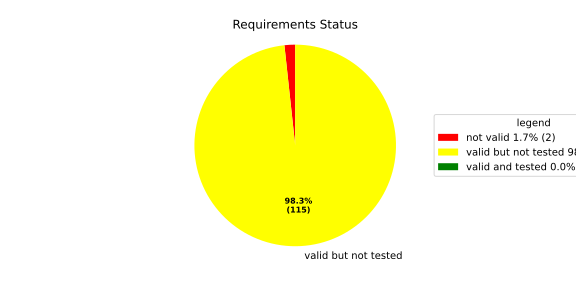
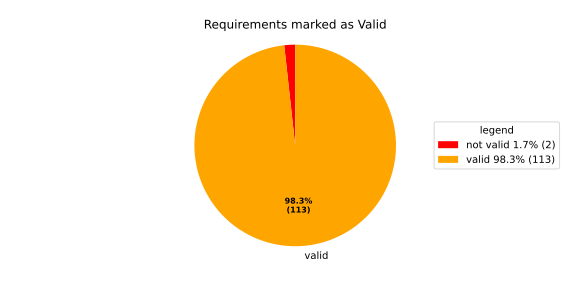
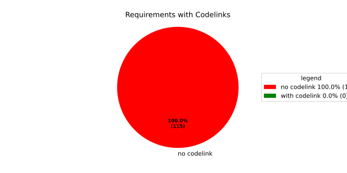

Component Requirements Statistics#
Overview#

In Detail#


No needs passed the filters
Failed Tests
Hint: This table should be empty. Before a PR can be merged all tests have to be successful.
No needs passed the filters
Skipped / Disabled Tests
No needs passed the filters
All passed Tests#
No needs passed the filters
Details About Testcases#
No needs passed the filters
No needs passed the filters
Test Log Files#
tests-report/score/health_monitor/src/rust/tests/test.log
exec ${PAGER:-/usr/bin/less} "$0" || exit 1
Executing tests from //score/health_monitor/src/rust:tests
-----------------------------------------------------------------------------
running 232 tests
test common::tests::duration_to_int_too_large - should panic ... ok
test common::tests::time_offset_diff_too_large - should panic ... ok
test common::tests::time_offset_valid ... ok
test common::tests::time_offset_wrong_order ... ok
test common::tests::time_range_from_interval_lower_too_large - should panic ... ok
test common::tests::time_range_from_interval_valid ... ok
test common::tests::time_range_new_valid ... ok
test common::tests::time_range_new_wrong_order - should panic ... ok
test deadline::common::tests::acquire_and_release_deadline ... ok
test deadline::common::tests::new_and_fields ... ok
test common::tests::duration_to_int_valid ... ok
test deadline::deadline_monitor::tests::deadline_failed_on_first_run_and_then_restarted_is_evaluated_as_error ... ok
test deadline::deadline_monitor::tests::deadline_outside_time_range_is_error_when_dropped_after_evaluate ... ok
test deadline::common::tests::concurrent_acquire ... ok
test deadline::deadline_monitor::tests::get_deadline_unknown_tag ... ok
test deadline::deadline_monitor::tests::start_stop_deadline_outside_ranges_is_evaluated_as_error ... ok
test deadline::deadline_monitor::tests::start_stop_deadline_outside_ranges_is_error_when_dropped_before_evaluate ... ok
test deadline::deadline_state::tests::as_u64_and_new ... ok
test deadline::deadline_state::tests::deadline_state_default_and_snapshot ... ok
test deadline::deadline_state::tests::deadline_state_update_none_returns_err ... ok
test deadline::deadline_state::tests::default_state ... ok
test deadline::deadline_state::tests::set_and_get_timestamp_ms ... ok
test deadline::deadline_state::tests::deadline_state_update_success ... ok
test deadline::deadline_state::tests::set_running ... ok
test deadline::deadline_state::tests::set_underrun ... ok
test deadline::ffi::tests::deadline_destroy_null_deadline ... ok
test deadline::ffi::tests::deadline_monitor_builder_add_deadline_invalid_range ... ok
test deadline::ffi::tests::deadline_monitor_builder_add_deadline_null_builder ... ok
test deadline::ffi::tests::deadline_monitor_builder_add_deadline_null_deadline_tag ... ok
test deadline::ffi::tests::deadline_monitor_builder_add_deadline_succeeds ... ok
test deadline::ffi::tests::deadline_monitor_builder_create_null_builder ... ok
test deadline::ffi::tests::deadline_monitor_builder_create_succeeds ... ok
test deadline::ffi::tests::deadline_monitor_builder_destroy_null_builder ... ok
test deadline::ffi::tests::deadline_monitor_destroy_null_monitor ... ok
test deadline::ffi::tests::deadline_monitor_get_deadline_null_deadline_handle ... ok
test deadline::ffi::tests::deadline_monitor_get_deadline_null_deadline_tag ... ok
test deadline::ffi::tests::deadline_monitor_get_deadline_null_monitor ... ok
test deadline::ffi::tests::deadline_monitor_get_deadline_unknown_deadline ... ok
test deadline::ffi::tests::deadline_monitor_get_deadline_succeeds ... ok
test deadline::ffi::tests::deadline_start_already_started ... ok
test deadline::ffi::tests::deadline_start_null_deadline ... ok
test deadline::ffi::tests::deadline_stop_null_deadline ... ok
test deadline::ffi::tests::deadline_start_succeeds ... ok
test deadline::ffi::tests::deadline_stop_succeeds ... ok
test ffi::tests::health_monitor_builder_add_deadline_monitor_null_deadline_monitor_builder ... ok
test ffi::tests::health_monitor_builder_add_deadline_monitor_null_hmon_builder ... ok
test ffi::tests::health_monitor_builder_add_deadline_monitor_null_monitor_tag ... ok
test ffi::tests::health_monitor_builder_add_deadline_monitor_succeeds ... ok
test ffi::tests::health_monitor_builder_add_heartbeat_monitor_null_hmon_builder ... ok
test ffi::tests::health_monitor_builder_add_heartbeat_monitor_null_heartbeat_monitor_builder ... ok
test ffi::tests::health_monitor_builder_add_heartbeat_monitor_null_monitor_tag ... ok
test ffi::tests::health_monitor_builder_add_heartbeat_monitor_succeeds ... ok
test ffi::tests::health_monitor_builder_add_logic_monitor_null_hmon_builder ... ok
test ffi::tests::health_monitor_builder_add_logic_monitor_null_logic_monitor_builder ... ok
test ffi::tests::health_monitor_builder_add_logic_monitor_null_monitor_tag ... ok
test ffi::tests::health_monitor_builder_add_logic_monitor_succeeds ... ok
test ffi::tests::health_monitor_builder_build_invalid_cycle_intervals ... ok
test ffi::tests::health_monitor_builder_build_no_monitors ... ok
test ffi::tests::health_monitor_builder_build_null_builder_handle ... ok
test ffi::tests::health_monitor_builder_build_null_monitor_handle ... ok
test ffi::tests::health_monitor_builder_build_succeeds ... ok
test ffi::tests::health_monitor_builder_build_thread_parameters ... ok
test ffi::tests::health_monitor_builder_build_valid_cycle_intervals_succeeds ... ok
test ffi::tests::health_monitor_builder_create_null_handle ... ok
test ffi::tests::health_monitor_builder_create_succeeds ... ok
test ffi::tests::health_monitor_builder_destroy_null_handle ... ok
test ffi::tests::health_monitor_destroy_null_hmon ... ok
test ffi::tests::health_monitor_get_deadline_monitor_already_taken ... ok
test ffi::tests::health_monitor_get_deadline_monitor_null_deadline_monitor ... ok
test ffi::tests::health_monitor_get_deadline_monitor_null_hmon ... ok
test ffi::tests::health_monitor_get_deadline_monitor_null_monitor_tag ... ok
test ffi::tests::health_monitor_get_deadline_monitor_succeeds ... ok
test ffi::tests::health_monitor_get_heartbeat_monitor_already_taken ... ok
test ffi::tests::health_monitor_get_heartbeat_monitor_null_heartbeat_monitor ... ok
test ffi::tests::health_monitor_get_heartbeat_monitor_null_monitor_tag ... ok
test ffi::tests::health_monitor_get_heartbeat_monitor_null_hmon ... ok
test ffi::tests::health_monitor_get_heartbeat_monitor_succeeds ... ok
test ffi::tests::health_monitor_get_logic_monitor_already_taken ... ok
test ffi::tests::health_monitor_get_logic_monitor_null_hmon ... ok
test ffi::tests::health_monitor_get_logic_monitor_null_logic_monitor ... ok
test ffi::tests::health_monitor_get_logic_monitor_null_monitor_tag ... ok
test ffi::tests::health_monitor_get_logic_monitor_succeeds ... ok
test ffi::tests::health_monitor_start_null_hmon ... ok
test ffi::tests::health_monitor_start_monitor_not_taken ... ok
test health_monitor::tests::health_monitor_builder_build_invalid_cycles ... ok
test health_monitor::tests::health_monitor_builder_build_no_monitors ... ok
test health_monitor::tests::health_monitor_builder_build_succeeds ... ok
test health_monitor::tests::health_monitor_builder_new_succeeds ... ok
test health_monitor::tests::health_monitor_get_deadline_monitor_available ... ok
test health_monitor::tests::health_monitor_get_deadline_monitor_invalid_state ... ok
test health_monitor::tests::health_monitor_get_deadline_monitor_taken ... ok
test health_monitor::tests::health_monitor_get_deadline_monitor_unknown ... ok
test health_monitor::tests::health_monitor_get_heartbeat_monitor_available ... ok
test health_monitor::tests::health_monitor_get_heartbeat_monitor_invalid_state ... ok
test health_monitor::tests::health_monitor_get_heartbeat_monitor_taken ... ok
test health_monitor::tests::health_monitor_get_heartbeat_monitor_unknown ... ok
test health_monitor::tests::health_monitor_get_logic_monitor_available ... ok
test health_monitor::tests::health_monitor_get_logic_monitor_invalid_state ... ok
[2026/06/01 13:07:08.7969051][7815][HMON][INFO] Monitoring thread started.
[2026/06/01 13:07:08.7969244][7815][HMON][INFO] Monitoring thread exiting.
test ffi::tests::health_monitor_start_succeeds ... ok
test health_monitor::tests::health_monitor_get_logic_monitor_taken ... ok
test health_monitor::tests::health_monitor_get_logic_monitor_unknown ... ok
[2026/06/01 13:07:08.7984349][7815][HMON][INFO] Monitoring thread started.
[2026/06/01 13:07:08.7984505][7815][HMON][INFO] Monitoring thread exiting.
test health_monitor::tests::health_monitor_start_monitors_not_taken - should panic ... ok
test health_monitor::tests::health_monitor_start_succeeds ... ok
test heartbeat::ffi::tests::heartbeat_monitor_builder_create_invalid_range ... ok
test heartbeat::ffi::tests::heartbeat_monitor_builder_create_null_builder ... ok
test heartbeat::ffi::tests::heartbeat_monitor_builder_create_succeeds ... ok
test heartbeat::ffi::tests::heartbeat_monitor_builder_destroy_null_builder ... ok
test heartbeat::ffi::tests::heartbeat_monitor_heartbeat_null_monitor ... ok
test heartbeat::ffi::tests::heartbeat_monitor_heartbeat_succeeds ... ok
test heartbeat::ffi::tests::heartbeat_monitor_destroy_null_monitor ... ok
test deadline::deadline_monitor::tests::monitor_with_multiple_running_deadlines ... ok
test heartbeat::heartbeat_monitor::tests::heartbeat_monitor_beat_early_evaluate_early ... ok
test heartbeat::heartbeat_monitor::tests::heartbeat_monitor_beat_early_evaluate_in_range ... ok
test heartbeat::heartbeat_monitor::tests::heartbeat_monitor_beat_in_range_evaluate_in_range ... ok
test heartbeat::heartbeat_monitor::tests::heartbeat_monitor_beat_early_evaluate_late ... ok
test heartbeat::heartbeat_monitor::tests::heartbeat_monitor_builder_build_invalid_internal_processing_cycle ... ok
test heartbeat::heartbeat_monitor::tests::heartbeat_monitor_builder_build_ok ... ok
test heartbeat::heartbeat_monitor::tests::heartbeat_monitor_beat_in_range_evaluate_late ... ok
test heartbeat::heartbeat_monitor::tests::heartbeat_monitor_beat_late_evaluate_late ... ok
test heartbeat::heartbeat_monitor::tests::heartbeat_monitor_cycle_early ... ok
test heartbeat::heartbeat_monitor::tests::heartbeat_monitor_multiple_beats_early_evaluate_early ... ok
test heartbeat::heartbeat_monitor::tests::heartbeat_monitor_cycle_in_range ... ok
test heartbeat::heartbeat_monitor::tests::heartbeat_monitor_multiple_beats_early_evaluate_in_range ... ok
test heartbeat::heartbeat_monitor::tests::heartbeat_monitor_multiple_beats_in_range_evaluate_in_range ... ok
test heartbeat::heartbeat_monitor::tests::heartbeat_monitor_cycle_late ... ok
test heartbeat::heartbeat_monitor::tests::heartbeat_monitor_multiple_beats_early_evaluate_late ... ok
test heartbeat::heartbeat_monitor::tests::heartbeat_monitor_no_beat_evaluate_early ... ok
test heartbeat::heartbeat_monitor::tests::heartbeat_monitor_no_beat_evaluate_in_range ... ok
test heartbeat::heartbeat_monitor::tests::heartbeat_monitor_multiple_beats_in_range_evaluate_late ... ok
test heartbeat::heartbeat_monitor::tests::heartbeat_monitor_multiple_beats_late_evaluate_late ... ok
test heartbeat::heartbeat_state::tests::snapshot_counter_increment ... ok
test heartbeat::heartbeat_state::tests::snapshot_default ... ok
test heartbeat::heartbeat_state::tests::snapshot_from_u64_max ... ok
test heartbeat::heartbeat_state::tests::snapshot_from_u64_valid ... ok
test heartbeat::heartbeat_state::tests::snapshot_from_u64_zero ... ok
test heartbeat::heartbeat_state::tests::snapshot_new_succeeds ... ok
test heartbeat::heartbeat_state::tests::snapshot_set_heartbeat_timestamp_out_of_range - should panic ... ok
test heartbeat::heartbeat_state::tests::snapshot_set_heartbeat_timestamp_valid ... ok
test heartbeat::heartbeat_state::tests::state_default ... ok
test heartbeat::heartbeat_state::tests::state_new ... ok
test heartbeat::heartbeat_state::tests::state_reset ... ok
test heartbeat::heartbeat_state::tests::state_snapshot ... ok
test heartbeat::heartbeat_state::tests::state_update_none ... ok
test heartbeat::heartbeat_state::tests::state_update_some ... ok
test logic::ffi::tests::logic_monitor_builder_add_state_null_allowed_states_many_elements ... ok
test logic::ffi::tests::logic_monitor_builder_add_state_null_allowed_states_zero_elements ... ok
test logic::ffi::tests::logic_monitor_builder_add_state_null_builder ... ok
test logic::ffi::tests::logic_monitor_builder_add_state_null_tag ... ok
test logic::ffi::tests::logic_monitor_builder_add_state_succeeds ... ok
test logic::ffi::tests::logic_monitor_builder_create_null_builder ... ok
test logic::ffi::tests::logic_monitor_builder_create_null_initial_state ... ok
test logic::ffi::tests::logic_monitor_builder_create_succeeds ... ok
test logic::ffi::tests::logic_monitor_builder_destroy_null_builder ... ok
test logic::ffi::tests::logic_monitor_destroy_null_monitor ... ok
test logic::ffi::tests::logic_monitor_state_fails ... ok
test logic::ffi::tests::logic_monitor_state_null_monitor ... ok
test logic::ffi::tests::logic_monitor_state_null_state ... ok
test logic::ffi::tests::logic_monitor_state_succeeds ... ok
test logic::ffi::tests::logic_monitor_transition_fails ... ok
test logic::ffi::tests::logic_monitor_transition_null_monitor ... ok
test logic::ffi::tests::logic_monitor_transition_null_target_state ... ok
test logic::ffi::tests::logic_monitor_transition_succeeds ... ok
test logic::logic_monitor::tests::logic_monitor_builder_build_no_states ... ok
test logic::logic_monitor::tests::logic_monitor_builder_build_succeeds ... ok
test logic::logic_monitor::tests::logic_monitor_builder_build_undefined_initial_state ... ok
test logic::logic_monitor::tests::logic_monitor_builder_build_undefined_target ... ok
test logic::logic_monitor::tests::logic_monitor_builder_new_succeeds ... ok
test logic::logic_monitor::tests::logic_monitor_evaluate_invalid_state ... ok
test logic::logic_monitor::tests::logic_monitor_evaluate_invalid_transition ... ok
test logic::logic_monitor::tests::logic_monitor_evaluate_succeeds ... ok
test logic::logic_monitor::tests::logic_monitor_state_indeterminate_current_state ... ok
test logic::logic_monitor::tests::logic_monitor_state_succeeds ... ok
test logic::logic_monitor::tests::logic_monitor_transition_indeterminate_current_state ... ok
test logic::logic_monitor::tests::logic_monitor_transition_invalid_transition ... ok
test logic::logic_monitor::tests::logic_monitor_transition_succeeds ... ok
test logic::logic_monitor::tests::logic_monitor_transition_unknown_node ... ok
test logic::logic_state::tests::snapshot_from_u64_max ... ok
test logic::logic_state::tests::snapshot_from_u64_valid ... ok
test logic::logic_state::tests::snapshot_from_u64_zero ... ok
test logic::logic_state::tests::snapshot_new_succeeds ... ok
test logic::logic_state::tests::snapshot_set_current_state_index_valid ... ok
test logic::logic_state::tests::snapshot_set_heartbeat_timestamp_out_of_range - should panic ... ok
test logic::logic_state::tests::snapshot_set_monitor_status_valid ... ok
test logic::logic_state::tests::state_new ... ok
test logic::logic_state::tests::state_snapshot ... ok
test logic::logic_state::tests::state_swap ... ok
test tag::tests::deadline_tag_debug ... ok
test tag::tests::deadline_tag_from_str ... ok
test tag::tests::deadline_tag_from_string ... ok
test tag::tests::deadline_tag_new ... ok
test tag::tests::deadline_tag_score_debug ... ok
test tag::tests::monitor_tag_debug ... ok
test tag::tests::monitor_tag_from_str ... ok
test tag::tests::monitor_tag_from_string ... ok
test tag::tests::monitor_tag_new ... ok
test tag::tests::monitor_tag_score_debug ... ok
test tag::tests::state_tag_debug ... ok
test tag::tests::state_tag_from_str ... ok
test tag::tests::state_tag_from_string ... ok
test tag::tests::state_tag_new ... ok
test tag::tests::state_tag_score_debug ... ok
test tag::tests::tag_debug ... ok
test tag::tests::tag_hash_is_eq ... ok
test tag::tests::tag_hash_is_ne ... ok
test tag::tests::tag_new ... ok
test tag::tests::tag_partial_eq_is_eq ... ok
test tag::tests::tag_partial_eq_is_ne ... ok
test tag::tests::tag_score_debug ... ok
test tag::tests::test_from_str ... ok
test tag::tests::test_from_string ... ok
test thread_ffi::tests::scheduler_policy_priority_max_null_priority ... ok
test thread_ffi::tests::scheduler_policy_priority_max_succeeds ... ok
test thread_ffi::tests::scheduler_policy_priority_min_null_priority ... ok
test thread_ffi::tests::scheduler_policy_priority_min_succeeds ... ok
test thread_ffi::tests::thread_parameters_affinity_null_affinity_many_elements ... ok
test thread_ffi::tests::thread_parameters_affinity_null_affinity_zero_elements ... ok
test thread_ffi::tests::thread_parameters_affinity_null_handle ... ok
test thread_ffi::tests::thread_parameters_affinity_succeeds ... ok
test thread_ffi::tests::thread_parameters_create_succeeds ... ok
test thread_ffi::tests::thread_parameters_destroy_null_handle ... ok
test thread_ffi::tests::thread_parameters_scheduler_parameters_invalid_priority ... ok
test thread_ffi::tests::thread_parameters_scheduler_parameters_null_handle ... ok
test thread_ffi::tests::thread_parameters_scheduler_parameters_succeeds ... ok
test thread_ffi::tests::thread_parameters_stack_size_null_handle ... ok
test thread_ffi::tests::thread_parameters_stack_size_succeeds ... ok
test worker::tests::monitoring_logic_report_alive_on_each_call_when_no_error ... ok
test heartbeat::heartbeat_monitor::tests::heartbeat_monitor_no_beat_evaluate_late ... ok
test worker::tests::monitoring_logic_report_error_when_deadline_failed ... ok
[2026/06/01 13:07:09.7562980][7815][HMON][INFO] Monitoring thread started.
test deadline::deadline_monitor::tests::start_stop_deadline_within_range_works ... ok
[2026/06/01 13:07:09.8167115][7815][HMON][WARN] Deadline (DeadlineTag(deadline_fast)) missed! Expected: 50, now: 60
[2026/06/01 13:07:09.8167394][7815][HMON][WARN] Deadline monitor with tag MonitorTag(deadline_monitor) reported error: TooLate.
[2026/06/01 13:07:09.8167466][7815][HMON][WARN] One or more monitors reported errors, skipping AliveAPI notification.
[2026/06/01 13:07:09.8167535][7815][HMON][INFO] Monitoring logic failed, stopping thread.
[2026/06/01 13:07:09.8167586][7815][HMON][INFO] Monitoring thread exiting.
test worker::tests::monitoring_logic_report_alive_respect_cycle ... ok
test worker::tests::unique_thread_runner_monitoring_works ... ok
test heartbeat::heartbeat_monitor::tests::heartbeat_monitor_timestamp_offset ... ok
test result: ok. 232 passed; 0 failed; 0 ignored; 0 measured; 0 filtered out; finished in 1.27s
tests-report/score/health_monitor/src/rust/loom_tests/test.log
exec ${PAGER:-/usr/bin/less} "$0" || exit 1
Executing tests from //score/health_monitor/src/rust:loom_tests
-----------------------------------------------------------------------------
running 3 tests
test heartbeat::heartbeat_monitor::loom_tests::heartbeat_monitor_heartbeat_evaluate_too_early ... ok
test heartbeat::heartbeat_monitor::loom_tests::heartbeat_monitor_heartbeat_evaluate_in_range ... ok
test heartbeat::heartbeat_monitor::loom_tests::heartbeat_monitor_heartbeat_evaluate_too_late ... ok
test result: ok. 3 passed; 0 failed; 0 ignored; 0 measured; 0 filtered out; finished in 0.71s
tests-report/score/health_monitor/src/cpp/cpp_tests/test.log
exec ${PAGER:-/usr/bin/less} "$0" || exit 1
Executing tests from //score/health_monitor/src/cpp:cpp_tests
-----------------------------------------------------------------------------
Running main() from gmock_main.cc
[==========] Running 1 test from 1 test suite.
[----------] Global test environment set-up.
[----------] 1 test from HealthMonitorTest
[ RUN ] HealthMonitorTest.TestName
[2026/06/01 13:07:10.0989262][score/health_monitor/src/rust/worker.rs:121][8244][HMON][INFO] Monitoring thread started.
[2026/06/01 13:07:10.0990149][score/health_monitor/src/rust/deadline/deadline_monitor.rs:217][8244][HMON][ERROR] Deadline DeadlineTag(deadline_1) stopped too early by 100 ms
[2026/06/01 13:07:10.1497675][score/health_monitor/src/rust/deadline/deadline_monitor.rs:267][8244][HMON][WARN] Deadline (DeadlineTag(deadline_1)) finished too early!
[2026/06/01 13:07:10.1497986][score/health_monitor/src/rust/worker.rs:58][8244][HMON][WARN] Deadline monitor with tag MonitorTag(deadline_monitor) reported error: TooEarly.
[2026/06/01 13:07:10.1498095][score/health_monitor/src/rust/heartbeat/heartbeat_monitor.rs:253][8244][HMON][WARN] Heartbeat occurred too early, offset to range: 100
[2026/06/01 13:07:10.1498145][score/health_monitor/src/rust/worker.rs:64][8244][HMON][WARN] Heartbeat monitor with tag MonitorTag(heartbeat_monitor) reported error: TooEarly.
[2026/06/01 13:07:10.1498203][score/health_monitor/src/rust/worker.rs:85][8244][HMON][WARN] One or more monitors reported errors, skipping AliveAPI notification.
[2026/06/01 13:07:10.1498247][score/health_monitor/src/rust/worker.rs:132][8244][HMON][INFO] Monitoring logic failed, stopping thread.
[2026/06/01 13:07:10.1498288][score/health_monitor/src/rust/worker.rs:139][8244][HMON][INFO] Monitoring thread exiting.
[ OK ] HealthMonitorTest.TestName (51 ms)
[----------] 1 test from HealthMonitorTest (51 ms total)
[----------] Global test environment tear-down
[==========] 1 test from 1 test suite ran. (51 ms total)
[ PASSED ] 1 test.
tests-report/score/launch_manager/exec_error_domain_UT/test.log
exec ${PAGER:-/usr/bin/less} "$0" || exit 1
Executing tests from //score/launch_manager:exec_error_domain_UT
-----------------------------------------------------------------------------
Running main() from gmock_main.cc
[==========] Running 3 tests from 1 test suite.
[----------] Global test environment set-up.
[----------] 3 tests from ExecErrorDomainTest
[ RUN ] ExecErrorDomainTest.AllKnownCodesReturnNonEmptyMessage
[ OK ] ExecErrorDomainTest.AllKnownCodesReturnNonEmptyMessage (0 ms)
[ RUN ] ExecErrorDomainTest.AllKnownCodesHaveDistinctMessages
[ OK ] ExecErrorDomainTest.AllKnownCodesHaveDistinctMessages (0 ms)
[ RUN ] ExecErrorDomainTest.UnknownCodeReturnsNonEmptyMessage
[ OK ] ExecErrorDomainTest.UnknownCodeReturnsNonEmptyMessage (0 ms)
[----------] 3 tests from ExecErrorDomainTest (0 ms total)
[----------] Global test environment tear-down
[==========] 3 tests from 1 test suite ran. (0 ms total)
[ PASSED ] 3 tests.
tests-report/score/launch_manager/daemon/src/process_state_client/process_state_client_ut/test.log
exec ${PAGER:-/usr/bin/less} "$0" || exit 1
Executing tests from //score/launch_manager/daemon/src/process_state_client:process_state_client_ut
-----------------------------------------------------------------------------
Running main() from gmock_main.cc
[==========] Running 4 tests from 1 test suite.
[----------] Global test environment set-up.
[----------] 4 tests from ProcessStateClient_UT
[ RUN ] ProcessStateClient_UT.ProcessStateClient_ConstructReceiver_Succeeds
[ OK ] ProcessStateClient_UT.ProcessStateClient_ConstructReceiver_Succeeds (0 ms)
[ RUN ] ProcessStateClient_UT.ProcessStateClient_QueueOneProcess_Succeeds
[ OK ] ProcessStateClient_UT.ProcessStateClient_QueueOneProcess_Succeeds (0 ms)
[ RUN ] ProcessStateClient_UT.ProcessStateClient_QueueMaxNumberOfProcesses_Succeeds
[ OK ] ProcessStateClient_UT.ProcessStateClient_QueueMaxNumberOfProcesses_Succeeds (8 ms)
[ RUN ] ProcessStateClient_UT.ProcessStateClient_QueueOneProcessTooMany_Fails
mw::log initialization error: Error No logging configuration files could be found. occurred with context information: Failed to load configuration files. Fallback to console logging.
2026/06/01 13:07:07.9227519 1538361 000 ECU1 NONE LM log error verbose 1 Failed to queue posix process
2026/06/01 13:07:07.9227520 1538363 000 ECU1 NONE LM log error verbose 1 ProcessStateReceiver::getNextChangedPosixProcess: Overflow occurred, will be reported as kCommunicationError
[ OK ] ProcessStateClient_UT.ProcessStateClient_QueueOneProcessTooMany_Fails (5 ms)
[----------] 4 tests from ProcessStateClient_UT (15 ms total)
[----------] Global test environment tear-down
[==========] 4 tests from 1 test suite ran. (15 ms total)
[ PASSED ] 4 tests.
tests-report/score/launch_manager/daemon/src/recovery_client/recovery_client_UT/test.log
exec ${PAGER:-/usr/bin/less} "$0" || exit 1
Executing tests from //score/launch_manager/daemon/src/recovery_client:recovery_client_UT
-----------------------------------------------------------------------------
Running main() from gmock_main.cc
[==========] Running 5 tests from 1 test suite.
[----------] Global test environment set-up.
[----------] 5 tests from RecoveryClientTest
[ RUN ] RecoveryClientTest.SendSingleRequest
[ OK ] RecoveryClientTest.SendSingleRequest (0 ms)
[ RUN ] RecoveryClientTest.GetNextRequest
[ OK ] RecoveryClientTest.GetNextRequest (0 ms)
[ RUN ] RecoveryClientTest.GetNextRequestEmpty
[ OK ] RecoveryClientTest.GetNextRequestEmpty (0 ms)
[ RUN ] RecoveryClientTest.RingBufferFull
[ OK ] RecoveryClientTest.RingBufferFull (0 ms)
[ RUN ] RecoveryClientTest.FIFOOrdering
[ OK ] RecoveryClientTest.FIFOOrdering (0 ms)
[----------] 5 tests from RecoveryClientTest (0 ms total)
[----------] Global test environment tear-down
[==========] 5 tests from 1 test suite ran. (0 ms total)
[ PASSED ] 5 tests.
tests-report/score/launch_manager/daemon/src/alive_monitor/details/MonitorImpl_UT/test.log
exec ${PAGER:-/usr/bin/less} "$0" || exit 1
Executing tests from //score/launch_manager/daemon/src/alive_monitor/details:MonitorImpl_UT
-----------------------------------------------------------------------------
Running main() from gmock_main.cc
[==========] Running 3 tests from 1 test suite.
[----------] Global test environment set-up.
[----------] 3 tests from MonitorImplTest
[ RUN ] MonitorImplTest.ThrowsWhenInterfacePathEnvVarIsNotSet
mw::log initialization error: Error No logging configuration files could be found. occurred with context information: Failed to load configuration files. Fallback to console logging.
2026/06/03 12:04:19.8259949 1229249 000 ECU1 NONE Sprv log error verbose 3 Failed to load interface path for Monitor ( test/instance )
[ OK ] MonitorImplTest.ThrowsWhenInterfacePathEnvVarIsNotSet (10 ms)
[ RUN ] MonitorImplTest.DoesNotThrowWhenInterfacePathEnvVarIsSet
2026/06/03 12:04:19.8259952 1229286 000 ECU1 NONE Sprv log error verbose 3 Connection to PHM daemon failed, for the Monitor ( test/instance )
[ OK ] MonitorImplTest.DoesNotThrowWhenInterfacePathEnvVarIsSet (0 ms)
[ RUN ] MonitorImplTest.ReportCheckpointSafeWhenNotConnected
2026/06/03 12:04:19.8259953 1229287 000 ECU1 NONE Sprv log error verbose 3 Connection to PHM daemon failed, for the Monitor ( test/instance )
[ OK ] MonitorImplTest.ReportCheckpointSafeWhenNotConnected (0 ms)
[----------] 3 tests from MonitorImplTest (10 ms total)
[----------] Global test environment tear-down
[==========] 3 tests from 1 test suite ran. (10 ms total)
[ PASSED ] 3 tests.
tests-report/score/launch_manager/daemon/src/alive_monitor/details/supervision/Alive_UT/test.log
exec ${PAGER:-/usr/bin/less} "$0" || exit 1
Executing tests from //score/launch_manager/daemon/src/alive_monitor/details/supervision:Alive_UT
-----------------------------------------------------------------------------
Running main() from gmock_main.cc
[==========] Running 4 tests from 1 test suite.
[----------] Global test environment set-up.
[----------] 4 tests from AliveSupervisionTest
[ RUN ] AliveSupervisionTest.AliveTransitionsOkToExpiredOnMissingHeartbeat
mw::log initialization error: Error No logging configuration files could be found. occurred with context information: Failed to load configuration files. Fallback to console logging.
2026/06/03 10:29:52.2592505 1296245 000 ECU1 NONE Sprv log warn verbose 13 Alive Supervision ( test_alive ) switched to EXPIRED , due to 0 reported alive indication(s) (expected >= 1 ). Failed supervision cycles: 0 / 0
[ OK ] AliveSupervisionTest.AliveTransitionsOkToExpiredOnMissingHeartbeat (5 ms)
[ RUN ] AliveSupervisionTest.AliveStaysOkWithCorrectHeartbeats
[ OK ] AliveSupervisionTest.AliveStaysOkWithCorrectHeartbeats (0 ms)
[ RUN ] AliveSupervisionTest.AliveReportsEnqueueFailureWhenRingBufferFull
2026/06/03 10:29:52.2592506 1296255 000 ECU1 NONE Sprv log warn verbose 13 Alive Supervision ( test_alive ) switched to EXPIRED , due to 0 reported alive indication(s) (expected >= 1 ). Failed supervision cycles: 0 / 0
2026/06/03 10:29:52.2592506 1296256 000 ECU1 NONE Sprv log error verbose 3 Failed to enqueue recovery request for alive supervision test_alive failure (ring buffer full)
[ OK ] AliveSupervisionTest.AliveReportsEnqueueFailureWhenRingBufferFull (0 ms)
[ RUN ] AliveSupervisionTest.AliveDebouncesThroughFailedBeforeExpired
2026/06/03 10:29:52.2592506 1296257 000 ECU1 NONE Sprv log warn verbose 13 Alive Supervision ( test_alive ) switched to FAILED , due to 0 reported alive indication(s) (expected >= 1 ). Failed supervision cycles: 1 / 1
2026/06/03 10:29:52.2592506 1296258 000 ECU1 NONE Sprv log warn verbose 13 Alive Supervision ( test_alive ) switched to EXPIRED , due to 0 reported alive indication(s) (expected >= 1 ). Failed supervision cycles: 2 / 1
[ OK ] AliveSupervisionTest.AliveDebouncesThroughFailedBeforeExpired (0 ms)
[----------] 4 tests from AliveSupervisionTest (5 ms total)
[----------] Global test environment tear-down
[==========] 4 tests from 1 test suite ran. (6 ms total)
[ PASSED ] 4 tests.
tests-report/score/launch_manager/daemon/src/alive_monitor/details/ifappl/MonitorIfDaemon_UT/test.log
exec ${PAGER:-/usr/bin/less} "$0" || exit 1
Executing tests from //score/launch_manager/daemon/src/alive_monitor/details/ifappl:MonitorIfDaemon_UT
-----------------------------------------------------------------------------
Running main() from gmock_main.cc
[==========] Running 16 tests from 1 test suite.
[----------] Global test environment set-up.
[----------] 16 tests from MonitorIfDaemonTest
[ RUN ] MonitorIfDaemonTest.GetInterfaceName_ReturnsNameGivenAtConstruction
mw::log initialization error: Error No logging configuration files could be found. occurred with context information: Failed to load configuration files. Fallback to console logging.
[ OK ] MonitorIfDaemonTest.GetInterfaceName_ReturnsNameGivenAtConstruction (2 ms)
[ RUN ] MonitorIfDaemonTest.InitiallyInactive_CheckForNewData_DoesNotNotifyCheckpoint
[ OK ] MonitorIfDaemonTest.InitiallyInactive_CheckForNewData_DoesNotNotifyCheckpoint (0 ms)
[ RUN ] MonitorIfDaemonTest.ProcessOffBeforeActivation_RemainsInactive
[ OK ] MonitorIfDaemonTest.ProcessOffBeforeActivation_RemainsInactive (0 ms)
[ RUN ] MonitorIfDaemonTest.ProcessRunning_ActivatesMonitorOnNextCheckForNewData
[ OK ] MonitorIfDaemonTest.ProcessRunning_ActivatesMonitorOnNextCheckForNewData (0 ms)
[ RUN ] MonitorIfDaemonTest.ProcessStarting_AlsoActivatesMonitor
[ OK ] MonitorIfDaemonTest.ProcessStarting_AlsoActivatesMonitor (0 ms)
[ RUN ] MonitorIfDaemonTest.ProcessOff_DeactivatesMonitor_NoFurtherDataForwarded
[ OK ] MonitorIfDaemonTest.ProcessOff_DeactivatesMonitor_NoFurtherDataForwarded (0 ms)
[ RUN ] MonitorIfDaemonTest.Active_CheckpointDataForwarded
[ OK ] MonitorIfDaemonTest.Active_CheckpointDataForwarded (0 ms)
[ RUN ] MonitorIfDaemonTest.Active_FutureTimestamp_NotForwardedInCurrentCycle
[ OK ] MonitorIfDaemonTest.Active_FutureTimestamp_NotForwardedInCurrentCycle (0 ms)
[ RUN ] MonitorIfDaemonTest.Active_FutureTimestampCheckpoint_ConsumedInLaterCycle
[ OK ] MonitorIfDaemonTest.Active_FutureTimestampCheckpoint_ConsumedInLaterCycle (0 ms)
[ RUN ] MonitorIfDaemonTest.Active_NonMatchingCheckpointId_NotForwarded
[ OK ] MonitorIfDaemonTest.Active_NonMatchingCheckpointId_NotForwarded (0 ms)
[ RUN ] MonitorIfDaemonTest.Active_MultipleCheckpointsInOneCycle_AllForwarded
[ OK ] MonitorIfDaemonTest.Active_MultipleCheckpointsInOneCycle_AllForwarded (0 ms)
[ RUN ] MonitorIfDaemonTest.Active_TwoAttachedCheckpoints_RoutedByCheckpointId
[ OK ] MonitorIfDaemonTest.Active_TwoAttachedCheckpoints_RoutedByCheckpointId (0 ms)
[ RUN ] MonitorIfDaemonTest.Active_OverflowDetected_TransitionsToInactiveOverflow
2026/06/03 10:29:52.2592545 1296648 000 ECU1 NONE Sprv log warn verbose 3 MonitorInterface: Potential data loss of checkpoint ring buffer occurred. Instance: test_interface
[ OK ] MonitorIfDaemonTest.Active_OverflowDetected_TransitionsToInactiveOverflow (1 ms)
[ RUN ] MonitorIfDaemonTest.InactiveOverflow_NoProcessRestart_DoesNotRepeatNotification
2026/06/03 10:29:52.2592546 1296653 000 ECU1 NONE Sprv log warn verbose 3 MonitorInterface: Potential data loss of checkpoint ring buffer occurred. Instance: test_interface
[ OK ] MonitorIfDaemonTest.InactiveOverflow_NoProcessRestart_DoesNotRepeatNotification (0 ms)
[ RUN ] MonitorIfDaemonTest.InactiveOverflow_ProcessRestarts_PushesOverflowNotificationAgain
2026/06/03 10:29:52.2592546 1296655 000 ECU1 NONE Sprv log warn verbose 3 MonitorInterface: Potential data loss of checkpoint ring buffer occurred. Instance: test_interface
[ OK ] MonitorIfDaemonTest.InactiveOverflow_ProcessRestarts_PushesOverflowNotificationAgain (0 ms)
[ RUN ] MonitorIfDaemonTest.InactiveOverflow_ProcessRestartFlag_ClearedAfterNotification
2026/06/03 10:29:52.2592546 1296658 000 ECU1 NONE Sprv log warn verbose 3 MonitorInterface: Potential data loss of checkpoint ring buffer occurred. Instance: test_interface
[ OK ] MonitorIfDaemonTest.InactiveOverflow_ProcessRestartFlag_ClearedAfterNotification (0 ms)
[----------] 16 tests from MonitorIfDaemonTest (7 ms total)
[----------] Global test environment tear-down
[==========] 16 tests from 1 test suite ran. (7 ms total)
[ PASSED ] 16 tests.
tests-report/score/launch_manager/daemon/src/process_group_manager/details/safeprocessmap_UT/test.log
exec ${PAGER:-/usr/bin/less} "$0" || exit 1
Executing tests from //score/launch_manager/daemon/src/process_group_manager/details:safeprocessmap_UT
-----------------------------------------------------------------------------
Running main() from gmock_main.cc
[==========] Running 13 tests from 1 test suite.
[----------] Global test environment set-up.
[----------] 13 tests from SafeProcessMapTest
[ RUN ] SafeProcessMapTest.ConstructWithZeroCapacity
[ OK ] SafeProcessMapTest.ConstructWithZeroCapacity (0 ms)
[ RUN ] SafeProcessMapTest.FindTerminatedWithNegativePidReturnsInvalid
[ OK ] SafeProcessMapTest.FindTerminatedWithNegativePidReturnsInvalid (0 ms)
[ RUN ] SafeProcessMapTest.FindTerminatedInsertsEntryWhenPidNotPresent
[ OK ] SafeProcessMapTest.FindTerminatedInsertsEntryWhenPidNotPresent (0 ms)
[ RUN ] SafeProcessMapTest.FindTerminatedMatchesExistingInsertAndCallsCallback
[ OK ] SafeProcessMapTest.FindTerminatedMatchesExistingInsertAndCallsCallback (0 ms)
[ RUN ] SafeProcessMapTest.InsertIntoEmptyTreeReturnsZero
[ OK ] SafeProcessMapTest.InsertIntoEmptyTreeReturnsZero (0 ms)
[ RUN ] SafeProcessMapTest.InsertMatchesExistingFindTerminatedEntry
[ OK ] SafeProcessMapTest.InsertMatchesExistingFindTerminatedEntry (0 ms)
[ RUN ] SafeProcessMapTest.InsertMultipleNodesThenFindTerminatedRemovesAll
[ OK ] SafeProcessMapTest.InsertMultipleNodesThenFindTerminatedRemovesAll (7 ms)
[ RUN ] SafeProcessMapTest.InsertBeyondCapacityReturnsOutOfMemory
[ OK ] SafeProcessMapTest.InsertBeyondCapacityReturnsOutOfMemory (2 ms)
[ RUN ] SafeProcessMapTest.InsertSamePidTwiceYieldsUntilFindTerminatedResolves
[ OK ] SafeProcessMapTest.InsertSamePidTwiceYieldsUntilFindTerminatedResolves (11 ms)
[ RUN ] SafeProcessMapTest.FindTerminatedSamePidTwiceYieldsUntilInsertResolves
[ OK ] SafeProcessMapTest.FindTerminatedSamePidTwiceYieldsUntilInsertResolves (11 ms)
[ RUN ] SafeProcessMapTest.FindTerminatedWorksAtMaxTreeDepth
[ OK ] SafeProcessMapTest.FindTerminatedWorksAtMaxTreeDepth (0 ms)
[ RUN ] SafeProcessMapTest.ConcurrentInsertAndFindFromMultipleThreads
[ OK ] SafeProcessMapTest.ConcurrentInsertAndFindFromMultipleThreads (2575 ms)
[ RUN ] SafeProcessMapTest.ConcurrentFindAndInsertFromMultipleThreads
[ OK ] SafeProcessMapTest.ConcurrentFindAndInsertFromMultipleThreads (2210 ms)
[----------] 13 tests from SafeProcessMapTest (4821 ms total)
[----------] Global test environment tear-down
[==========] 13 tests from 1 test suite ran. (4821 ms total)
[ PASSED ] 13 tests.
tests-report/score/launch_manager/daemon/src/process_group_manager/details/oshandler_UT/test.log
exec ${PAGER:-/usr/bin/less} "$0" || exit 1
Executing tests from //score/launch_manager/daemon/src/process_group_manager/details:oshandler_UT
-----------------------------------------------------------------------------
Running main() from gmock_main.cc
[==========] Running 6 tests from 1 test suite.
[----------] Global test environment set-up.
[----------] 6 tests from OsHandlerTest
[ RUN ] OsHandlerTest.WaitReturnsProcessId_FindTerminatedIsCalled
[ OK ] OsHandlerTest.WaitReturnsProcessId_FindTerminatedIsCalled (102 ms)
[ RUN ] OsHandlerTest.WaitReturnsError_OsHandlerSleepsAndDoesNotCallFindTerminated
[ OK ] OsHandlerTest.WaitReturnsError_OsHandlerSleepsAndDoesNotCallFindTerminated (101 ms)
[ RUN ] OsHandlerTest.WaitReturnsZeroPid_OsHandlerSleepsAndDoesNotCallFindTerminated
[ OK ] OsHandlerTest.WaitReturnsZeroPid_OsHandlerSleepsAndDoesNotCallFindTerminated (104 ms)
[ RUN ] OsHandlerTest.WaitReturnsProcessIdBeforeRegistration_LaterRegistrationReceivesStoredTermination
[ OK ] OsHandlerTest.WaitReturnsProcessIdBeforeRegistration_LaterRegistrationReceivesStoredTermination (102 ms)
[ RUN ] OsHandlerTest.WaitReturnsUnknownPidWhenMapIsFull_OutOfResourcesPathDoesNotNotifyCallbacks
mw::log initialization error: Error No logging configuration files could be found. occurred with context information: Failed to load configuration files. Fallback to console logging.
2026/06/03 06:59:29.9969867 1115355 000 ECU1 NONE LM log error verbose 3 No more resources available to track process with PID 9999 (SafeProcessMap capacity exceeded).
[ OK ] OsHandlerTest.WaitReturnsUnknownPidWhenMapIsFull_OutOfResourcesPathDoesNotNotifyCallbacks (112 ms)
[ RUN ] OsHandlerTest.WaitReturnsErrorThenProcessId_HandlerRecoversAndInvokesCallback
[ OK ] OsHandlerTest.WaitReturnsErrorThenProcessId_HandlerRecoversAndInvokesCallback (202 ms)
[----------] 6 tests from OsHandlerTest (813 ms total)
[----------] Global test environment tear-down
[==========] 6 tests from 1 test suite ran. (814 ms total)
[ PASSED ] 6 tests.
tests-report/score/launch_manager/daemon/src/common/identifier_hash_UT/test.log
exec ${PAGER:-/usr/bin/less} "$0" || exit 1
Executing tests from //score/launch_manager/daemon/src/common:identifier_hash_UT
-----------------------------------------------------------------------------
Running main() from gmock_main.cc
[==========] Running 7 tests from 1 test suite.
[----------] Global test environment set-up.
[----------] 7 tests from IdentifierHashTest
[ RUN ] IdentifierHashTest.IdentifierHash_with_string_view_created
[ OK ] IdentifierHashTest.IdentifierHash_with_string_view_created (0 ms)
[ RUN ] IdentifierHashTest.IdentifierHash_with_string_created
[ OK ] IdentifierHashTest.IdentifierHash_with_string_created (0 ms)
[ RUN ] IdentifierHashTest.IdentifierHash_default_created
[ OK ] IdentifierHashTest.IdentifierHash_default_created (0 ms)
[ RUN ] IdentifierHashTest.IdentifierHash_invalid_hash_no_string_representation
[ OK ] IdentifierHashTest.IdentifierHash_invalid_hash_no_string_representation (0 ms)
[ RUN ] IdentifierHashTest.IdentifierHash_no_dangling_pointer_after_source_string_dies
[ OK ] IdentifierHashTest.IdentifierHash_no_dangling_pointer_after_source_string_dies (0 ms)
[ RUN ] IdentifierHashTest.IdentifierHash_EqualityOperators
[ OK ] IdentifierHashTest.IdentifierHash_EqualityOperators (0 ms)
[ RUN ] IdentifierHashTest.IdentifierHash_LessThanOperator
[ OK ] IdentifierHashTest.IdentifierHash_LessThanOperator (0 ms)
[----------] 7 tests from IdentifierHashTest (0 ms total)
[----------] Global test environment tear-down
[==========] 7 tests from 1 test suite ran. (0 ms total)
[ PASSED ] 7 tests.
tests-report/score/launch_manager/daemon/src/common/concurrency/mpmc_concurrent_queue_tsan_test/test.log
exec ${PAGER:-/usr/bin/less} "$0" || exit 1
Executing tests from //score/launch_manager/daemon/src/common/concurrency:mpmc_concurrent_queue_tsan_test
-----------------------------------------------------------------------------
Running main() from gmock_main.cc
[==========] Running 15 tests from 5 test suites.
[----------] Global test environment set-up.
[----------] 5 tests from MPMCConcurrentQueueTest_Basic
[ RUN ] MPMCConcurrentQueueTest_Basic.PushAndPopSingleItem
[ OK ] MPMCConcurrentQueueTest_Basic.PushAndPopSingleItem (0 ms)
[ RUN ] MPMCConcurrentQueueTest_Basic.PushAndPopPreservesOrder
[ OK ] MPMCConcurrentQueueTest_Basic.PushAndPopPreservesOrder (0 ms)
[ RUN ] MPMCConcurrentQueueTest_Basic.LvaluePushCopiesItem
[ OK ] MPMCConcurrentQueueTest_Basic.LvaluePushCopiesItem (0 ms)
[ RUN ] MPMCConcurrentQueueTest_Basic.RvaluePushWorksWithMoveOnlyType
[ OK ] MPMCConcurrentQueueTest_Basic.RvaluePushWorksWithMoveOnlyType (0 ms)
[ RUN ] MPMCConcurrentQueueTest_Basic.PopReturnsNulloptOnSemaphoreWaitFailure
[ OK ] MPMCConcurrentQueueTest_Basic.PopReturnsNulloptOnSemaphoreWaitFailure (20 ms)
[----------] 5 tests from MPMCConcurrentQueueTest_Basic (21 ms total)
[----------] 2 tests from MPMCConcurrentQueueTest_Timeout
[ RUN ] MPMCConcurrentQueueTest_Timeout.PushWithTimeoutSucceedsWhenSlotAvailable
[ OK ] MPMCConcurrentQueueTest_Timeout.PushWithTimeoutSucceedsWhenSlotAvailable (0 ms)
[ RUN ] MPMCConcurrentQueueTest_Timeout.PushWithTimeoutReturnsFalseWhenFull
[ OK ] MPMCConcurrentQueueTest_Timeout.PushWithTimeoutReturnsFalseWhenFull (20 ms)
[----------] 2 tests from MPMCConcurrentQueueTest_Timeout (20 ms total)
[----------] 3 tests from MPMCConcurrentQueueTest_Stop
[ RUN ] MPMCConcurrentQueueTest_Stop.PushReturnsFalseAfterStop
[ OK ] MPMCConcurrentQueueTest_Stop.PushReturnsFalseAfterStop (0 ms)
[ RUN ] MPMCConcurrentQueueTest_Stop.PopReturnsNulloptWhenStoppedAndEmpty
[ OK ] MPMCConcurrentQueueTest_Stop.PopReturnsNulloptWhenStoppedAndEmpty (0 ms)
[ RUN ] MPMCConcurrentQueueTest_Stop.ItemsAreDroppedAfterStop
[ OK ] MPMCConcurrentQueueTest_Stop.ItemsAreDroppedAfterStop (0 ms)
[----------] 3 tests from MPMCConcurrentQueueTest_Stop (0 ms total)
[----------] 4 tests from MPMCConcurrentQueueTest_Blocking
[ RUN ] MPMCConcurrentQueueTest_Blocking.PopBlocksUntilItemAvailable
[ OK ] MPMCConcurrentQueueTest_Blocking.PopBlocksUntilItemAvailable (0 ms)
[ RUN ] MPMCConcurrentQueueTest_Blocking.PushBlocksWhenFull
[ OK ] MPMCConcurrentQueueTest_Blocking.PushBlocksWhenFull (0 ms)
[ RUN ] MPMCConcurrentQueueTest_Blocking.StopUnblocksBlockedConsumer
[ OK ] MPMCConcurrentQueueTest_Blocking.StopUnblocksBlockedConsumer (0 ms)
[ RUN ] MPMCConcurrentQueueTest_Blocking.StopUnblocksBlockedProducer
[ OK ] MPMCConcurrentQueueTest_Blocking.StopUnblocksBlockedProducer (0 ms)
[----------] 4 tests from MPMCConcurrentQueueTest_Blocking (0 ms total)
[----------] 1 test from MPMCConcurrentQueueTest_MPMC
[ RUN ] MPMCConcurrentQueueTest_MPMC.AllItemsDelivered
[ OK ] MPMCConcurrentQueueTest_MPMC.AllItemsDelivered (1 ms)
[----------] 1 test from MPMCConcurrentQueueTest_MPMC (1 ms total)
[----------] Global test environment tear-down
[==========] 15 tests from 5 test suites ran. (45 ms total)
[ PASSED ] 15 tests.
tests-report/score/launch_manager/daemon/src/common/concurrency/mpmc_concurrent_queue_test/test.log
exec ${PAGER:-/usr/bin/less} "$0" || exit 1
Executing tests from //score/launch_manager/daemon/src/common/concurrency:mpmc_concurrent_queue_test
-----------------------------------------------------------------------------
Running main() from gmock_main.cc
[==========] Running 15 tests from 5 test suites.
[----------] Global test environment set-up.
[----------] 5 tests from MPMCConcurrentQueueTest_Basic
[ RUN ] MPMCConcurrentQueueTest_Basic.PushAndPopSingleItem
[ OK ] MPMCConcurrentQueueTest_Basic.PushAndPopSingleItem (0 ms)
[ RUN ] MPMCConcurrentQueueTest_Basic.PushAndPopPreservesOrder
[ OK ] MPMCConcurrentQueueTest_Basic.PushAndPopPreservesOrder (0 ms)
[ RUN ] MPMCConcurrentQueueTest_Basic.LvaluePushCopiesItem
[ OK ] MPMCConcurrentQueueTest_Basic.LvaluePushCopiesItem (0 ms)
[ RUN ] MPMCConcurrentQueueTest_Basic.RvaluePushWorksWithMoveOnlyType
[ OK ] MPMCConcurrentQueueTest_Basic.RvaluePushWorksWithMoveOnlyType (0 ms)
[ RUN ] MPMCConcurrentQueueTest_Basic.PopReturnsNulloptOnSemaphoreWaitFailure
[ OK ] MPMCConcurrentQueueTest_Basic.PopReturnsNulloptOnSemaphoreWaitFailure (20 ms)
[----------] 5 tests from MPMCConcurrentQueueTest_Basic (20 ms total)
[----------] 2 tests from MPMCConcurrentQueueTest_Timeout
[ RUN ] MPMCConcurrentQueueTest_Timeout.PushWithTimeoutSucceedsWhenSlotAvailable
[ OK ] MPMCConcurrentQueueTest_Timeout.PushWithTimeoutSucceedsWhenSlotAvailable (0 ms)
[ RUN ] MPMCConcurrentQueueTest_Timeout.PushWithTimeoutReturnsFalseWhenFull
[ OK ] MPMCConcurrentQueueTest_Timeout.PushWithTimeoutReturnsFalseWhenFull (20 ms)
[----------] 2 tests from MPMCConcurrentQueueTest_Timeout (20 ms total)
[----------] 3 tests from MPMCConcurrentQueueTest_Stop
[ RUN ] MPMCConcurrentQueueTest_Stop.PushReturnsFalseAfterStop
[ OK ] MPMCConcurrentQueueTest_Stop.PushReturnsFalseAfterStop (0 ms)
[ RUN ] MPMCConcurrentQueueTest_Stop.PopReturnsNulloptWhenStoppedAndEmpty
[ OK ] MPMCConcurrentQueueTest_Stop.PopReturnsNulloptWhenStoppedAndEmpty (0 ms)
[ RUN ] MPMCConcurrentQueueTest_Stop.ItemsAreDroppedAfterStop
[ OK ] MPMCConcurrentQueueTest_Stop.ItemsAreDroppedAfterStop (0 ms)
[----------] 3 tests from MPMCConcurrentQueueTest_Stop (0 ms total)
[----------] 4 tests from MPMCConcurrentQueueTest_Blocking
[ RUN ] MPMCConcurrentQueueTest_Blocking.PopBlocksUntilItemAvailable
[ OK ] MPMCConcurrentQueueTest_Blocking.PopBlocksUntilItemAvailable (0 ms)
[ RUN ] MPMCConcurrentQueueTest_Blocking.PushBlocksWhenFull
[ OK ] MPMCConcurrentQueueTest_Blocking.PushBlocksWhenFull (0 ms)
[ RUN ] MPMCConcurrentQueueTest_Blocking.StopUnblocksBlockedConsumer
[ OK ] MPMCConcurrentQueueTest_Blocking.StopUnblocksBlockedConsumer (0 ms)
[ RUN ] MPMCConcurrentQueueTest_Blocking.StopUnblocksBlockedProducer
[ OK ] MPMCConcurrentQueueTest_Blocking.StopUnblocksBlockedProducer (0 ms)
[----------] 4 tests from MPMCConcurrentQueueTest_Blocking (0 ms total)
[----------] 1 test from MPMCConcurrentQueueTest_MPMC
[ RUN ] MPMCConcurrentQueueTest_MPMC.AllItemsDelivered
[ OK ] MPMCConcurrentQueueTest_MPMC.AllItemsDelivered (0 ms)
[----------] 1 test from MPMCConcurrentQueueTest_MPMC (0 ms total)
[----------] Global test environment tear-down
[==========] 15 tests from 5 test suites ran. (42 ms total)
[ PASSED ] 15 tests.
tests-report/tests/integration/smoke/smoke/test.log
exec ${PAGER:-/usr/bin/less} "$0" || exit 1
Executing tests from //tests/integration/smoke:smoke
-----------------------------------------------------------------------------
============================= test session starts ==============================
platform linux -- Python 3.12.12, pytest-9.0.3, pluggy-1.5.0
rootdir: /home/runner/.bazel/sandbox/processwrapper-sandbox/889/execroot/_main/bazel-out/k8-fastbuild/bin/tests/integration/smoke/smoke.runfiles/score_itf+
configfile: pytest.ini
collected 1 item
../score_itf+::test_smoke
-------------------------------- live log setup --------------------------------
[2026-06-03 12:04:28.006] [INFO] [score.itf.plugins.docker] Executing custom image bootstrap command: tests/utils/environments/x86_64-linux/x86_64-linux.sh
[2026-06-03 12:04:35.372] [DEBUG] [docker.utils.config] Trying paths: ['/home/runner/.docker/config.json', '/home/runner/.dockercfg']
[2026-06-03 12:04:35.372] [DEBUG] [docker.utils.config] Found file at path: /home/runner/.docker/config.json
[2026-06-03 12:04:35.372] [DEBUG] [docker.auth] Found 'auths' section
[2026-06-03 12:04:35.372] [DEBUG] [docker.auth] Found entry (registry='https://index.docker.io/v1/', username='githubactions')
[2026-06-03 12:04:35.381] [DEBUG] [urllib3.connectionpool] http://localhost:None "GET /version HTTP/1.1" 200 823
[2026-06-03 12:04:35.424] [DEBUG] [urllib3.connectionpool] http://localhost:None "POST /v1.48/containers/create HTTP/1.1" 201 88
[2026-06-03 12:04:35.426] [DEBUG] [urllib3.connectionpool] http://localhost:None "GET /v1.48/containers/429f400ac7feb525258860130547108f652706f1b586f2981c09a9e46876fdb8/json HTTP/1.1" 200 None
[2026-06-03 12:04:35.625] [DEBUG] [urllib3.connectionpool] http://localhost:None "POST /v1.48/containers/429f400ac7feb525258860130547108f652706f1b586f2981c09a9e46876fdb8/start HTTP/1.1" 204 0
[2026-06-03 12:04:35.626] [DEBUG] [docker.utils.config] Trying paths: ['/home/runner/.docker/config.json', '/home/runner/.dockercfg']
[2026-06-03 12:04:35.626] [DEBUG] [docker.utils.config] Found file at path: /home/runner/.docker/config.json
[2026-06-03 12:04:35.626] [DEBUG] [docker.auth] Found 'auths' section
[2026-06-03 12:04:35.627] [DEBUG] [docker.auth] Found entry (registry='https://index.docker.io/v1/', username='githubactions')
[2026-06-03 12:04:35.634] [DEBUG] [urllib3.connectionpool] http://localhost:None "GET /version HTTP/1.1" 200 823
[2026-06-03 12:04:35.833] [INFO] [tests.utils.testing_utils.setup_test] Test case setup finished
-------------------------------- live log call ---------------------------------
[2026-06-03 12:04:35.929] [INFO] [launch_manager] 2026/06/03 12:04:35.8275927 1389034 000 ECU1 LM LM log debug verbose 1 Launch Manager Started !!!!
[2026-06-03 12:04:35.953] [INFO] [launch_manager] 2026/06/03 12:04:35.8275929 1389053 000 ECU1 LM LM log debug verbose 1 Loading LCM Configurations...
[2026-06-03 12:04:35.953] [INFO] [launch_manager] 2026/06/03 12:04:35.8275929 1389054 000 ECU1 LM LM log debug verbose 1 ECUCFG_ENV_VAR_ROOTFOLDER set successfully
[2026-06-03 12:04:35.953] [INFO] [launch_manager] 2026/06/03 12:04:35.8275929 1389055 000 ECU1 LM LM log debug verbose 5 FlatBufferParser::getModeGroupPgName: MainPG ( IdentifierHash: 18079021346025578134 )
[2026-06-03 12:04:35.953] [INFO] [launch_manager] 2026/06/03 12:04:35.8275930 1389056 000 ECU1 LM LM log debug verbose 5 FlatBufferParser::getModeGroupPgStateName: MainPG/Startup ( IdentifierHash: 10504605499600661529 )
[2026-06-03 12:04:35.953] [INFO] [launch_manager] 2026/06/03 12:04:35.8275930 1389057 000 ECU1 LM LM log debug verbose 5 FlatBufferParser::getModeGroupPgStateName: MainPG/Running ( IdentifierHash: 15039935902284124227 )
[2026-06-03 12:04:35.953] [INFO] [launch_manager] 2026/06/03 12:04:35.8275930 1389058 000 ECU1 LM LM log debug verbose 5 FlatBufferParser::getModeGroupPgStateName: MainPG/Off ( IdentifierHash: 15281793077830264047 )
[2026-06-03 12:04:35.953] [INFO] [launch_manager] 2026/06/03 12:04:35.8275930 1389058 000 ECU1 LM LM log debug verbose 5 FlatBufferParser::getModeGroupPgStateName: MainPG/fallback_run_target ( IdentifierHash: 4059409696722237352 )
[2026-06-03 12:04:35.953] [INFO] [launch_manager] 2026/06/03 12:04:35.8275930 1389059 000 ECU1 LM LM log debug verbose 4 parseProcessConfigurations: Process index: 0 executable_path_: /tmp/tests/smoke/control_daemon_mock
[2026-06-03 12:04:35.953] [INFO] [launch_manager] 2026/06/03 12:04:35.8275930 1389060 000 ECU1 LM LM log debug verbose 3 Process control_daemon is Reporting execution state
[2026-06-03 12:04:35.953] [INFO] [launch_manager] 2026/06/03 12:04:35.8275930 1389060 000 ECU1 LM LM log debug verbose 1 Process is STATE_MANAGEMENT function Cluster Affiliation
[2026-06-03 12:04:35.953] [INFO] [launch_manager] 2026/06/03 12:04:35.8275930 1389061 000 ECU1 LM LM log debug verbose 3 Process control_daemon is NOT Self terminating
[2026-06-03 12:04:35.954] [INFO] [launch_manager] 2026/06/03 12:04:35.8275930 1389062 000 ECU1 LM LM log debug verbose 4 ParseProcessProcessGroup: id:::pg_name_: MainPG , pg_state_name_: MainPG/Startup
[2026-06-03 12:04:35.954] [INFO] [launch_manager] 2026/06/03 12:04:35.8275930 1389062 000 ECU1 LM LM log debug verbose 4 ParseProcessProcessGroup: id:::pg_name_: MainPG , pg_state_name_: MainPG/Running
[2026-06-03 12:04:35.954] [INFO] [launch_manager] 2026/06/03 12:04:35.8275930 1389063 000 ECU1 LM LM log debug verbose 4
[2026-06-03 12:04:35.954] [INFO] [launch_manager] parseProcessConfigurations: Process index: 1 executable_path_: /tmp/tests/smoke/gtest_process
[2026-06-03 12:04:35.954] [INFO] [launch_manager] 2026/06/03 12:04:35.8275930 1389064 000 ECU1 LM LM log debug verbose 3 Process gtest_process is Reporting execution state
[2026-06-03 12:04:35.954] [INFO] [launch_manager] 2026/06/03 12:04:35.8275930 1389064 000 ECU1 LM LM log debug verbose 1 Process is NOT associated with any function Cluster Affiliation
[2026-06-03 12:04:35.954] [INFO] [launch_manager] 2026/06/03 12:04:35.8275930 1389065 000 ECU1 LM LM log debug verbose 3
[2026-06-03 12:04:35.954] [INFO] [launch_manager] Process gtest_process is NOT Self terminating
[2026-06-03 12:04:35.954] [INFO] [launch_manager] 2026/06/03 12:04:35.8275930 1389066 000 ECU1 LM LM log debug verbose 4
[2026-06-03 12:04:35.954] [INFO] [launch_manager] ParseProcessProcessGroup: id:::pg_name_: MainPG , pg_state_name_: MainPG/Running
[2026-06-03 12:04:35.954] [INFO] [launch_manager] 2026/06/03 12:04:35.8275931 1389068 000 ECU1 LM LM log debug verbose 3
[2026-06-03 12:04:35.954] [INFO] [launch_manager] Loading SWCL Nr. 0 Succeeded
[2026-06-03 12:04:35.955] [INFO] [launch_manager] 2026/06/03 12:04:35.8275932 1389078 000 ECU1 LM LM log debug verbose 2
[2026-06-03 12:04:35.955] [INFO] [launch_manager] 1 process group(s)
[2026-06-03 12:04:35.955] [INFO] [launch_manager] 2026/06/03 12:04:35.8275932 1389079 000 ECU1 LM LM log debug verbose 3
[2026-06-03 12:04:35.955] [INFO] [launch_manager] Creating graph with 2 nodes
[2026-06-03 12:04:35.955] [INFO] [launch_manager] 2026/06/03 12:04:35.8275936 1389117 000 ECU1 LM LM log debug verbose 1 Process groups initialized successfully
[2026-06-03 12:04:35.955] [INFO] [launch_manager] 2026/06/03 12:04:35.8275936 1389118 000 ECU1 LM LM log debug verbose 1 Process Group initialization done
[2026-06-03 12:04:35.955] [INFO] [launch_manager] 2026/06/03 12:04:35.8275936 1389119 000 ECU1 LM LM log debug verbose 3 Creating Safe Process Map with 2 entries
[2026-06-03 12:04:35.955] [INFO] [launch_manager] 2026/06/03 12:04:35.8275936 1389120 000 ECU1 LM LM log debug verbose 2 Creating job queue with capacity 1024
[2026-06-03 12:04:35.955] [INFO] [launch_manager] 2026/06/03 12:04:35.8275939 1389146 000 ECU1 LM LM log debug verbose 1 Creating worker threads...
[2026-06-03 12:04:35.955] [INFO] [launch_manager] 2026/06/03 12:04:35.8275948 1389239 000 ECU1 LM LM log debug verbose 7 Process group index 0 (with name MainPG ) has 2 processes
[2026-06-03 12:04:35.955] [INFO] [launch_manager] 2026/06/03 12:04:35.8275948 1389241 000 ECU1 LM LM log debug verbose 2 Creating process node with id: 0
[2026-06-03 12:04:35.955] [INFO] [launch_manager] 2026/06/03 12:04:35.8275948 1389241 000 ECU1 LM LM log debug verbose 5 Process 0 has 0 start dependencies
[2026-06-03 12:04:35.955] [INFO] [launch_manager] 2026/06/03 12:04:35.8275948 1389242 000 ECU1 LM LM log debug verbose 2 Creating process node with id: 1
[2026-06-03 12:04:35.955] [INFO] [launch_manager] 2026/06/03 12:04:35.8275948 1389243 000 ECU1 LM LM log debug verbose 5 Process 1 has 0 start dependencies
[2026-06-03 12:04:35.955] [INFO] [launch_manager] 2026/06/03 12:04:35.8275948 1389243 000 ECU1 LM LM log debug verbose 3 Created 2 process nodes
[2026-06-03 12:04:35.955] [INFO] [launch_manager] 2026/06/03 12:04:35.8275948 1389244 000 ECU1 LM LM log debug verbose 2 Creating successor lists for process group MainPG
[2026-06-03 12:04:35.955] [INFO] [launch_manager] 2026/06/03 12:04:35.8275948 1389244 000 ECU1 LM LM log debug verbose 1 Graphs initialized
[2026-06-03 12:04:35.955] [INFO] [launch_manager] 2026/06/03 12:04:35.8275949 1389247 000 ECU1 LM Fcty log info verbose 2 Factory for FlatCfg MachineConfig: Loading of HM Machine Configuration succeeded.
[2026-06-03 12:04:35.955] [INFO] [launch_manager] 2026/06/03 12:04:35.8275949 1389247 000 ECU1 LM Fcty log debug verbose 3 Factory for FlatCfg MachineConfig: Alive Supervision buffer size: 100
[2026-06-03 12:04:35.955] [INFO] [launch_manager] 2026/06/03 12:04:35.8275949 1389248 000 ECU1 LM Fcty log debug verbose 3 Factory for FlatCfg MachineConfig: Monitor buffer size: 512
[2026-06-03 12:04:35.955] [INFO] [launch_manager] 2026/06/03 12:04:35.8275949 1389248 000 ECU1 LM Fcty log debug verbose 4 Factory for FlatCfg MachineConfig: Periodicity: 50000000 ns
[2026-06-03 12:04:35.955] [INFO] [launch_manager] 2026/06/03 12:04:35.8275949 1389249 000 ECU1 LM Fcty log debug verbose 3 Factory for FlatCfg MachineConfig: Configured watchdogs: 0
[2026-06-03 12:04:35.956] [INFO] [launch_manager] 2026/06/03 12:04:35.8275949 1389250 000 ECU1 LM Fcty log warn verbose 2 Factory for FlatCfg MachineConfig: No watchdog configured
[2026-06-03 12:04:35.956] [INFO] [launch_manager] 2026/06/03 12:04:35.8275949 1389251 000 ECU1 LM Fcty log debug verbose 2 Software Cluster Handler starts constructing workers: MainCluster
[2026-06-03 12:04:35.956] [INFO] [launch_manager] 2026/06/03 12:04:35.8275949 1389252 000 ECU1 LM Fcty log debug verbose 3 Factory for FlatCfg AR24-11: Successfully created Process States: control_daemon
[2026-06-03 12:04:35.956] [INFO] [launch_manager] 2026/06/03 12:04:35.8275949 1389253 000 ECU1 LM Fcty log debug verbose 3 Factory for FlatCfg AR24-11: Number of constructed Process States: 1
[2026-06-03 12:04:35.956] [INFO] [launch_manager] 2026/06/03 12:04:35.8275949 1389254 000 ECU1 LM Fcty log debug verbose 3 Factory for FlatCfg AR24-11: Successfully created Monitor interface IPC with path: lifecycle_health_control_daemon
[2026-06-03 12:04:35.956] [INFO] [launch_manager] 2026/06/03 12:04:35.8275949 1389255 000 ECU1 LM Fcty log debug verbose 3 Factory for FlatCfg AR24-11: Number of constructed Monitor interface IPCs: 1
[2026-06-03 12:04:35.956] [INFO] [launch_manager] 2026/06/03 12:04:35.8275949 1389256 000 ECU1 LM Fcty log debug verbose 3 Factory for FlatCfg AR24-11: Successfully created MonitorInterface: /lifecycle_health_control_daemon
[2026-06-03 12:04:35.956] [INFO] [launch_manager] 2026/06/03 12:04:35.8275950 1389256 000 ECU1 LM Fcty log debug verbose 3 Factory for FlatCfg AR24-11: Number of constructed Monitor interfaces: 1
[2026-06-03 12:04:35.956] [INFO] [launch_manager] 2026/06/03 12:04:35.8275950 1389257 000 ECU1 LM Fcty log debug verbose 3 Factory for FlatCfg AR24-11: Successfully created supervision checkpoint: control_daemon_checkpoint
[2026-06-03 12:04:35.956] [INFO] [launch_manager] 2026/06/03 12:04:35.8275950 1389257 000 ECU1 LM Fcty log debug verbose 3 Factory for FlatCfg AR24-11: Number of constructed supervision checkpoints: 1
[2026-06-03 12:04:35.956] [INFO] [launch_manager] 2026/06/03 12:04:35.8275950 1389258 000 ECU1 LM Fcty log debug verbose 3 Factory for FlatCfg AR24-11: Successfully created alive supervision worker object: control_daemon_alive_supervision
[2026-06-03 12:04:35.956] [INFO] [launch_manager] 2026/06/03 12:04:35.8275950 1389259 000 ECU1 LM Fcty log debug verbose 3 Factory for FlatCfg AR24-11: Number of constructed alive supervisions: 1
[2026-06-03 12:04:35.956] [INFO] [launch_manager] 2026/06/03 12:04:35.8275950 1389259 000 ECU1 LM Fcty log info verbose 2 Phm Daemon: The (configured) periodicity in [ns] is set to: 50000000
[2026-06-03 12:04:35.956] [INFO] [launch_manager] 2026/06/03 12:04:35.8275950 1389260 000 ECU1 LM Fcty log debug verbose 2 Phm Daemon: The accuracy of the monotonic system clock in [ns] is: 1
[2026-06-03 12:04:35.956] [INFO] [launch_manager] 2026/06/03 12:04:35.8275950 1389261 000 ECU1 LM Fcty log debug verbose 3 HealthMonitor: Initialization took 1 ms
[2026-06-03 12:04:35.956] [INFO] [launch_manager] 2026/06/03 12:04:35.8275950 1389262 000 ECU1 LM LM log info verbose 1 LCM started successfully
[2026-06-03 12:04:35.956] [INFO] [launch_manager] 2026/06/03 12:04:35.8275950 1389262 000 ECU1 LM LM log debug verbose 3 clock() at run(): 30.541000 ms
[2026-06-03 12:04:35.956] [INFO] [launch_manager] 2026/06/03 12:04:35.8275950 1389264 000 ECU1 LM LM log debug verbose 1 =============STARTING MAINPG STARTUP STATE============
[2026-06-03 12:04:35.956] [INFO] [launch_manager] 2026/06/03 12:04:35.8275950 1389265 000 ECU1 LM LM log debug verbose 9 Graph::setState changes from kSuccess to kInTransition for PG 0 ( MainPG )
[2026-06-03 12:04:35.956] [INFO] [launch_manager] 2026/06/03 12:04:35.8275950 1389265 000 ECU1 LM LM log debug verbose 2 Stop Dependencies: 0
[2026-06-03 12:04:35.956] [INFO] [launch_manager] 2026/06/03 12:04:35.8275951 1389266 000 ECU1 LM LM log debug verbose 2 Stop Dependencies: 0
[2026-06-03 12:04:35.956] [INFO] [launch_manager] 2026/06/03 12:04:35.8275951 1389266 000 ECU1 LM LM log debug verbose 2 Start Dependencies: 0
[2026-06-03 12:04:35.956] [INFO] [launch_manager] 2026/06/03 12:04:35.8275951 1389267 000 ECU1 LM LM log debug verbose 2 Start Dependencies: 0
[2026-06-03 12:04:35.956] [INFO] [launch_manager] 2026/06/03 12:04:35.8275951 1389268 000 ECU1 LM LM log debug verbose 6 Starting process 0 ( control_daemon ) from executable /tmp/tests/smoke/control_daemon_mock
[2026-06-03 12:04:35.957] [INFO] [launch_manager] 2026/06/03 12:04:35.8275951 1389269 000 ECU1 LM LM log debug verbose 3 Initialize the control client for control_daemon process
[2026-06-03 12:04:35.957] [INFO] [launch_manager] 2026/06/03 12:04:35.8275951 1389272 000 ECU1 LM LM log debug verbose 1 ControlClientChannel initialized
[2026-06-03 12:04:35.957] [INFO] [launch_manager] 2026/06/03 12:04:35.8275952 1389280 000 ECU1 LM LM log debug verbose 4 startProcess pid 68 received for process: control_daemon
[2026-06-03 12:04:35.957] [INFO] [launch_manager] 2026/06/03 12:04:35.8275952 1389281 000 ECU1 LM LM log debug verbose 1 ControlClientChannel obtained from sync.
[2026-06-03 12:04:35.958] [INFO] [launch_manager] [==========] Running 1 test from 1 test suite.
[2026-06-03 12:04:35.958] [INFO] [launch_manager] [----------] Global test environment set-up.
[2026-06-03 12:04:35.959] [INFO] [launch_manager] [----------] 1 test from Smoke
[2026-06-03 12:04:35.959] [INFO] [launch_manager] [ RUN ] Smoke.Daemon
[2026-06-03 12:04:35.959] [INFO] [launch_manager] [ STEP ] Control daemon report kRunning
[2026-06-03 12:04:35.959] [INFO] [launch_manager] [ END STEP ] Control daemon report kRunning
[2026-06-03 12:04:35.959] [INFO] [launch_manager] [ STEP ] Activate RunTarget Running
[2026-06-03 12:04:35.959] [INFO] [launch_manager] 2026/06/03 12:04:35.8275957 1389332 000 ECU1 LM LM log debug verbose 1 Request sent. Waiting for acknowledgment...
[2026-06-03 12:04:35.961] [INFO] [launch_manager] 2026/06/03 12:04:35.8275958 1389345 000 ECU1 LM LM log debug verbose 8 Got kRunning for pid 68 ( control_daemon ) process 0 of group MainPG
[2026-06-03 12:04:35.961] [INFO] [launch_manager] 2026/06/03 12:04:35.8275959 1389352 000 ECU1 LM LM log debug verbose 8 ProcessGroupManager::ControlClientHandler: got request kSetStateRequest ( 16 ) re state MainPG/Running of PG MainPG
[2026-06-03 12:04:35.961] [INFO] [launch_manager] 2026/06/03 12:04:35.8275959 1389352 000 ECU1 LM LM log debug verbose 6 Pending state for process group MainPG changed from to MainPG/Running
[2026-06-03 12:04:35.961] [INFO] [launch_manager] 2026/06/03 12:04:35.8275959 1389352 000 ECU1 LM LM log debug verbose 9 Graph::setState changes from kInTransition to kCancelled for PG 0 ( MainPG )
[2026-06-03 12:04:35.961] [INFO] [launch_manager] 2026/06/03 12:04:35.8275959 1389352 000 ECU1 LM LM log debug verbose 1 Control Client handler nudged
[2026-06-03 12:04:35.961] [INFO] [launch_manager] 2026/06/03 12:04:35.8275959 1389353 000 ECU1 LM LM log debug verbose 1 Request acknowledged.
[2026-06-03 12:04:35.961] [INFO] [launch_manager] 2026/06/03 12:04:35.8275959 1389353 000 ECU1 LM LM log debug verbose 7 startProcess for MainPG process 0 ( control_daemon ) done
[2026-06-03 12:04:35.961] [INFO] [launch_manager] 2026/06/03 12:04:35.8275959 1389353 000 ECU1 LM LM log debug verbose 1 Control Client handler nudged
[2026-06-03 12:04:35.961] [INFO] [launch_manager] 2026/06/03 12:04:35.8275959 1389353 000 ECU1 LM LM log fatal verbose 3 clock() at failed initial state transition: 31.915000 ms
[2026-06-03 12:04:35.961] [INFO] [launch_manager] 2026/06/03 12:04:35.8275959 1389354 000 ECU1 LM LM log debug verbose 9 Graph::setState changes from kCancelled to kUndefinedState for PG 0 ( MainPG )
[2026-06-03 12:04:35.962] [INFO] [launch_manager] 2026/06/03 12:04:35.8275959 1389354 000 ECU1 LM LM log debug verbose 1 Control Client handler nudged
[2026-06-03 12:04:35.962] [INFO] [launch_manager] 2026/06/03 12:04:35.8275959 1389354 000 ECU1 LM LM log debug verbose 1 Request acknowledged.
[2026-06-03 12:04:35.963] [INFO] [launch_manager] 2026/06/03 12:04:35.8275961 1389374 000 ECU1 LM LM log debug verbose 6 Pending state for process group MainPG changed from MainPG/Running to
[2026-06-03 12:04:35.964] [INFO] [launch_manager] 2026/06/03 12:04:35.8275961 1389374 000 ECU1 LM LM log debug verbose 4 Start transition to MainPG/Running for PG MainPG
[2026-06-03 12:04:35.964] [INFO] [launch_manager] 2026/06/03 12:04:35.8275961 1389374 000 ECU1 LM LM log debug verbose 9 Graph::setState changes from kUndefinedState to kInTransition for PG 0 ( MainPG )
[2026-06-03 12:04:35.964] [INFO] [launch_manager] 2026/06/03 12:04:35.8275961 1389374 000 ECU1 LM LM log debug verbose 2 Stop Dependencies: 0
[2026-06-03 12:04:35.964] [INFO] [launch_manager] 2026/06/03 12:04:35.8275961 1389374 000 ECU1 LM LM log debug verbose 2 Stop Dependencies: 0
[2026-06-03 12:04:35.964] [INFO] [launch_manager] 2026/06/03 12:04:35.8275961 1389375 000 ECU1 LM LM log debug verbose 2 Start Dependencies: 0
[2026-06-03 12:04:35.964] [INFO] [launch_manager] 2026/06/03 12:04:35.8275961 1389375 000 ECU1 LM LM log debug verbose 2 Start Dependencies: 0
[2026-06-03 12:04:35.964] [INFO] [launch_manager] 2026/06/03 12:04:35.8275961 1389375 000 ECU1 LM LM log debug verbose 6 Starting process 1 ( gtest_process ) from executable /tmp/tests/smoke/gtest_process
[2026-06-03 12:04:35.964] [INFO] [launch_manager] [==========] Running 1 test from 1 test suite.
[2026-06-03 12:04:35.965] [INFO] [launch_manager] [----------] Global test environment set-up.
[2026-06-03 12:04:35.965] [INFO] [launch_manager] [----------] 1 test from Smoke
[2026-06-03 12:04:35.965] [INFO] [launch_manager] [ RUN ] Smoke.Process
[2026-06-03 12:04:35.965] [INFO] [launch_manager] 2026/06/03 12:04:35.8275964 1389405 000 ECU1 LM LM log debug verbose 4
[2026-06-03 12:04:35.965] [INFO] [launch_manager] startProcess pid 70 received for process: gtest_process
[2026-06-03 12:04:35.970] [INFO] [launch_manager] [ OK ] Smoke.Process (5 ms)
[2026-06-03 12:04:35.971] [INFO] [launch_manager] [----------] 1 test from Smoke (5 ms total)
[2026-06-03 12:04:35.971] [INFO] [launch_manager] [----------] Global test environment tear-down
[2026-06-03 12:04:35.971] [INFO] [launch_manager] [==========] 1 test from 1 test suite ran. (6 ms total)
[2026-06-03 12:04:35.971] [INFO] [launch_manager] [ PASSED ] 1 test.
[2026-06-03 12:04:35.972] [INFO] [launch_manager] 2026/06/03 12:04:35.8275972 1389478 000 ECU1 LM LM log debug verbose 8 Got kRunning for pid 70 ( gtest_process ) process 1 of group MainPG
[2026-06-03 12:04:35.972] [INFO] [launch_manager] 2026/06/03 12:04:35.8275972 1389479 000 ECU1 LM LM log debug verbose 7 startProcess for MainPG process 1 ( gtest_process ) done
[2026-06-03 12:04:35.972] [INFO] [launch_manager] 2026/06/03 12:04:35.8275972 1389479 000 ECU1 LM LM log debug verbose 9 Graph::setState changes from kInTransition to kSuccess for PG 0 ( MainPG )
[2026-06-03 12:04:35.972] [INFO] [launch_manager] 2026/06/03 12:04:35.8275972 1389479 000 ECU1 LM LM log info verbose 7 Completed the request for PG MainPG to State MainPG/Running in 12 ms
[2026-06-03 12:04:35.972] [INFO] [launch_manager] 2026/06/03 12:04:35.8275972 1389480 000 ECU1 LM LM log debug verbose 1 Control Client handler nudged
[2026-06-03 12:04:35.974] [INFO] [launch_manager] 2026/06/03 12:04:35.8275974 1389499 000 ECU1 LM LM log debug verbose 8 ProcessGroupManager::ControlClientHandler: Sending kSetStateSuccess ( 20 ) re state MainPG/Running of PG MainPG
[2026-06-03 12:04:35.974] [INFO] [launch_manager] 2026/06/03 12:04:35.8275974 1389499 000 ECU1 LM LM log debug verbose 1 Response sent.
[2026-06-03 12:04:36.003] [INFO] [launch_manager] 2026/06/03 12:04:36.8276003 1389793 000 ECU1 LM Sprv log debug verbose 6 Process with Id control_daemon changed state PG MainPG/Startup PS 1
[2026-06-03 12:04:36.004] [INFO] [launch_manager] 2026/06/03 12:04:36.8276003 1389793 000 ECU1 LM Sprv log debug verbose 6 Process with Id control_daemon changed state PG MainPG/Startup PS 2
[2026-06-03 12:04:36.004] [INFO] [launch_manager] 2026/06/03 12:04:36.8276003 1389793 000 ECU1 LM Sprv log debug verbose 6 Process with Id gtest_process changed state PG MainPG/Running PS 1
[2026-06-03 12:04:36.005] [INFO] [launch_manager] 2026/06/03 12:04:36.8276003 1389793 000 ECU1 LM Sprv log debug verbose 6 Process with Id gtest_process changed state PG MainPG/Running PS 2
[2026-06-03 12:04:36.005] [INFO] [launch_manager] 2026/06/03 12:04:36.8276003 1389794 000 ECU1 LM Sprv log info verbose 3 Alive Supervision ( control_daemon_alive_supervision ) switched to OK.
[2026-06-03 12:04:36.022] [DEBUG] [tests.utils.testing_utils.run_until_file_deployed] Waiting for /tmp/tests/test_end
[2026-06-03 12:04:36.055] [INFO] [launch_manager] 2026/06/03 12:04:36.8276055 1390306 000 ECU1 LM LM log debug verbose 1 Response retrieved.
[2026-06-03 12:04:36.055] [INFO] [launch_manager] [ END STEP ] Activate RunTarget Running
[2026-06-03 12:04:36.055] [INFO] [launch_manager] [ STEP ] Activate RunTarget Startup
[2026-06-03 12:04:36.055] [INFO] [launch_manager] 2026/06/03 12:04:36.8276055 1390307 000 ECU1 LM LM log debug verbose 1 Request sent. Waiting for acknowledgment...
[2026-06-03 12:04:36.055] [INFO] [launch_manager] 2026/06/03 12:04:36.8276055 1390309 000 ECU1 LM LM log debug verbose 8 ProcessGroupManager::ControlClientHandler: got request kSetStateRequest ( 16 ) re state MainPG/Startup of PG MainPG
[2026-06-03 12:04:36.055] [INFO] [launch_manager] 2026/06/03 12:04:36.8276055 1390309 000 ECU1 LM LM log debug verbose 6 Pending state for process group MainPG changed from to MainPG/Startup
[2026-06-03 12:04:36.056] [INFO] [launch_manager] 2026/06/03 12:04:36.8276055 1390309 000 ECU1 LM LM log debug verbose 1 Request acknowledged.
[2026-06-03 12:04:36.056] [INFO] [launch_manager] 2026/06/03 12:04:36.8276055 1390309 000 ECU1 LM LM log debug verbose 6
[2026-06-03 12:04:36.056] [INFO] [launch_manager] Pending state for process group MainPG changed from MainPG/Startup to
[2026-06-03 12:04:36.056] [INFO] [launch_manager] 2026/06/03 12:04:36.8276055 1390310 000 ECU1 LM LM log debug verbose 4
[2026-06-03 12:04:36.056] [INFO] [launch_manager] Start transition to MainPG/Startup for PG MainPG
[2026-06-03 12:04:36.056] [INFO] [launch_manager] 2026/06/03 12:04:36.8276055 1390310 000 ECU1 LM LM log debug verbose 9 Graph::setState changes from kSuccess to kInTransition for PG 0 ( MainPG )
[2026-06-03 12:04:36.056] [INFO] [launch_manager] 2026/06/03 12:04:36.8276055 1390311 000 ECU1 LM LM log debug verbose 2 Stop Dependencies: 0
[2026-06-03 12:04:36.056] [INFO] [launch_manager] 2026/06/03 12:04:36.8276055 1390311 000 ECU1 LM LM log debug verbose 2 Stop Dependencies: 0
[2026-06-03 12:04:36.056] [INFO] [launch_manager] 2026/06/03 12:04:36.8276055 1390312 000 ECU1 LM LM log debug verbose 5
[2026-06-03 12:04:36.056] [INFO] [launch_manager] terminating process 1 ( gtest_process )
[2026-06-03 12:04:36.056] [INFO] [launch_manager] 2026/06/03 12:04:36.8276055 1390312 000 ECU1 LM LM log debug verbose 9 Requesting termination of process 1 of MainPG pid 70 ( gtest_process )
[2026-06-03 12:04:36.056] [INFO] [launch_manager] 2026/06/03 12:04:36.8276055 1390312 000 ECU1 LM LM log debug verbose 2 Request termination received for 70
[2026-06-03 12:04:36.056] [INFO] [launch_manager] 2026/06/03 12:04:36.8276056 1390317 000 ECU1 LM LM log debug verbose 12
[2026-06-03 12:04:36.056] [INFO] [launch_manager] Child process 1 of MainPG pid 70 ( gtest_process ) for node True terminated with status 0
[2026-06-03 12:04:36.056] [INFO] [launch_manager] 2026/06/03 12:04:36.8276056 1390318 000 ECU1 LM LM log debug verbose 1 Request acknowledged.
[2026-06-03 12:04:36.057] [INFO] [launch_manager] 2026/06/03 12:04:36.8276057 1390333 000 ECU1 LM LM log debug verbose 5 Queuing jobs after regular termination of process wait 1 ( gtest_process )
[2026-06-03 12:04:36.058] [INFO] [launch_manager] 2026/06/03 12:04:36.8276057 1390334 000 ECU1 LM LM log debug verbose 7 terminateProcess for MainPG process 1 ( gtest_process ) done
[2026-06-03 12:04:36.058] [INFO] [launch_manager] 2026/06/03 12:04:36.8276057 1390334 000 ECU1 LM LM log debug verbose 2 Start Dependencies: 0
[2026-06-03 12:04:36.058] [INFO] [launch_manager] 2026/06/03 12:04:36.8276057 1390334 000 ECU1 LM LM log debug verbose 2 Start Dependencies: 0
[2026-06-03 12:04:36.058] [INFO] [launch_manager] 2026/06/03 12:04:36.8276057 1390334 000 ECU1 LM LM log debug verbose 9 Graph::setState changes from kInTransition to kSuccess for PG 0 ( MainPG )
[2026-06-03 12:04:36.058] [INFO] [launch_manager] 2026/06/03 12:04:36.8276057 1390334 000 ECU1 LM LM log info verbose 7 Completed the request for PG MainPG to State MainPG/Startup in 2 ms
[2026-06-03 12:04:36.058] [INFO] [launch_manager] 2026/06/03 12:04:36.8276057 1390334 000 ECU1 LM LM log debug verbose 1 Control Client handler nudged
[2026-06-03 12:04:36.059] [INFO] [launch_manager] 2026/06/03 12:04:36.8276059 1390353 000 ECU1 LM LM log debug verbose 8
[2026-06-03 12:04:36.060] [INFO] [launch_manager] ProcessGroupManager::ControlClientHandler: Sending kSetStateSuccess ( 20 ) re state MainPG/Startup of PG MainPG
[2026-06-03 12:04:36.060] [INFO] [launch_manager] 2026/06/03 12:04:36.8276059 1390354 000 ECU1 LM LM log debug verbose 1 Response sent.
[2026-06-03 12:04:36.101] [INFO] [launch_manager] 2026/06/03 12:04:36.8276100 1390764 000 ECU1 LM Sprv log debug verbose 6 Process with Id gtest_process changed state PG MainPG/Startup PS 3
[2026-06-03 12:04:36.101] [INFO] [launch_manager] 2026/06/03 12:04:36.8276100 1390764 000 ECU1 LM Sprv log debug verbose 6 Process with Id gtest_process changed state PG MainPG/Startup PS 4
[2026-06-03 12:04:36.155] [INFO] [launch_manager] 2026/06/03 12:04:36.8276155 1391310 000 ECU1 LM LM log debug verbose 1 Response retrieved.
[2026-06-03 12:04:36.155] [INFO] [launch_manager] [ END STEP ] Activate RunTarget Startup
[2026-06-03 12:04:36.155] [INFO] [launch_manager] [ STEP ] Activate RunTarget Off
[2026-06-03 12:04:36.155] [INFO] [launch_manager] 2026/06/03 12:04:36.8276155 1391311 000 ECU1 LM LM log debug verbose 1 Request sent. Waiting for acknowledgment...
[2026-06-03 12:04:36.156] [INFO] [launch_manager] 2026/06/03 12:04:36.8276156 1391324 000 ECU1 LM LM log debug verbose 8 ProcessGroupManager::ControlClientHandler: got request kSetStateRequest ( 16 ) re state MainPG/Off of PG MainPG
[2026-06-03 12:04:36.157] [INFO] [launch_manager] 2026/06/03 12:04:36.8276156 1391324 000 ECU1 LM LM log debug verbose 6 Pending state for process group MainPG changed from to MainPG/Off
[2026-06-03 12:04:36.157] [INFO] [launch_manager] 2026/06/03 12:04:36.8276156 1391324 000 ECU1 LM LM log debug verbose 1 Request acknowledged.
[2026-06-03 12:04:36.157] [INFO] [launch_manager] 2026/06/03 12:04:36.8276156 1391325 000 ECU1 LM LM log debug verbose 6 Pending state for process group MainPG changed from MainPG/Off to
[2026-06-03 12:04:36.157] [INFO] [launch_manager] 2026/06/03 12:04:36.8276156 1391325 000 ECU1 LM LM log debug verbose 4 Start transition to MainPG/Off for PG MainPG
[2026-06-03 12:04:36.157] [INFO] [launch_manager] 2026/06/03 12:04:36.8276156 1391326 000 ECU1 LM LM log debug verbose 9 Graph::setState changes from kSuccess to kInTransition for PG 0 ( MainPG )
[2026-06-03 12:04:36.157] [INFO] [launch_manager] 2026/06/03 12:04:36.8276157 1391326 000 ECU1 LM LM log debug verbose 2 Stop Dependencies: 0
[2026-06-03 12:04:36.157] [INFO] [launch_manager] 2026/06/03 12:04:36.8276157 1391326 000 ECU1 LM LM log debug verbose 2 Stop Dependencies: 0
[2026-06-03 12:04:36.157] [INFO] [launch_manager] 2026/06/03 12:04:36.8276157 1391327 000 ECU1 LM LM log debug verbose 5 terminating process 0 ( control_daemon )
[2026-06-03 12:04:36.157] [INFO] [launch_manager] 2026/06/03 12:04:36.8276157 1391327 000 ECU1 LM LM log debug verbose 9 Requesting termination of process 0 of MainPG pid 68 ( control_daemon )
[2026-06-03 12:04:36.157] [INFO] [launch_manager] 2026/06/03 12:04:36.8276157 1391327 000 ECU1 LM LM log debug verbose 2 Request termination received for 68
[2026-06-03 12:04:36.157] [INFO] [launch_manager] 2026/06/03 12:04:36.8276157 1391333 000 ECU1 LM LM log debug verbose 1 Request acknowledged.
[2026-06-03 12:04:36.157] [INFO] [launch_manager] [ END STEP ] Activate RunTarget Off
[2026-06-03 12:04:36.201] [INFO] [launch_manager] 2026/06/03 12:04:36.8276200 1391764 000 ECU1 LM Sprv log debug verbose 6 Process with Id control_daemon changed state PG MainPG/Off PS 3
[2026-06-03 12:04:36.201] [INFO] [launch_manager] 2026/06/03 12:04:36.8276200 1391764 000 ECU1 LM Sprv log debug verbose 3 Alive Supervision ( control_daemon_alive_supervision ) switched to DEACTIVATED.
[2026-06-03 12:04:36.256] [INFO] [launch_manager] [ OK ] Smoke.Daemon (301 ms)
[2026-06-03 12:04:36.256] [INFO] [launch_manager] [----------] 1 test from Smoke (301 ms total)
[2026-06-03 12:04:36.256] [INFO] [launch_manager] [----------] Global test environment tear-down
[2026-06-03 12:04:36.256] [INFO] [launch_manager] [==========] 1 test from 1 test suite ran. (301 ms total)
[2026-06-03 12:04:36.256] [INFO] [launch_manager] [ PASSED ] 1 test.
[2026-06-03 12:04:36.256] [INFO] [launch_manager] 2026/06/03 12:04:36.8276256 1392324 000 ECU1 LM LM log debug verbose 12 Child process 0 of MainPG pid 68 ( control_daemon ) for node True terminated with status 0
[2026-06-03 12:04:36.258] [INFO] [launch_manager] 2026/06/03 12:04:36.8276258 1392342 000 ECU1 LM LM log debug verbose 5 Queuing jobs after regular termination of process wait 0 ( control_daemon )
[2026-06-03 12:04:36.258] [INFO] [launch_manager] 2026/06/03 12:04:36.8276258 1392342 000 ECU1 LM LM log debug verbose 7 terminateProcess for MainPG process 0 ( control_daemon ) done
[2026-06-03 12:04:36.258] [INFO] [launch_manager] 2026/06/03 12:04:36.8276258 1392342 000 ECU1 LM LM log debug verbose 2 Start Dependencies: 0
[2026-06-03 12:04:36.258] [INFO] [launch_manager] 2026/06/03 12:04:36.8276258 1392342 000 ECU1 LM LM log debug verbose 2 Start Dependencies: 0
[2026-06-03 12:04:36.258] [INFO] [launch_manager] 2026/06/03 12:04:36.8276258 1392342 000 ECU1 LM LM log debug verbose 9 Graph::setState changes from kInTransition to kSuccess for PG 0 ( MainPG )
[2026-06-03 12:04:36.259] [INFO] [launch_manager] 2026/06/03 12:04:36.8276258 1392343 000 ECU1 LM LM log info verbose 7 Completed the request for PG MainPG to State MainPG/Off in 101 ms
[2026-06-03 12:04:36.259] [INFO] [launch_manager] 2026/06/03 12:04:36.8276258 1392343 000 ECU1 LM LM log debug verbose 1 Control Client handler nudged
[2026-06-03 12:04:36.301] [INFO] [launch_manager] 2026/06/03 12:04:36.8276300 1392764 000 ECU1 LM Sprv log debug verbose 6 Process with Id control_daemon changed state PG MainPG/Off PS 4
[2026-06-03 12:04:36.681] [INFO] [launch_manager] 2026/06/03 12:04:36.8276680 1396566 000 ECU1 LM LM log debug verbose 1 Cancel all process group transitions
[2026-06-03 12:04:36.681] [INFO] [launch_manager] 2026/06/03 12:04:36.8276681 1396566 000 ECU1 LM LM log debug verbose 9 Graph::setState changes from kSuccess to kUndefinedState for PG 0 ( MainPG )
[2026-06-03 12:04:36.681] [INFO] [launch_manager] 2026/06/03 12:04:36.8276681 1396566 000 ECU1 LM LM log debug verbose 1 Wait for process group cancellations
[2026-06-03 12:04:36.681] [INFO] [launch_manager] 2026/06/03 12:04:36.8276681 1396567 000 ECU1 LM LM log debug verbose 1 Start transitioning process groups to Off state
[2026-06-03 12:04:36.681] [INFO] [launch_manager] 2026/06/03 12:04:36.8276681 1396567 000 ECU1 LM LM log debug verbose 9 Graph::setState changes from kUndefinedState to kInTransition for PG 0 ( MainPG )
[2026-06-03 12:04:36.681] [INFO] [launch_manager] 2026/06/03 12:04:36.8276681 1396567 000 ECU1 LM LM log debug verbose 2 Stop Dependencies: 0
[2026-06-03 12:04:36.681] [INFO] [launch_manager] 2026/06/03 12:04:36.8276681 1396567 000 ECU1 LM LM log debug verbose 2 Stop Dependencies: 0
[2026-06-03 12:04:36.682] [INFO] [launch_manager] 2026/06/03 12:04:36.8276681 1396567 000 ECU1 LM LM log debug verbose 2 Start Dependencies: 0
[2026-06-03 12:04:36.682] [INFO] [launch_manager] 2026/06/03 12:04:36.8276681 1396567 000 ECU1 LM LM log debug verbose 2 Start Dependencies: 0
[2026-06-03 12:04:36.682] [INFO] [launch_manager] 2026/06/03 12:04:36.8276681 1396568 000 ECU1 LM LM log debug verbose 9 Graph::setState changes from kInTransition to kSuccess for PG 0 ( MainPG )
[2026-06-03 12:04:36.682] [INFO] [launch_manager] 2026/06/03 12:04:36.8276681 1396568 000 ECU1 LM LM log info verbose 7 Completed the request for PG MainPG to State MainPG/Off in 0 ms
[2026-06-03 12:04:36.682] [INFO] [launch_manager] 2026/06/03 12:04:36.8276681 1396568 000 ECU1 LM LM log debug verbose 1 Control Client handler nudged
[2026-06-03 12:04:36.682] [INFO] [launch_manager] 2026/06/03 12:04:36.8276681 1396568 000 ECU1 LM LM log debug verbose 1 Wait for all process groups to complete the transition
[2026-06-03 12:04:36.757] [INFO] [launch_manager] 2026/06/03 12:04:36.8276757 1397331 000 ECU1 LM LM log debug verbose 1
[2026-06-03 12:04:36.758] [INFO] [launch_manager] LCM run successfully
[2026-06-03 12:04:36.801] [INFO] [launch_manager] 2026/06/03 12:04:36.8276800 1397764 000 ECU1 LM Fcty log info verbose 1 Phm Daemon: Received termination request - shutting down
[2026-06-03 12:04:36.803] [INFO] [launch_manager] 2026/06/03 12:04:36.8276803 1397787 000 ECU1 LM LM log debug verbose 1
[2026-06-03 12:04:36.806] [INFO] [launch_manager] Graph destroyed
[2026-06-03 12:04:36.806] [INFO] [launch_manager] 2026/06/03 12:04:36.8276803 1397792 000 ECU1 LM LM log info verbose 2 Launch Manager completed with exit code value: 0
PASSED [100%]
- generated xml file: /home/runner/.bazel/sandbox/processwrapper-sandbox/889/execroot/_main/bazel-out/k8-fastbuild/testlogs/tests/integration/smoke/smoke/test.xml -
============================== 1 passed in 10.99s ==============================
tests-report/tests/integration/process_launch_args/process_launch_args/test.log
exec ${PAGER:-/usr/bin/less} "$0" || exit 1
Executing tests from //tests/integration/process_launch_args:process_launch_args
-----------------------------------------------------------------------------
============================= test session starts ==============================
platform linux -- Python 3.12.12, pytest-9.0.3, pluggy-1.5.0
rootdir: /home/runner/.bazel/sandbox/processwrapper-sandbox/882/execroot/_main/bazel-out/k8-fastbuild/bin/tests/integration/process_launch_args/process_launch_args.runfiles/score_itf+
configfile: pytest.ini
collected 1 item
../score_itf+::test_process_launch_args
-------------------------------- live log setup --------------------------------
[2026-06-03 10:30:04.954] [INFO] [score.itf.plugins.docker] Executing custom image bootstrap command: tests/utils/environments/x86_64-linux/x86_64-linux.sh
[2026-06-03 10:30:05.132] [DEBUG] [docker.utils.config] Trying paths: ['/home/runner/.docker/config.json', '/home/runner/.dockercfg']
[2026-06-03 10:30:05.132] [DEBUG] [docker.utils.config] Found file at path: /home/runner/.docker/config.json
[2026-06-03 10:30:05.132] [DEBUG] [docker.auth] Found 'auths' section
[2026-06-03 10:30:05.132] [DEBUG] [docker.auth] Found entry (registry='https://index.docker.io/v1/', username='githubactions')
[2026-06-03 10:30:05.142] [DEBUG] [urllib3.connectionpool] http://localhost:None "GET /version HTTP/1.1" 200 823
[2026-06-03 10:30:05.157] [DEBUG] [urllib3.connectionpool] http://localhost:None "POST /v1.48/containers/create HTTP/1.1" 201 88
[2026-06-03 10:30:05.159] [DEBUG] [urllib3.connectionpool] http://localhost:None "GET /v1.48/containers/3675bef064445c6a0980a45d0dd95a119b4bce6d38ce4d9cbb6e8aa986da1b18/json HTTP/1.1" 200 None
[2026-06-03 10:30:05.315] [DEBUG] [urllib3.connectionpool] http://localhost:None "POST /v1.48/containers/3675bef064445c6a0980a45d0dd95a119b4bce6d38ce4d9cbb6e8aa986da1b18/start HTTP/1.1" 204 0
[2026-06-03 10:30:05.315] [DEBUG] [docker.utils.config] Trying paths: ['/home/runner/.docker/config.json', '/home/runner/.dockercfg']
[2026-06-03 10:30:05.318] [DEBUG] [docker.utils.config] Found file at path: /home/runner/.docker/config.json
[2026-06-03 10:30:05.318] [DEBUG] [docker.auth] Found 'auths' section
[2026-06-03 10:30:05.318] [DEBUG] [docker.auth] Found entry (registry='https://index.docker.io/v1/', username='githubactions')
[2026-06-03 10:30:05.327] [DEBUG] [urllib3.connectionpool] http://localhost:None "GET /version HTTP/1.1" 200 823
[2026-06-03 10:30:05.502] [INFO] [tests.utils.testing_utils.setup_test] Test case setup finished
-------------------------------- live log call ---------------------------------
[2026-06-03 10:30:05.611] [INFO] [launch_manager] 2026/06/03 10:30:05.2605609 1427284 000 ECU1 LM LM log debug verbose 1
[2026-06-03 10:30:05.611] [INFO] [launch_manager] Launch Manager Started !!!!
[2026-06-03 10:30:05.611] [INFO] [launch_manager] 2026/06/03 10:30:05.2605609 1427287 000 ECU1 LM LM log debug verbose 1 Loading LCM Configurations...
[2026-06-03 10:30:05.611] [INFO] [launch_manager] 2026/06/03 10:30:05.2605609 1427288 000 ECU1 LM LM log debug verbose 1 ECUCFG_ENV_VAR_ROOTFOLDER set successfully
[2026-06-03 10:30:05.612] [INFO] [launch_manager] 2026/06/03 10:30:05.2605609 1427288 000 ECU1 LM LM log debug verbose 5 FlatBufferParser::getModeGroupPgName: MainPG ( IdentifierHash: 18079021346025578134 )
[2026-06-03 10:30:05.612] [INFO] [launch_manager] 2026/06/03 10:30:05.2605609 1427289 000 ECU1 LM LM log debug verbose 5 FlatBufferParser::getModeGroupPgStateName: MainPG/Startup ( IdentifierHash: 10504605499600661529 )
[2026-06-03 10:30:05.612] [INFO] [launch_manager] 2026/06/03 10:30:05.2605609 1427289 000 ECU1 LM LM log debug verbose 5 FlatBufferParser::getModeGroupPgStateName: MainPG/fallback_run_target ( IdentifierHash: 4059409696722237352 )
[2026-06-03 10:30:05.612] [INFO] [launch_manager] 2026/06/03 10:30:05.2605609 1427290 000 ECU1 LM LM log debug verbose 4 parseProcessConfigurations: Process index: 0 executable_path_: /tmp/tests/process_launch_args/process_initial
[2026-06-03 10:30:05.612] [INFO] [launch_manager] 2026/06/03 10:30:05.2605609 1427290 000 ECU1 LM LM log debug verbose 3 Process component_initial is Reporting execution state
[2026-06-03 10:30:05.612] [INFO] [launch_manager] 2026/06/03 10:30:05.2605609 1427290 000 ECU1 LM LM log debug verbose 1 Process is NOT associated with any function Cluster Affiliation
[2026-06-03 10:30:05.612] [INFO] [launch_manager] 2026/06/03 10:30:05.2605609 1427290 000 ECU1 LM LM log debug verbose 3 Process component_initial is Self terminating
[2026-06-03 10:30:05.612] [INFO] [launch_manager] 2026/06/03 10:30:05.2605609 1427291 000 ECU1 LM LM log debug verbose 4 ParseProcessProcessGroup: id:::pg_name_: MainPG , pg_state_name_: MainPG/Startup
[2026-06-03 10:30:05.612] [INFO] [launch_manager] 2026/06/03 10:30:05.2605609 1427291 000 ECU1 LM LM log debug verbose 3 Loading SWCL Nr. 0 Succeeded
[2026-06-03 10:30:05.612] [INFO] [launch_manager] 2026/06/03 10:30:05.2605609 1427291 000 ECU1 LM LM log debug verbose 2 1 process group(s)
[2026-06-03 10:30:05.612] [INFO] [launch_manager] 2026/06/03 10:30:05.2605609 1427291 000 ECU1 LM LM log debug verbose 3 Creating graph with 1 nodes
[2026-06-03 10:30:05.612] [INFO] [launch_manager] 2026/06/03 10:30:05.2605609 1427291 000 ECU1 LM LM log debug verbose 1 Process groups initialized successfully
[2026-06-03 10:30:05.612] [INFO] [launch_manager] 2026/06/03 10:30:05.2605609 1427292 000 ECU1 LM LM log debug verbose 1 Process Group initialization done
[2026-06-03 10:30:05.612] [INFO] [launch_manager] 2026/06/03 10:30:05.2605609 1427292 000 ECU1 LM LM log debug verbose 3 Creating Safe Process Map with 1 entries
[2026-06-03 10:30:05.612] [INFO] [launch_manager] 2026/06/03 10:30:05.2605609 1427292 000 ECU1 LM LM log debug verbose 2 Creating job queue with capacity 1024
[2026-06-03 10:30:05.613] [INFO] [launch_manager] 2026/06/03 10:30:05.2605609 1427292 000 ECU1 LM LM log debug verbose 1 Creating worker threads...
[2026-06-03 10:30:05.613] [INFO] [launch_manager] 2026/06/03 10:30:05.2605611 1427305 000 ECU1 LM LM log debug verbose 7 Process group index 0 (with name MainPG ) has 1 processes
[2026-06-03 10:30:05.613] [INFO] [launch_manager] 2026/06/03 10:30:05.2605611 1427305 000 ECU1 LM LM log debug verbose 2 Creating process node with id: 0
[2026-06-03 10:30:05.613] [INFO] [launch_manager] 2026/06/03 10:30:05.2605611 1427305 000 ECU1 LM LM log debug verbose 5 Process 0 has 0 start dependencies
[2026-06-03 10:30:05.613] [INFO] [launch_manager] 2026/06/03 10:30:05.2605611 1427306 000 ECU1 LM LM log debug verbose 3 Created 1 process nodes
[2026-06-03 10:30:05.613] [INFO] [launch_manager] 2026/06/03 10:30:05.2605611 1427306 000 ECU1 LM LM log debug verbose 2 Creating successor lists for process group MainPG
[2026-06-03 10:30:05.613] [INFO] [launch_manager] 2026/06/03 10:30:05.2605611 1427306 000 ECU1 LM LM log debug verbose 1 Graphs initialized
[2026-06-03 10:30:05.613] [INFO] [launch_manager] 2026/06/03 10:30:05.2605611 1427308 000 ECU1 LM Fcty log info verbose 2 Factory for FlatCfg MachineConfig: Loading of HM Machine Configuration succeeded.
[2026-06-03 10:30:05.613] [INFO] [launch_manager] 2026/06/03 10:30:05.2605611 1427308 000 ECU1 LM Fcty log debug verbose 3 Factory for FlatCfg MachineConfig: Alive Supervision buffer size: 100
[2026-06-03 10:30:05.613] [INFO] [launch_manager] 2026/06/03 10:30:05.2605611 1427308 000 ECU1 LM Fcty log debug verbose 3 Factory for FlatCfg MachineConfig: Monitor buffer size: 512
[2026-06-03 10:30:05.613] [INFO] [launch_manager] 2026/06/03 10:30:05.2605611 1427309 000 ECU1 LM Fcty log debug verbose 4 Factory for FlatCfg MachineConfig: Periodicity: 50000000 ns
[2026-06-03 10:30:05.615] [INFO] [launch_manager] 2026/06/03 10:30:05.2605611 1427309 000 ECU1 LM Fcty log debug verbose 3
[2026-06-03 10:30:05.615] [INFO] [launch_manager] Factory for FlatCfg MachineConfig: Configured watchdogs: 0
[2026-06-03 10:30:05.615] [INFO] [launch_manager] 2026/06/03 10:30:05.2605611 1427311 000 ECU1 LM Fcty log warn verbose 2 Factory for FlatCfg MachineConfig: No watchdog configured
[2026-06-03 10:30:05.615] [INFO] [launch_manager] 2026/06/03 10:30:05.2605611 1427312 000 ECU1 LM Fcty log debug verbose 2 Software Cluster Handler starts constructing workers: MainCluster
[2026-06-03 10:30:05.615] [INFO] [launch_manager] 2026/06/03 10:30:05.2605611 1427312 000 ECU1 LM Fcty log debug verbose 3 Factory for FlatCfg AR24-11: Number of constructed Process States: 0
[2026-06-03 10:30:05.615] [INFO] [launch_manager] 2026/06/03 10:30:05.2605612 1427312 000 ECU1 LM Fcty log debug verbose 3 Factory for FlatCfg AR24-11: Number of constructed Monitor interface IPCs: 0
[2026-06-03 10:30:05.615] [INFO] [launch_manager] 2026/06/03 10:30:05.2605612 1427313 000 ECU1 LM Fcty log debug verbose 3 Factory for FlatCfg AR24-11: Number of constructed Monitor interfaces: 0
[2026-06-03 10:30:05.615] [INFO] [launch_manager] 2026/06/03 10:30:05.2605612 1427313 000 ECU1 LM Fcty log debug verbose 3 Factory for FlatCfg AR24-11: Number of constructed supervision checkpoints: 0
[2026-06-03 10:30:05.615] [INFO] [launch_manager] 2026/06/03 10:30:05.2605612 1427313 000 ECU1 LM Fcty log debug verbose 3 Factory for FlatCfg AR24-11: Number of constructed alive supervisions: 0
[2026-06-03 10:30:05.615] [INFO] [launch_manager] 2026/06/03 10:30:05.2605612 1427313 000 ECU1 LM Fcty log info verbose 2 Phm Daemon: The (configured) periodicity in [ns] is set to: 50000000
[2026-06-03 10:30:05.615] [INFO] [launch_manager] 2026/06/03 10:30:05.2605612 1427313 000 ECU1 LM Fcty log debug verbose 2 Phm Daemon: The accuracy of the monotonic system clock in [ns] is: 1
[2026-06-03 10:30:05.615] [INFO] [launch_manager] 2026/06/03 10:30:05.2605612 1427314 000 ECU1 LM Fcty log debug verbose 3 HealthMonitor: Initialization took 0 ms
[2026-06-03 10:30:05.616] [INFO] [launch_manager] 2026/06/03 10:30:05.2605612 1427316 000 ECU1 LM LM log info verbose 1
[2026-06-03 10:30:05.616] [INFO] [launch_manager] LCM started successfully
[2026-06-03 10:30:05.617] [INFO] [launch_manager] 2026/06/03 10:30:05.2605612 1427318 000 ECU1 LM LM log debug verbose 3
[2026-06-03 10:30:05.617] [INFO] [launch_manager] clock() at run(): 35.412000 ms
[2026-06-03 10:30:05.617] [INFO] [launch_manager] 2026/06/03 10:30:05.2605612 1427322 000 ECU1 LM LM log debug verbose 1
[2026-06-03 10:30:05.617] [INFO] [launch_manager] =============STARTING MAINPG STARTUP STATE============
[2026-06-03 10:30:05.617] [INFO] [launch_manager] 2026/06/03 10:30:05.2605613 1427324 000 ECU1 LM LM log debug verbose 9
[2026-06-03 10:30:05.617] [INFO] [launch_manager] Graph::setState changes from kSuccess to kInTransition for PG 0 ( MainPG )
[2026-06-03 10:30:05.617] [INFO] [launch_manager] 2026/06/03 10:30:05.2605613 1427326 000 ECU1 LM LM log debug verbose 2
[2026-06-03 10:30:05.617] [INFO] [launch_manager] Stop Dependencies: 0
[2026-06-03 10:30:05.618] [INFO] [launch_manager] 2026/06/03 10:30:05.2605613 1427328 000 ECU1 LM LM log debug verbose 2
[2026-06-03 10:30:05.619] [INFO] [launch_manager] Start Dependencies: 0
[2026-06-03 10:30:05.619] [INFO] [launch_manager] 2026/06/03 10:30:05.2605613 1427331 000 ECU1 LM LM log debug verbose 6
[2026-06-03 10:30:05.619] [INFO] [launch_manager] Starting process 0 ( component_initial ) from executable /tmp/tests/process_launch_args/process_initial
[2026-06-03 10:30:05.619] [INFO] [launch_manager] 2026/06/03 10:30:05.2605614 1427338 000 ECU1 LM LM log debug verbose 4
[2026-06-03 10:30:05.619] [INFO] [launch_manager] startProcess pid 67 received for process: component_initial
[2026-06-03 10:30:05.619] [INFO] [launch_manager] [==========] Running 1 test from 1 test suite.
[2026-06-03 10:30:05.619] [INFO] [launch_manager] [----------] Global test environment set-up.
[2026-06-03 10:30:05.619] [INFO] [launch_manager] [----------] 1 test from ProcessLaunchArgs
[2026-06-03 10:30:05.619] [INFO] [launch_manager] [ RUN ] ProcessLaunchArgs.ProcessInitial
[2026-06-03 10:30:05.619] [INFO] [launch_manager] [ STEP ] Report kRunning
[2026-06-03 10:30:05.619] [INFO] [launch_manager] [ END STEP ] Report kRunning
[2026-06-03 10:30:05.619] [INFO] [launch_manager] [ STEP ] Check args
[2026-06-03 10:30:05.620] [INFO] [launch_manager] [ END STEP ] Check args
[2026-06-03 10:30:05.620] [INFO] [launch_manager] [ OK ] ProcessLaunchArgs.ProcessInitial (2 ms)
[2026-06-03 10:30:05.620] [INFO] [launch_manager] [----------] 1 test from ProcessLaunchArgs (2 ms total)
[2026-06-03 10:30:05.620] [INFO] [launch_manager] [----------] Global test environment tear-down
[2026-06-03 10:30:05.620] [INFO] [launch_manager] [==========] 1 test from 1 test suite ran. (2 ms total)
[2026-06-03 10:30:05.620] [INFO] [launch_manager] [ PASSED ] 1 test.
[2026-06-03 10:30:05.620] [INFO] [launch_manager] 2026/06/03 10:30:05.2605619 1427383 000 ECU1 LM LM log debug verbose 8 Got kRunning for pid 67 ( component_initial ) process 0 of group MainPG
[2026-06-03 10:30:05.621] [INFO] [launch_manager] 2026/06/03 10:30:05.2605619 1427384 000 ECU1 LM LM log debug verbose 7 startProcess for MainPG process 0 ( component_initial ) done
[2026-06-03 10:30:05.621] [INFO] [launch_manager] 2026/06/03 10:30:05.2605619 1427384 000 ECU1 LM LM log debug verbose 1 Control Client handler nudged
[2026-06-03 10:30:05.621] [INFO] [launch_manager] 2026/06/03 10:30:05.2605619 1427384 000 ECU1 LM LM log debug verbose 3 clock() at successful initial state transition: 36.680000 ms
[2026-06-03 10:30:05.622] [INFO] [launch_manager] 2026/06/03 10:30:05.2605619 1427384 000 ECU1 LM LM log debug verbose 9 Graph::setState changes from kInTransition to kSuccess for PG 0 ( MainPG )
[2026-06-03 10:30:05.623] [INFO] [launch_manager] 2026/06/03 10:30:05.2605619 1427385 000 ECU1 LM LM log info verbose 7 Completed the request for PG MainPG to State MainPG/Startup in 6 ms
[2026-06-03 10:30:05.623] [INFO] [launch_manager] 2026/06/03 10:30:05.2605619 1427385 000 ECU1 LM LM log debug verbose 1 Control Client handler nudged
[2026-06-03 10:30:05.670] [INFO] [launch_manager] 2026/06/03 10:30:05.2605668 1427878 000 ECU1 LM Sprv log debug verbose 6 Process with Id component_initial changed state PG MainPG/Startup PS 1
[2026-06-03 10:30:05.670] [INFO] [launch_manager] 2026/06/03 10:30:05.2605668 1427879 000 ECU1 LM Sprv log debug verbose 6 Process with Id component_initial changed state PG MainPG/Startup PS 2
[2026-06-03 10:30:05.713] [INFO] [launch_manager] 2026/06/03 10:30:05.2605713 1428324 000 ECU1 LM LM log debug verbose 12 Child process 0 of MainPG pid 67 ( component_initial ) for node True terminated with status 0
[2026-06-03 10:30:05.762] [INFO] [launch_manager] 2026/06/03 10:30:05.2605762 1428815 000 ECU1 LM Sprv log debug verbose 6 Process with Id component_initial changed state PG MainPG/Startup PS 4
[2026-06-03 10:30:05.833] [INFO] [launch_manager] 2026/06/03 10:30:05.2605833 1429526 000 ECU1 LM LM log debug verbose 1 Cancel all process group transitions
[2026-06-03 10:30:05.833] [INFO] [launch_manager] 2026/06/03 10:30:05.2605833 1429526 000 ECU1 LM LM log debug verbose 9 Graph::setState changes from kSuccess to kUndefinedState for PG 0 ( MainPG )
[2026-06-03 10:30:05.834] [INFO] [launch_manager] 2026/06/03 10:30:05.2605833 1429527 000 ECU1 LM LM log debug verbose 1 Wait for process group cancellations
[2026-06-03 10:30:05.834] [INFO] [launch_manager] 2026/06/03 10:30:05.2605833 1429527 000 ECU1 LM LM log debug verbose 1 Start transitioning process groups to Off state
[2026-06-03 10:30:05.834] [INFO] [launch_manager] 2026/06/03 10:30:05.2605833 1429527 000 ECU1 LM LM log debug verbose 9 Graph::setState changes from kUndefinedState to kInTransition for PG 0 ( MainPG )
[2026-06-03 10:30:05.834] [INFO] [launch_manager] 2026/06/03 10:30:05.2605833 1429527 000 ECU1 LM LM log debug verbose 2 Stop Dependencies: 0
[2026-06-03 10:30:05.834] [INFO] [launch_manager] 2026/06/03 10:30:05.2605833 1429527 000 ECU1 LM LM log debug verbose 2 Start Dependencies: 0
[2026-06-03 10:30:05.834] [INFO] [launch_manager] 2026/06/03 10:30:05.2605833 1429528 000 ECU1 LM LM log debug verbose 9 Graph::setState changes from kInTransition to kSuccess for PG 0 ( MainPG )
[2026-06-03 10:30:05.834] [INFO] [launch_manager] 2026/06/03 10:30:05.2605833 1429528 000 ECU1 LM LM log info verbose 7 Completed the request for PG MainPG to State Off in 0 ms
[2026-06-03 10:30:05.834] [INFO] [launch_manager] 2026/06/03 10:30:05.2605833 1429528 000 ECU1 LM LM log debug verbose 1 Control Client handler nudged
[2026-06-03 10:30:05.834] [INFO] [launch_manager] 2026/06/03 10:30:05.2605833 1429528 000 ECU1 LM LM log debug verbose 1 Wait for all process groups to complete the transition
[2026-06-03 10:30:05.915] [INFO] [launch_manager] 2026/06/03 10:30:05.2605914 1430333 000 ECU1 LM LM log debug verbose 1 LCM run successfully
[2026-06-03 10:30:05.962] [INFO] [launch_manager] 2026/06/03 10:30:05.2605962 1430815 000 ECU1 LM Fcty log info verbose 1 Phm Daemon: Received termination request - shutting down
[2026-06-03 10:30:05.963] [INFO] [launch_manager] 2026/06/03 10:30:05.2605963 1430829 000 ECU1 LM LM log debug verbose 1
[2026-06-03 10:30:05.964] [INFO] [launch_manager] Graph destroyed
[2026-06-03 10:30:05.964] [INFO] [launch_manager] 2026/06/03 10:30:05.2605963 1430831 000 ECU1 LM LM log info verbose 2 Launch Manager completed with exit code value: 0
PASSED [100%]
- generated xml file: /home/runner/.bazel/sandbox/processwrapper-sandbox/882/execroot/_main/bazel-out/k8-fastbuild/testlogs/tests/integration/process_launch_args/process_launch_args/test.xml -
============================== 1 passed in 1.75s ===============================
tests-report/tests/integration/crash_on_startup/crash_on_startup/test.log
exec ${PAGER:-/usr/bin/less} "$0" || exit 1
Executing tests from //tests/integration/crash_on_startup:crash_on_startup
-----------------------------------------------------------------------------
============================= test session starts ==============================
platform linux -- Python 3.12.12, pytest-9.0.3, pluggy-1.5.0
rootdir: /home/runner/.bazel/sandbox/processwrapper-sandbox/885/execroot/_main/bazel-out/k8-fastbuild/bin/tests/integration/crash_on_startup/crash_on_startup.runfiles/score_itf+
configfile: pytest.ini
collected 1 item
../score_itf+::test_crash_on_startup
-------------------------------- live log setup --------------------------------
[2026-06-03 12:04:27.495] [INFO] [score.itf.plugins.docker] Executing custom image bootstrap command: tests/utils/environments/x86_64-linux/x86_64-linux.sh
[2026-06-03 12:04:35.372] [DEBUG] [docker.utils.config] Trying paths: ['/home/runner/.docker/config.json', '/home/runner/.dockercfg']
[2026-06-03 12:04:35.372] [DEBUG] [docker.utils.config] Found file at path: /home/runner/.docker/config.json
[2026-06-03 12:04:35.372] [DEBUG] [docker.auth] Found 'auths' section
[2026-06-03 12:04:35.372] [DEBUG] [docker.auth] Found entry (registry='https://index.docker.io/v1/', username='githubactions')
[2026-06-03 12:04:35.381] [DEBUG] [urllib3.connectionpool] http://localhost:None "GET /version HTTP/1.1" 200 823
[2026-06-03 12:04:35.421] [DEBUG] [urllib3.connectionpool] http://localhost:None "POST /v1.48/containers/create HTTP/1.1" 201 88
[2026-06-03 12:04:35.423] [DEBUG] [urllib3.connectionpool] http://localhost:None "GET /v1.48/containers/2b237796c094e21da1e4b3e19a3e6daab06a5a8d11d02bd137a5920109a14fa0/json HTTP/1.1" 200 None
[2026-06-03 12:04:35.608] [DEBUG] [urllib3.connectionpool] http://localhost:None "POST /v1.48/containers/2b237796c094e21da1e4b3e19a3e6daab06a5a8d11d02bd137a5920109a14fa0/start HTTP/1.1" 204 0
[2026-06-03 12:04:35.608] [DEBUG] [docker.utils.config] Trying paths: ['/home/runner/.docker/config.json', '/home/runner/.dockercfg']
[2026-06-03 12:04:35.608] [DEBUG] [docker.utils.config] Found file at path: /home/runner/.docker/config.json
[2026-06-03 12:04:35.608] [DEBUG] [docker.auth] Found 'auths' section
[2026-06-03 12:04:35.609] [DEBUG] [docker.auth] Found entry (registry='https://index.docker.io/v1/', username='githubactions')
[2026-06-03 12:04:35.621] [DEBUG] [urllib3.connectionpool] http://localhost:None "GET /version HTTP/1.1" 200 823
[2026-06-03 12:04:35.799] [INFO] [tests.utils.testing_utils.setup_test] Test case setup finished
-------------------------------- live log call ---------------------------------
[2026-06-03 12:04:35.932] [INFO] [launch_manager] 2026/06/03 12:04:35.8275929 1389052 000 ECU1 LM LM log debug verbose 1 Launch Manager Started !!!!
[2026-06-03 12:04:35.932] [INFO] [launch_manager] 2026/06/03 12:04:35.8275931 1389070 000 ECU1 LM LM log debug verbose 1 Loading LCM Configurations...
[2026-06-03 12:04:35.933] [INFO] [launch_manager] 2026/06/03 12:04:35.8275931 1389072 000 ECU1 LM LM log debug verbose 1 ECUCFG_ENV_VAR_ROOTFOLDER set successfully
[2026-06-03 12:04:35.933] [INFO] [launch_manager] 2026/06/03 12:04:35.8275931 1389073 000 ECU1 LM LM log debug verbose 5 FlatBufferParser::getModeGroupPgName: MainPG ( IdentifierHash: 18079021346025578134 )
[2026-06-03 12:04:35.933] [INFO] [launch_manager] 2026/06/03 12:04:35.8275931 1389075 000 ECU1 LM LM log debug verbose 5
[2026-06-03 12:04:35.933] [INFO] [launch_manager] FlatBufferParser::getModeGroupPgStateName: MainPG/Startup ( IdentifierHash: 10504605499600661529 )
[2026-06-03 12:04:35.933] [INFO] [launch_manager] 2026/06/03 12:04:35.8275933 1389086 000 ECU1 LM LM log debug verbose 5 FlatBufferParser::getModeGroupPgStateName: MainPG/run_target_crash_on_startup_twice ( IdentifierHash: 16083544560338850016 )
[2026-06-03 12:04:35.933] [INFO] [launch_manager] 2026/06/03 12:04:35.8275933 1389088 000 ECU1 LM LM log debug verbose 5 FlatBufferParser::getModeGroupPgStateName: MainPG/run_target_crash_on_startup_always ( IdentifierHash: 12093248490838190123 )
[2026-06-03 12:04:35.933] [INFO] [launch_manager] 2026/06/03 12:04:35.8275933 1389089 000 ECU1 LM LM log debug verbose 5 FlatBufferParser::getModeGroupPgStateName: MainPG/Off ( IdentifierHash: 15281793077830264047 )
[2026-06-03 12:04:35.933] [INFO] [launch_manager] 2026/06/03 12:04:35.8275933 1389091 000 ECU1 LM LM log debug verbose 5 FlatBufferParser::getModeGroupPgStateName: MainPG/fallback_run_target ( IdentifierHash: 4059409696722237352 )
[2026-06-03 12:04:35.933] [INFO] [launch_manager] 2026/06/03 12:04:35.8275933 1389093 000 ECU1 LM LM log debug verbose 4
[2026-06-03 12:04:35.934] [INFO] [launch_manager] parseProcessConfigurations: Process index: 0 executable_path_: /tmp/tests/crash_on_startup/control_client_mock
[2026-06-03 12:04:35.934] [INFO] [launch_manager] 2026/06/03 12:04:35.8275933 1389094 000 ECU1 LM LM log debug verbose 3
[2026-06-03 12:04:35.934] [INFO] [launch_manager] Process control_client_mock is Reporting execution state
[2026-06-03 12:04:35.934] [INFO] [launch_manager] 2026/06/03 12:04:35.8275933 1389094 000 ECU1 LM LM log debug verbose 1 Process is STATE_MANAGEMENT function Cluster Affiliation
[2026-06-03 12:04:35.934] [INFO] [launch_manager] 2026/06/03 12:04:35.8275933 1389095 000 ECU1 LM LM log debug verbose 3
[2026-06-03 12:04:35.934] [INFO] [launch_manager] Process control_client_mock is NOT Self terminating
[2026-06-03 12:04:35.935] [INFO] [launch_manager] 2026/06/03 12:04:35.8275934 1389097 000 ECU1 LM LM log debug verbose 4 ParseProcessProcessGroup: id:::pg_name_: MainPG , pg_state_name_: MainPG/Startup
[2026-06-03 12:04:35.935] [INFO] [launch_manager] 2026/06/03 12:04:35.8275934 1389097 000 ECU1 LM LM log debug verbose 4 ParseProcessProcessGroup: id:::pg_name_: MainPG , pg_state_name_: MainPG/run_target_crash_on_startup_twice
[2026-06-03 12:04:35.935] [INFO] [launch_manager] 2026/06/03 12:04:35.8275934 1389098 000 ECU1 LM LM log debug verbose 4 ParseProcessProcessGroup: id:::pg_name_: MainPG , pg_state_name_: MainPG/run_target_crash_on_startup_always
[2026-06-03 12:04:35.935] [INFO] [launch_manager] 2026/06/03 12:04:35.8275934 1389099 000 ECU1 LM LM log debug verbose 4 ParseProcessProcessGroup: id:::pg_name_: MainPG , pg_state_name_: MainPG/fallback_run_target
[2026-06-03 12:04:35.935] [INFO] [launch_manager] 2026/06/03 12:04:35.8275934 1389100 000 ECU1 LM LM log debug verbose 4 parseProcessConfigurations: Process index: 1 executable_path_: /tmp/tests/crash_on_startup/process_crashing_on_startup_twice
[2026-06-03 12:04:35.935] [INFO] [launch_manager] 2026/06/03 12:04:35.8275934 1389102 000 ECU1 LM LM log debug verbose 3 Process process_crashing_on_startup_twice is Reporting execution state
[2026-06-03 12:04:35.936] [INFO] [launch_manager] 2026/06/03 12:04:35.8275934 1389102 000 ECU1 LM LM log debug verbose 1 Process is NOT associated with any function Cluster Affiliation
[2026-06-03 12:04:35.936] [INFO] [launch_manager] 2026/06/03 12:04:35.8275934 1389103 000 ECU1 LM LM log debug verbose 3
[2026-06-03 12:04:35.936] [INFO] [launch_manager] Process process_crashing_on_startup_twice is NOT Self terminating
[2026-06-03 12:04:35.936] [INFO] [launch_manager] 2026/06/03 12:04:35.8275934 1389104 000 ECU1 LM LM log debug verbose 4 ParseProcessProcessGroup: id:::pg_name_: MainPG , pg_state_name_: MainPG/run_target_crash_on_startup_twice
[2026-06-03 12:04:35.936] [INFO] [launch_manager] 2026/06/03 12:04:35.8275934 1389105 000 ECU1 LM LM log debug verbose 4
[2026-06-03 12:04:35.936] [INFO] [launch_manager] parseProcessConfigurations: Process index: 2 executable_path_: /tmp/tests/crash_on_startup/process_crashing_on_startup_always
[2026-06-03 12:04:35.936] [INFO] [launch_manager] 2026/06/03 12:04:35.8275935 1389106 000 ECU1 LM LM log debug verbose 3 Process process_crashing_on_startup_always is Reporting execution state
[2026-06-03 12:04:35.936] [INFO] [launch_manager] 2026/06/03 12:04:35.8275935 1389107 000 ECU1 LM LM log debug verbose 1 Process is NOT associated with any function Cluster Affiliation
[2026-06-03 12:04:35.936] [INFO] [launch_manager] 2026/06/03 12:04:35.8275935 1389108 000 ECU1 LM LM log debug verbose 3 Process process_crashing_on_startup_always is NOT Self terminating
[2026-06-03 12:04:35.940] [INFO] [launch_manager] 2026/06/03 12:04:35.8275935 1389113 000 ECU1 LM LM log debug verbose 4 ParseProcessProcessGroup: id:::pg_name_: MainPG , pg_state_name_: MainPG/run_target_crash_on_startup_always
[2026-06-03 12:04:35.940] [INFO] [launch_manager] 2026/06/03 12:04:35.8275935 1389114 000 ECU1 LM LM log debug verbose 4 parseProcessConfigurations: Process index: 3 executable_path_: /tmp/tests/crash_on_startup/verification_process
[2026-06-03 12:04:35.940] [INFO] [launch_manager] 2026/06/03 12:04:35.8275935 1389115 000 ECU1 LM LM log debug verbose 3 Process verification_component is NOT Reporting execution state
[2026-06-03 12:04:35.941] [INFO] [launch_manager] 2026/06/03 12:04:35.8275935 1389115 000 ECU1 LM LM log debug verbose 1 Process is NOT associated with any function Cluster Affiliation
[2026-06-03 12:04:35.941] [INFO] [launch_manager] 2026/06/03 12:04:35.8275935 1389115 000 ECU1 LM LM log debug verbose 3 Process verification_component is Self terminating
[2026-06-03 12:04:35.941] [INFO] [launch_manager] 2026/06/03 12:04:35.8275936 1389116 000 ECU1 LM LM log debug verbose 4 ParseProcessProcessGroup: id:::pg_name_: MainPG , pg_state_name_: MainPG/fallback_run_target
[2026-06-03 12:04:35.941] [INFO] [launch_manager] 2026/06/03 12:04:35.8275936 1389117 000 ECU1 LM LM log debug verbose 3 Loading SWCL Nr. 0 Succeeded
[2026-06-03 12:04:35.941] [INFO] [launch_manager] 2026/06/03 12:04:35.8275936 1389117 000 ECU1 LM LM log debug verbose 2 1 process group(s)
[2026-06-03 12:04:35.941] [INFO] [launch_manager] 2026/06/03 12:04:35.8275936 1389118 000 ECU1 LM LM log debug verbose 3 Creating graph with 4 nodes
[2026-06-03 12:04:35.941] [INFO] [launch_manager] 2026/06/03 12:04:35.8275936 1389118 000 ECU1 LM LM log debug verbose 1 Process groups initialized successfully
[2026-06-03 12:04:35.941] [INFO] [launch_manager] 2026/06/03 12:04:35.8275936 1389118 000 ECU1 LM LM log debug verbose 1 Process Group initialization done
[2026-06-03 12:04:35.941] [INFO] [launch_manager] 2026/06/03 12:04:35.8275936 1389119 000 ECU1 LM LM log debug verbose 3 Creating Safe Process Map with 4 entries
[2026-06-03 12:04:35.941] [INFO] [launch_manager] 2026/06/03 12:04:35.8275936 1389119 000 ECU1 LM LM log debug verbose 2 Creating job queue with capacity 1024
[2026-06-03 12:04:35.941] [INFO] [launch_manager] 2026/06/03 12:04:35.8275936 1389120 000 ECU1 LM LM log debug verbose 1 Creating worker threads...
[2026-06-03 12:04:35.941] [INFO] [launch_manager] 2026/06/03 12:04:35.8275937 1389132 000 ECU1 LM LM log debug verbose 7 Process group index 0 (with name MainPG ) has 4 processes
[2026-06-03 12:04:35.941] [INFO] [launch_manager] 2026/06/03 12:04:35.8275937 1389133 000 ECU1 LM LM log debug verbose 2 Creating process node with id: 0
[2026-06-03 12:04:35.942] [INFO] [launch_manager] 2026/06/03 12:04:35.8275937 1389133 000 ECU1 LM LM log debug verbose 5 Process 0 has 0 start dependencies
[2026-06-03 12:04:35.942] [INFO] [launch_manager] 2026/06/03 12:04:35.8275937 1389134 000 ECU1 LM LM log debug verbose 2 Creating process node with id: 1
[2026-06-03 12:04:35.942] [INFO] [launch_manager] 2026/06/03 12:04:35.8275937 1389135 000 ECU1 LM LM log debug verbose 5 Process 1 has 0 start dependencies
[2026-06-03 12:04:35.942] [INFO] [launch_manager] 2026/06/03 12:04:35.8275937 1389135 000 ECU1 LM LM log debug verbose 2 Creating process node with id: 2
[2026-06-03 12:04:35.942] [INFO] [launch_manager] 2026/06/03 12:04:35.8275937 1389136 000 ECU1 LM LM log debug verbose 5 Process 2 has 0 start dependencies
[2026-06-03 12:04:35.942] [INFO] [launch_manager] 2026/06/03 12:04:35.8275938 1389136 000 ECU1 LM LM log debug verbose 2 Creating process node with id: 3
[2026-06-03 12:04:35.942] [INFO] [launch_manager] 2026/06/03 12:04:35.8275938 1389137 000 ECU1 LM LM log debug verbose 5 Process 3 has 0 start dependencies
[2026-06-03 12:04:35.942] [INFO] [launch_manager] 2026/06/03 12:04:35.8275938 1389137 000 ECU1 LM LM log debug verbose 3 Created 4 process nodes
[2026-06-03 12:04:35.942] [INFO] [launch_manager] 2026/06/03 12:04:35.8275938 1389138 000 ECU1 LM LM log debug verbose 2 Creating successor lists for process group MainPG
[2026-06-03 12:04:35.945] [INFO] [launch_manager] 2026/06/03 12:04:35.8275938 1389138 000 ECU1 LM LM log debug verbose 1 Graphs initialized
[2026-06-03 12:04:35.945] [INFO] [launch_manager] 2026/06/03 12:04:35.8275938 1389140 000 ECU1 LM Fcty log info verbose 2 Factory for FlatCfg MachineConfig: Loading of HM Machine Configuration succeeded.
[2026-06-03 12:04:35.945] [INFO] [launch_manager] 2026/06/03 12:04:35.8275938 1389141 000 ECU1 LM Fcty log debug verbose 3
[2026-06-03 12:04:35.945] [INFO] [launch_manager] Factory for FlatCfg MachineConfig: Alive Supervision buffer size: 100
[2026-06-03 12:04:35.945] [INFO] [launch_manager] 2026/06/03 12:04:35.8275938 1389141 000 ECU1 LM Fcty log debug verbose 3 Factory for FlatCfg MachineConfig: Monitor buffer size: 512
[2026-06-03 12:04:35.945] [INFO] [launch_manager] 2026/06/03 12:04:35.8275938 1389142 000 ECU1 LM Fcty log debug verbose 4 Factory for FlatCfg MachineConfig: Periodicity: 50000000 ns
[2026-06-03 12:04:35.945] [INFO] [launch_manager] 2026/06/03 12:04:35.8275938 1389142 000 ECU1 LM Fcty log debug verbose 3 Factory for FlatCfg MachineConfig: Configured watchdogs: 0
[2026-06-03 12:04:35.945] [INFO] [launch_manager] 2026/06/03 12:04:35.8275938 1389143 000 ECU1 LM Fcty log warn verbose 2 Factory for FlatCfg MachineConfig: No watchdog configured
[2026-06-03 12:04:35.945] [INFO] [launch_manager] 2026/06/03 12:04:35.8275938 1389144 000 ECU1 LM Fcty log debug verbose 2 Software Cluster Handler starts constructing workers: MainCluster
[2026-06-03 12:04:35.945] [INFO] [launch_manager] 2026/06/03 12:04:35.8275938 1389144 000 ECU1 LM Fcty log debug verbose 3 Factory for FlatCfg AR24-11: Successfully created Process States: control_client_mock
[2026-06-03 12:04:35.945] [INFO] [launch_manager] 2026/06/03 12:04:35.8275938 1389145 000 ECU1 LM Fcty log debug verbose 3 Factory for FlatCfg AR24-11: Number of constructed Process States: 1
[2026-06-03 12:04:35.945] [INFO] [launch_manager] 2026/06/03 12:04:35.8275939 1389148 000 ECU1 LM Fcty log debug verbose 3 Factory for FlatCfg AR24-11: Successfully created Monitor interface IPC with path: lifecycle_health_control_client_mock
[2026-06-03 12:04:35.945] [INFO] [launch_manager] 2026/06/03 12:04:35.8275939 1389149 000 ECU1 LM Fcty log debug verbose 3 Factory for FlatCfg AR24-11: Number of constructed Monitor interface IPCs: 1
[2026-06-03 12:04:35.945] [INFO] [launch_manager] 2026/06/03 12:04:35.8275939 1389150 000 ECU1 LM Fcty log debug verbose 3 Factory for FlatCfg AR24-11: Successfully created MonitorInterface: /lifecycle_health_control_client_mock
[2026-06-03 12:04:35.946] [INFO] [launch_manager] 2026/06/03 12:04:35.8275939 1389151 000 ECU1 LM Fcty log debug verbose 3 Factory for FlatCfg AR24-11: Number of constructed Monitor interfaces: 1
[2026-06-03 12:04:35.946] [INFO] [launch_manager] 2026/06/03 12:04:35.8275939 1389151 000 ECU1 LM Fcty log debug verbose 3 Factory for FlatCfg AR24-11: Successfully created supervision checkpoint: control_client_mock_checkpoint
[2026-06-03 12:04:35.946] [INFO] [launch_manager] 2026/06/03 12:04:35.8275939 1389152 000 ECU1 LM Fcty log debug verbose 3 Factory for FlatCfg AR24-11: Number of constructed supervision checkpoints: 1
[2026-06-03 12:04:35.946] [INFO] [launch_manager] 2026/06/03 12:04:35.8275939 1389152 000 ECU1 LM Fcty log debug verbose 3 Factory for FlatCfg AR24-11: Successfully created alive supervision worker object: control_client_mock_alive_supervision
[2026-06-03 12:04:35.946] [INFO] [launch_manager] 2026/06/03 12:04:35.8275939 1389153 000 ECU1 LM Fcty log debug verbose 3 Factory for FlatCfg AR24-11: Number of constructed alive supervisions: 1
[2026-06-03 12:04:35.946] [INFO] [launch_manager] 2026/06/03 12:04:35.8275939 1389154 000 ECU1 LM Fcty log info verbose 2 Phm Daemon: The (configured) periodicity in [ns] is set to: 50000000
[2026-06-03 12:04:35.946] [INFO] [launch_manager] 2026/06/03 12:04:35.8275939 1389155 000 ECU1 LM Fcty log debug verbose 2 Phm Daemon: The accuracy of the monotonic system clock in [ns] is: 1
[2026-06-03 12:04:35.946] [INFO] [launch_manager] 2026/06/03 12:04:35.8275939 1389155 000 ECU1 LM Fcty log debug verbose 3 HealthMonitor: Initialization took 1 ms
[2026-06-03 12:04:35.946] [INFO] [launch_manager] 2026/06/03 12:04:35.8275940 1389156 000 ECU1 LM LM log info verbose 1 LCM started successfully
[2026-06-03 12:04:35.946] [INFO] [launch_manager] 2026/06/03 12:04:35.8275940 1389157 000 ECU1 LM LM log debug verbose 3 clock() at run(): 32.005000 ms
[2026-06-03 12:04:35.946] [INFO] [launch_manager] 2026/06/03 12:04:35.8275940 1389158 000 ECU1 LM LM log debug verbose 1 =============STARTING MAINPG STARTUP STATE============
[2026-06-03 12:04:35.946] [INFO] [launch_manager] 2026/06/03 12:04:35.8275940 1389159 000 ECU1 LM LM log debug verbose 9 Graph::setState changes from kSuccess to kInTransition for PG 0 ( MainPG )
[2026-06-03 12:04:35.946] [INFO] [launch_manager] 2026/06/03 12:04:35.8275940 1389160 000 ECU1 LM LM log debug verbose 2 Stop Dependencies: 0
[2026-06-03 12:04:35.946] [INFO] [launch_manager] 2026/06/03 12:04:35.8275940 1389160 000 ECU1 LM LM log debug verbose 2 Stop Dependencies: 0
[2026-06-03 12:04:35.946] [INFO] [launch_manager] 2026/06/03 12:04:35.8275940 1389161 000 ECU1 LM LM log debug verbose 2 Stop Dependencies: 0
[2026-06-03 12:04:35.946] [INFO] [launch_manager] 2026/06/03 12:04:35.8275940 1389161 000 ECU1 LM LM log debug verbose 2 Stop Dependencies: 0
[2026-06-03 12:04:35.946] [INFO] [launch_manager] 2026/06/03 12:04:35.8275940 1389162 000 ECU1 LM LM log debug verbose 2 Start Dependencies: 0
[2026-06-03 12:04:35.946] [INFO] [launch_manager] 2026/06/03 12:04:35.8275940 1389162 000 ECU1 LM LM log debug verbose 2 Start Dependencies: 0
[2026-06-03 12:04:35.946] [INFO] [launch_manager] 2026/06/03 12:04:35.8275940 1389163 000 ECU1 LM LM log debug verbose 2 Start Dependencies: 0
[2026-06-03 12:04:35.947] [INFO] [launch_manager] 2026/06/03 12:04:35.8275940 1389163 000 ECU1 LM LM log debug verbose 2 Start Dependencies: 0
[2026-06-03 12:04:35.947] [INFO] [launch_manager] 2026/06/03 12:04:35.8275940 1389164 000 ECU1 LM LM log debug verbose 6 Starting process 0 ( control_client_mock ) from executable /tmp/tests/crash_on_startup/control_client_mock
[2026-06-03 12:04:35.947] [INFO] [launch_manager] 2026/06/03 12:04:35.8275940 1389165 000 ECU1 LM LM log debug verbose 3 Initialize the control client for control_client_mock process
[2026-06-03 12:04:35.947] [INFO] [launch_manager] 2026/06/03 12:04:35.8275940 1389166 000 ECU1 LM LM log debug verbose 1 ControlClientChannel initialized
[2026-06-03 12:04:35.947] [INFO] [launch_manager] 2026/06/03 12:04:35.8275941 1389171 000 ECU1 LM LM log debug verbose 4 startProcess pid 68 received for process: control_client_mock
[2026-06-03 12:04:35.947] [INFO] [launch_manager] 2026/06/03 12:04:35.8275942 1389181 000 ECU1 LM LM log debug verbose 1 ControlClientChannel obtained from sync.
[2026-06-03 12:04:35.947] [INFO] [launch_manager] [==========] Running 1 test from 1 test suite.
[2026-06-03 12:04:35.947] [INFO] [launch_manager] [----------] Global test environment set-up.
[2026-06-03 12:04:35.947] [INFO] [launch_manager] [----------] 1 test from CrashOnStartup
[2026-06-03 12:04:35.947] [INFO] [launch_manager] [ RUN ] CrashOnStartup.ControlClientMock
[2026-06-03 12:04:35.953] [INFO] [launch_manager] [ STEP ] Report kRunning
[2026-06-03 12:04:35.953] [INFO] [launch_manager] [ END STEP ] Report kRunning
[2026-06-03 12:04:35.953] [INFO] [launch_manager] [ STEP ] Launch process crashing on startup twice
[2026-06-03 12:04:35.953] [INFO] [launch_manager] 2026/06/03 12:04:35.8275952 1389280 000 ECU1 LM LM log debug verbose 1 Request sent. Waiting for acknowledgment...
[2026-06-03 12:04:35.957] [INFO] [launch_manager] 2026/06/03 12:04:35.8275953 1389293 000 ECU1 LM LM log debug verbose 8 ProcessGroupManager::ControlClientHandler: got request kSetStateRequest ( 16 ) re state MainPG/run_target_crash_on_startup_twice of PG MainPG
[2026-06-03 12:04:35.958] [INFO] [launch_manager] 2026/06/03 12:04:35.8275953 1389294 000 ECU1 LM LM log debug verbose 6 Pending state for process group MainPG changed from to MainPG/run_target_crash_on_startup_twice
[2026-06-03 12:04:35.958] [INFO] [launch_manager] 2026/06/03 12:04:35.8275953 1389295 000 ECU1 LM LM log debug verbose 9 Graph::setState changes from kInTransition to kCancelled for PG 0 ( MainPG )
[2026-06-03 12:04:35.958] [INFO] [launch_manager] 2026/06/03 12:04:35.8275953 1389296 000 ECU1 LM LM log debug verbose 1 Control Client handler nudged
[2026-06-03 12:04:35.958] [INFO] [launch_manager] 2026/06/03 12:04:35.8275954 1389297 000 ECU1 LM LM log debug verbose 8 Got kRunning for pid 68 ( control_client_mock ) process 0 of group MainPG
[2026-06-03 12:04:35.958] [INFO] [launch_manager] 2026/06/03 12:04:35.8275954 1389298 000 ECU1 LM LM log debug verbose 7 2026/06/03 12:04:35.8275954 1389298 000 ECU1 LM LM log debug verbose 1 startProcess for MainPG process 0 ( control_client_mock ) done
[2026-06-03 12:04:35.958] [INFO] [launch_manager] 2026/06/03 12:04:35.8275954 1389300 000 ECU1 LM LM log debug verbose 1 Control Client handler nudged
[2026-06-03 12:04:35.958] [INFO] [launch_manager] 2026/06/03 12:04:35.8275954 1389301 000 ECU1 LM LM log debug verbose 1 Request acknowledged.
[2026-06-03 12:04:35.958] [INFO] [launch_manager] 2026/06/03 12:04:35.8275954 1389301 000 ECU1 LM LM log fatal verbose 3 clock() at failed initial state transition: 33.591000 ms
[2026-06-03 12:04:35.958] [INFO] [launch_manager] 2026/06/03 12:04:35.8275954 1389302 000 ECU1 LM LM log debug verbose 9 Graph::setState changes from kCancelled to kUndefinedState for PG 0 ( MainPG )
[2026-06-03 12:04:35.958] [INFO] [launch_manager] 2026/06/03 12:04:35.8275954 1389303 000 ECU1 LM LM log debug verbose 1 Control Client handler nudged
[2026-06-03 12:04:35.958] [INFO] [launch_manager] Request acknowledged.
[2026-06-03 12:04:35.958] [INFO] [launch_manager] 2026/06/03 12:04:35.8275957 1389330 000 ECU1 LM LM log debug verbose 6 Pending state for process group MainPG changed from MainPG/run_target_crash_on_startup_twice to
[2026-06-03 12:04:35.958] [INFO] [launch_manager] 2026/06/03 12:04:35.8275957 1389331 000 ECU1 LM LM log debug verbose 4 Start transition to MainPG/run_target_crash_on_startup_twice for PG MainPG
[2026-06-03 12:04:35.958] [INFO] [launch_manager] 2026/06/03 12:04:35.8275957 1389331 000 ECU1 LM LM log debug verbose 9 Graph::setState changes from kUndefinedState to kInTransition for PG 0 ( MainPG )
[2026-06-03 12:04:35.959] [INFO] [launch_manager] 2026/06/03 12:04:35.8275957 1389332 000 ECU1 LM LM log debug verbose 2 Stop Dependencies: 0
[2026-06-03 12:04:35.959] [INFO] [launch_manager] 2026/06/03 12:04:35.8275957 1389332 000 ECU1 LM LM log debug verbose 2 Stop Dependencies: 0
[2026-06-03 12:04:35.959] [INFO] [launch_manager] 2026/06/03 12:04:35.8275957 1389333 000 ECU1 LM LM log debug verbose 2 Stop Dependencies: 0
[2026-06-03 12:04:35.959] [INFO] [launch_manager] 2026/06/03 12:04:35.8275957 1389333 000 ECU1 LM LM log debug verbose 2 Stop Dependencies: 0
[2026-06-03 12:04:35.959] [INFO] [launch_manager] 2026/06/03 12:04:35.8275957 1389333 000 ECU1 LM LM log debug verbose 2 Start Dependencies: 0
[2026-06-03 12:04:35.959] [INFO] [launch_manager] 2026/06/03 12:04:35.8275957 1389334 000 ECU1 LM LM log debug verbose 2
[2026-06-03 12:04:35.959] [INFO] [launch_manager] Start Dependencies: 0
[2026-06-03 12:04:35.959] [INFO] [launch_manager] 2026/06/03 12:04:35.8275957 1389334 000 ECU1 LM LM log debug verbose 2
[2026-06-03 12:04:35.959] [INFO] [launch_manager] Start Dependencies: 0
[2026-06-03 12:04:35.959] [INFO] [launch_manager] 2026/06/03 12:04:35.8275957 1389335 000 ECU1 LM LM log debug verbose 2
[2026-06-03 12:04:35.959] [INFO] [launch_manager] Start Dependencies: 0
[2026-06-03 12:04:35.959] [INFO] [launch_manager] 2026/06/03 12:04:35.8275958 1389336 000 ECU1 LM LM log debug verbose 6
[2026-06-03 12:04:35.959] [INFO] [launch_manager] Starting process 1 ( process_crashing_on_startup_twice ) from executable /tmp/tests/crash_on_startup/process_crashing_on_startup_twice
[2026-06-03 12:04:35.959] [INFO] [launch_manager] 2026/06/03 12:04:35.8275958 1389343 000 ECU1 LM LM log debug verbose 4
[2026-06-03 12:04:35.961] [INFO] [launch_manager] startProcess pid 76 received for process: process_crashing_on_startup_twice
[2026-06-03 12:04:35.984] [INFO] [launch_manager] Process crashing on startup...
[2026-06-03 12:04:35.988] [DEBUG] [tests.utils.testing_utils.run_until_file_deployed] Waiting for /tmp/tests/test_end
[2026-06-03 12:04:35.990] [INFO] [launch_manager] 2026/06/03 12:04:35.8275990 1389657 000 ECU1 LM Sprv log debug verbose 6 Process with Id control_client_mock changed state PG MainPG/Startup PS 1
[2026-06-03 12:04:35.990] [INFO] [launch_manager] 2026/06/03 12:04:35.8275990 1389657 000 ECU1 LM Sprv log debug verbose 6 Process with Id control_client_mock changed state PG MainPG/Startup PS 2
[2026-06-03 12:04:35.990] [INFO] [launch_manager] 2026/06/03 12:04:35.8275990 1389658 000 ECU1 LM Sprv log debug verbose 6 Process with Id process_crashing_on_startup_twice changed state PG MainPG/run_target_crash_on_startup_twice PS 1
[2026-06-03 12:04:35.990] [INFO] [launch_manager] 2026/06/03 12:04:35.8275990 1389658 000 ECU1 LM Sprv log info verbose 3 Alive Supervision ( control_client_mock_alive_supervision ) switched to OK.
[2026-06-03 12:04:36.077] [INFO] [launch_manager] 2026/06/03 12:04:36.8276077 1390527 000 ECU1 LM LM log debug verbose 12 Child process 1 of MainPG pid 76 ( process_crashing_on_startup_twice ) for node True terminated with status 134
[2026-06-03 12:04:36.077] [INFO] [launch_manager] 2026/06/03 12:04:36.8276077 1390527 000 ECU1 LM LM log warn verbose 7 unexpected termination of process 1 pid 76 ( process_crashing_on_startup_twice )
[2026-06-03 12:04:36.090] [INFO] [launch_manager] 2026/06/03 12:04:36.8276090 1390657 000 ECU1 LM Sprv log debug verbose 6 Process with Id process_crashing_on_startup_twice changed state PG MainPG/run_target_crash_on_startup_twice PS 4
[2026-06-03 12:04:36.181] [INFO] [launch_manager] 2026/06/03 12:04:36.8276180 1391566 000 ECU1 LM LM log warn verbose 5 Got kRunning timeout for process 1 ( process_crashing_on_startup_twice )
[2026-06-03 12:04:36.181] [INFO] [launch_manager] 2026/06/03 12:04:36.8276181 1391566 000 ECU1 LM LM log debug verbose 5 terminating process 1 ( process_crashing_on_startup_twice )
[2026-06-03 12:04:36.181] [INFO] [launch_manager] 2026/06/03 12:04:36.8276181 1391566 000 ECU1 LM LM log debug verbose 7 terminateProcess for MainPG process 1 ( process_crashing_on_startup_twice ) done
[2026-06-03 12:04:36.181] [INFO] [launch_manager] 2026/06/03 12:04:36.8276181 1391572 000 ECU1 LM LM log debug verbose 4 startProcess pid 77 received for process: process_crashing_on_startup_twice
[2026-06-03 12:04:36.182] [INFO] [launch_manager] Process crashing on startup...
[2026-06-03 12:04:36.190] [INFO] [launch_manager] 2026/06/03 12:04:36.8276190 1391657 000 ECU1 LM Sprv log debug verbose 6 Process with Id process_crashing_on_startup_twice changed state PG MainPG/run_target_crash_on_startup_twice PS 1
[2026-06-03 12:04:36.245] [INFO] [launch_manager] 2026/06/03 12:04:36.8276245 1392210 000 ECU1 LM LM log debug verbose 12 Child process 1 of MainPG pid 77 ( process_crashing_on_startup_twice ) for node True terminated with status 134
[2026-06-03 12:04:36.246] [INFO] [launch_manager] 2026/06/03 12:04:36.8276245 1392210 000 ECU1 LM LM log warn verbose 7 unexpected termination of process 1 pid 77 ( process_crashing_on_startup_twice )
[2026-06-03 12:04:36.290] [INFO] [launch_manager] 2026/06/03 12:04:36.8276290 1392657 000 ECU1 LM Sprv log debug verbose 6 Process with Id process_crashing_on_startup_twice changed state PG MainPG/run_target_crash_on_startup_twice PS 4
[2026-06-03 12:04:36.349] [INFO] [launch_manager] 2026/06/03 12:04:36.8276349 1393249 000 ECU1 LM LM log warn verbose 5 Got kRunning timeout for process 1 ( process_crashing_on_startup_twice )
[2026-06-03 12:04:36.349] [INFO] [launch_manager] 2026/06/03 12:04:36.8276349 1393249 000 ECU1 LM LM log debug verbose 5 terminating process 1 ( process_crashing_on_startup_twice )
[2026-06-03 12:04:36.349] [INFO] [launch_manager] 2026/06/03 12:04:36.8276349 1393250 000 ECU1 LM LM log debug verbose 7 terminateProcess for MainPG process 1 ( process_crashing_on_startup_twice ) done
[2026-06-03 12:04:36.350] [INFO] [launch_manager] 2026/06/03 12:04:36.8276350 1393256 000 ECU1 LM LM log debug verbose 4 startProcess pid 78 received for process: process_crashing_on_startup_twice
[2026-06-03 12:04:36.351] [INFO] [launch_manager] Process starting successfully...
[2026-06-03 12:04:36.351] [INFO] [launch_manager] [==========] Running 1 test from 1 test suite.
[2026-06-03 12:04:36.351] [INFO] [launch_manager] [----------] Global test environment set-up.
[2026-06-03 12:04:36.351] [INFO] [launch_manager] [----------] 1 test from CrashOnStartup
[2026-06-03 12:04:36.351] [INFO] [launch_manager] [ RUN ] CrashOnStartup.ProcessCrashingOnStartupTwice
[2026-06-03 12:04:36.351] [INFO] [launch_manager] [ STEP ] Report kRunning
[2026-06-03 12:04:36.353] [INFO] [launch_manager] [ END STEP ] Report kRunning
[2026-06-03 12:04:36.353] [INFO] [launch_manager] [ OK ] CrashOnStartup.ProcessCrashingOnStartupTwice (2 ms)
[2026-06-03 12:04:36.353] [INFO] [launch_manager] [----------] 1 test from CrashOnStartup (2 ms total)
[2026-06-03 12:04:36.353] [INFO] [launch_manager] [----------] Global test environment tear-down
[2026-06-03 12:04:36.353] [INFO] [launch_manager] [==========] 1 test from 1 test suite ran. (2 ms total)
[2026-06-03 12:04:36.353] [INFO] [launch_manager] [ PASSED ] 1 test.
[2026-06-03 12:04:36.354] [INFO] [launch_manager] 2026/06/03 12:04:36.8276354 1393298 000 ECU1 LM LM log debug verbose 8 Got kRunning for pid 78 ( process_crashing_on_startup_twice ) process 1 of group MainPG
[2026-06-03 12:04:36.354] [INFO] [launch_manager] 2026/06/03 12:04:36.8276354 1393299 000 ECU1 LM LM log debug verbose 7 startProcess for MainPG process 1 ( process_crashing_on_startup_twice ) done
[2026-06-03 12:04:36.354] [INFO] [launch_manager] 2026/06/03 12:04:36.8276354 1393299 000 ECU1 LM LM log debug verbose 9 Graph::setState changes from kInTransition to kSuccess for PG 0 ( MainPG )
[2026-06-03 12:04:36.354] [INFO] [launch_manager] 2026/06/03 12:04:36.8276354 1393300 000 ECU1 LM LM log info verbose 7
[2026-06-03 12:04:36.354] [INFO] [launch_manager] Completed the request for PG MainPG to State MainPG/run_target_crash_on_startup_twice in 400 ms
[2026-06-03 12:04:36.354] [INFO] [launch_manager] 2026/06/03 12:04:36.8276354 1393301 000 ECU1 LM LM log debug verbose 1 Control Client handler nudged
[2026-06-03 12:04:36.356] [INFO] [launch_manager] 2026/06/03 12:04:36.8276356 1393322 000 ECU1 LM LM log debug verbose 8
[2026-06-03 12:04:36.356] [INFO] [launch_manager] ProcessGroupManager::ControlClientHandler: Sending kSetStateSuccess ( 20 ) re state MainPG/run_target_crash_on_startup_twice of PG MainPG
[2026-06-03 12:04:36.356] [INFO] [launch_manager] 2026/06/03 12:04:36.8276356 1393322 000 ECU1 LM LM log debug verbose 1 Response sent.
[2026-06-03 12:04:36.390] [INFO] [launch_manager] 2026/06/03 12:04:36.8276390 1393657 000 ECU1 LM Sprv log debug verbose 6 Process with Id process_crashing_on_startup_twice changed state PG MainPG/run_target_crash_on_startup_twice PS 1
[2026-06-03 12:04:36.390] [INFO] [launch_manager] 2026/06/03 12:04:36.8276390 1393658 000 ECU1 LM Sprv log debug verbose 6 Process with Id process_crashing_on_startup_twice changed state PG MainPG/run_target_crash_on_startup_twice PS 2
[2026-06-03 12:04:36.450] [INFO] [launch_manager] 2026/06/03 12:04:36.8276450 1394257 000 ECU1 LM LM log debug verbose 1 Response retrieved.
[2026-06-03 12:04:36.450] [INFO] [launch_manager] [ END STEP ] Launch process crashing on startup twice
[2026-06-03 12:04:36.450] [INFO] [launch_manager] [ STEP ] Verify fallback run target was not activated, i.e. process eventually started successfully
[2026-06-03 12:04:36.450] [INFO] [launch_manager] [ END STEP ] Verify fallback run target was not activated, i.e. process eventually started successfully
[2026-06-03 12:04:36.450] [INFO] [launch_manager] [ STEP ] Attempt to launch process crashing on startup always
[2026-06-03 12:04:36.450] [INFO] [launch_manager] 2026/06/03 12:04:36.8276450 1394258 000 ECU1 LM LM log debug verbose 1 Request sent. Waiting for acknowledgment...
[2026-06-03 12:04:36.451] [INFO] [launch_manager] 2026/06/03 12:04:36.8276451 1394272 000 ECU1 LM LM log debug verbose 8 ProcessGroupManager::ControlClientHandler: got request kSetStateRequest ( 16 ) re state MainPG/run_target_crash_on_startup_always of PG MainPG
[2026-06-03 12:04:36.451] [INFO] [launch_manager] 2026/06/03 12:04:36.8276451 1394273 000 ECU1 LM LM log debug verbose 6 Pending state for process group MainPG changed from to MainPG/run_target_crash_on_startup_always
[2026-06-03 12:04:36.451] [INFO] [launch_manager] 2026/06/03 12:04:36.8276451 1394273 000 ECU1 LM LM log debug verbose 1 Request acknowledged.
[2026-06-03 12:04:36.451] [INFO] [launch_manager] 2026/06/03 12:04:36.8276451 1394273 000 ECU1 LM LM log debug verbose 6 Pending state for process group MainPG changed from MainPG/run_target_crash_on_startup_always to
[2026-06-03 12:04:36.452] [INFO] [launch_manager] 2026/06/03 12:04:36.8276451 1394273 000 ECU1 LM LM log debug verbose 4 Start transition to MainPG/run_target_crash_on_startup_always for PG MainPG
[2026-06-03 12:04:36.452] [INFO] [launch_manager] 2026/06/03 12:04:36.8276451 1394274 000 ECU1 LM LM log debug verbose 9 Graph::setState changes from kSuccess to kInTransition for PG 0 ( MainPG )
[2026-06-03 12:04:36.452] [INFO] [launch_manager] 2026/06/03 12:04:36.8276451 1394274 000 ECU1 LM LM log debug verbose 2 Stop Dependencies: 0
[2026-06-03 12:04:36.452] [INFO] [launch_manager] 2026/06/03 12:04:36.8276451 1394274 000 ECU1 LM LM log debug verbose 2 Stop Dependencies: 0
[2026-06-03 12:04:36.452] [INFO] [launch_manager] 2026/06/03 12:04:36.8276451 1394274 000 ECU1 LM LM log debug verbose 2 Stop Dependencies: 0
[2026-06-03 12:04:36.452] [INFO] [launch_manager] 2026/06/03 12:04:36.8276451 1394274 000 ECU1 LM LM log debug verbose 2 Stop Dependencies: 0
[2026-06-03 12:04:36.452] [INFO] [launch_manager] 2026/06/03 12:04:36.8276451 1394275 000 ECU1 LM LM log debug verbose 5 terminating process 1 ( process_crashing_on_startup_twice )
[2026-06-03 12:04:36.452] [INFO] [launch_manager] 2026/06/03 12:04:36.8276451 1394275 000 ECU1 LM LM log debug verbose 9 Requesting termination of process 1 of MainPG pid 78 ( process_crashing_on_startup_twice )
[2026-06-03 12:04:36.452] [INFO] [launch_manager] 2026/06/03 12:04:36.8276451 1394276 000 ECU1 LM LM log debug verbose 2 Request termination received for 78
[2026-06-03 12:04:36.452] [INFO] [launch_manager] 2026/06/03 12:04:36.8276452 1394279 000 ECU1 LM LM log debug verbose 12 Child process 1 of MainPG pid 78 ( process_crashing_on_startup_twice ) for node True terminated with status 0
[2026-06-03 12:04:36.452] [INFO] [launch_manager] 2026/06/03 12:04:36.8276452 1394281 000 ECU1 LM LM log debug verbose 1 Request acknowledged.
[2026-06-03 12:04:36.454] [INFO] [launch_manager] 2026/06/03 12:04:36.8276454 1394297 000 ECU1 LM LM log debug verbose 5 Queuing jobs after regular termination of process wait 1 ( process_crashing_on_startup_twice )
[2026-06-03 12:04:36.454] [INFO] [launch_manager] 2026/06/03 12:04:36.8276454 1394297 000 ECU1 LM LM log debug verbose 7 terminateProcess for MainPG process 1 ( process_crashing_on_startup_twice ) done
[2026-06-03 12:04:36.454] [INFO] [launch_manager] 2026/06/03 12:04:36.8276454 1394297 000 ECU1 LM LM log debug verbose 2 Start Dependencies: 0
[2026-06-03 12:04:36.454] [INFO] [launch_manager] 2026/06/03 12:04:36.8276454 1394297 000 ECU1 LM LM log debug verbose 2 Start Dependencies: 0
[2026-06-03 12:04:36.454] [INFO] [launch_manager] 2026/06/03 12:04:36.8276454 1394297 000 ECU1 LM LM log debug verbose 2 Start Dependencies: 0
[2026-06-03 12:04:36.454] [INFO] [launch_manager] 2026/06/03 12:04:36.8276454 1394298 000 ECU1 LM LM log debug verbose 2 Start Dependencies: 0
[2026-06-03 12:04:36.454] [INFO] [launch_manager] 2026/06/03 12:04:36.8276454 1394298 000 ECU1 LM LM log debug verbose 6 Starting process 2 ( process_crashing_on_startup_always ) from executable /tmp/tests/crash_on_startup/process_crashing_on_startup_always
[2026-06-03 12:04:36.454] [INFO] [launch_manager] 2026/06/03 12:04:36.8276454 1394303 000 ECU1 LM LM log debug verbose 4 startProcess pid 79 received for process: process_crashing_on_startup_always
[2026-06-03 12:04:36.455] [INFO] [launch_manager] Process crashing on startup (always)...
[2026-06-03 12:04:36.491] [INFO] [launch_manager] 2026/06/03 12:04:36.8276490 1394657 000 ECU1 LM Sprv log debug verbose 6 Process with Id process_crashing_on_startup_twice changed state PG MainPG/run_target_crash_on_startup_always PS 3
[2026-06-03 12:04:36.491] [INFO] [launch_manager] 2026/06/03 12:04:36.8276490 1394658 000 ECU1 LM Sprv log debug verbose 6 Process with Id process_crashing_on_startup_twice changed state PG MainPG/run_target_crash_on_startup_always PS 4
[2026-06-03 12:04:36.491] [INFO] [launch_manager] 2026/06/03 12:04:36.8276490 1394658 000 ECU1 LM Sprv log debug verbose 6 Process with Id process_crashing_on_startup_always changed state PG MainPG/run_target_crash_on_startup_always PS 1
[2026-06-03 12:04:36.538] [DEBUG] [tests.utils.testing_utils.run_until_file_deployed] Waiting for /tmp/tests/test_end
[2026-06-03 12:04:36.544] [INFO] [launch_manager] 2026/06/03 12:04:36.8276544 1395198 000 ECU1 LM LM log debug verbose 12 Child process 2 of MainPG pid 79 ( process_crashing_on_startup_always ) for node True terminated with status 134
[2026-06-03 12:04:36.544] [INFO] [launch_manager] 2026/06/03 12:04:36.8276544 1395199 000 ECU1 LM LM log warn verbose 7 unexpected termination of process 2 pid 79 ( process_crashing_on_startup_always )
[2026-06-03 12:04:36.590] [INFO] [launch_manager] 2026/06/03 12:04:36.8276590 1395657 000 ECU1 LM Sprv log debug verbose 6 Process with Id process_crashing_on_startup_always changed state PG MainPG/run_target_crash_on_startup_always PS 4
[2026-06-03 12:04:36.653] [INFO] [launch_manager] 2026/06/03 12:04:36.8276653 1396288 000 ECU1 LM LM log warn verbose 5 Got kRunning timeout for process 2 ( process_crashing_on_startup_always )
[2026-06-03 12:04:36.653] [INFO] [launch_manager] 2026/06/03 12:04:36.8276653 1396288 000 ECU1 LM LM log debug verbose 5 terminating process 2 ( process_crashing_on_startup_always )
[2026-06-03 12:04:36.653] [INFO] [launch_manager] 2026/06/03 12:04:36.8276653 1396289 000 ECU1 LM LM log debug verbose 7 terminateProcess for MainPG process 2 ( process_crashing_on_startup_always ) done
[2026-06-03 12:04:36.654] [INFO] [launch_manager] 2026/06/03 12:04:36.8276653 1396295 000 ECU1 LM LM log debug verbose 4 startProcess pid 86 received for process: process_crashing_on_startup_always
[2026-06-03 12:04:36.655] [INFO] [launch_manager] Process crashing on startup (always)...
[2026-06-03 12:04:36.690] [INFO] [launch_manager] 2026/06/03 12:04:36.8276690 1396657 000 ECU1 LM Sprv log debug verbose 6 Process with Id process_crashing_on_startup_always changed state PG MainPG/run_target_crash_on_startup_always PS 1
[2026-06-03 12:04:36.739] [INFO] [launch_manager] 2026/06/03 12:04:36.8276738 1397146 000 ECU1 LM LM log debug verbose 12
[2026-06-03 12:04:36.740] [INFO] [launch_manager] Child process 2 of MainPG pid 86 ( process_crashing_on_startup_always ) for node True terminated with status 134
[2026-06-03 12:04:36.740] [INFO] [launch_manager] 2026/06/03 12:04:36.8276739 1397148 000 ECU1 LM LM log warn verbose 7
[2026-06-03 12:04:36.740] [INFO] [launch_manager] unexpected termination of process 2 pid 86 ( process_crashing_on_startup_always )
[2026-06-03 12:04:36.741] [INFO] [launch_manager] 2026/06/03 12:04:36.8276740 1397165 000 ECU1 LM Sprv log debug verbose 6 Process with Id process_crashing_on_startup_always changed state PG MainPG/run_target_crash_on_startup_always PS 4
[2026-06-03 12:04:36.843] [INFO] [launch_manager] 2026/06/03 12:04:36.8276843 1398189 000 ECU1 LM LM log warn verbose 5 Got kRunning timeout for process 2 ( process_crashing_on_startup_always )
[2026-06-03 12:04:36.843] [INFO] [launch_manager] 2026/06/03 12:04:36.8276843 1398189 000 ECU1 LM LM log debug verbose 5 terminating process 2 ( process_crashing_on_startup_always )
[2026-06-03 12:04:36.843] [INFO] [launch_manager] 2026/06/03 12:04:36.8276843 1398190 000 ECU1 LM LM log debug verbose 7 terminateProcess for MainPG process 2 ( process_crashing_on_startup_always ) done
[2026-06-03 12:04:36.844] [INFO] [launch_manager] 2026/06/03 12:04:36.8276844 1398196 000 ECU1 LM LM log debug verbose 4 startProcess pid 87 received for process: process_crashing_on_startup_always
[2026-06-03 12:04:36.845] [INFO] [launch_manager] Process crashing on startup (always)...
[2026-06-03 12:04:36.890] [INFO] [launch_manager] 2026/06/03 12:04:36.8276890 1398657 000 ECU1 LM Sprv log debug verbose 6 Process with Id process_crashing_on_startup_always changed state PG MainPG/run_target_crash_on_startup_always PS 1
[2026-06-03 12:04:36.943] [INFO] [launch_manager] 2026/06/03 12:04:36.8276943 1399187 000 ECU1 LM LM log debug verbose 12 Child process 2 of MainPG pid 87 ( process_crashing_on_startup_always ) for node True terminated with status 134
[2026-06-03 12:04:36.943] [INFO] [launch_manager] 2026/06/03 12:04:36.8276943 1399188 000 ECU1 LM LM log warn verbose 7
[2026-06-03 12:04:36.943] [INFO] [launch_manager] unexpected termination of process 2 pid 87 ( process_crashing_on_startup_always )
[2026-06-03 12:04:36.990] [INFO] [launch_manager] 2026/06/03 12:04:36.8276990 1399658 000 ECU1 LM Sprv log debug verbose 6
[2026-06-03 12:04:36.990] [INFO] [launch_manager] Process with Id process_crashing_on_startup_always changed state PG MainPG/run_target_crash_on_startup_always PS 4
[2026-06-03 12:04:37.053] [INFO] [launch_manager] 2026/06/03 12:04:37.8277052 1400284 000 ECU1 LM LM log warn verbose 5 Got kRunning timeout for process 2 ( process_crashing_on_startup_always )
[2026-06-03 12:04:37.053] [INFO] [launch_manager] 2026/06/03 12:04:37.8277052 1400284 000 ECU1 LM LM log debug verbose 5 terminating process 2 ( process_crashing_on_startup_always )
[2026-06-03 12:04:37.053] [INFO] [launch_manager] 2026/06/03 12:04:37.8277052 1400284 000 ECU1 LM LM log debug verbose 7 terminateProcess for MainPG process 2 ( process_crashing_on_startup_always ) done
[2026-06-03 12:04:37.053] [INFO] [launch_manager] 2026/06/03 12:04:37.8277052 1400284 000 ECU1 LM LM log debug verbose 9 Graph::setState changes from kInTransition to kAborting for PG 0 ( MainPG )
[2026-06-03 12:04:37.053] [INFO] [launch_manager] 2026/06/03 12:04:37.8277052 1400285 000 ECU1 LM LM log debug verbose 7 startProcess for MainPG process 2 ( process_crashing_on_startup_always ) done
[2026-06-03 12:04:37.053] [INFO] [launch_manager] 2026/06/03 12:04:37.8277052 1400285 000 ECU1 LM LM log debug verbose 9 Graph::setState changes from kAborting to kUndefinedState for PG 0 ( MainPG )
[2026-06-03 12:04:37.053] [INFO] [launch_manager] 2026/06/03 12:04:37.8277052 1400285 000 ECU1 LM LM log debug verbose 1 Control Client handler nudged
[2026-06-03 12:04:37.065] [INFO] [launch_manager] 2026/06/03 12:04:37.8277054 1400300 000 ECU1 LM LM log debug verbose 8 ProcessGroupManager::ControlClientHandler: Sending kFailedUnexpectedTerminationOnEnter ( 23 ) re state MainPG/run_target_crash_on_startup_always of PG MainPG
[2026-06-03 12:04:37.065] [INFO] [launch_manager] 2026/06/03 12:04:37.8277054 1400301 000 ECU1 LM LM log debug verbose 1 Response sent.
[2026-06-03 12:04:37.065] [INFO] [launch_manager] 2026/06/03 12:04:37.8277054 1400301 000 ECU1 LM LM log warn verbose 3 Problem discovered in PG MainPG Activating Recovery state.
[2026-06-03 12:04:37.065] [INFO] [launch_manager] 2026/06/03 12:04:37.8277054 1400301 000 ECU1 LM LM log debug verbose 9 Graph::setState changes from kUndefinedState to kInTransition for PG 0 ( MainPG )
[2026-06-03 12:04:37.065] [INFO] [launch_manager] 2026/06/03 12:04:37.8277054 1400301 000 ECU1 LM LM log debug verbose 2 Stop Dependencies: 0
[2026-06-03 12:04:37.065] [INFO] [launch_manager] 2026/06/03 12:04:37.8277054 1400301 000 ECU1 LM LM log debug verbose 2 Stop Dependencies: 0
[2026-06-03 12:04:37.066] [INFO] [launch_manager] 2026/06/03 12:04:37.8277054 1400302 000 ECU1 LM LM log debug verbose 2 Stop Dependencies: 0
[2026-06-03 12:04:37.066] [INFO] [launch_manager] 2026/06/03 12:04:37.8277054 1400302 000 ECU1 LM LM log debug verbose 2 Stop Dependencies: 0
[2026-06-03 12:04:37.066] [INFO] [launch_manager] 2026/06/03 12:04:37.8277054 1400302 000 ECU1 LM LM log debug verbose 2 Start Dependencies: 0
[2026-06-03 12:04:37.066] [INFO] [launch_manager] 2026/06/03 12:04:37.8277054 1400302 000 ECU1 LM LM log debug verbose 2 Start Dependencies: 0
[2026-06-03 12:04:37.066] [INFO] [launch_manager] 2026/06/03 12:04:37.8277054 1400302 000 ECU1 LM LM log debug verbose 2 Start Dependencies: 0
[2026-06-03 12:04:37.066] [INFO] [launch_manager] 2026/06/03 12:04:37.8277054 1400302 000 ECU1 LM LM log debug verbose 2 Start Dependencies: 0
[2026-06-03 12:04:37.066] [INFO] [launch_manager] 2026/06/03 12:04:37.8277054 1400303 000 ECU1 LM LM log debug verbose 6 Starting process 3 ( verification_component ) from executable /tmp/tests/crash_on_startup/verification_process
[2026-06-03 12:04:37.066] [INFO] [launch_manager] 2026/06/03 12:04:37.8277055 1400307 000 ECU1 LM LM log debug verbose 4 startProcess pid 89 received for process: verification_component
[2026-06-03 12:04:37.066] [INFO] [launch_manager] 2026/06/03 12:04:37.8277055 1400308 000 ECU1 LM LM log debug verbose 8 Considered kRunning for Non Reporting Process pid 89 ( verification_component ) process 3 of group MainPG
[2026-06-03 12:04:37.066] [INFO] [launch_manager] 2026/06/03 12:04:37.8277055 1400308 000 ECU1 LM LM log debug verbose 7 startProcess for MainPG process 3 ( verification_component ) done
[2026-06-03 12:04:37.066] [INFO] [launch_manager] 2026/06/03 12:04:37.8277055 1400308 000 ECU1 LM LM log debug verbose 9 Graph::setState changes from kInTransition to kSuccess for PG 0 ( MainPG )
[2026-06-03 12:04:37.066] [INFO] [launch_manager] 2026/06/03 12:04:37.8277055 1400308 000 ECU1 LM LM log info verbose 7 Completed the request for PG MainPG to State MainPG/fallback_run_target in 0 ms
[2026-06-03 12:04:37.066] [INFO] [launch_manager] 2026/06/03 12:04:37.8277055 1400309 000 ECU1 LM LM log debug verbose 1 Control Client handler nudged
[2026-06-03 12:04:37.066] [INFO] [launch_manager] 2026/06/03 12:04:37.8277055 1400309 000 ECU1 LM LM log debug verbose 1 Control Client handler nudged
[2026-06-03 12:04:37.066] [INFO] [launch_manager] 2026/06/03 12:04:37.8277055 1400309 000 ECU1 LM LM log debug verbose 8 ProcessGroupManager::ControlClientHandler: Sending kSetStateSuccess ( 20 ) re state MainPG/fallback_run_target of PG MainPG
[2026-06-03 12:04:37.066] [INFO] [launch_manager] 2026/06/03 12:04:37.8277055 1400310 000 ECU1 LM LM log debug verbose 1 Failed to send response: response is not empty.
[2026-06-03 12:04:37.066] [INFO] [launch_manager] 2026/06/03 12:04:37.8277055 1400310 000 ECU1 LM LM log debug verbose 1 Control Client handler nudged
[2026-06-03 12:04:37.066] [INFO] [launch_manager] 2026/06/03 12:04:37.8277055 1400310 000 ECU1 LM LM log debug verbose 8 ProcessGroupManager::ControlClientHandler: Sending kSetStateSuccess ( 20 ) re state MainPG/fallback_run_target of PG MainPG
[2026-06-03 12:04:37.066] [INFO] [launch_manager] 2026/06/03 12:04:37.8277055 1400310 000 ECU1 LM LM log debug verbose 1 Failed to send response: response is not empty.
[2026-06-03 12:04:37.066] [INFO] [launch_manager] 2026/06/03 12:04:37.8277055 1400310 000 ECU1 LM LM log debug verbose 1 Control Client handler nudged
[2026-06-03 12:04:37.066] [INFO] [launch_manager] 2026/06/03 12:04:37.8277055 1400310 000 ECU1 LM LM log debug verbose 8 ProcessGroupManager::ControlClientHandler: Sending kSetStateSuccess ( 20 ) re state MainPG/fallback_run_target of PG MainPG
[2026-06-03 12:04:37.066] [INFO] [launch_manager] 2026/06/03 12:04:37.8277055 1400311 000 ECU1 LM LM log debug verbose 1 Failed to send response: response is not empty.
[2026-06-03 12:04:37.067] [INFO] [launch_manager] 2026/06/03 12:04:37.8277055 1400311 000 ECU1 LM LM log debug verbose 1 Control Client handler nudged
[2026-06-03 12:04:37.067] [INFO] [launch_manager] 2026/06/03 12:04:37.8277055 1400311 000 ECU1 LM LM log debug verbose 8 ProcessGroupManager::ControlClientHandler: Sending kSetStateSuccess ( 20 ) re state MainPG/fallback_run_target of PG MainPG
[2026-06-03 12:04:37.067] [INFO] [launch_manager] 2026/06/03 12:04:37.8277055 1400311 000 ECU1 LM LM log debug verbose 1 Failed to send response: response is not empty.
[2026-06-03 12:04:37.067] [INFO] [launch_manager] 2026/06/03 12:04:37.8277055 1400311 000 ECU1 LM LM log debug verbose 1 Control Client handler nudged
[2026-06-03 12:04:37.067] [INFO] [launch_manager] 2026/06/03 12:04:37.8277055 1400311 000 ECU1 LM LM log debug verbose 8 ProcessGroupManager::ControlClientHandler: Sending kSetStateSuccess ( 20 ) re state MainPG/fallback_run_target of PG MainPG
[2026-06-03 12:04:37.067] [INFO] [launch_manager] 2026/06/03 12:04:37.8277055 1400311 000 ECU1 LM LM log debug verbose 1 Failed to send response: response is not empty.
[2026-06-03 12:04:37.067] [INFO] [launch_manager] 2026/06/03 12:04:37.8277055 1400311 000 ECU1 LM LM log debug verbose 1 Control Client handler nudged
[2026-06-03 12:04:37.067] [INFO] [launch_manager] 2026/06/03 12:04:37.8277055 1400312 000 ECU1 LM LM log debug verbose 8 ProcessGroupManager::ControlClientHandler: Sending kSetStateSuccess ( 20 ) re state MainPG/fallback_run_target of PG MainPG
[2026-06-03 12:04:37.067] [INFO] [launch_manager] 2026/06/03 12:04:37.8277055 1400312 000 ECU1 LM LM log debug verbose 1 Failed to send response: response is not empty.
[2026-06-03 12:04:37.067] [INFO] [launch_manager] 2026/06/03 12:04:37.8277055 1400312 000 ECU1 LM LM log debug verbose 1 Control Client handler nudged
[2026-06-03 12:04:37.067] [INFO] [launch_manager] 2026/06/03 12:04:37.8277055 1400312 000 ECU1 LM LM log debug verbose 8 ProcessGroupManager::ControlClientHandler: Sending kSetStateSuccess ( 20 ) re state MainPG/fallback_run_target of PG MainPG
[2026-06-03 12:04:37.067] [INFO] [launch_manager] 2026/06/03 12:04:37.8277055 1400312 000 ECU1 LM LM log debug verbose 1 Failed to send response: response is not empty.
[2026-06-03 12:04:37.067] [INFO] [launch_manager] 2026/06/03 12:04:37.8277055 1400312 000 ECU1 LM LM log debug verbose 1 Control Client handler nudged
[2026-06-03 12:04:37.067] [INFO] [launch_manager] 2026/06/03 12:04:37.8277055 1400312 000 ECU1 LM LM log debug verbose 8 ProcessGroupManager::ControlClientHandler: Sending kSetStateSuccess ( 20 ) re state MainPG/fallback_run_target of PG MainPG
[2026-06-03 12:04:37.067] [INFO] [launch_manager] 2026/06/03 12:04:37.8277055 1400313 000 ECU1 LM LM log debug verbose 1 Failed to send response: response is not empty.
[2026-06-03 12:04:37.067] [INFO] [launch_manager] 2026/06/03 12:04:37.8277055 1400313 000 ECU1 LM LM log debug verbose 1 Control Client handler nudged
[2026-06-03 12:04:37.067] [INFO] [launch_manager] 2026/06/03 12:04:37.8277055 1400313 000 ECU1 LM LM log debug verbose 8 ProcessGroupManager::ControlClientHandler: Sending kSetStateSuccess ( 20 ) re state MainPG/fallback_run_target of PG MainPG
[2026-06-03 12:04:37.067] [INFO] [launch_manager] 2026/06/03 12:04:37.8277055 1400313 000 ECU1 LM LM log debug verbose 1 Failed to send response: response is not empty.
[2026-06-03 12:04:37.067] [INFO] [launch_manager] 2026/06/03 12:04:37.8277055 1400313 000 ECU1 LM LM log debug verbose 1 Control Client handler nudged
[2026-06-03 12:04:37.067] [INFO] [launch_manager] 2026/06/03 12:04:37.8277055 1400313 000 ECU1 LM LM log debug verbose 8 ProcessGroupManager::ControlClientHandler: Sending kSetStateSuccess ( 20 ) re state MainPG/fallback_run_target of PG MainPG
[2026-06-03 12:04:37.067] [INFO] [launch_manager] 2026/06/03 12:04:37.8277055 1400313 000 ECU1 LM LM log debug verbose 1 Failed to send response: response is not empty.
[2026-06-03 12:04:37.068] [INFO] [launch_manager] 2026/06/03 12:04:37.8277055 1400314 000 ECU1 LM LM log debug verbose 1 Control Client handler nudged
[2026-06-03 12:04:37.068] [INFO] [launch_manager] 2026/06/03 12:04:37.8277055 1400314 000 ECU1 LM LM log debug verbose 8 ProcessGroupManager::ControlClientHandler: Sending kSetStateSuccess ( 20 ) re state MainPG/fallback_run_target of PG MainPG
[2026-06-03 12:04:37.068] [INFO] [launch_manager] 2026/06/03 12:04:37.8277055 1400314 000 ECU1 LM LM log debug verbose 1 Failed to send response: response is not empty.
[2026-06-03 12:04:37.068] [INFO] [launch_manager] 2026/06/03 12:04:37.8277055 1400314 000 ECU1 LM LM log debug verbose 1 Control Client handler nudged
[2026-06-03 12:04:37.068] [INFO] [launch_manager] 2026/06/03 12:04:37.8277055 1400314 000 ECU1 LM LM log debug verbose 8 ProcessGroupManager::ControlClientHandler: Sending kSetStateSuccess ( 20 ) re state MainPG/fallback_run_target of PG MainPG
[2026-06-03 12:04:37.068] [INFO] [launch_manager] 2026/06/03 12:04:37.8277055 1400314 000 ECU1 LM LM log debug verbose 1 Failed to send response: response is not empty.
[2026-06-03 12:04:37.068] [INFO] [launch_manager] 2026/06/03 12:04:37.8277055 1400314 000 ECU1 LM LM log debug verbose 1 Control Client handler nudged
[2026-06-03 12:04:37.068] [INFO] [launch_manager] 2026/06/03 12:04:37.8277055 1400314 000 ECU1 LM LM log debug verbose 8 ProcessGroupManager::ControlClientHandler: Sending kSetStateSuccess ( 20 ) re state MainPG/fallback_run_target of PG MainPG
[2026-06-03 12:04:37.068] [INFO] [launch_manager] 2026/06/03 12:04:37.8277055 1400315 000 ECU1 LM LM log debug verbose 1 Failed to send response: response is not empty.
[2026-06-03 12:04:37.068] [INFO] [launch_manager] 2026/06/03 12:04:37.8277055 1400315 000 ECU1 LM LM log debug verbose 1 Control Client handler nudged
[2026-06-03 12:04:37.068] [INFO] [launch_manager] 2026/06/03 12:04:37.8277055 1400315 000 ECU1 LM LM log debug verbose 8 ProcessGroupManager::ControlClientHandler: Sending kSetStateSuccess ( 20 ) re state MainPG/fallback_run_target of PG MainPG
[2026-06-03 12:04:37.068] [INFO] [launch_manager] 2026/06/03 12:04:37.8277055 1400315 000 ECU1 LM LM log debug verbose 1 Failed to send response: response is not empty.
[2026-06-03 12:04:37.068] [INFO] [launch_manager] 2026/06/03 12:04:37.8277055 1400315 000 ECU1 LM LM log debug verbose 1 Control Client handler nudged
[2026-06-03 12:04:37.068] [INFO] [launch_manager] 2026/06/03 12:04:37.8277055 1400315 000 ECU1 LM LM log debug verbose 8 ProcessGroupManager::ControlClientHandler: Sending kSetStateSuccess ( 20 ) re state MainPG/fallback_run_target of PG MainPG
[2026-06-03 12:04:37.068] [INFO] [launch_manager] 2026/06/03 12:04:37.8277055 1400315 000 ECU1 LM LM log debug verbose 1 Failed to send response: response is not empty.
[2026-06-03 12:04:37.068] [INFO] [launch_manager] 2026/06/03 12:04:37.8277055 1400316 000 ECU1 LM LM log debug verbose 1 Control Client handler nudged
[2026-06-03 12:04:37.068] [INFO] [launch_manager] 2026/06/03 12:04:37.8277055 1400316 000 ECU1 LM LM log debug verbose 8 ProcessGroupManager::ControlClientHandler: Sending kSetStateSuccess ( 20 ) re state MainPG/fallback_run_target of PG MainPG
[2026-06-03 12:04:37.068] [INFO] [launch_manager] 2026/06/03 12:04:37.8277056 1400316 000 ECU1 LM LM log debug verbose 1 Failed to send response: response is not empty.
[2026-06-03 12:04:37.068] [INFO] [launch_manager] 2026/06/03 12:04:37.8277056 1400316 000 ECU1 LM LM log debug verbose 1 Control Client handler nudged
[2026-06-03 12:04:37.068] [INFO] [launch_manager] 2026/06/03 12:04:37.8277056 1400316 000 ECU1 LM LM log debug verbose 8 ProcessGroupManager::ControlClientHandler: Sending kSetStateSuccess ( 20 ) re state MainPG/fallback_run_target of PG MainPG
[2026-06-03 12:04:37.068] [INFO] [launch_manager] 2026/06/03 12:04:37.8277056 1400316 000 ECU1 LM LM log debug verbose 1 Failed to send response: response is not empty.
[2026-06-03 12:04:37.068] [INFO] [launch_manager] 2026/06/03 12:04:37.8277056 1400316 000 ECU1 LM LM log debug verbose 1 Control Client handler nudged
[2026-06-03 12:04:37.068] [INFO] [launch_manager] 2026/06/03 12:04:37.8277056 1400317 000 ECU1 LM LM log debug verbose 8 ProcessGroupManager::ControlClientHandler: Sending kSetStateSuccess ( 20 ) re state MainPG/fallback_run_target of PG MainPG
[2026-06-03 12:04:37.068] [INFO] [launch_manager] 2026/06/03 12:04:37.8277056 1400317 000 ECU1 LM LM log debug verbose 1 Failed to send response: response is not empty.
[2026-06-03 12:04:37.068] [INFO] [launch_manager] 2026/06/03 12:04:37.8277056 1400317 000 ECU1 LM LM log debug verbose 1 Control Client handler nudged
[2026-06-03 12:04:37.069] [INFO] [launch_manager] 2026/06/03 12:04:37.8277056 1400317 000 ECU1 LM LM log debug verbose 8 ProcessGroupManager::ControlClientHandler: Sending kSetStateSuccess ( 20 ) re state MainPG/fallback_run_target of PG MainPG
[2026-06-03 12:04:37.069] [INFO] [launch_manager] 2026/06/03 12:04:37.8277056 1400317 000 ECU1 LM LM log debug verbose 1 Failed to send response: response is not empty.
[2026-06-03 12:04:37.069] [INFO] [launch_manager] 2026/06/03 12:04:37.8277056 1400317 000 ECU1 LM LM log debug verbose 1 Control Client handler nudged
[2026-06-03 12:04:37.069] [INFO] [launch_manager] 2026/06/03 12:04:37.8277056 1400317 000 ECU1 LM LM log debug verbose 8 ProcessGroupManager::ControlClientHandler: Sending kSetStateSuccess ( 20 ) re state MainPG/fallback_run_target of PG MainPG
[2026-06-03 12:04:37.069] [INFO] [launch_manager] 2026/06/03 12:04:37.8277056 1400317 000 ECU1 LM LM log debug verbose 1 Failed to send response: response is not empty.
[2026-06-03 12:04:37.069] [INFO] [launch_manager] 2026/06/03 12:04:37.8277056 1400318 000 ECU1 LM LM log debug verbose 1 Control Client handler nudged
[2026-06-03 12:04:37.069] [INFO] [launch_manager] 2026/06/03 12:04:37.8277056 1400318 000 ECU1 LM LM log debug verbose 8 ProcessGroupManager::ControlClientHandler: Sending kSetStateSuccess ( 20 ) re state MainPG/fallback_run_target of PG MainPG
[2026-06-03 12:04:37.069] [INFO] [launch_manager] 2026/06/03 12:04:37.8277056 1400318 000 ECU1 LM LM log debug verbose 1 Failed to send response: response is not empty.
[2026-06-03 12:04:37.069] [INFO] [launch_manager] 2026/06/03 12:04:37.8277056 1400318 000 ECU1 LM LM log debug verbose 1 Control Client handler nudged
[2026-06-03 12:04:37.069] [INFO] [launch_manager] 2026/06/03 12:04:37.8277056 1400318 000 ECU1 LM LM log debug verbose 8 ProcessGroupManager::ControlClientHandler: Sending kSetStateSuccess ( 20 ) re state MainPG/fallback_run_target of PG MainPG
[2026-06-03 12:04:37.069] [INFO] [launch_manager] 2026/06/03 12:04:37.8277056 1400318 000 ECU1 LM LM log debug verbose 1 Failed to send response: response is not empty.
[2026-06-03 12:04:37.069] [INFO] [launch_manager] 2026/06/03 12:04:37.8277056 1400318 000 ECU1 LM LM log debug verbose 1 Control Client handler nudged
[2026-06-03 12:04:37.069] [INFO] [launch_manager] 2026/06/03 12:04:37.8277056 1400319 000 ECU1 LM LM log debug verbose 8 ProcessGroupManager::ControlClientHandler: Sending kSetStateSuccess ( 20 ) re state MainPG/fallback_run_target of PG MainPG
[2026-06-03 12:04:37.069] [INFO] [launch_manager] 2026/06/03 12:04:37.8277056 1400319 000 ECU1 LM LM log debug verbose 1 Failed to send response: response is not empty.
[2026-06-03 12:04:37.069] [INFO] [launch_manager] 2026/06/03 12:04:37.8277056 1400319 000 ECU1 LM LM log debug verbose 1 Control Client handler nudged
[2026-06-03 12:04:37.069] [INFO] [launch_manager] 2026/06/03 12:04:37.8277056 1400319 000 ECU1 LM LM log debug verbose 8 ProcessGroupManager::ControlClientHandler: Sending kSetStateSuccess ( 20 ) re state MainPG/fallback_run_target of PG MainPG
[2026-06-03 12:04:37.069] [INFO] [launch_manager] 2026/06/03 12:04:37.8277056 1400319 000 ECU1 LM LM log debug verbose 1 Failed to send response: response is not empty.
[2026-06-03 12:04:37.069] [INFO] [launch_manager] 2026/06/03 12:04:37.8277056 1400319 000 ECU1 LM LM log debug verbose 1 Control Client handler nudged
[2026-06-03 12:04:37.069] [INFO] [launch_manager] 2026/06/03 12:04:37.8277056 1400319 000 ECU1 LM LM log debug verbose 8 ProcessGroupManager::ControlClientHandler: Sending kSetStateSuccess ( 20 ) re state MainPG/fallback_run_target of PG MainPG
[2026-06-03 12:04:37.069] [INFO] [launch_manager] 2026/06/03 12:04:37.8277056 1400320 000 ECU1 LM LM log debug verbose 1 Failed to send response: response is not empty.
[2026-06-03 12:04:37.069] [INFO] [launch_manager] 2026/06/03 12:04:37.8277056 1400320 000 ECU1 LM LM log debug verbose 1 Control Client handler nudged
[2026-06-03 12:04:37.069] [INFO] [launch_manager] 2026/06/03 12:04:37.8277056 1400320 000 ECU1 LM LM log debug verbose 8 ProcessGroupManager::ControlClientHandler: Sending kSetStateSuccess ( 20 ) re state MainPG/fallback_run_target of PG MainPG
[2026-06-03 12:04:37.069] [INFO] [launch_manager] 2026/06/03 12:04:37.8277056 1400320 000 ECU1 LM LM log debug verbose 1 Failed to send response: response is not empty.
[2026-06-03 12:04:37.070] [INFO] [launch_manager] 2026/06/03 12:04:37.8277056 1400320 000 ECU1 LM LM log debug verbose 1 Control Client handler nudged
[2026-06-03 12:04:37.070] [INFO] [launch_manager] 2026/06/03 12:04:37.8277056 1400320 000 ECU1 LM LM log debug verbose 8 ProcessGroupManager::ControlClientHandler: Sending kSetStateSuccess ( 20 ) re state MainPG/fallback_run_target of PG MainPG
[2026-06-03 12:04:37.070] [INFO] [launch_manager] 2026/06/03 12:04:37.8277056 1400321 000 ECU1 LM LM log debug verbose 1 Failed to send response: response is not empty.
[2026-06-03 12:04:37.070] [INFO] [launch_manager] 2026/06/03 12:04:37.8277056 1400321 000 ECU1 LM LM log debug verbose 1 Control Client handler nudged
[2026-06-03 12:04:37.070] [INFO] [launch_manager] 2026/06/03 12:04:37.8277056 1400321 000 ECU1 LM LM log debug verbose 8 ProcessGroupManager::ControlClientHandler: Sending kSetStateSuccess ( 20 ) re state MainPG/fallback_run_target of PG MainPG
[2026-06-03 12:04:37.070] [INFO] [launch_manager] 2026/06/03 12:04:37.8277056 1400321 000 ECU1 LM LM log debug verbose 1 Failed to send response: response is not empty.
[2026-06-03 12:04:37.070] [INFO] [launch_manager] 2026/06/03 12:04:37.8277056 1400321 000 ECU1 LM LM log debug verbose 1 Control Client handler nudged
[2026-06-03 12:04:37.070] [INFO] [launch_manager] 2026/06/03 12:04:37.8277056 1400321 000 ECU1 LM LM log debug verbose 8 ProcessGroupManager::ControlClientHandler: Sending kSetStateSuccess ( 20 ) re state MainPG/fallback_run_target of PG MainPG
[2026-06-03 12:04:37.070] [INFO] [launch_manager] 2026/06/03 12:04:37.8277056 1400321 000 ECU1 LM LM log debug verbose 1 Failed to send response: response is not empty.
[2026-06-03 12:04:37.074] [INFO] [launch_manager] 2026/06/03 12:04:37.8277056 1400321 000 ECU1 LM LM log debug verbose 1 Control Client handler nudged
[2026-06-03 12:04:37.074] [INFO] [launch_manager] 2026/06/03 12:04:37.8277056 1400322 000 ECU1 LM LM log debug verbose 8 ProcessGroupManager::ControlClientHandler: Sending kSetStateSuccess ( 20 ) re state MainPG/fallback_run_target of PG MainPG
[2026-06-03 12:04:37.074] [INFO] [launch_manager] 2026/06/03 12:04:37.8277056 1400322 000 ECU1 LM LM log debug verbose 1 Failed to send response: response is not empty.
[2026-06-03 12:04:37.074] [INFO] [launch_manager] 2026/06/03 12:04:37.8277056 1400322 000 ECU1 LM LM log debug verbose 1 Control Client handler nudged
[2026-06-03 12:04:37.074] [INFO] [launch_manager] 2026/06/03 12:04:37.8277056 1400322 000 ECU1 LM LM log debug verbose 8 ProcessGroupManager::ControlClientHandler: Sending kSetStateSuccess ( 20 ) re state MainPG/fallback_run_target of PG MainPG
[2026-06-03 12:04:37.074] [INFO] [launch_manager] 2026/06/03 12:04:37.8277056 1400322 000 ECU1 LM LM log debug verbose 1 Failed to send response: response is not empty.
[2026-06-03 12:04:37.074] [INFO] [launch_manager] 2026/06/03 12:04:37.8277056 1400322 000 ECU1 LM LM log debug verbose 1 Control Client handler nudged
[2026-06-03 12:04:37.074] [INFO] [launch_manager] 2026/06/03 12:04:37.8277056 1400322 000 ECU1 LM LM log debug verbose 8 ProcessGroupManager::ControlClientHandler: Sending kSetStateSuccess ( 20 ) re state MainPG/fallback_run_target of PG MainPG
[2026-06-03 12:04:37.074] [INFO] [launch_manager] 2026/06/03 12:04:37.8277056 1400323 000 ECU1 LM LM log debug verbose 1 Failed to send response: response is not empty.
[2026-06-03 12:04:37.074] [INFO] [launch_manager] 2026/06/03 12:04:37.8277056 1400323 000 ECU1 LM LM log debug verbose 1 Control Client handler nudged
[2026-06-03 12:04:37.074] [INFO] [launch_manager] 2026/06/03 12:04:37.8277056 1400323 000 ECU1 LM LM log debug verbose 8 ProcessGroupManager::ControlClientHandler: Sending kSetStateSuccess ( 20 ) re state MainPG/fallback_run_target of PG MainPG
[2026-06-03 12:04:37.074] [INFO] [launch_manager] 2026/06/03 12:04:37.8277056 1400323 000 ECU1 LM LM log debug verbose 1 Failed to send response: response is not empty.
[2026-06-03 12:04:37.074] [INFO] [launch_manager] 2026/06/03 12:04:37.8277056 1400323 000 ECU1 LM LM log debug verbose 1 Control Client handler nudged
[2026-06-03 12:04:37.074] [INFO] [launch_manager] 2026/06/03 12:04:37.8277056 1400323 000 ECU1 LM LM log debug verbose 8 ProcessGroupManager::ControlClientHandler: Sending kSetStateSuccess ( 20 ) re state MainPG/fallback_run_target of PG MainPG
[2026-06-03 12:04:37.074] [INFO] [launch_manager] 2026/06/03 12:04:37.8277056 1400323 000 ECU1 LM LM log debug verbose 1 Failed to send response: response is not empty.
[2026-06-03 12:04:37.074] [INFO] [launch_manager] 2026/06/03 12:04:37.8277056 1400324 000 ECU1 LM LM log debug verbose 1 Control Client handler nudged
[2026-06-03 12:04:37.074] [INFO] [launch_manager] 2026/06/03 12:04:37.8277056 1400324 000 ECU1 LM LM log debug verbose 8 ProcessGroupManager::ControlClientHandler: Sending kSetStateSuccess ( 20 ) re state MainPG/fallback_run_target of PG MainPG
[2026-06-03 12:04:37.074] [INFO] [launch_manager] 2026/06/03 12:04:37.8277056 1400324 000 ECU1 LM LM log debug verbose 1 Failed to send response: response is not empty.
[2026-06-03 12:04:37.075] [INFO] [launch_manager] 2026/06/03 12:04:37.8277056 1400324 000 ECU1 LM LM log debug verbose 1 Control Client handler nudged
[2026-06-03 12:04:37.075] [INFO] [launch_manager] 2026/06/03 12:04:37.8277056 1400324 000 ECU1 LM LM log debug verbose 8 ProcessGroupManager::ControlClientHandler: Sending kSetStateSuccess ( 20 ) re state MainPG/fallback_run_target of PG MainPG
[2026-06-03 12:04:37.075] [INFO] [launch_manager] 2026/06/03 12:04:37.8277056 1400324 000 ECU1 LM LM log debug verbose 1 Failed to send response: response is not empty.
[2026-06-03 12:04:37.075] [INFO] [launch_manager] 2026/06/03 12:04:37.8277056 1400324 000 ECU1 LM LM log debug verbose 1 Control Client handler nudged
[2026-06-03 12:04:37.075] [INFO] [launch_manager] 2026/06/03 12:04:37.8277056 1400325 000 ECU1 LM LM log debug verbose 8 ProcessGroupManager::ControlClientHandler: Sending kSetStateSuccess ( 20 ) re state MainPG/fallback_run_target of PG MainPG
[2026-06-03 12:04:37.075] [INFO] [launch_manager] 2026/06/03 12:04:37.8277056 1400325 000 ECU1 LM LM log debug verbose 1 Failed to send response: response is not empty.
[2026-06-03 12:04:37.075] [INFO] [launch_manager] 2026/06/03 12:04:37.8277056 1400325 000 ECU1 LM LM log debug verbose 1 Control Client handler nudged
[2026-06-03 12:04:37.075] [INFO] [launch_manager] 2026/06/03 12:04:37.8277056 1400325 000 ECU1 LM LM log debug verbose 8 ProcessGroupManager::ControlClientHandler: Sending kSetStateSuccess ( 20 ) re state MainPG/fallback_run_target of PG MainPG
[2026-06-03 12:04:37.075] [INFO] [launch_manager] 2026/06/03 12:04:37.8277056 1400325 000 ECU1 LM LM log debug verbose 1 Failed to send response: response is not empty.
[2026-06-03 12:04:37.075] [INFO] [launch_manager] 2026/06/03 12:04:37.8277056 1400325 000 ECU1 LM LM log debug verbose 1 Control Client handler nudged
[2026-06-03 12:04:37.075] [INFO] [launch_manager] 2026/06/03 12:04:37.8277056 1400325 000 ECU1 LM LM log debug verbose 8 ProcessGroupManager::ControlClientHandler: Sending kSetStateSuccess ( 20 ) re state MainPG/fallback_run_target of PG MainPG
[2026-06-03 12:04:37.075] [INFO] [launch_manager] 2026/06/03 12:04:37.8277056 1400326 000 ECU1 LM LM log debug verbose 1 Failed to send response: response is not empty.
[2026-06-03 12:04:37.075] [INFO] [launch_manager] 2026/06/03 12:04:37.8277056 1400326 000 ECU1 LM LM log debug verbose 1 Control Client handler nudged
[2026-06-03 12:04:37.075] [INFO] [launch_manager] 2026/06/03 12:04:37.8277056 1400326 000 ECU1 LM LM log debug verbose 8 ProcessGroupManager::ControlClientHandler: Sending kSetStateSuccess ( 20 ) re state MainPG/fallback_run_target of PG MainPG
[2026-06-03 12:04:37.075] [INFO] [launch_manager] 2026/06/03 12:04:37.8277057 1400326 000 ECU1 LM LM log debug verbose 1 Failed to send response: response is not empty.
[2026-06-03 12:04:37.075] [INFO] [launch_manager] 2026/06/03 12:04:37.8277057 1400326 000 ECU1 LM LM log debug verbose 1 Control Client handler nudged
[2026-06-03 12:04:37.075] [INFO] [launch_manager] 2026/06/03 12:04:37.8277057 1400326 000 ECU1 LM LM log debug verbose 8 ProcessGroupManager::ControlClientHandler: Sending kSetStateSuccess ( 20 ) re state MainPG/fallback_run_target of PG MainPG
[2026-06-03 12:04:37.075] [INFO] [launch_manager] 2026/06/03 12:04:37.8277057 1400326 000 ECU1 LM LM log debug verbose 1 Failed to send response: response is not empty.
[2026-06-03 12:04:37.075] [INFO] [launch_manager] 2026/06/03 12:04:37.8277057 1400326 000 ECU1 LM LM log debug verbose 1 Control Client handler nudged
[2026-06-03 12:04:37.075] [INFO] [launch_manager] 2026/06/03 12:04:37.8277057 1400327 000 ECU1 LM LM log debug verbose 8 ProcessGroupManager::ControlClientHandler: Sending kSetStateSuccess ( 20 ) re state MainPG/fallback_run_target of PG MainPG
[2026-06-03 12:04:37.075] [INFO] [launch_manager] 2026/06/03 12:04:37.8277057 1400327 000 ECU1 LM LM log debug verbose 1 Failed to send response: response is not empty.
[2026-06-03 12:04:37.075] [INFO] [launch_manager] 2026/06/03 12:04:37.8277057 1400327 000 ECU1 LM LM log debug verbose 1 Control Client handler nudged
[2026-06-03 12:04:37.075] [INFO] [launch_manager] 2026/06/03 12:04:37.8277057 1400327 000 ECU1 LM LM log debug verbose 8 ProcessGroupManager::ControlClientHandler: Sending kSetStateSuccess ( 20 ) re state MainPG/fallback_run_target of PG MainPG
[2026-06-03 12:04:37.075] [INFO] [launch_manager] 2026/06/03 12:04:37.8277057 1400327 000 ECU1 LM LM log debug verbose 1 Failed to send response: response is not empty.
[2026-06-03 12:04:37.076] [INFO] [launch_manager] 2026/06/03 12:04:37.8277057 1400327 000 ECU1 LM LM log debug verbose 1 Control Client handler nudged
[2026-06-03 12:04:37.076] [INFO] [launch_manager] 2026/06/03 12:04:37.8277057 1400327 000 ECU1 LM LM log debug verbose 8 ProcessGroupManager::ControlClientHandler: Sending kSetStateSuccess ( 20 ) re state MainPG/fallback_run_target of PG MainPG
[2026-06-03 12:04:37.076] [INFO] [launch_manager] 2026/06/03 12:04:37.8277057 1400328 000 ECU1 LM LM log debug verbose 1 Failed to send response: response is not empty.
[2026-06-03 12:04:37.076] [INFO] [launch_manager] 2026/06/03 12:04:37.8277057 1400328 000 ECU1 LM LM log debug verbose 1 Control Client handler nudged
[2026-06-03 12:04:37.076] [INFO] [launch_manager] 2026/06/03 12:04:37.8277057 1400328 000 ECU1 LM LM log debug verbose 8 ProcessGroupManager::ControlClientHandler: Sending kSetStateSuccess ( 20 ) re state MainPG/fallback_run_target of PG MainPG
[2026-06-03 12:04:37.076] [INFO] [launch_manager] 2026/06/03 12:04:37.8277057 1400328 000 ECU1 LM LM log debug verbose 1 Failed to send response: response is not empty.
[2026-06-03 12:04:37.076] [INFO] [launch_manager] 2026/06/03 12:04:37.8277057 1400328 000 ECU1 LM LM log debug verbose 1 Control Client handler nudged
[2026-06-03 12:04:37.076] [INFO] [launch_manager] 2026/06/03 12:04:37.8277057 1400328 000 ECU1 LM LM log debug verbose 8 ProcessGroupManager::ControlClientHandler: Sending kSetStateSuccess ( 20 ) re state MainPG/fallback_run_target of PG MainPG
[2026-06-03 12:04:37.076] [INFO] [launch_manager] 2026/06/03 12:04:37.8277057 1400328 000 ECU1 LM LM log debug verbose 1 Failed to send response: response is not empty.
[2026-06-03 12:04:37.078] [INFO] [launch_manager] 2026/06/03 12:04:37.8277057 1400328 000 ECU1 LM LM log debug verbose 1 Control Client handler nudged
[2026-06-03 12:04:37.078] [INFO] [launch_manager] 2026/06/03 12:04:37.8277057 1400329 000 ECU1 LM LM log debug verbose 8 ProcessGroupManager::ControlClientHandler: Sending kSetStateSuccess ( 20 ) re state MainPG/fallback_run_target of PG MainPG
[2026-06-03 12:04:37.078] [INFO] [launch_manager] 2026/06/03 12:04:37.8277057 1400329 000 ECU1 LM LM log debug verbose 1 Failed to send response: response is not empty.
[2026-06-03 12:04:37.078] [INFO] [launch_manager] 2026/06/03 12:04:37.8277057 1400329 000 ECU1 LM LM log debug verbose 1 Control Client handler nudged
[2026-06-03 12:04:37.078] [INFO] [launch_manager] 2026/06/03 12:04:37.8277057 1400329 000 ECU1 LM LM log debug verbose 8 ProcessGroupManager::ControlClientHandler: Sending kSetStateSuccess ( 20 ) re state MainPG/fallback_run_target of PG MainPG
[2026-06-03 12:04:37.078] [INFO] [launch_manager] 2026/06/03 12:04:37.8277057 1400329 000 ECU1 LM LM log debug verbose 1 Failed to send response: response is not empty.
[2026-06-03 12:04:37.078] [INFO] [launch_manager] 2026/06/03 12:04:37.8277057 1400329 000 ECU1 LM LM log debug verbose 1 Control Client handler nudged
[2026-06-03 12:04:37.078] [INFO] [launch_manager] 2026/06/03 12:04:37.8277057 1400329 000 ECU1 LM LM log debug verbose 8 ProcessGroupManager::ControlClientHandler: Sending kSetStateSuccess ( 20 ) re state MainPG/fallback_run_target of PG MainPG
[2026-06-03 12:04:37.078] [INFO] [launch_manager] 2026/06/03 12:04:37.8277057 1400330 000 ECU1 LM LM log debug verbose 12 Child process 3 of MainPG pid 89 ( verification_component ) for node True terminated with status 0
[2026-06-03 12:04:37.078] [INFO] [launch_manager] 2026/06/03 12:04:37.8277057 1400330 000 ECU1 LM LM log debug verbose 1 Failed to send response: response is not empty.
[2026-06-03 12:04:37.078] [INFO] [launch_manager] 2026/06/03 12:04:37.8277057 1400330 000 ECU1 LM LM log debug verbose 1 Control Client handler nudged
[2026-06-03 12:04:37.079] [INFO] [launch_manager] 2026/06/03 12:04:37.8277057 1400331 000 ECU1 LM LM log debug verbose 8 ProcessGroupManager::ControlClientHandler: Sending kSetStateSuccess ( 20 ) re state MainPG/fallback_run_target of PG MainPG
[2026-06-03 12:04:37.079] [INFO] [launch_manager] 2026/06/03 12:04:37.8277057 1400331 000 ECU1 LM LM log debug verbose 1 Failed to send response: response is not empty.
[2026-06-03 12:04:37.079] [INFO] [launch_manager] 2026/06/03 12:04:37.8277057 1400331 000 ECU1 LM LM log debug verbose 1 Control Client handler nudged
[2026-06-03 12:04:37.079] [INFO] [launch_manager] 2026/06/03 12:04:37.8277057 1400331 000 ECU1 LM LM log debug verbose 8 ProcessGroupManager::ControlClientHandler: Sending kSetStateSuccess ( 20 ) re state MainPG/fallback_run_target of PG MainPG
[2026-06-03 12:04:37.079] [INFO] [launch_manager] 2026/06/03 12:04:37.8277057 1400331 000 ECU1 LM LM log debug verbose 1 Failed to send response: response is not empty.
[2026-06-03 12:04:37.079] [INFO] [launch_manager] 2026/06/03 12:04:37.8277057 1400331 000 ECU1 LM LM log debug verbose 1 Control Client handler nudged
[2026-06-03 12:04:37.079] [INFO] [launch_manager] 2026/06/03 12:04:37.8277057 1400331 000 ECU1 LM LM log debug verbose 8 ProcessGroupManager::ControlClientHandler: Sending kSetStateSuccess ( 20 ) re state MainPG/fallback_run_target of PG MainPG
[2026-06-03 12:04:37.079] [INFO] [launch_manager] 2026/06/03 12:04:37.8277057 1400332 000 ECU1 LM LM log debug verbose 1 Failed to send response: response is not empty.
[2026-06-03 12:04:37.079] [INFO] [launch_manager] 2026/06/03 12:04:37.8277057 1400332 000 ECU1 LM LM log debug verbose 1 Control Client handler nudged
[2026-06-03 12:04:37.080] [INFO] [launch_manager] 2026/06/03 12:04:37.8277057 1400332 000 ECU1 LM LM log debug verbose 8 ProcessGroupManager::ControlClientHandler: Sending kSetStateSuccess ( 20 ) re state MainPG/fallback_run_target of PG MainPG
[2026-06-03 12:04:37.080] [INFO] [launch_manager] 2026/06/03 12:04:37.8277057 1400332 000 ECU1 LM LM log debug verbose 1 Failed to send response: response is not empty.
[2026-06-03 12:04:37.080] [INFO] [launch_manager] 2026/06/03 12:04:37.8277057 1400332 000 ECU1 LM LM log debug verbose 1 Control Client handler nudged
[2026-06-03 12:04:37.080] [INFO] [launch_manager] 2026/06/03 12:04:37.8277057 1400332 000 ECU1 LM LM log debug verbose 8 ProcessGroupManager::ControlClientHandler: Sending kSetStateSuccess ( 20 ) re state MainPG/fallback_run_target of PG MainPG
[2026-06-03 12:04:37.080] [INFO] [launch_manager] 2026/06/03 12:04:37.8277057 1400332 000 ECU1 LM LM log debug verbose 1 Failed to send response: response is not empty.
[2026-06-03 12:04:37.080] [INFO] [launch_manager] 2026/06/03 12:04:37.8277057 1400332 000 ECU1 LM LM log debug verbose 1 Control Client handler nudged
[2026-06-03 12:04:37.080] [INFO] [launch_manager] 2026/06/03 12:04:37.8277057 1400333 000 ECU1 LM LM log debug verbose 8 ProcessGroupManager::ControlClientHandler: Sending kSetStateSuccess ( 20 ) re state MainPG/fallback_run_target of PG MainPG
[2026-06-03 12:04:37.080] [INFO] [launch_manager] 2026/06/03 12:04:37.8277057 1400333 000 ECU1 LM LM log debug verbose 1 Failed to send response: response is not empty.
[2026-06-03 12:04:37.080] [INFO] [launch_manager] 2026/06/03 12:04:37.8277057 1400333 000 ECU1 LM LM log debug verbose 1 Control Client handler nudged
[2026-06-03 12:04:37.081] [INFO] [launch_manager] 2026/06/03 12:04:37.8277057 1400333 000 ECU1 LM LM log debug verbose 8 ProcessGroupManager::ControlClientHandler: Sending kSetStateSuccess ( 20 ) re state MainPG/fallback_run_target of PG MainPG
[2026-06-03 12:04:37.081] [INFO] [launch_manager] 2026/06/03 12:04:37.8277057 1400333 000 ECU1 LM LM log debug verbose 1 Failed to send response: response is not empty.
[2026-06-03 12:04:37.081] [INFO] [launch_manager] 2026/06/03 12:04:37.8277057 1400333 000 ECU1 LM LM log debug verbose 1 Control Client handler nudged
[2026-06-03 12:04:37.081] [INFO] [launch_manager] 2026/06/03 12:04:37.8277057 1400333 000 ECU1 LM LM log debug verbose 8 ProcessGroupManager::ControlClientHandler: Sending kSetStateSuccess ( 20 ) re state MainPG/fallback_run_target of PG MainPG
[2026-06-03 12:04:37.081] [INFO] [launch_manager] 2026/06/03 12:04:37.8277057 1400334 000 ECU1 LM LM log debug verbose 1 Failed to send response: response is not empty.
[2026-06-03 12:04:37.081] [INFO] [launch_manager] 2026/06/03 12:04:37.8277057 1400334 000 ECU1 LM LM log debug verbose 1 Control Client handler nudged
[2026-06-03 12:04:37.081] [INFO] [launch_manager] 2026/06/03 12:04:37.8277057 1400334 000 ECU1 LM LM log debug verbose 8 ProcessGroupManager::ControlClientHandler: Sending kSetStateSuccess ( 20 ) re state MainPG/fallback_run_target of PG MainPG
[2026-06-03 12:04:37.081] [INFO] [launch_manager] 2026/06/03 12:04:37.8277057 1400334 000 ECU1 LM LM log debug verbose 1 Failed to send response: response is not empty.
[2026-06-03 12:04:37.081] [INFO] [launch_manager] 2026/06/03 12:04:37.8277057 1400334 000 ECU1 LM LM log debug verbose 1 Control Client handler nudged
[2026-06-03 12:04:37.081] [INFO] [launch_manager] 2026/06/03 12:04:37.8277057 1400334 000 ECU1 LM LM log debug verbose 8 ProcessGroupManager::ControlClientHandler: Sending kSetStateSuccess ( 20 ) re state MainPG/fallback_run_target of PG MainPG
[2026-06-03 12:04:37.081] [INFO] [launch_manager] 2026/06/03 12:04:37.8277057 1400334 000 ECU1 LM LM log debug verbose 1 Failed to send response: response is not empty.
[2026-06-03 12:04:37.081] [INFO] [launch_manager] 2026/06/03 12:04:37.8277057 1400334 000 ECU1 LM LM log debug verbose 1 Control Client handler nudged
[2026-06-03 12:04:37.081] [INFO] [launch_manager] 2026/06/03 12:04:37.8277057 1400335 000 ECU1 LM LM log debug verbose 8 ProcessGroupManager::ControlClientHandler: Sending kSetStateSuccess ( 20 ) re state MainPG/fallback_run_target of PG MainPG
[2026-06-03 12:04:37.081] [INFO] [launch_manager] 2026/06/03 12:04:37.8277057 1400335 000 ECU1 LM LM log debug verbose 1 Failed to send response: response is not empty.
[2026-06-03 12:04:37.081] [INFO] [launch_manager] 2026/06/03 12:04:37.8277057 1400335 000 ECU1 LM LM log debug verbose 1 Control Client handler nudged
[2026-06-03 12:04:37.081] [INFO] [launch_manager] 2026/06/03 12:04:37.8277057 1400335 000 ECU1 LM LM log debug verbose 8 ProcessGroupManager::ControlClientHandler: Sending kSetStateSuccess ( 20 ) re state MainPG/fallback_run_target of PG MainPG
[2026-06-03 12:04:37.081] [INFO] [launch_manager] 2026/06/03 12:04:37.8277057 1400335 000 ECU1 LM LM log debug verbose 1 Failed to send response: response is not empty.
[2026-06-03 12:04:37.081] [INFO] [launch_manager] 2026/06/03 12:04:37.8277057 1400335 000 ECU1 LM LM log debug verbose 1 Control Client handler nudged
[2026-06-03 12:04:37.081] [INFO] [launch_manager] 2026/06/03 12:04:37.8277057 1400335 000 ECU1 LM LM log debug verbose 8 ProcessGroupManager::ControlClientHandler: Sending kSetStateSuccess ( 20 ) re state MainPG/fallback_run_target of PG MainPG
[2026-06-03 12:04:37.081] [INFO] [launch_manager] 2026/06/03 12:04:37.8277057 1400336 000 ECU1 LM LM log debug verbose 1 Failed to send response: response is not empty.
[2026-06-03 12:04:37.081] [INFO] [launch_manager] 2026/06/03 12:04:37.8277057 1400336 000 ECU1 LM LM log debug verbose 1 Control Client handler nudged
[2026-06-03 12:04:37.081] [INFO] [launch_manager] 2026/06/03 12:04:37.8277058 1400336 000 ECU1 LM LM log debug verbose 8 ProcessGroupManager::ControlClientHandler: Sending kSetStateSuccess ( 20 ) re state MainPG/fallback_run_target of PG MainPG
[2026-06-03 12:04:37.081] [INFO] [launch_manager] 2026/06/03 12:04:37.8277058 1400336 000 ECU1 LM LM log debug verbose 1 Failed to send response: response is not empty.
[2026-06-03 12:04:37.082] [INFO] [launch_manager] 2026/06/03 12:04:37.8277058 1400336 000 ECU1 LM LM log debug verbose 1 Control Client handler nudged
[2026-06-03 12:04:37.082] [INFO] [launch_manager] 2026/06/03 12:04:37.8277058 1400336 000 ECU1 LM LM log debug verbose 8 ProcessGroupManager::ControlClientHandler: Sending kSetStateSuccess ( 20 ) re state MainPG/fallback_run_target of PG MainPG
[2026-06-03 12:04:37.082] [INFO] [launch_manager] 2026/06/03 12:04:37.8277058 1400336 000 ECU1 LM LM log debug verbose 1 Failed to send response: response is not empty.
[2026-06-03 12:04:37.082] [INFO] [launch_manager] 2026/06/03 12:04:37.8277058 1400336 000 ECU1 LM LM log debug verbose 1 Control Client handler nudged
[2026-06-03 12:04:37.082] [INFO] [launch_manager] 2026/06/03 12:04:37.8277058 1400337 000 ECU1 LM LM log debug verbose 8 ProcessGroupManager::ControlClientHandler: Sending kSetStateSuccess ( 20 ) re state MainPG/fallback_run_target of PG MainPG
[2026-06-03 12:04:37.082] [INFO] [launch_manager] 2026/06/03 12:04:37.8277058 1400337 000 ECU1 LM LM log debug verbose 1 Failed to send response: response is not empty.
[2026-06-03 12:04:37.082] [INFO] [launch_manager] 2026/06/03 12:04:37.8277058 1400337 000 ECU1 LM LM log debug verbose 1 Control Client handler nudged
[2026-06-03 12:04:37.082] [INFO] [launch_manager] 2026/06/03 12:04:37.8277058 1400337 000 ECU1 LM LM log debug verbose 8 ProcessGroupManager::ControlClientHandler: Sending kSetStateSuccess ( 20 ) re state MainPG/fallback_run_target of PG MainPG
[2026-06-03 12:04:37.082] [INFO] [launch_manager] 2026/06/03 12:04:37.8277058 1400337 000 ECU1 LM LM log debug verbose 1 Failed to send response: response is not empty.
[2026-06-03 12:04:37.084] [INFO] [launch_manager] 2026/06/03 12:04:37.8277058 1400337 000 ECU1 LM LM log debug verbose 1 Control Client handler nudged
[2026-06-03 12:04:37.084] [INFO] [launch_manager] 2026/06/03 12:04:37.8277058 1400337 000 ECU1 LM LM log debug verbose 8 ProcessGroupManager::ControlClientHandler: Sending kSetStateSuccess ( 20 ) re state MainPG/fallback_run_target of PG MainPG
[2026-06-03 12:04:37.084] [INFO] [launch_manager] 2026/06/03 12:04:37.8277058 1400338 000 ECU1 LM LM log debug verbose 1 Failed to send response: response is not empty.
[2026-06-03 12:04:37.084] [INFO] [launch_manager] 2026/06/03 12:04:37.8277058 1400338 000 ECU1 LM LM log debug verbose 1 Control Client handler nudged
[2026-06-03 12:04:37.084] [INFO] [launch_manager] 2026/06/03 12:04:37.8277058 1400338 000 ECU1 LM LM log debug verbose 8 ProcessGroupManager::ControlClientHandler: Sending kSetStateSuccess ( 20 ) re state MainPG/fallback_run_target of PG MainPG
[2026-06-03 12:04:37.084] [INFO] [launch_manager] 2026/06/03 12:04:37.8277058 1400338 000 ECU1 LM LM log debug verbose 1 Failed to send response: response is not empty.
[2026-06-03 12:04:37.084] [INFO] [launch_manager] 2026/06/03 12:04:37.8277058 1400338 000 ECU1 LM LM log debug verbose 1 Control Client handler nudged
[2026-06-03 12:04:37.084] [INFO] [launch_manager] 2026/06/03 12:04:37.8277058 1400338 000 ECU1 LM LM log debug verbose 8 ProcessGroupManager::ControlClientHandler: Sending kSetStateSuccess ( 20 ) re state MainPG/fallback_run_target of PG MainPG
[2026-06-03 12:04:37.084] [INFO] [launch_manager] 2026/06/03 12:04:37.8277058 1400338 000 ECU1 LM LM log debug verbose 1 Failed to send response: response is not empty.
[2026-06-03 12:04:37.084] [INFO] [launch_manager] 2026/06/03 12:04:37.8277058 1400339 000 ECU1 LM LM log debug verbose 1 Control Client handler nudged
[2026-06-03 12:04:37.084] [INFO] [launch_manager] 2026/06/03 12:04:37.8277058 1400339 000 ECU1 LM LM log debug verbose 8 ProcessGroupManager::ControlClientHandler: Sending kSetStateSuccess ( 20 ) re state MainPG/fallback_run_target of PG MainPG
[2026-06-03 12:04:37.084] [INFO] [launch_manager] 2026/06/03 12:04:37.8277058 1400339 000 ECU1 LM LM log debug verbose 1 Failed to send response: response is not empty.
[2026-06-03 12:04:37.084] [INFO] [launch_manager] 2026/06/03 12:04:37.8277058 1400339 000 ECU1 LM LM log debug verbose 1 Control Client handler nudged
[2026-06-03 12:04:37.084] [INFO] [launch_manager] 2026/06/03 12:04:37.8277058 1400339 000 ECU1 LM LM log debug verbose 8 ProcessGroupManager::ControlClientHandler: Sending kSetStateSuccess ( 20 ) re state MainPG/fallback_run_target of PG MainPG
[2026-06-03 12:04:37.085] [INFO] [launch_manager] 2026/06/03 12:04:37.8277058 1400339 000 ECU1 LM LM log debug verbose 1 Failed to send response: response is not empty.
[2026-06-03 12:04:37.085] [INFO] [launch_manager] 2026/06/03 12:04:37.8277058 1400339 000 ECU1 LM LM log debug verbose 1 Control Client handler nudged
[2026-06-03 12:04:37.085] [INFO] [launch_manager] 2026/06/03 12:04:37.8277058 1400339 000 ECU1 LM LM log debug verbose 8 ProcessGroupManager::ControlClientHandler: Sending kSetStateSuccess ( 20 ) re state MainPG/fallback_run_target of PG MainPG
[2026-06-03 12:04:37.085] [INFO] [launch_manager] 2026/06/03 12:04:37.8277058 1400340 000 ECU1 LM LM log debug verbose 1 Failed to send response: response is not empty.
[2026-06-03 12:04:37.085] [INFO] [launch_manager] 2026/06/03 12:04:37.8277058 1400340 000 ECU1 LM LM log debug verbose 1 Control Client handler nudged
[2026-06-03 12:04:37.085] [INFO] [launch_manager] 2026/06/03 12
[2026-06-03 12:04:37.086] [INFO] [launch_manager] :04:37.8277058 1400340 000 ECU1 LM LM log debug verbose 8 ProcessGroupManager::ControlClientHandler: Sending kSetStateSuccess ( 20 ) re state MainPG/fallback_run_target of PG MainPG
[2026-06-03 12:04:37.086] [INFO] [launch_manager] 2026/06/03 12:04:37.8277058 1400340 000 ECU1 LM LM log debug verbose 1 Failed to send response: response is not empty.
[2026-06-03 12:04:37.086] [INFO] [launch_manager] 2026/06/03 12:04:37.8277058 1400340 000 ECU1 LM LM log debug verbose 1 Control Client handler nudged
[2026-06-03 12:04:37.086] [INFO] [launch_manager] 2026/06/03 12:04:37.8277058 1400340 000 ECU1 LM LM log debug verbose 8 ProcessGroupManager::ControlClientHandler: Sending kSetStateSuccess ( 20 ) re state MainPG/fallback_run_target of PG MainPG
[2026-06-03 12:04:37.086] [INFO] [launch_manager] 2026/06/03 12:04:37.8277058 1400341 000 ECU1 LM LM log debug verbose 1 Failed to send response: response is not empty.
[2026-06-03 12:04:37.086] [INFO] [launch_manager] 2026/06/03 12:04:37.8277058 1400341 000 ECU1 LM LM log debug verbose 1 Control Client handler nudged
[2026-06-03 12:04:37.086] [INFO] [launch_manager] 2026/06/03 12:04:37.8277058 1400341 000 ECU1 LM LM log debug verbose 8 ProcessGroupManager::ControlClientHandler: Sending kSetStateSuccess ( 20 ) re state MainPG/fallback_run_target of PG MainPG
[2026-06-03 12:04:37.086] [INFO] [launch_manager] 2026/06/03 12:04:37.8277058 1400341 000 ECU1 LM LM log debug verbose 1 Failed to send response: response is not empty.
[2026-06-03 12:04:37.086] [INFO] [launch_manager] 2026/06/03 12:04:37.8277058 1400341 000 ECU1 LM LM log debug verbose 1 Control Client handler nudged
[2026-06-03 12:04:37.086] [INFO] [launch_manager] 2026/06/03 12:04:37.8277058 1400341 000 ECU1 LM LM log debug verbose 8 ProcessGroupManager::ControlClientHandler: Sending kSetStateSuccess ( 20 ) re state MainPG/fallback_run_target of PG MainPG
[2026-06-03 12:04:37.087] [INFO] [launch_manager] 2026/06/03 12:04:37.8277058 1400341 000 ECU1 LM LM log debug verbose 1 Failed to send response: response is not empty.
[2026-06-03 12:04:37.087] [INFO] [launch_manager] 2026/06/03 12:04:37.8277058 1400341 000 ECU1 LM LM log debug verbose 1 Control Client handler nudged
[2026-06-03 12:04:37.087] [INFO] [launch_manager] 2026/06/03 12:04:37.8277058 1400342 000 ECU1 LM LM log debug verbose 8 ProcessGroupManager::ControlClientHandler: Sending kSetStateSuccess ( 20 ) re state MainPG/fallback_run_target of PG MainPG
[2026-06-03 12:04:37.087] [INFO] [launch_manager] 2026/06/03 12:04:37.8277058 1400342 000 ECU1 LM LM log debug verbose 1 Failed to send response: response is not empty.
[2026-06-03 12:04:37.087] [INFO] [launch_manager] 2026/06/03 12:04:37.8277058 1400342 000 ECU1 LM LM log debug verbose 1 Control Client handler nudged
[2026-06-03 12:04:37.087] [INFO] [launch_manager] 2026/06/03 12:04:37.8277058 1400342 000 ECU1 LM LM log debug verbose 8 ProcessGroupManager::ControlClientHandler: Sending kSetStateSuccess ( 20 ) re state MainPG/fallback_run_target of PG MainPG
[2026-06-03 12:04:37.087] [INFO] [launch_manager] 2026/06/03 12:04:37.8277058 1400342 000 ECU1 LM LM log debug verbose 1 Failed to send response: response is not empty.
[2026-06-03 12:04:37.087] [INFO] [launch_manager] 2026/06/03 12:04:37.8277058 1400342 000 ECU1 LM LM log debug verbose 1 Control Client handler nudged
[2026-06-03 12:04:37.087] [INFO] [launch_manager] 2026/06/03 12:04:37.8277058 1400342 000 ECU1 LM LM log debug verbose 8 ProcessGroupManager::ControlClientHandler: Sending kSetStateSuccess ( 20 ) re state MainPG/fallback_run_target of PG MainPG
[2026-06-03 12:04:37.087] [INFO] [launch_manager] 2026/06/03 12:04:37.8277058 1400343 000 ECU1 LM LM log debug verbose 1 Failed to send response: response is not empty.
[2026-06-03 12:04:37.087] [INFO] [launch_manager] 2026/06/03 12:04:37.8277058 1400343 000 ECU1 LM LM log debug verbose 1 Control Client handler nudged
[2026-06-03 12:04:37.087] [INFO] [launch_manager] 2026/06/03 12:04:37.8277058 1400343 000 ECU1 LM LM log debug verbose 8 ProcessGroupManager::ControlClientHandler: Sending kSetStateSuccess ( 20 ) re state MainPG/fallback_run_target of PG MainPG
[2026-06-03 12:04:37.087] [INFO] [launch_manager] 2026/06/03 12:04:37.8277058 1400343 000 ECU1 LM LM log debug verbose 1 Failed to send response: response is not empty.
[2026-06-03 12:04:37.087] [INFO] [launch_manager] 2026/06/03 12:04:37.8277058 1400343 000 ECU1 LM LM log debug verbose 1 Control Client handler nudged
[2026-06-03 12:04:37.087] [INFO] [launch_manager] 2026/06/03 12:04:37.8277058 1400343 000 ECU1 LM LM log debug verbose 8 ProcessGroupManager::ControlClientHandler: Sending kSetStateSuccess ( 20 ) re state MainPG/fallback_run_target of PG MainPG
[2026-06-03 12:04:37.087] [INFO] [launch_manager] 2026/06/03 12:04:37.8277058 1400343 000 ECU1 LM LM log debug verbose 1 Failed to send response: response is not empty.
[2026-06-03 12:04:37.087] [INFO] [launch_manager] 2026/06/03 12:04:37.8277058 1400343 000 ECU1 LM LM log debug verbose 1 Control Client handler nudged
[2026-06-03 12:04:37.087] [INFO] [launch_manager] 2026/06/03 12:04:37.8277058 1400344 000 ECU1 LM LM log debug verbose 8 ProcessGroupManager::ControlClientHandler: Sending kSetStateSuccess ( 20 ) re state MainPG/fallback_run_target of PG MainPG
[2026-06-03 12:04:37.087] [INFO] [launch_manager] 2026/06/03 12:04:37.8277058 1400344 000 ECU1 LM LM log debug verbose 1 Failed to send response: response is not empty.
[2026-06-03 12:04:37.087] [INFO] [launch_manager] 2026/06/03 12:04:37.8277058 1400344 000 ECU1 LM LM log debug verbose 1 Control Client handler nudged
[2026-06-03 12:04:37.087] [INFO] [launch_manager] 2026/06/03 12:04:37.8277058 1400344 000 ECU1 LM LM log debug verbose 8 ProcessGroupManager::ControlClientHandler: Sending kSetStateSuccess ( 20 ) re state MainPG/fallback_run_target of PG MainPG
[2026-06-03 12:04:37.087] [INFO] [launch_manager] 2026/06/03 12:04:37.8277058 1400344 000 ECU1 LM LM log debug verbose 1 Failed to send response: response is not empty.
[2026-06-03 12:04:37.087] [INFO] [launch_manager] 2026/06/03 12:04:37.8277058 1400344 000 ECU1 LM LM log debug verbose 1 Control Client handler nudged
[2026-06-03 12:04:37.087] [INFO] [launch_manager] 2026/06/03 12:04:37.8277058 1400344 000 ECU1 LM LM log debug verbose 8 ProcessGroupManager::ControlClientHandler: Sending kSetStateSuccess ( 20 ) re state MainPG/fallback_run_target of PG MainPG
[2026-06-03 12:04:37.087] [INFO] [launch_manager] 2026/06/03 12:04:37.8277058 1400345 000 ECU1 LM LM log debug verbose 1 Failed to send response: response is not empty.
[2026-06-03 12:04:37.087] [INFO] [launch_manager] 2026/06/03 12:04:37.8277058 1400345 000 ECU1 LM LM log debug verbose 1 Control Client handler nudged
[2026-06-03 12:04:37.087] [INFO] [launch_manager] 2026/06/03 12:04:37.8277058 1400345 000 ECU1 LM LM log debug verbose 8 ProcessGroupManager::ControlClientHandler: Sending kSetStateSuccess ( 20 ) re state MainPG/fallback_run_target of PG MainPG
[2026-06-03 12:04:37.088] [INFO] [launch_manager] 2026/06/03 12:04:37.8277058 1400345 000 ECU1 LM LM log debug verbose 1 Failed to send response: response is not empty.
[2026-06-03 12:04:37.088] [INFO] [launch_manager] 2026/06/03 12:04:37.8277058 1400345 000 ECU1 LM LM log debug verbose 1 Control Client handler nudged
[2026-06-03 12:04:37.088] [INFO] [launch_manager] 2026/06/03 12:04:37.8277058 1400345 000 ECU1 LM LM log debug verbose 8 ProcessGroupManager::ControlClientHandler: Sending kSetStateSuccess ( 20 ) re state MainPG/fallback_run_target of PG MainPG
[2026-06-03 12:04:37.088] [INFO] [launch_manager] 2026/06/03 12:04:37.8277058 1400345 000 ECU1 LM LM log debug verbose 1 Failed to send response: response is not empty.
[2026-06-03 12:04:37.088] [INFO] [launch_manager] 2026/06/03 12:04:37.8277058 1400346 000 ECU1 LM LM log debug verbose 1 Control Client handler nudged
[2026-06-03 12:04:37.088] [INFO] [launch_manager] 2026/06/03 12:04:37.8277058 1400346 000 ECU1 LM LM log debug verbose 8 ProcessGroupManager::ControlClientHandler: Sending kSetStateSuccess ( 20 ) re state MainPG/fallback_run_target of PG MainPG
[2026-06-03 12:04:37.088] [INFO] [launch_manager] 2026/06/03 12:04:37.8277058 1400346 000 ECU1 LM LM log debug verbose 1 Failed to send response: response is not empty.
[2026-06-03 12:04:37.088] [INFO] [launch_manager] 2026/06/03 12:04:37.8277059 1400346 000 ECU1 LM LM log debug verbose 1 Control Client handler nudged
[2026-06-03 12:04:37.088] [INFO] [launch_manager] 2026/06/03 12:04:37.8277059 1400346 000 ECU1 LM LM log debug verbose 8 ProcessGroupManager::ControlClientHandler: Sending kSetStateSuccess ( 20 ) re state MainPG/fallback_run_target of PG MainPG
[2026-06-03 12:04:37.090] [INFO] [launch_manager] 2026/06/03 12:04:37.8277059 1400346 000 ECU1 LM LM log debug verbose 1 Failed to send response: response is not empty.
[2026-06-03 12:04:37.090] [INFO] [launch_manager] 2026/06/03 12:04:37.8277059 1400346 000 ECU1 LM LM log debug verbose 1 Control Client handler nudged
[2026-06-03 12:04:37.090] [INFO] [launch_manager] 2026/06/03 12:04:37.8277059 1400346 000 ECU1 LM LM log debug verbose 8 ProcessGroupManager::ControlClientHandler: Sending kSetStateSuccess ( 20 ) re state MainPG/fallback_run_target of PG MainPG
[2026-06-03 12:04:37.090] [INFO] [launch_manager] 2026/06/03 12:04:37.8277059 1400347 000 ECU1 LM LM log debug verbose 1 Failed to send response: response is not empty.
[2026-06-03 12:04:37.090] [INFO] [launch_manager] 2026/06/03 12:04:37.8277059 1400347 000 ECU1 LM LM log debug verbose 1 Control Client handler nudged
[2026-06-03 12:04:37.090] [INFO] [launch_manager] 2026/06/03 12:04:37.8277059 1400347 000 ECU1 LM LM log debug verbose 8 ProcessGroupManager::ControlClientHandler: Sending kSetStateSuccess ( 20 ) re state MainPG/fallback_run_target of PG MainPG
[2026-06-03 12:04:37.090] [INFO] [launch_manager] 2026/06/03 12:04:37.8277059 1400347 000 ECU1 LM LM log debug verbose 1 Failed to send response: response is not empty.
[2026-06-03 12:04:37.090] [INFO] [launch_manager] 2026/06/03 12:04:37.8277059 1400347 000 ECU1 LM LM log debug verbose 1 Control Client handler nudged
[2026-06-03 12:04:37.090] [INFO] [launch_manager] 2026/06/03 12:04:37.8277059 1400347 000 ECU1 LM LM log debug verbose 8 ProcessGroupManager::ControlClientHandler: Sending kSetStateSuccess ( 20 ) re state MainPG/fallback_run_target of PG MainPG
[2026-06-03 12:04:37.090] [INFO] [launch_manager] 2026/06/03 12:04:37.8277059 1400347 000 ECU1 LM LM log debug verbose 1 Failed to send response: response is not empty.
[2026-06-03 12:04:37.090] [INFO] [launch_manager] 2026/06/03 12:04:37.8277059 1400348 000 ECU1 LM LM log debug verbose 1 Control Client handler nudged
[2026-06-03 12:04:37.090] [INFO] [launch_manager] 2026/06/03 12:04:37.8277059 1400348 000 ECU1 LM LM log debug verbose 8 ProcessGroupManager::ControlClientHandler: Sending kSetStateSuccess ( 20 ) re state MainPG/fallback_run_target of PG MainPG
[2026-06-03 12:04:37.091] [INFO] [launch_manager] 2026/06/03 12:04:37.8277059 1400348 000 ECU1 LM LM log debug verbose 1 Failed to send response: response is not empty.
[2026-06-03 12:04:37.091] [INFO] [launch_manager] 2026/06/03 12:04:37.8277059 1400348 000 ECU1 LM LM log debug verbose 1 Control Client handler nudged
[2026-06-03 12:04:37.091] [INFO] [launch_manager] 2026/06/03 12:04:37.8277059 1400348 000 ECU1 LM LM log debug verbose 8 ProcessGroupManager::ControlClientHandler: Sending kSetStateSuccess ( 20 ) re state MainPG/fallback_run_target of PG MainPG
[2026-06-03 12:04:37.091] [INFO] [launch_manager] 2026/06/03 12:04:37.8277059 1400348 000 ECU1 LM LM log debug verbose 1 Failed to send response: response is not empty.
[2026-06-03 12:04:37.091] [INFO] [launch_manager] 2026/06/03 12:04:37.8277059 1400348 000 ECU1 LM LM log debug verbose 1 Control Client handler nudged
[2026-06-03 12:04:37.091] [INFO] [launch_manager] 2026/06/03 12:04:37.8277059 1400348 000 ECU1 LM LM log debug verbose 8 ProcessGroupManager::ControlClientHandler: Sending kSetStateSuccess ( 20 ) re state MainPG/fallback_run_target of PG MainPG
[2026-06-03 12:04:37.091] [INFO] [launch_manager] 2026/06/03 12:04:37.8277059 1400349 000 ECU1 LM LM log debug verbose 1 Failed to send response: response is not empty.
[2026-06-03 12:04:37.091] [INFO] [launch_manager] 2026/06/03 12:04:37.8277059 1400349 000 ECU1 LM LM log debug verbose 1 Control Client handler nudged
[2026-06-03 12:04:37.091] [INFO] [launch_manager] 2026/06/03 12:04:37.8277059 1400349 000 ECU1 LM LM log debug verbose 8 ProcessGroupManager::ControlClientHandler: Sending kSetStateSuccess ( 20 ) re state MainPG/fallback_run_target of PG MainPG
[2026-06-03 12:04:37.091] [INFO] [launch_manager] 2026/06/03 12:04:37.8277059 1400349 000 ECU1 LM LM log debug verbose 1 Failed to send response: response is not empty.
[2026-06-03 12:04:37.091] [INFO] [launch_manager] 2026/06/03 12:04:37.8277059 1400349 000 ECU1 LM LM log debug verbose 1 Control Client handler nudged
[2026-06-03 12:04:37.091] [INFO] [launch_manager] 2026/06/03 12:04:37.8277059 1400349 000 ECU1 LM LM log debug verbose 8 ProcessGroupManager::ControlClientHandler: Sending kSetStateSuccess ( 20 ) re state MainPG/fallback_run_target of PG MainPG
[2026-06-03 12:04:37.091] [INFO] [launch_manager] 2026/06/03 12:04:37.8277059 1400349 000 ECU1 LM LM log debug verbose 1 Failed to send response: response is not empty.
[2026-06-03 12:04:37.091] [INFO] [launch_manager] 2026/06/03 12:04:37.8277059 1400350 000 ECU1 LM LM log debug verbose 1 Control Client handler nudged
[2026-06-03 12:04:37.091] [INFO] [launch_manager] 2026/06/03 12:04:37.8277059 1400350 000 ECU1 LM LM log debug verbose 8 ProcessGroupManager::ControlClientHandler: Sending kSetStateSuccess ( 20 ) re state MainPG/fallback_run_target of PG MainPG
[2026-06-03 12:04:37.091] [INFO] [launch_manager] 2026/06/03 12:04:37.8277059 1400350 000 ECU1 LM LM log debug verbose 1 Failed to send response: response is not empty.
[2026-06-03 12:04:37.091] [INFO] [launch_manager] 2026/06/03 12:04:37.8277059 1400350 000 ECU1 LM LM log debug verbose 1 Control Client handler nudged
[2026-06-03 12:04:37.091] [INFO] [launch_manager] 2026/06/03 12:04:37.8277059 1400350 000 ECU1 LM LM log debug verbose 8 ProcessGroupManager::ControlClientHandler: Sending kSetStateSuccess ( 20 ) re state MainPG/fallback_run_target of PG MainPG
[2026-06-03 12:04:37.091] [INFO] [launch_manager] 2026/06/03 12:04:37.8277059 1400351 000 ECU1 LM LM log debug verbose 1 Failed to send response: response is not empty.
[2026-06-03 12:04:37.091] [INFO] [launch_manager] 2026/06/03 12:04:37.8277059 1400351 000 ECU1 LM LM log debug verbose 1 Control Client handler nudged
[2026-06-03 12:04:37.091] [INFO] [launch_manager] 2026/06/03 12:04:37.8277059 1400351 000 ECU1 LM LM log debug verbose 8 ProcessGroupManager::ControlClientHandler: Sending kSetStateSuccess ( 20 ) re state MainPG/fallback_run_target of PG MainPG
[2026-06-03 12:04:37.091] [INFO] [launch_manager] 2026/06/03 12:04:37.8277059 1400351 000 ECU1 LM LM log debug verbose 1 Failed to send response: response is not empty.
[2026-06-03 12:04:37.091] [INFO] [launch_manager] 2026/06/03 12:04:37.8277059 1400351 000 ECU1 LM LM log debug verbose 1 Control Client handler nudged
[2026-06-03 12:04:37.092] [INFO] [launch_manager] 2026/06/03 12:04:37.8277059 1400351 000 ECU1 LM LM log debug verbose 8 ProcessGroupManager::ControlClientHandler: Sending kSetStateSuccess ( 20 ) re state MainPG/fallback_run_target of PG MainPG
[2026-06-03 12:04:37.092] [INFO] [launch_manager] 2026/06/03 12:04:37.8277059 1400351 000 ECU1 LM LM log debug verbose 1 Failed to send response: response is not empty.
[2026-06-03 12:04:37.092] [INFO] [launch_manager] 2026/06/03 12:04:37.8277059 1400352 000 ECU1 LM LM log debug verbose 1 Control Client handler nudged
[2026-06-03 12:04:37.092] [INFO] [launch_manager] 2026/06/03 12:04:37.8277059 1400352 000 ECU1 LM LM log debug verbose 8 ProcessGroupManager::ControlClientHandler: Sending kSetStateSuccess ( 20 ) re state MainPG/fallback_run_target of PG MainPG
[2026-06-03 12:04:37.092] [INFO] [launch_manager] 2026/06/03 12:04:37.8277059 1400352 000 ECU1 LM LM log debug verbose 1 Failed to send response: response is not empty.
[2026-06-03 12:04:37.092] [INFO] [launch_manager] 2026/06/03 12:04:37.8277059 1400352 000 ECU1 LM LM log debug verbose 1 Control Client handler nudged
[2026-06-03 12:04:37.092] [INFO] [launch_manager] 2026/06/03 12:04:37.8277059 1400352 000 ECU1 LM LM log debug verbose 8 ProcessGroupManager::ControlClientHandler: Sending kSetStateSuccess ( 20 ) re state MainPG/fallback_run_target of PG MainPG
[2026-06-03 12:04:37.092] [INFO] [launch_manager] 2026/06/03 12:04:37.8277059 1400352 000 ECU1 LM LM log debug verbose 1 Failed to send response: response is not empty.
[2026-06-03 12:04:37.092] [INFO] [launch_manager] 2026/06/03 12:04:37.8277059 1400352 000 ECU1 LM LM log debug verbose 1 Control Client handler nudged
[2026-06-03 12:04:37.092] [INFO] [launch_manager] 2026/06/03 12:04:37.8277059 1400353 000 ECU1 LM LM log debug verbose 8 ProcessGroupManager::ControlClientHandler: Sending kSetStateSuccess ( 20 ) re state MainPG/fallback_run_target of PG MainPG
[2026-06-03 12:04:37.092] [INFO] [launch_manager] 2026/06/03 12:04:37.8277059 1400353 000 ECU1 LM LM log debug verbose 1 Failed to send response: response is not empty.
[2026-06-03 12:04:37.092] [INFO] [launch_manager] 2026/06/03 12:04:37.8277059 1400353 000 ECU1 LM LM log debug verbose 1 Control Client handler nudged
[2026-06-03 12:04:37.092] [INFO] [launch_manager] 2026/06/03 12:04:37.8277059 1400353 000 ECU1 LM LM log debug verbose 8 ProcessGroupManager::ControlClientHandler: Sending kSetStateSuccess ( 20 ) re state MainPG/fallback_run_target of PG MainPG
[2026-06-03 12:04:37.092] [INFO] [launch_manager] 2026/06/03 12:04:37.8277059 1400353 000 ECU1 LM LM log debug verbose 1 Failed to send response: response is not empty.
[2026-06-03 12:04:37.092] [INFO] [launch_manager] 2026/06/03 12:04:37.8277059 1400353 000 ECU1 LM LM log debug verbose 1 Control Client handler nudged
[2026-06-03 12:04:37.092] [INFO] [launch_manager] 2026/06/03 12:04:37.8277059 1400354 000 ECU1 LM LM log debug verbose 8 ProcessGroupManager::ControlClientHandler: Sending kSetStateSuccess ( 20 ) re state MainPG/fallback_run_target of PG MainPG
[2026-06-03 12:04:37.092] [INFO] [launch_manager] 2026/06/03 12:04:37.8277059 1400354 000 ECU1 LM LM log debug verbose 1 Failed to send response: response is not empty.
[2026-06-03 12:04:37.092] [INFO] [launch_manager] 2026/06/03 12:04:37.8277059 1400354 000 ECU1 LM LM log debug verbose 1 Control Client handler nudged
[2026-06-03 12:04:37.092] [INFO] [launch_manager] 2026/06/03 12:04:37.8277059 1400354 000 ECU1 LM LM log debug verbose 8 ProcessGroupManager::ControlClientHandler: Sending kSetStateSuccess ( 20 ) re state MainPG/fallback_run_target of PG MainPG
[2026-06-03 12:04:37.092] [INFO] [launch_manager] 2026/06/03 12:04:37.8277059 1400354 000 ECU1 LM LM log debug verbose 1 Failed to send response: response is not empty.
[2026-06-03 12:04:37.093] [INFO] [launch_manager] 2026/06/03 12:04:37.8277059 1400354 000 ECU1 LM LM log debug verbose 1 Control Client handler nudged
[2026-06-03 12:04:37.093] [INFO] [launch_manager] 2026/06/03 12:04:37.8277059 1400354 000 ECU1 LM LM log debug verbose 8 ProcessGroupManager::ControlClientHandler: Sending kSetStateSuccess ( 20 ) re state MainPG/fallback_run_target of PG MainPG
[2026-06-03 12:04:37.093] [INFO] [launch_manager] 2026/06/03 12:04:37.8277059 1400355 000 ECU1 LM LM log debug verbose 1 Failed to send response: response is not empty.
[2026-06-03 12:04:37.093] [INFO] [launch_manager] 2026/06/03 12:04:37.8277059 1400355 000 ECU1 LM LM log debug verbose 1 Control Client handler nudged
[2026-06-03 12:04:37.093] [INFO] [launch_manager] 2026/06/03 12:04:37.8277059 1400355 000 ECU1 LM LM log debug verbose 8 ProcessGroupManager::ControlClientHandler: Sending kSetStateSuccess ( 20 ) re state MainPG/fallback_run_target of PG MainPG
[2026-06-03 12:04:37.093] [INFO] [launch_manager] 2026/06/03 12:04:37.8277059 1400355 000 ECU1 LM LM log debug verbose 1 Failed to send response: response is not empty.
[2026-06-03 12:04:37.093] [INFO] [launch_manager] 2026/06/03 12:04:37.8277059 1400355 000 ECU1 LM LM log debug verbose 1 Control Client handler nudged
[2026-06-03 12:04:37.093] [INFO] [launch_manager] 2026/06/03 12:04:37.8277059 1400355 000 ECU1 LM LM log debug verbose 8 ProcessGroupManager::ControlClientHandler: Sending kSetStateSuccess ( 20 ) re state MainPG/fallback_run_target of PG MainPG
[2026-06-03 12:04:37.093] [INFO] [launch_manager] 2026/06/03 12:04:37.8277059 1400355 000 ECU1 LM LM log debug verbose 1 Failed to send response: response is not empty.
[2026-06-03 12:04:37.093] [INFO] [launch_manager] 2026/06/03 12:04:37.8277059 1400355 000 ECU1 LM LM log debug verbose 1 Control Client handler nudged
[2026-06-03 12:04:37.093] [INFO] [launch_manager] 2026/06/03 12:04:37.8277059 1400356 000 ECU1 LM LM log debug verbose 8 ProcessGroupManager::ControlClientHandler: Sending kSetStateSuccess ( 20 ) re state MainPG/fallback_run_target of PG MainPG
[2026-06-03 12:04:37.093] [INFO] [launch_manager] 2026/06/03 12:04:37.8277059 1400356 000 ECU1 LM LM log debug verbose 1 Failed to send response: response is not empty.
[2026-06-03 12:04:37.093] [INFO] [launch_manager] 2026/06/03 12:04:37.8277060 1400356 000 ECU1 LM LM log debug verbose 1 Control Client handler nudged
[2026-06-03 12:04:37.093] [INFO] [launch_manager] 2026/06/03 12:04:37.8277060 1400356 000 ECU1 LM LM log debug verbose 8 ProcessGroupManager::ControlClientHandler: Sending kSetStateSuccess ( 20 ) re state MainPG/fallback_run_target of PG MainPG
[2026-06-03 12:04:37.093] [INFO] [launch_manager] 2026/06/03 12:04:37.8277060 1400356 000 ECU1 LM LM log debug verbose 1 Failed to send response: response is not empty.
[2026-06-03 12:04:37.093] [INFO] [launch_manager] 2026/06/03 12:04:37.8277060 1400356 000 ECU1 LM LM log debug verbose 1 Control Client handler nudged
[2026-06-03 12:04:37.093] [INFO] [launch_manager] 2026/06/03 12:04:37.8277060 1400356 000 ECU1 LM LM log debug verbose 8 ProcessGroupManager::ControlClientHandler: Sending kSetStateSuccess ( 20 ) re state MainPG/fallback_run_target of PG MainPG
[2026-06-03 12:04:37.093] [INFO] [launch_manager] 2026/06/03 12:04:37.8277060 1400357 000 ECU1 LM LM log debug verbose 1 Failed to send response: response is not empty.
[2026-06-03 12:04:37.093] [INFO] [launch_manager] 2026/06/03 12:04:37.8277060 1400357 000 ECU1 LM LM log debug verbose 1 Control Client handler nudged
[2026-06-03 12:04:37.093] [INFO] [launch_manager] 2026/06/03 12:04:37.8277060 1400357 000 ECU1 LM LM log debug verbose 8 ProcessGroupManager::ControlClientHandler: Sending kSetStateSuccess ( 20 ) re state MainPG/fallback_run_target of PG MainPG
[2026-06-03 12:04:37.093] [INFO] [launch_manager] 2026/06/03 12:04:37.8277060 1400357 000 ECU1 LM LM log debug verbose 1 Failed to send response: response is not empty.
[2026-06-03 12:04:37.093] [INFO] [launch_manager] 2026/06/03 12:04:37.8277060 1400357 000 ECU1 LM LM log debug verbose 1 Control Client handler nudged
[2026-06-03 12:04:37.093] [INFO] [launch_manager] 2026/06/03 12:04:37.8277060 1400357 000 ECU1 LM LM log debug verbose 8 ProcessGroupManager::ControlClientHandler: Sending kSetStateSuccess ( 20 ) re state MainPG/fallback_run_target of PG MainPG
[2026-06-03 12:04:37.094] [INFO] [launch_manager] 2026/06/03 12:04:37.8277060 1400357 000 ECU1 LM LM log debug verbose 1 Failed to send response: response is not empty.
[2026-06-03 12:04:37.094] [INFO] [launch_manager] 2026/06/03 12:04:37.8277060 1400357 000 ECU1 LM LM log debug verbose 1 Control Client handler nudged
[2026-06-03 12:04:37.094] [INFO] [launch_manager] 2026/06/03 12:04:37.8277060 1400358 000 ECU1 LM LM log debug verbose 8 ProcessGroupManager::ControlClientHandler: Sending kSetStateSuccess ( 20 ) re state MainPG/fallback_run_target of PG MainPG
[2026-06-03 12:04:37.094] [INFO] [launch_manager] 2026/06/03 12:04:37.8277060 1400358 000 ECU1 LM LM log debug verbose 1 Failed to send response: response is not empty.
[2026-06-03 12:04:37.094] [INFO] [launch_manager] 2026/06/03 12:04:37.8277060 1400358 000 ECU1 LM LM log debug verbose 1 Control Client handler nudged
[2026-06-03 12:04:37.094] [INFO] [launch_manager] 2026/06/03 12:04:37.8277060 1400358 000 ECU1 LM LM log debug verbose 8 ProcessGroupManager::ControlClientHandler: Sending kSetStateSuccess ( 20 ) re state MainPG/fallback_run_target of PG MainPG
[2026-06-03 12:04:37.094] [INFO] [launch_manager] 2026/06/03 12:04:37.8277060 1400358 000 ECU1 LM LM log debug verbose 1 Failed to send response: response is not empty.
[2026-06-03 12:04:37.094] [INFO] [launch_manager] 2026/06/03 12:04:37.8277060 1400358 000 ECU1 LM LM log debug verbose 1 Control Client handler nudged
[2026-06-03 12:04:37.094] [INFO] [launch_manager] 2026/06/03 12:04:37.8277060 1400358 000 ECU1 LM LM log debug verbose 8 ProcessGroupManager::ControlClientHandler: Sending kSetStateSuccess ( 20 ) re state MainPG/fallback_run_target of PG MainPG
[2026-06-03 12:04:37.094] [INFO] [launch_manager] 2026/06/03 12:04:37.8277060 1400359 000 ECU1 LM LM log debug verbose 1 Failed to send response: response is not empty.
[2026-06-03 12:04:37.094] [INFO] [launch_manager] 2026/06/03 12:04:37.8277060 1400359 000 ECU1 LM LM log debug verbose 1 Control Client handler nudged
[2026-06-03 12:04:37.094] [INFO] [launch_manager] 2026/06/03 12:04:37.8277060 1400359 000 ECU1 LM LM log debug verbose 8 ProcessGroupManager::ControlClientHandler: Sending kSetStateSuccess ( 20 ) re state MainPG/fallback_run_target of PG MainPG
[2026-06-03 12:04:37.094] [INFO] [launch_manager] 2026/06/03 12:04:37.8277060 1400359 000 ECU1 LM LM log debug verbose 1 Failed to send response: response is not empty.
[2026-06-03 12:04:37.094] [INFO] [launch_manager] 2026/06/03 12:04:37.8277060 1400359 000 ECU1 LM LM log debug verbose 1 Control Client handler nudged
[2026-06-03 12:04:37.094] [INFO] [launch_manager] 2026/06/03 12:04:37.8277060 1400359 000 ECU1 LM LM log debug verbose 8 ProcessGroupManager::ControlClientHandler: Sending kSetStateSuccess ( 20 ) re state MainPG/fallback_run_target of PG MainPG
[2026-06-03 12:04:37.094] [INFO] [launch_manager] 2026/06/03 12:04:37.8277060 1400359 000 ECU1 LM LM log debug verbose 1 Failed to send response: response is not empty.
[2026-06-03 12:04:37.094] [INFO] [launch_manager] 2026/06/03 12:04:37.8277060 1400359 000 ECU1 LM LM log debug verbose 1 Control Client handler nudged
[2026-06-03 12:04:37.094] [INFO] [launch_manager] 2026/06/03 12:04:37.8277060 1400360 000 ECU1 LM LM log debug verbose 8 ProcessGroupManager::ControlClientHandler: Sending kSetStateSuccess ( 20 ) re state MainPG/fallback_run_target of PG MainPG
[2026-06-03 12:04:37.094] [INFO] [launch_manager] 2026/06/03 12:04:37.8277060 1400360 000 ECU1 LM LM log debug verbose 1 Failed to send response: response is not empty.
[2026-06-03 12:04:37.094] [INFO] [launch_manager] 2026/06/03 12:04:37.8277060 1400360 000 ECU1 LM LM log debug verbose 1 Control Client handler nudged
[2026-06-03 12:04:37.094] [INFO] [launch_manager] 2026/06/03 12:04:37.8277060 1400360 000 ECU1 LM LM log debug verbose 8 ProcessGroupManager::ControlClientHandler: Sending kSetStateSuccess ( 20 ) re state MainPG/fallback_run_target of PG MainPG
[2026-06-03 12:04:37.094] [INFO] [launch_manager] 2026/06/03 12:04:37.8277060 1400360 000 ECU1 LM LM log debug verbose 1 Failed to send response: response is not empty.
[2026-06-03 12:04:37.094] [INFO] [launch_manager] 2026/06/03 12:04:37.8277060 1400360 000 ECU1 LM LM log debug verbose 1 Control Client handler nudged
[2026-06-03 12:04:37.094] [INFO] [launch_manager] 2026/06/03 12:04:37.8277060 1400361 000 ECU1 LM LM log debug verbose 8 ProcessGroupManager::ControlClientHandler: Sending kSetStateSuccess ( 20 ) re state MainPG/fallback_run_target of PG MainPG
[2026-06-03 12:04:37.095] [INFO] [launch_manager] 2026/06/03 12:04:37.8277060 1400361 000 ECU1 LM LM log debug verbose 1 Failed to send response: response is not empty.
[2026-06-03 12:04:37.095] [INFO] [launch_manager] 2026/06/03 12:04:37.8277060 1400361 000 ECU1 LM LM log debug verbose 1 Control Client handler nudged
[2026-06-03 12:04:37.095] [INFO] [launch_manager] 2026/06/03 12:04:37.8277060 1400361 000 ECU1 LM LM log debug verbose 8 ProcessGroupManager::ControlClientHandler: Sending kSetStateSuccess ( 20 ) re state MainPG/fallback_run_target of PG MainPG
[2026-06-03 12:04:37.095] [INFO] [launch_manager] 2026/06/03 12:04:37.8277060 1400361 000 ECU1 LM LM log debug verbose 1 Failed to send response: response is not empty.
[2026-06-03 12:04:37.095] [INFO] [launch_manager] 2026/06/03 12:04:37.8277060 1400361 000 ECU1 LM LM log debug verbose 1 Control Client handler nudged
[2026-06-03 12:04:37.095] [INFO] [launch_manager] 2026/06/03 12:04:37.8277060 1400361 000 ECU1 LM LM log debug verbose 8 ProcessGroupManager::ControlClientHandler: Sending kSetStateSuccess ( 20 ) re state MainPG/fallback_run_target of PG MainPG
[2026-06-03 12:04:37.095] [INFO] [launch_manager] 2026/06/03 12:04:37.8277060 1400361 000 ECU1 LM LM log debug verbose 1 Failed to send response: response is not empty.
[2026-06-03 12:04:37.095] [INFO] [launch_manager] 2026/06/03 12:04:37.8277060 1400362 000 ECU1 LM LM log debug verbose 1 Control Client handler nudged
[2026-06-03 12:04:37.095] [INFO] [launch_manager] 2026/06/03 12:04:37.8277060 1400362 000 ECU1 LM LM log debug verbose 8 ProcessGroupManager::ControlClientHandler: Sending kSetStateSuccess ( 20 ) re state MainPG/fallback_run_target of PG MainPG
[2026-06-03 12:04:37.095] [INFO] [launch_manager] 2026/06/03 12:04:37.8277060 1400362 000 ECU1 LM LM log debug verbose 1 Failed to send response: response is not empty.
[2026-06-03 12:04:37.099] [INFO] [launch_manager] 2026/06/03 12:04:37.8277060 1400362 000 ECU1 LM LM log debug verbose 1 Control Client handler nudged
[2026-06-03 12:04:37.099] [INFO] [launch_manager] 2026/06/03 12:04:37.8277060 1400362 000 ECU1 LM LM log debug verbose 8 ProcessGroupManager::ControlClientHandler: Sending kSetStateSuccess ( 20 ) re state MainPG/fallback_run_target of PG MainPG
[2026-06-03 12:04:37.099] [INFO] [launch_manager] 2026/06/03 12:04:37.8277060 1400362 000 ECU1 LM LM log debug verbose 1 Failed to send response: response is not empty.
[2026-06-03 12:04:37.099] [INFO] [launch_manager] 2026/06/03 12:04:37.8277060 1400362 000 ECU1 LM LM log debug verbose 1 Control Client handler nudged
[2026-06-03 12:04:37.100] [INFO] [launch_manager] 2026/06/03 12:04:37.8277060 1400363 000 ECU1 LM LM log debug verbose 8 ProcessGroupManager::ControlClientHandler: Sending kSetStateSuccess ( 20 ) re state MainPG/fallback_run_target of PG MainPG
[2026-06-03 12:04:37.100] [INFO] [launch_manager] 2026/06/03 12:04:37.8277060 1400363 000 ECU1 LM LM log debug verbose 1 Failed to send response: response is not empty.
[2026-06-03 12:04:37.100] [INFO] [launch_manager] 2026/06/03 12:04:37.8277060 1400363 000 ECU1 LM LM log debug verbose 1 Control Client handler nudged
[2026-06-03 12:04:37.100] [INFO] [launch_manager] 2026/06/03 12:04:37.8277060 1400363 000 ECU1 LM LM log debug verbose 8 ProcessGroupManager::ControlClientHandler: Sending kSetStateSuccess ( 20 ) re state MainPG/fallback_run_target of PG MainPG
[2026-06-03 12:04:37.100] [INFO] [launch_manager] 2026/06/03 12:04:37.8277060 1400363 000 ECU1 LM LM log debug verbose 1 Failed to send response: response is not empty.
[2026-06-03 12:04:37.100] [INFO] [launch_manager] 2026/06/03 12:04:37.8277060 1400363 000 ECU1 LM LM log debug verbose 1 Control Client handler nudged
[2026-06-03 12:04:37.100] [INFO] [launch_manager] 2026/06/03 12:04:37.8277060 1400363 000 ECU1 LM LM log debug verbose 8 ProcessGroupManager::ControlClientHandler: Sending kSetStateSuccess ( 20 ) re state MainPG/fallback_run_target of PG MainPG
[2026-06-03 12:04:37.100] [INFO] [launch_manager] 2026/06/03 12:04:37.8277060 1400364 000 ECU1 LM LM log debug verbose 1 Failed to send response: response is not empty.
[2026-06-03 12:04:37.100] [INFO] [launch_manager] 2026/06/03 12:04:37.8277060 1400364 000 ECU1 LM LM log debug verbose 1 Control Client handler nudged
[2026-06-03 12:04:37.100] [INFO] [launch_manager] 2026/06/03 12:04:37.8277060 1400364 000 ECU1 LM LM log debug verbose 8 ProcessGroupManager::ControlClientHandler: Sending kSetStateSuccess ( 20 ) re state MainPG/fallback_run_target of PG MainPG
[2026-06-03 12:04:37.100] [INFO] [launch_manager] 2026/06/03 12:04:37.8277060 1400364 000 ECU1 LM LM log debug verbose 1 Failed to send response: response is not empty.
[2026-06-03 12:04:37.100] [INFO] [launch_manager] 2026/06/03 12:04:37.8277060 1400364 000 ECU1 LM LM log debug verbose 1 Control Client handler nudged
[2026-06-03 12:04:37.100] [INFO] [launch_manager] 2026/06/03 12:04:37.8277060 1400364 000 ECU1 LM LM log debug verbose 8 ProcessGroupManager::ControlClientHandler: Sending kSetStateSuccess ( 20 ) re state MainPG/fallback_run_target of PG MainPG
[2026-06-03 12:04:37.100] [INFO] [launch_manager] 2026/06/03 12:04:37.8277060 1400364 000 ECU1 LM LM log debug verbose 1 Failed to send response: response is not empty.
[2026-06-03 12:04:37.100] [INFO] [launch_manager] 2026/06/03 12:04:37.8277060 1400364 000 ECU1 LM LM log debug verbose 1 Control Client handler nudged
[2026-06-03 12:04:37.100] [INFO] [launch_manager] 2026/06/03 12:04:37.8277060 1400365 000 ECU1 LM LM log debug verbose 8 ProcessGroupManager::ControlClientHandler: Sending kSetStateSuccess ( 20 ) re state MainPG/fallback_run_target of PG MainPG
[2026-06-03 12:04:37.100] [INFO] [launch_manager] 2026/06/03 12:04:37.8277060 1400365 000 ECU1 LM LM log debug verbose 1 Failed to send response: response is not empty.
[2026-06-03 12:04:37.101] [INFO] [launch_manager] 2026/06/03 12:04:37.8277060 1400365 000 ECU1 LM LM log debug verbose 1 Control Client handler nudged
[2026-06-03 12:04:37.101] [INFO] [launch_manager] 2026/06/03 12:04:37.8277060 1400365 000 ECU1 LM LM log debug verbose 8 ProcessGroupManager::ControlClientHandler: Sending kSetStateSuccess ( 20 ) re state MainPG/fallback_run_target of PG MainPG
[2026-06-03 12:04:37.101] [INFO] [launch_manager] 2026/06/03 12:04:37.8277060 1400365 000 ECU1 LM LM log debug verbose 1 Failed to send response: response is not empty.
[2026-06-03 12:04:37.101] [INFO] [launch_manager] 2026/06/03 12:04:37.8277060 1400365 000 ECU1 LM LM log debug verbose 1 Control Client handler nudged
[2026-06-03 12:04:37.101] [INFO] [launch_manager] 2026/06/03 12:04:37.8277060 1400365 000 ECU1 LM LM log debug verbose 8 ProcessGroupManager::ControlClientHandler: Sending kSetStateSuccess ( 20 ) re state MainPG/fallback_run_target of PG MainPG
[2026-06-03 12:04:37.101] [INFO] [launch_manager] 2026/06/03 12:04:37.8277060 1400366 000 ECU1 LM LM log debug verbose 1 Failed to send response: response is not empty.
[2026-06-03 12:04:37.101] [INFO] [launch_manager] 2026/06/03 12:04:37.8277060 1400366 000 ECU1 LM LM log debug verbose 1 Control Client handler nudged
[2026-06-03 12:04:37.101] [INFO] [launch_manager] 2026/06/03 12:04:37.8277061 1400366 000 ECU1 LM LM log debug verbose 8 ProcessGroupManager::ControlClientHandler: Sending kSetStateSuccess ( 20 ) re state MainPG/fallback_run_target of PG MainPG
[2026-06-03 12:04:37.101] [INFO] [launch_manager] 2026/06/03 12:04:37.8277061 1400366 000 ECU1 LM LM log debug verbose 1 Failed to send response: response is not empty.
[2026-06-03 12:04:37.101] [INFO] [launch_manager] 2026/06/03 12:04:37.8277061 1400366 000 ECU1 LM LM log debug verbose 1 Control Client handler nudged
[2026-06-03 12:04:37.101] [INFO] [launch_manager] 2026/06/03 12:04:37.8277061 1400366 000 ECU1 LM LM log debug verbose 8 ProcessGroupManager::ControlClientHandler: Sending kSetStateSuccess ( 20 ) re state MainPG/fallback_run_target of PG MainPG
[2026-06-03 12:04:37.101] [INFO] [launch_manager] 2026/06/03 12:04:37.8277061 1400366 000 ECU1 LM LM log debug verbose 1 Failed to send response: response is not empty.
[2026-06-03 12:04:37.101] [INFO] [launch_manager] 2026/06/03 12:04:37.8277061 1400366 000 ECU1 LM LM log debug verbose 1 Control Client handler nudged
[2026-06-03 12:04:37.101] [INFO] [launch_manager] 2026/06/03 12:04:37.8277061 1400367 000 ECU1 LM LM log debug verbose 8 ProcessGroupManager::ControlClientHandler: Sending kSetStateSuccess ( 20 ) re state MainPG/fallback_run_target of PG MainPG
[2026-06-03 12:04:37.102] [INFO] [launch_manager] 2026/06/03 12:04:37.8277061 1400367 000 ECU1 LM LM log debug verbose 1 Failed to send response: response is not empty.
[2026-06-03 12:04:37.102] [INFO] [launch_manager] 2026/06/03 12:04:37.8277061 1400367 000 ECU1 LM LM log debug verbose 1 Control Client handler nudged
[2026-06-03 12:04:37.102] [INFO] [launch_manager] 2026/06/03 12:04:37.8277061 1400367 000 ECU1 LM LM log debug verbose 8 ProcessGroupManager::ControlClientHandler: Sending kSetStateSuccess ( 20 ) re state MainPG/fallback_run_target of PG MainPG
[2026-06-03 12:04:37.102] [INFO] [launch_manager] 2026/06/03 12:04:37.8277061 1400367 000 ECU1 LM LM log debug verbose 1 Failed to send response: response is not empty.
[2026-06-03 12:04:37.102] [INFO] [launch_manager] 2026/06/03 12:04:37.8277061 1400367 000 ECU1 LM LM log debug verbose 1 Control Client handler nudged
[2026-06-03 12:04:37.102] [INFO] [launch_manager] 2026/06/03 12:04:37.8277061 1400367 000 ECU1 LM LM log debug verbose 8 ProcessGroupManager::ControlClientHandler: Sending kSetStateSuccess ( 20 ) re state MainPG/fallback_run_target of PG MainPG
[2026-06-03 12:04:37.102] [INFO] [launch_manager] 2026/06/03 12:04:37.8277061 1400368 000 ECU1 LM LM log debug verbose 1 Failed to send response: response is not empty.
[2026-06-03 12:04:37.102] [INFO] [launch_manager] 2026/06/03 12:04:37.8277061 1400368 000 ECU1 LM LM log debug verbose 1 Control Client handler nudged
[2026-06-03 12:04:37.102] [INFO] [launch_manager] 2026/06/03 12:04:37.8277061 1400368 000 ECU1 LM LM log debug verbose 8 ProcessGroupManager::ControlClientHandler: Sending kSetStateSuccess ( 20 ) re state MainPG/fallback_run_target of PG MainPG
[2026-06-03 12:04:37.102] [INFO] [launch_manager] 2026/06/03 12:04:37.8277061 1400368 000 ECU1 LM LM log debug verbose 1 Failed to send response: response is not empty.
[2026-06-03 12:04:37.102] [INFO] [launch_manager] 2026/06/03 12:04:37.8277061 1400368 000 ECU1 LM LM log debug verbose 1 Control Client handler nudged
[2026-06-03 12:04:37.102] [INFO] [launch_manager] 2026/06/03 12:04:37.8277061 1400368 000 ECU1 LM LM log debug verbose 8 ProcessGroupManager::ControlClientHandler: Sending kSetStateSuccess ( 20 ) re state MainPG/fallback_run_target of PG MainPG
[2026-06-03 12:04:37.102] [INFO] [launch_manager] 2026/06/03 12:04:37.8277061 1400368 000 ECU1 LM LM log debug verbose 1 Failed to send response: response is not empty.
[2026-06-03 12:04:37.102] [INFO] [launch_manager] 2026/06/03 12:04:37.8277061 1400369 000 ECU1 LM LM log debug verbose 1 Control Client handler nudged
[2026-06-03 12:04:37.102] [INFO] [launch_manager] 2026/06/03 12:04:37.8277061 1400369 000 ECU1 LM LM log debug verbose 8 ProcessGroupManager::ControlClientHandler: Sending kSetStateSuccess ( 20 ) re state MainPG/fallback_run_target of PG MainPG
[2026-06-03 12:04:37.102] [INFO] [launch_manager] 2026/06/03 12:04:37.8277061 1400369 000 ECU1 LM LM log debug verbose 1 Failed to send response: response is not empty.
[2026-06-03 12:04:37.102] [INFO] [launch_manager] 2026/06/03 12:04:37.8277061 1400369 000 ECU1 LM LM log debug verbose 1 Control Client handler nudged
[2026-06-03 12:04:37.102] [INFO] [launch_manager] 2026/06/03 12:04:37.8277061 1400369 000 ECU1 LM LM log debug verbose 8 ProcessGroupManager::ControlClientHandler: Sending kSetStateSuccess ( 20 ) re state MainPG/fallback_run_target of PG MainPG
[2026-06-03 12:04:37.103] [INFO] [launch_manager] 2026/06/03 12:04:37.8277061 1400369 000 ECU1 LM LM log debug verbose 1 Failed to send response: response is not empty.
[2026-06-03 12:04:37.103] [INFO] [launch_manager] 2026/06/03 12:04:37.8277061 1400369 000 ECU1 LM LM log debug verbose 1 Control Client handler nudged
[2026-06-03 12:04:37.103] [INFO] [launch_manager] 2026/06/03 12:04:37.8277061 1400369 000 ECU1 LM LM log debug verbose 8 ProcessGroupManager::ControlClientHandler: Sending kSetStateSuccess ( 20 ) re state MainPG/fallback_run_target of PG MainPG
[2026-06-03 12:04:37.103] [INFO] [launch_manager] 2026/06/03 12:04:37.8277061 1400370 000 ECU1 LM LM log debug verbose 1 Failed to send response: response is not empty.
[2026-06-03 12:04:37.103] [INFO] [launch_manager] 2026/06/03 12:04:37.8277061 1400370 000 ECU1 LM LM log debug verbose 1 Control Client handler nudged
[2026-06-03 12:04:37.103] [INFO] [launch_manager] 2026/06/03 12:04:37.8277061 1400370 000 ECU1 LM LM log debug verbose 8 ProcessGroupManager::ControlClientHandler: Sending kSetStateSuccess ( 20 ) re state MainPG/fallback_run_target of PG MainPG
[2026-06-03 12:04:37.103] [INFO] [launch_manager] 2026/06/03 12:04:37.8277061 1400370 000 ECU1 LM LM log debug verbose 1 Failed to send response: response is not empty.
[2026-06-03 12:04:37.103] [INFO] [launch_manager] 2026/06/03 12:04:37.8277061 1400370 000 ECU1 LM LM log debug verbose 1 Control Client handler nudged
[2026-06-03 12:04:37.103] [INFO] [launch_manager] 2026/06/03 12:04:37.8277061 1400370 000 ECU1 LM LM log debug verbose 8 ProcessGroupManager::ControlClientHandler: Sending kSetStateSuccess ( 20 ) re state MainPG/fallback_run_target of PG MainPG
[2026-06-03 12:04:37.103] [INFO] [launch_manager] 2026/06/03 12:04:37.8277061 1400371 000 ECU1 LM LM log debug verbose 1 Failed to send response: response is not empty.
[2026-06-03 12:04:37.103] [INFO] [launch_manager] 2026/06/03 12:04:37.8277061 1400371 000 ECU1 LM LM log debug verbose 1 Control Client handler nudged
[2026-06-03 12:04:37.103] [INFO] [launch_manager] 2026/06/03 12:04:37.8277061 1400371 000 ECU1 LM LM log debug verbose 8 ProcessGroupManager::ControlClientHandler: Sending kSetStateSuccess ( 20 ) re state MainPG/fallback_run_target of PG MainPG
[2026-06-03 12:04:37.103] [INFO] [launch_manager] 2026/06/03 12:04:37.8277061 1400371 000 ECU1 LM LM log debug verbose 1 Failed to send response: response is not empty.
[2026-06-03 12:04:37.103] [INFO] [launch_manager] 2026/06/03 12:04:37.8277061 1400371 000 ECU1 LM LM log debug verbose 1 Control Client handler nudged
[2026-06-03 12:04:37.103] [INFO] [launch_manager] 2026/06/03 12:04:37.8277061 1400371 000 ECU1 LM LM log debug verbose 8 ProcessGroupManager::ControlClientHandler: Sending kSetStateSuccess ( 20 ) re state MainPG/fallback_run_target of PG MainPG
[2026-06-03 12:04:37.103] [INFO] [launch_manager] 2026/06/03 12:04:37.8277061 1400371 000 ECU1 LM LM log debug verbose 1 Failed to send response: response is not empty.
[2026-06-03 12:04:37.103] [INFO] [launch_manager] 2026/06/03 12:04:37.8277061 1400371 000 ECU1 LM LM log debug verbose 1 Control Client handler nudged
[2026-06-03 12:04:37.103] [INFO] [launch_manager] 2026/06/03 12:04:37.8277061 1400372 000 ECU1 LM LM log debug verbose 8 ProcessGroupManager::ControlClientHandler: Sending kSetStateSuccess ( 20 ) re state MainPG/fallback_run_target of PG MainPG
[2026-06-03 12:04:37.103] [INFO] [launch_manager] 2026/06/03 12:04:37.8277061 1400372 000 ECU1 LM LM log debug verbose 1 Failed to send response: response is not empty.
[2026-06-03 12:04:37.103] [INFO] [launch_manager] 2026/06/03 12:04:37.8277061 1400372 000 ECU1 LM LM log debug verbose 1
[2026-06-03 12:04:37.103] [INFO] [launch_manager] Control Client handler nudged
[2026-06-03 12:04:37.104] [INFO] [launch_manager] 2026/06/03 12:04:37.8277069 1400449 000 ECU1 LM LM log debug verbose 8 ProcessGroupManager::ControlClientHandler: Sending kSetStateSuccess ( 20 ) re state MainPG/fallback_run_target of PG MainPG
[2026-06-03 12:04:37.104] [INFO] [launch_manager] 2026/06/03 12:04:37.8277069 1400449 000 ECU1 LM LM log debug verbose 1 Failed to send response: response is not empty.
[2026-06-03 12:04:37.104] [INFO] [launch_manager] 2026/06/03 12:04:37.8277069 1400449 000 ECU1 LM LM log debug verbose 1 Control Client handler nudged
[2026-06-03 12:04:37.104] [INFO] [launch_manager] 2026/06/03 12:04:37.8277069 1400450 000 ECU1 LM LM log debug verbose 8 ProcessGroupManager::ControlClientHandler: Sending kSetStateSuccess ( 20 ) re state MainPG/fallback_run_target of PG MainPG
[2026-06-03 12:04:37.104] [INFO] [launch_manager] 2026/06/03 12:04:37.8277069 1400450 000 ECU1 LM LM log debug verbose 1 Failed to send response: response is not empty.
[2026-06-03 12:04:37.104] [INFO] [launch_manager] 2026/06/03 12:04:37.8277069 1400450 000 ECU1 LM LM log debug verbose 1 Control Client handler nudged
[2026-06-03 12:04:37.104] [INFO] [launch_manager] 2026/06/03 12:04:37.8277069 1400450 000 ECU1 LM LM log debug verbose 8 ProcessGroupManager::ControlClientHandler: Sending kSetStateSuccess ( 20 ) re state MainPG/fallback_run_target of PG MainPG
[2026-06-03 12:04:37.104] [INFO] [launch_manager] 2026/06/03 12:04:37.8277069 1400450 000 ECU1 LM LM log debug verbose 1 Failed to send response: response is not empty.
[2026-06-03 12:04:37.104] [INFO] [launch_manager] 2026/06/03 12:04:37.8277069 1400450 000 ECU1 LM LM log debug verbose 1 Control Client handler nudged
[2026-06-03 12:04:37.104] [INFO] [launch_manager] 2026/06/03 12:04:37.8277069 1400451 000 ECU1 LM LM log debug verbose 8 ProcessGroupManager::ControlClientHandler: Sending kSetStateSuccess ( 20 ) re state MainPG/fallback_run_target of PG MainPG
[2026-06-03 12:04:37.104] [INFO] [launch_manager] 2026/06/03 12:04:37.8277069 1400451 000 ECU1 LM LM log debug verbose 1 Failed to send response: response is not empty.
[2026-06-03 12:04:37.104] [INFO] [launch_manager] 2026/06/03 12:04:37.8277069 1400451 000 ECU1 LM LM log debug verbose 1 Control Client handler nudged
[2026-06-03 12:04:37.104] [INFO] [launch_manager] 2026/06/03 12:04:37.8277069 1400451 000 ECU1 LM LM log debug verbose 8 ProcessGroupManager::ControlClientHandler: Sending kSetStateSuccess ( 20 ) re state MainPG/fallback_run_target of PG MainPG
[2026-06-03 12:04:37.104] [INFO] [launch_manager] 2026/06/03 12:04:37.8277069 1400451 000 ECU1 LM LM log debug verbose 1 Failed to send response: response is not empty.
[2026-06-03 12:04:37.104] [INFO] [launch_manager] 2026/06/03 12:04:37.8277069 1400451 000 ECU1 LM LM log debug verbose 1 Control Client handler nudged
[2026-06-03 12:04:37.104] [INFO] [launch_manager] 2026/06/03 12:04:37.8277069 1400451 000 ECU1 LM LM log debug verbose 8 ProcessGroupManager::ControlClientHandler: Sending kSetStateSuccess ( 20 ) re state MainPG/fallback_run_target of PG MainPG
[2026-06-03 12:04:37.104] [INFO] [launch_manager] 2026/06/03 12:04:37.8277069 1400452 000 ECU1 LM LM log debug verbose 1 Failed to send response: response is not empty.
[2026-06-03 12:04:37.104] [INFO] [launch_manager] 2026/06/03 12:04:37.8277069 1400452 000 ECU1 LM LM log debug verbose 1 Control Client handler nudged
[2026-06-03 12:04:37.104] [INFO] [launch_manager] 2026/06/03 12:04:37.8277069 1400452 000 ECU1 LM LM log debug verbose 8 ProcessGroupManager::ControlClientHandler: Sending kSetStateSuccess ( 20 ) re state MainPG/fallback_run_target of PG MainPG
[2026-06-03 12:04:37.104] [INFO] [launch_manager] 2026/06/03 12:04:37.8277069 1400452 000 ECU1 LM LM log debug verbose 1 Failed to send response: response is not empty.
[2026-06-03 12:04:37.104] [INFO] [launch_manager] 2026/06/03 12:04:37.8277069 1400452 000 ECU1 LM LM log debug verbose 1 Control Client handler nudged
[2026-06-03 12:04:37.104] [INFO] [launch_manager] 2026/06/03 12:04:37.8277069 1400452 000 ECU1 LM LM log debug verbose 8 ProcessGroupManager::ControlClientHandler: Sending kSetStateSuccess ( 20 ) re state MainPG/fallback_run_target of PG MainPG
[2026-06-03 12:04:37.104] [INFO] [launch_manager] 2026/06/03 12:04:37.8277069 1400452 000 ECU1 LM LM log debug verbose 1 Failed to send response: response is not empty.
[2026-06-03 12:04:37.105] [INFO] [launch_manager] 2026/06/03 12:04:37.8277069 1400453 000 ECU1 LM LM log debug verbose 1 Control Client handler nudged
[2026-06-03 12:04:37.105] [INFO] [launch_manager] 2026/06/03 12:04:37.8277069 1400453 000 ECU1 LM LM log debug verbose 8 ProcessGroupManager::ControlClientHandler: Sending kSetStateSuccess ( 20 ) re state MainPG/fallback_run_target of PG MainPG
[2026-06-03 12:04:37.105] [INFO] [launch_manager] 2026/06/03 12:04:37.8277069 1400453 000 ECU1 LM LM log debug verbose 1 Failed to send response: response is not empty.
[2026-06-03 12:04:37.105] [INFO] [launch_manager] 2026/06/03 12:04:37.8277069 1400453 000 ECU1 LM LM log debug verbose 1 Control Client handler nudged
[2026-06-03 12:04:37.105] [INFO] [launch_manager] 2026/06/03 12:04:37.8277069 1400453 000 ECU1 LM LM log debug verbose 8 ProcessGroupManager::ControlClientHandler: Sending kSetStateSuccess ( 20 ) re state MainPG/fallback_run_target of PG MainPG
[2026-06-03 12:04:37.105] [INFO] [launch_manager] 2026/06/03 12:04:37.8277069 1400453 000 ECU1 LM LM log debug verbose 1 Failed to send response: response is not empty.
[2026-06-03 12:04:37.105] [INFO] [launch_manager] 2026/06/03 12:04:37.8277069 1400453 000 ECU1 LM LM log debug verbose 1 Control Client handler nudged
[2026-06-03 12:04:37.105] [INFO] [launch_manager] 2026/06/03 12:04:37.8277069 1400454 000 ECU1 LM LM log debug verbose 8 ProcessGroupManager::ControlClientHandler: Sending kSetStateSuccess ( 20 ) re state MainPG/fallback_run_target of PG MainPG
[2026-06-03 12:04:37.105] [INFO] [launch_manager] 2026/06/03 12:04:37.8277069 1400454 000 ECU1 LM LM log debug verbose 1 Failed to send response: response is not empty.
[2026-06-03 12:04:37.111] [INFO] [launch_manager] 2026/06/03 12:04:37.8277069 1400454 000 ECU1 LM LM log debug verbose 1 Control Client handler nudged
[2026-06-03 12:04:37.111] [INFO] [launch_manager] 2026/06/03 12:04:37.8277069 1400454 000 ECU1 LM LM log debug verbose 8 ProcessGroupManager::ControlClientHandler: Sending kSetStateSuccess ( 20 ) re state MainPG/fallback_run_target of PG MainPG
[2026-06-03 12:04:37.111] [INFO] [launch_manager] 2026/06/03 12:04:37.8277069 1400454 000 ECU1 LM LM log debug verbose 1 Failed to send response: response is not empty.
[2026-06-03 12:04:37.111] [INFO] [launch_manager] 2026/06/03 12:04:37.8277069 1400454 000 ECU1 LM LM log debug verbose 1 Control Client handler nudged
[2026-06-03 12:04:37.111] [INFO] [launch_manager] 2026/06/03 12:04:37.8277069 1400454 000 ECU1 LM LM log debug verbose 8 ProcessGroupManager::ControlClientHandler: Sending kSetStateSuccess ( 20 ) re state MainPG/fallback_run_target of PG MainPG
[2026-06-03 12:04:37.111] [INFO] [launch_manager] 2026/06/03 12:04:37.8277069 1400454 000 ECU1 LM LM log debug verbose 1 Failed to send response: response is not empty.
[2026-06-03 12:04:37.111] [INFO] [launch_manager] 2026/06/03 12:04:37.8277069 1400455 000 ECU1 LM LM log debug verbose 1 Control Client handler nudged
[2026-06-03 12:04:37.111] [INFO] [launch_manager] 2026/06/03 12:04:37.8277069 1400455 000 ECU1 LM LM log debug verbose 8 ProcessGroupManager::ControlClientHandler: Sending kSetStateSuccess ( 20 ) re state MainPG/fallback_run_target of PG MainPG
[2026-06-03 12:04:37.111] [INFO] [launch_manager] 2026/06/03 12:04:37.8277069 1400455 000 ECU1 LM LM log debug verbose 1 Failed to send response: response is not empty.
[2026-06-03 12:04:37.111] [INFO] [launch_manager] 2026/06/03 12:04:37.8277069 1400455 000 ECU1 LM LM log debug verbose 1 Control Client handler nudged
[2026-06-03 12:04:37.111] [INFO] [launch_manager] 2026/06/03 12:04:37.8277069 1400455 000 ECU1 LM LM log debug verbose 8 ProcessGroupManager::ControlClientHandler: Sending kSetStateSuccess ( 20 ) re state MainPG/fallback_run_target of PG MainPG
[2026-06-03 12:04:37.111] [INFO] [launch_manager] 2026/06/03 12:04:37.8277069 1400455 000 ECU1 LM LM log debug verbose 1 Failed to send response: response is not empty.
[2026-06-03 12:04:37.111] [INFO] [launch_manager] 2026/06/03 12:04:37.8277069 1400455 000 ECU1 LM LM log debug verbose 1 Control Client handler nudged
[2026-06-03 12:04:37.111] [INFO] [launch_manager] 2026/06/03 12:04:37.8277069 1400456 000 ECU1 LM LM log debug verbose 8 ProcessGroupManager::ControlClientHandler: Sending kSetStateSuccess ( 20 ) re state MainPG/fallback_run_target of PG MainPG
[2026-06-03 12:04:37.112] [INFO] [launch_manager] 2026/06/03 12:04:37.8277069 1400456 000 ECU1 LM LM log debug verbose 1 Failed to send response: response is not empty.
[2026-06-03 12:04:37.112] [INFO] [launch_manager] 2026/06/03 12:04:37.8277069 1400456 000 ECU1 LM LM log debug verbose 1 Control Client handler nudged
[2026-06-03 12:04:37.112] [INFO] [launch_manager] 2026/06/03 12:04:37.8277070 1400456 000 ECU1 LM LM log debug verbose 8 ProcessGroupManager::ControlClientHandler: Sending kSetStateSuccess ( 20 ) re state MainPG/fallback_run_target of PG MainPG
[2026-06-03 12:04:37.112] [INFO] [launch_manager] 2026/06/03 12:04:37.8277070 1400456 000 ECU1 LM LM log debug verbose 1 Failed to send response: response is not empty.
[2026-06-03 12:04:37.113] [INFO] [launch_manager] 2026/06/03 12:04:37.8277070 1400456 000 ECU1 LM LM log debug verbose 1 Control Client handler nudged
[2026-06-03 12:04:37.114] [INFO] [launch_manager] 2026/06/03 12:04:37.8277070 1400456 000 ECU1 LM LM log debug verbose 8 ProcessGroupManager::ControlClientHandler: Sending kSetStateSuccess ( 20 ) re state MainPG/fallback_run_target of PG MainPG
[2026-06-03 12:04:37.114] [INFO] [launch_manager] 2026/06/03 12:04:37.8277070 1400456 000 ECU1 LM LM log debug verbose 1 Failed to send response: response is not empty.
[2026-06-03 12:04:37.114] [INFO] [launch_manager] 2026/06/03 12:04:37.8277070 1400457 000 ECU1 LM LM log debug verbose 1 Control Client handler nudged
[2026-06-03 12:04:37.114] [INFO] [launch_manager] 2026/06/03 12:04:37.8277070 1400457 000 ECU1 LM LM log debug verbose 8 ProcessGroupManager::ControlClientHandler: Sending kSetStateSuccess ( 20 ) re state MainPG/fallback_run_target of PG MainPG
[2026-06-03 12:04:37.114] [INFO] [launch_manager] 2026/06/03 12:04:37.8277070 1400457 000 ECU1 LM LM log debug verbose 1 Failed to send response: response is not empty.
[2026-06-03 12:04:37.114] [INFO] [launch_manager] 2026/06/03 12:04:37.8277070 1400457 000 ECU1 LM LM log debug verbose 1 Control Client handler nudged
[2026-06-03 12:04:37.114] [INFO] [launch_manager] 2026/06/03 12:04:37.8277070 1400457 000 ECU1 LM LM log debug verbose 8 ProcessGroupManager::ControlClientHandler: Sending kSetStateSuccess ( 20 ) re state MainPG/fallback_run_target of PG MainPG
[2026-06-03 12:04:37.114] [INFO] [launch_manager] 2026/06/03 12:04:37.8277070 1400457 000 ECU1 LM LM log debug verbose 1 Failed to send response: response is not empty.
[2026-06-03 12:04:37.114] [INFO] [launch_manager] 2026/06/03 12:04:37.8277070 1400457 000 ECU1 LM LM log debug verbose 1 Control Client handler nudged
[2026-06-03 12:04:37.114] [INFO] [launch_manager] 2026/06/03 12:04:37.8277070 1400458 000 ECU1 LM LM log debug verbose 8 ProcessGroupManager::ControlClientHandler: Sending kSetStateSuccess ( 20 ) re state MainPG/fallback_run_target of PG MainPG
[2026-06-03 12:04:37.114] [INFO] [launch_manager] 2026/06/03 12:04:37.8277070 1400458 000 ECU1 LM LM log debug verbose 1 Failed to send response: response is not empty.
[2026-06-03 12:04:37.114] [INFO] [launch_manager] 2026/06/03 12:04:37.8277070 1400458 000 ECU1 LM LM log debug verbose 1 Control Client handler nudged
[2026-06-03 12:04:37.114] [INFO] [launch_manager] 2026/06/03 12:04:37.8277070 1400458 000 ECU1 LM LM log debug verbose 8 ProcessGroupManager::ControlClientHandler: Sending kSetStateSuccess ( 20 ) re state MainPG/fallback_run_target of PG MainPG
[2026-06-03 12:04:37.114] [INFO] [launch_manager] 2026/06/03 12:04:37.8277070 1400458 000 ECU1 LM LM log debug verbose 1 Failed to send response: response is not empty.
[2026-06-03 12:04:37.114] [INFO] [launch_manager] 2026/06/03 12:04:37.8277070 1400458 000 ECU1 LM LM log debug verbose 1 Control Client handler nudged
[2026-06-03 12:04:37.114] [INFO] [launch_manager] 2026/06/03 12:04:37.8277070 1400458 000 ECU1 LM LM log debug verbose 8 ProcessGroupManager::ControlClientHandler: Sending kSetStateSuccess ( 20 ) re state MainPG/fallback_run_target of PG MainPG
[2026-06-03 12:04:37.114] [INFO] [launch_manager] 2026/06/03 12:04:37.8277070 1400459 000 ECU1 LM LM log debug verbose 1 Failed to send response: response is not empty.
[2026-06-03 12:04:37.115] [INFO] [launch_manager] 2026/06/03 12:04:37.8277070 1400459 000 ECU1 LM LM log debug verbose 1 Control Client handler nudged
[2026-06-03 12:04:37.115] [INFO] [launch_manager] 2026/06/03 12:04:37.8277070 1400459 000 ECU1 LM LM log debug verbose 8 ProcessGroupManager::ControlClientHandler: Sending kSetStateSuccess ( 20 ) re state MainPG/fallback_run_target of PG MainPG
[2026-06-03 12:04:37.115] [INFO] [launch_manager] 2026/06/03 12:04:37.8277070 1400459 000 ECU1 LM LM log debug verbose 1 Failed to send response: response is not empty.
[2026-06-03 12:04:37.115] [INFO] [launch_manager] 2026/06/03 12:04:37.8277070 1400459 000 ECU1 LM LM log debug verbose 1 Control Client handler nudged
[2026-06-03 12:04:37.115] [INFO] [launch_manager] 2026/06/03 12:04:37.8277070 1400459 000 ECU1 LM LM log debug verbose 8 ProcessGroupManager::ControlClientHandler: Sending kSetStateSuccess ( 20 ) re state MainPG/fallback_run_target of PG MainPG
[2026-06-03 12:04:37.115] [INFO] [launch_manager] 2026/06/03 12:04:37.8277070 1400459 000 ECU1 LM LM log debug verbose 1 Failed to send response: response is not empty.
[2026-06-03 12:04:37.115] [INFO] [launch_manager] 2026/06/03 12:04:37.8277070 1400459 000 ECU1 LM LM log debug verbose 1 Control Client handler nudged
[2026-06-03 12:04:37.115] [INFO] [launch_manager] 2026/06/03 12:04:37.8277070 1400481 000 ECU1 LM LM log debug verbose 8 ProcessGroupManager::ControlClientHandler: Sending kSetStateSuccess ( 20 ) re state MainPG/fallback_run_target of PG MainPG
[2026-06-03 12:04:37.115] [INFO] [launch_manager] 2026/06/03 12:04:37.8277072 1400481 000 ECU1 LM LM log debug verbose 1 Failed to send response: response is not empty.
[2026-06-03 12:04:37.115] [INFO] [launch_manager] 2026/06/03 12:04:37.8277072 1400481 000 ECU1 LM LM log debug verbose 1 Control Client handler nudged
[2026-06-03 12:04:37.115] [INFO] [launch_manager] 2026/06/03 12:04:37.8277072 1400481 000 ECU1 LM LM log debug verbose 8 ProcessGroupManager::ControlClientHandler: Sending kSetStateSuccess ( 20 ) re state MainPG/fallback_run_target of PG MainPG
[2026-06-03 12:04:37.115] [INFO] [launch_manager] 2026/06/03 12:04:37.8277072 1400481 000 ECU1 LM LM log debug verbose 1 Failed to send response: response is not empty.
[2026-06-03 12:04:37.115] [INFO] [launch_manager] 2026/06/03 12:04:37.8277072 1400482 000 ECU1 LM LM log debug verbose 1 Control Client handler nudged
[2026-06-03 12:04:37.115] [INFO] [launch_manager] 2026/06/03 12:04:37.8277072 1400482 000 ECU1 LM LM log debug verbose 8 ProcessGroupManager::ControlClientHandler: Sending kSetStateSuccess ( 20 ) re state MainPG/fallback_run_target of PG MainPG
[2026-06-03 12:04:37.115] [INFO] [launch_manager] 2026/06/03 12:04:37.8277072 1400482 000 ECU1 LM LM log debug verbose 1 Failed to send response: response is not empty.
[2026-06-03 12:04:37.115] [INFO] [launch_manager] 2026/06/03 12:04:37.8277072 1400482 000 ECU1 LM LM log debug verbose 1 Control Client handler nudged
[2026-06-03 12:04:37.115] [INFO] [launch_manager] 2026/06/03 12:04:37.8277072 1400482 000 ECU1 LM LM log debug verbose 8 ProcessGroupManager::ControlClientHandler: Sending kSetStateSuccess ( 20 ) re state MainPG/fallback_run_target of PG MainPG
[2026-06-03 12:04:37.115] [INFO] [launch_manager] 2026/06/03 12:04:37.8277072 1400482 000 ECU1 LM LM log debug verbose 1 Failed to send response: response is not empty.
[2026-06-03 12:04:37.115] [INFO] [launch_manager] 2026/06/03 12:04:37.8277072 1400482 000 ECU1 LM LM log debug verbose 1 Control Client handler nudged
[2026-06-03 12:04:37.115] [INFO] [launch_manager] 2026/06/03 12:04:37.8277072 1400483 000 ECU1 LM LM log debug verbose 8 ProcessGroupManager::ControlClientHandler: Sending kSetStateSuccess ( 20 ) re state MainPG/fallback_run_target of PG MainPG
[2026-06-03 12:04:37.115] [INFO] [launch_manager] 2026/06/03 12:04:37.8277072 1400483 000 ECU1 LM LM log debug verbose 1 Failed to send response: response is not empty.
[2026-06-03 12:04:37.115] [INFO] [launch_manager] 2026/06/03 12:04:37.8277072 1400483 000 ECU1 LM LM log debug verbose 1 Control Client handler nudged
[2026-06-03 12:04:37.116] [INFO] [launch_manager] 2026/06/03 12:04:37.8277072 1400483 000 ECU1 LM LM log debug verbose 8 ProcessGroupManager::ControlClientHandler: Sending kSetStateSuccess ( 20 ) re state MainPG/fallback_run_target of PG MainPG
[2026-06-03 12:04:37.116] [INFO] [launch_manager] 2026/06/03 12:04:37.8277072 1400483 000 ECU1 LM LM log debug verbose 1 Failed to send response: response is not empty.
[2026-06-03 12:04:37.116] [INFO] [launch_manager] 2026/06/03 12:04:37.8277072 1400483 000 ECU1 LM LM log debug verbose 1 Control Client handler nudged
[2026-06-03 12:04:37.116] [INFO] [launch_manager] 2026/06/03 12:04:37.8277072 1400483 000 ECU1 LM LM log debug verbose 8 ProcessGroupManager::ControlClientHandler: Sending kSetStateSuccess ( 20 ) re state MainPG/fallback_run_target of PG MainPG
[2026-06-03 12:04:37.116] [INFO] [launch_manager] 2026/06/03 12:04:37.8277072 1400483 000 ECU1 LM LM log debug verbose 1 Failed to send response: response is not empty.
[2026-06-03 12:04:37.116] [INFO] [launch_manager] 2026/06/03 12:04:37.8277072 1400484 000 ECU1 LM LM log debug verbose 1 Control Client handler nudged
[2026-06-03 12:04:37.116] [INFO] [launch_manager] 2026/06/03 12:04:37.8277072 1400484 000 ECU1 LM LM log debug verbose 8 ProcessGroupManager::ControlClientHandler: Sending kSetStateSuccess ( 20 ) re state MainPG/fallback_run_target of PG MainPG
[2026-06-03 12:04:37.116] [INFO] [launch_manager] 2026/06/03 12:04:37.8277072 1400484 000 ECU1 LM LM log debug verbose 1 Failed to send response: response is not empty.
[2026-06-03 12:04:37.117] [INFO] [launch_manager] 2026/06/03 12:04:37.8277072 1400484 000 ECU1 LM LM log debug verbose 1 Control Client handler nudged
[2026-06-03 12:04:37.118] [INFO] [launch_manager] 2026/06/03 12:04:37.8277072 1400484 000 ECU1 LM LM log debug verbose 8 ProcessGroupManager::ControlClientHandler: Sending kSetStateSuccess ( 20 ) re state MainPG/fallback_run_target of PG MainPG
[2026-06-03 12:04:37.118] [INFO] [launch_manager] 2026/06/03 12:04:37.8277072 1400484 000 ECU1 LM LM log debug verbose 1 Failed to send response: response is not empty.
[2026-06-03 12:04:37.118] [INFO] [launch_manager] 2026/06/03 12:04:37.8277072 1400484 000 ECU1 LM LM log debug verbose 1 Control Client handler nudged
[2026-06-03 12:04:37.118] [INFO] [launch_manager] 2026/06/03 12:04:37.8277072 1400485 000 ECU1 LM LM log debug verbose 8 ProcessGroupManager::ControlClientHandler: Sending kSetStateSuccess ( 20 ) re state MainPG/fallback_run_target of PG MainPG
[2026-06-03 12:04:37.118] [INFO] [launch_manager] 2026/06/03 12:04:37.8277072 1400485 000 ECU1 LM LM log debug verbose 1 Failed to send response: response is not empty.
[2026-06-03 12:04:37.118] [INFO] [launch_manager] 2026/06/03 12:04:37.8277072 1400485 000 ECU1 LM LM log debug verbose 1 Control Client handler nudged
[2026-06-03 12:04:37.118] [INFO] [launch_manager] 2026/06/03 12:04:37.8277072 1400485 000 ECU1 LM LM log debug verbose 8 ProcessGroupManager::ControlClientHandler: Sending kSetStateSuccess ( 20 ) re state MainPG/fallback_run_target of PG MainPG
[2026-06-03 12:04:37.118] [INFO] [launch_manager] 2026/06/03 12:04:37.8277072 1400485 000 ECU1 LM LM log debug verbose 1 Failed to send response: response is not empty.
[2026-06-03 12:04:37.118] [INFO] [launch_manager] 2026/06/03 12:04:37.8277072 1400485 000 ECU1 LM LM log debug verbose 1 Control Client handler nudged
[2026-06-03 12:04:37.118] [INFO] [launch_manager] 2026/06/03 12:04:37.8277072 1400485 000 ECU1 LM LM log debug verbose 8 ProcessGroupManager::ControlClientHandler: Sending kSetStateSuccess ( 20 ) re state MainPG/fallback_run_target of PG MainPG
[2026-06-03 12:04:37.118] [INFO] [launch_manager] 2026/06/03 12:04:37.8277072 1400486 000 ECU1 LM LM log debug verbose 1 Failed to send response: response is not empty.
[2026-06-03 12:04:37.118] [INFO] [launch_manager] 2026/06/03 12:04:37.8277072 1400486 000 ECU1 LM LM log debug verbose 1 Control Client handler nudged
[2026-06-03 12:04:37.118] [INFO] [launch_manager] 2026/06/03 12:04:37.8277073 1400486 000 ECU1 LM LM log debug verbose 8 ProcessGroupManager::ControlClientHandler: Sending kSetStateSuccess ( 20 ) re state MainPG/fallback_run_target of PG MainPG
[2026-06-03 12:04:37.118] [INFO] [launch_manager] 2026/06/03 12:04:37.8277073 1400486 000 ECU1 LM LM log debug verbose 1 Failed to send response: response is not empty.
[2026-06-03 12:04:37.118] [INFO] [launch_manager] 2026/06/03 12:04:37.8277073 1400486 000 ECU1 LM LM log debug verbose 1 Control Client handler nudged
[2026-06-03 12:04:37.118] [INFO] [launch_manager] 2026/06/03 12:04:37.8277073 1400486 000 ECU1 LM LM log debug verbose 8 ProcessGroupManager::ControlClientHandler: Sending kSetStateSuccess ( 20 ) re state MainPG/fallback_run_target of PG MainPG
[2026-06-03 12:04:37.119] [INFO] [launch_manager] 2026/06/03 12:04:37.8277073 1400486 000 ECU1 LM LM log debug verbose 1 Failed to send response: response is not empty.
[2026-06-03 12:04:37.119] [INFO] [launch_manager] 2026/06/03 12:04:37.8277073 1400486 000 ECU1 LM LM log debug verbose 1 Control Client handler nudged
[2026-06-03 12:04:37.119] [INFO] [launch_manager] 2026/06/03 12:04:37.8277073 1400487 000 ECU1 LM LM log debug verbose 8 ProcessGroupManager::ControlClientHandler: Sending kSetStateSuccess ( 20 ) re state MainPG/fallback_run_target of PG MainPG
[2026-06-03 12:04:37.119] [INFO] [launch_manager] 2026/06/03 12:04:37.8277073 1400487 000 ECU1 LM LM log debug verbose 1 Failed to send response: response is not empty.
[2026-06-03 12:04:37.119] [INFO] [launch_manager] 2026/06/03 12:04:37.8277073 1400487 000 ECU1 LM LM log debug verbose 1 Control Client handler nudged
[2026-06-03 12:04:37.119] [INFO] [launch_manager] 2026/06/03 12:04:37.8277073 1400487 000 ECU1 LM LM log debug verbose 8 ProcessGroupManager::ControlClientHandler: Sending kSetStateSuccess ( 20 ) re state MainPG/fallback_run_target of PG MainPG
[2026-06-03 12:04:37.119] [INFO] [launch_manager] 2026/06/03 12:04:37.8277073 1400487 000 ECU1 LM LM log debug verbose 1 Failed to send response: response is not empty.
[2026-06-03 12:04:37.119] [INFO] [launch_manager] 2026/06/03 12:04:37.8277073 1400487 000 ECU1 LM LM log debug verbose 1 Control Client handler nudged
[2026-06-03 12:04:37.119] [INFO] [launch_manager] 2026/06/03 12:04:37.8277073 1400487 000 ECU1 LM LM log debug verbose 8 ProcessGroupManager::ControlClientHandler: Sending kSetStateSuccess ( 20 ) re state MainPG/fallback_run_target of PG MainPG
[2026-06-03 12:04:37.119] [INFO] [launch_manager] 2026/06/03 12:04:37.8277073 1400488 000 ECU1 LM LM log debug verbose 1 Failed to send response: response is not empty.
[2026-06-03 12:04:37.119] [INFO] [launch_manager] 2026/06/03 12:04:37.8277073 1400488 000 ECU1 LM LM log debug verbose 1 Control Client handler nudged
[2026-06-03 12:04:37.119] [INFO] [launch_manager] 2026/06/03 12:04:37.8277073 1400488 000 ECU1 LM LM log debug verbose 8 ProcessGroupManager::ControlClientHandler: Sending kSetStateSuccess ( 20 ) re state MainPG/fallback_run_target of PG MainPG
[2026-06-03 12:04:37.119] [INFO] [launch_manager] 2026/06/03 12:04:37.8277073 1400488 000 ECU1 LM LM log debug verbose 1 Failed to send response: response is not empty.
[2026-06-03 12:04:37.119] [INFO] [launch_manager] 2026/06/03 12:04:37.8277073 1400488 000 ECU1 LM LM log debug verbose 1 Control Client handler nudged
[2026-06-03 12:04:37.120] [INFO] [launch_manager] 2026/06/03 12:04:37.8277073 1400488 000 ECU1 LM LM log debug verbose 8 ProcessGroupManager::ControlClientHandler: Sending kSetStateSuccess ( 20 ) re state MainPG/fallback_run_target of PG MainPG
[2026-06-03 12:04:37.120] [INFO] [launch_manager] 2026/06/03 12:04:37.8277073 1400488 000 ECU1 LM LM log debug verbose 1 Failed to send response: response is not empty.
[2026-06-03 12:04:37.120] [INFO] [launch_manager] 2026/06/03 12:04:37.8277073 1400488 000 ECU1 LM LM log debug verbose 1 Control Client handler nudged
[2026-06-03 12:04:37.120] [INFO] [launch_manager] 2026/06/03 12:04:37.8277073 1400489 000 ECU1 LM LM log debug verbose 8 ProcessGroupManager::ControlClientHandler: Sending kSetStateSuccess ( 20 ) re state MainPG/fallback_run_target of PG MainPG
[2026-06-03 12:04:37.120] [INFO] [launch_manager] 2026/06/03 12:04:37.8277073 1400489 000 ECU1 LM LM log debug verbose 1 Failed to send response: response is not empty.
[2026-06-03 12:04:37.120] [INFO] [launch_manager] 2026/06/03 12:04:37.8277073 1400489 000 ECU1 LM LM log debug verbose 1 Control Client handler nudged
[2026-06-03 12:04:37.120] [INFO] [launch_manager] 2026/06/03 12:04:37.8277073 1400489 000 ECU1 LM LM log debug verbose 8 ProcessGroupManager::ControlClientHandler: Sending kSetStateSuccess ( 20 ) re state MainPG/fallback_run_target of PG MainPG
[2026-06-03 12:04:37.120] [INFO] [launch_manager] 2026/06/03 12:04:37.8277073 1400489 000 ECU1 LM LM log debug verbose 1 Failed to send response: response is not empty.
[2026-06-03 12:04:37.120] [DEBUG] [tests.utils.testing_utils.run_until_file_deployed] Waiting for /tmp/tests/test_end
[2026-06-03 12:04:37.120] [INFO] [launch_manager] 2026/06/03 12:04:37.8277073 1400489 000 ECU1 LM LM log debug verbose 1 Control Client handler nudged
[2026-06-03 12:04:37.120] [INFO] [launch_manager] 2026/06/03 12:04:37.8277073 1400489 000 ECU1 LM LM log debug verbose 8
[2026-06-03 12:04:37.120] [INFO] [launch_manager] ProcessGroupManager::ControlClientHandler: Sending kSetStateSuccess ( 20 ) re state MainPG/fallback_run_target of PG MainPG
[2026-06-03 12:04:37.121] [INFO] [launch_manager] 2026/06/03 12:04:37.8277078 1400541 000 ECU1 LM LM log debug verbose 1
[2026-06-03 12:04:37.121] [INFO] [launch_manager] Failed to send response: response is not empty.
[2026-06-03 12:04:37.121] [INFO] [launch_manager] 2026/06/03 12:04:37.8277078 1400542 000 ECU1 LM LM log debug verbose 1 Control Client handler nudged
[2026-06-03 12:04:37.121] [INFO] [launch_manager] 2026/06/03 12:04:37.8277078 1400542 000 ECU1 LM LM log debug verbose 8 ProcessGroupManager::ControlClientHandler: Sending kSetStateSuccess ( 20 ) re state MainPG/fallback_run_target of PG MainPG
[2026-06-03 12:04:37.121] [INFO] [launch_manager] 2026/06/03 12:04:37.8277078 1400542 000 ECU1 LM LM log debug verbose 1 Failed to send response: response is not empty.
[2026-06-03 12:04:37.121] [INFO] [launch_manager] 2026/06/03 12:04:37.8277078 1400542 000 ECU1 LM LM log debug verbose 1 Control Client handler nudged
[2026-06-03 12:04:37.121] [INFO] [launch_manager] 2026/06/03 12:04:37.8277082 1400580 000 ECU1 LM LM log debug verbose 8 ProcessGroupManager::ControlClientHandler: Sending kSetStateSuccess ( 20 ) re state MainPG/fallback_run_target of PG MainPG
[2026-06-03 12:04:37.121] [INFO] [launch_manager] 2026/06/03 12:04:37.8277082 1400580 000 ECU1 LM LM log debug verbose 1 Failed to send response: response is not empty.
[2026-06-03 12:04:37.121] [INFO] [launch_manager] 2026/06/03 12:04:37.8277082 1400580 000 ECU1 LM LM log debug verbose 1 Control Client handler nudged
[2026-06-03 12:04:37.121] [INFO] [launch_manager] 2026/06/03 12:04:37.8277082 1400580 000 ECU1 LM LM log debug verbose 8 ProcessGroupManager::ControlClientHandler: Sending kSetStateSuccess ( 20 ) re state MainPG/fallback_run_target of PG MainPG
[2026-06-03 12:04:37.121] [INFO] [launch_manager] 2026/06/03 12:04:37.8277082 1400581 000 ECU1 LM LM log debug verbose 1 Failed to send response: response is not empty.
[2026-06-03 12:04:37.121] [INFO] [launch_manager] 2026/06/03 12:04:37.8277082 1400581 000 ECU1 LM LM log debug verbose 1 Control Client handler nudged
[2026-06-03 12:04:37.121] [INFO] [launch_manager] 2026/06/03 12:04:37.8277082 1400581 000 ECU1 LM LM log debug verbose 8 ProcessGroupManager::ControlClientHandler: Sending kSetStateSuccess ( 20 ) re state MainPG/fallback_run_target of PG MainPG
[2026-06-03 12:04:37.121] [INFO] [launch_manager] 2026/06/03 12:04:37.8277082 1400581 000 ECU1 LM LM log debug verbose 1 Failed to send response: response is not empty.
[2026-06-03 12:04:37.121] [INFO] [launch_manager] 2026/06/03 12:04:37.8277082 1400581 000 ECU1 LM LM log debug verbose 1 Control Client handler nudged
[2026-06-03 12:04:37.121] [INFO] [launch_manager] 2026/06/03 12:04:37.8277082 1400581 000 ECU1 LM LM log debug verbose 8 ProcessGroupManager::ControlClientHandler: Sending kSetStateSuccess ( 20 ) re state MainPG/fallback_run_target of PG MainPG
[2026-06-03 12:04:37.121] [INFO] [launch_manager] 2026/06/03 12:04:37.8277082 1400581 000 ECU1 LM LM log debug verbose 1 Failed to send response: response is not empty.
[2026-06-03 12:04:37.121] [INFO] [launch_manager] 2026/06/03 12:04:37.8277082 1400582 000 ECU1 LM LM log debug verbose 1 Control Client handler nudged
[2026-06-03 12:04:37.121] [INFO] [launch_manager] 2026/06/03 12:04:37.8277082 1400582 000 ECU1 LM LM log debug verbose 8 ProcessGroupManager::ControlClientHandler: Sending kSetStateSuccess ( 20 ) re state MainPG/fallback_run_target of PG MainPG
[2026-06-03 12:04:37.121] [INFO] [launch_manager] 2026/06/03 12:04:37.8277082 1400582 000 ECU1 LM LM log debug verbose 1 Failed to send response: response is not empty.
[2026-06-03 12:04:37.122] [INFO] [launch_manager] 2026/06/03 12:04:37.8277082 1400582 000 ECU1 LM LM log debug verbose 1 Control Client handler nudged
[2026-06-03 12:04:37.122] [INFO] [launch_manager] 2026/06/03 12:04:37.8277082 1400582 000 ECU1 LM LM log debug verbose 8 ProcessGroupManager::ControlClientHandler: Sending kSetStateSuccess ( 20 ) re state MainPG/fallback_run_target of PG MainPG
[2026-06-03 12:04:37.122] [INFO] [launch_manager] 2026/06/03 12:04:37.8277082 1400582 000 ECU1 LM LM log debug verbose 1 Failed to send response: response is not empty.
[2026-06-03 12:04:37.122] [INFO] [launch_manager] 2026/06/03 12:04:37.8277082 1400582 000 ECU1 LM LM log debug verbose 1 Control Client handler nudged
[2026-06-03 12:04:37.122] [INFO] [launch_manager] 2026/06/03 12:04:37.8277082 1400582 000 ECU1 LM LM log debug verbose 8 ProcessGroupManager::ControlClientHandler: Sending kSetStateSuccess ( 20 ) re state MainPG/fallback_run_target of PG MainPG
[2026-06-03 12:04:37.122] [INFO] [launch_manager] 2026/06/03 12:04:37.8277082 1400583 000 ECU1 LM LM log debug verbose 1 Failed to send response: response is not empty.
[2026-06-03 12:04:37.122] [INFO] [launch_manager] 2026/06/03 12:04:37.8277082 1400583 000 ECU1 LM LM log debug verbose 1 Control Client handler nudged
[2026-06-03 12:04:37.122] [INFO] [launch_manager] 2026/06/03 12:04:37.8277082 1400583 000 ECU1 LM LM log debug verbose 8 ProcessGroupManager::ControlClientHandler: Sending kSetStateSuccess ( 20 ) re state MainPG/fallback_run_target of PG MainPG
[2026-06-03 12:04:37.122] [INFO] [launch_manager] 2026/06/03 12:04:37.8277082 1400583 000 ECU1 LM LM log debug verbose 1 Failed to send response: response is not empty.
[2026-06-03 12:04:37.122] [INFO] [launch_manager] 2026/06/03 12:04:37.8277082 1400583 000 ECU1 LM LM log debug verbose 1 Control Client handler nudged
[2026-06-03 12:04:37.122] [INFO] [launch_manager] 2026/06/03 12:04:37.8277082 1400583 000 ECU1 LM LM log debug verbose 8 ProcessGroupManager::ControlClientHandler: Sending kSetStateSuccess ( 20 ) re state MainPG/fallback_run_target of PG MainPG
[2026-06-03 12:04:37.122] [INFO] [launch_manager] 2026/06/03 12:04:37.8277082 1400583 000 ECU1 LM LM log debug verbose 1 Failed to send response: response is not empty.
[2026-06-03 12:04:37.122] [INFO] [launch_manager] 2026/06/03 12:04:37.8277082 1400583 000 ECU1 LM LM log debug verbose 1 Control Client handler nudged
[2026-06-03 12:04:37.122] [INFO] [launch_manager] 2026/06/03 12:04:37.8277082 1400624 000 ECU1 LM LM log debug verbose 8 ProcessGroupManager::ControlClientHandler: Sending kSetStateSuccess ( 20 ) re state MainPG/fallback_run_target of PG MainPG
[2026-06-03 12:04:37.122] [INFO] [launch_manager] 2026/06/03 12:04:37.8277086 1400624 000 ECU1 LM LM log debug verbose 1 Failed to send response: response is not empty.
[2026-06-03 12:04:37.122] [INFO] [launch_manager] 2026/06/03 12:04:37.8277086 1400624 000 ECU1 LM LM log debug verbose 1 Control Client handler nudged
[2026-06-03 12:04:37.122] [INFO] [launch_manager] 2026/06/03 12:04:37.8277086 1400625 000 ECU1 LM LM log debug verbose 8 ProcessGroupManager::ControlClientHandler: Sending kSetStateSuccess ( 20 ) re state MainPG/fallback_run_target of PG MainPG
[2026-06-03 12:04:37.122] [INFO] [launch_manager] 2026/06/03 12:04:37.8277086 1400625 000 ECU1 LM LM log debug verbose 1 Failed to send response: response is not empty.
[2026-06-03 12:04:37.122] [INFO] [launch_manager] 2026/06/03 12:04:37.8277086 1400625 000 ECU1 LM LM log debug verbose 1 Control Client handler nudged
[2026-06-03 12:04:37.122] [INFO] [launch_manager] 2026/06/03 12:04:37.8277086 1400625 000 ECU1 LM LM log debug verbose 8 ProcessGroupManager::ControlClientHandler: Sending kSetStateSuccess ( 20 ) re state MainPG/fallback_run_target of PG MainPG
[2026-06-03 12:04:37.122] [INFO] [launch_manager] 2026/06/03 12:04:37.8277086 1400625 000 ECU1 LM LM log debug verbose 1 Failed to send response: response is not empty.
[2026-06-03 12:04:37.123] [INFO] [launch_manager] 2026/06/03 12:04:37.8277086 1400625 000 ECU1 LM LM log debug verbose 1 Control Client handler nudged
[2026-06-03 12:04:37.123] [INFO] [launch_manager] 2026/06/03 12:04:37.8277086 1400626 000 ECU1 LM LM log debug verbose 8 ProcessGroupManager::ControlClientHandler: Sending kSetStateSuccess ( 20 ) re state MainPG/fallback_run_target of PG MainPG
[2026-06-03 12:04:37.123] [INFO] [launch_manager] 2026/06/03 12:04:37.8277086 1400626 000 ECU1 LM LM log debug verbose 1 Failed to send response: response is not empty.
[2026-06-03 12:04:37.123] [INFO] [launch_manager] 2026/06/03 12:04:37.8277087 1400626 000 ECU1 LM LM log debug verbose 1 Control Client handler nudged
[2026-06-03 12:04:37.123] [INFO] [launch_manager] 2026/06/03 12:04:37.8277087 1400626 000 ECU1 LM LM log debug verbose 8 ProcessGroupManager::ControlClientHandler: Sending kSetStateSuccess ( 20 ) re state MainPG/fallback_run_target of PG MainPG
[2026-06-03 12:04:37.123] [INFO] [launch_manager] 2026/06/03 12:04:37.8277087 1400626 000 ECU1 LM LM log debug verbose 1 Failed to send response: response is not empty.
[2026-06-03 12:04:37.123] [INFO] [launch_manager] 2026/06/03 12:04:37.8277087 1400626 000 ECU1 LM LM log debug verbose 1 Control Client handler nudged
[2026-06-03 12:04:37.123] [INFO] [launch_manager] 2026/06/03 12:04:37.8277087 1400626 000 ECU1 LM LM log debug verbose 8 ProcessGroupManager::ControlClientHandler: Sending kSetStateSuccess ( 20 ) re state MainPG/fallback_run_target of PG MainPG
[2026-06-03 12:04:37.123] [INFO] [launch_manager] 2026/06/03 12:04:37.8277087 1400627 000 ECU1 LM LM log debug verbose 1 Failed to send response: response is not empty.
[2026-06-03 12:04:37.123] [INFO] [launch_manager] 2026/06/03 12:04:37.8277087 1400627 000 ECU1 LM LM log debug verbose 1 Control Client handler nudged
[2026-06-03 12:04:37.123] [INFO] [launch_manager] 2026/06/03 12:04:37.8277087 1400627 000 ECU1 LM LM log debug verbose 8 ProcessGroupManager::ControlClientHandler: Sending kSetStateSuccess ( 20 ) re state MainPG/fallback_run_target of PG MainPG
[2026-06-03 12:04:37.123] [INFO] [launch_manager] 2026/06/03 12:04:37.8277087 1400627 000 ECU1 LM LM log debug verbose 1 Failed to send response: response is not empty.
[2026-06-03 12:04:37.123] [INFO] [launch_manager] 2026/06/03 12:04:37.8277087 1400627 000 ECU1 LM LM log debug verbose 1 Control Client handler nudged
[2026-06-03 12:04:37.123] [INFO] [launch_manager] 2026/06/03 12:04:37.8277087 1400627 000 ECU1 LM LM log debug verbose 8 ProcessGroupManager::ControlClientHandler: Sending kSetStateSuccess ( 20 ) re state MainPG/fallback_run_target of PG MainPG
[2026-06-03 12:04:37.123] [INFO] [launch_manager] 2026/06/03 12:04:37.8277087 1400627 000 ECU1 LM LM log debug verbose 1 Failed to send response: response is not empty.
[2026-06-03 12:04:37.123] [INFO] [launch_manager] 2026/06/03 12:04:37.8277087 1400628 000 ECU1 LM LM log debug verbose 1 Control Client handler nudged
[2026-06-03 12:04:37.124] [INFO] [launch_manager] 2026/06/03 12:04:37.8277087 1400628 000 ECU1 LM LM log debug verbose 8 ProcessGroupManager::ControlClientHandler: Sending kSetStateSuccess ( 20 ) re state MainPG/fallback_run_target of PG MainPG
[2026-06-03 12:04:37.124] [INFO] [launch_manager] 2026/06/03 12:04:37.8277087 1400628 000 ECU1 LM LM log debug verbose 1 Failed to send response: response is not empty.
[2026-06-03 12:04:37.124] [INFO] [launch_manager] 2026/06/03 12:04:37.8277087 1400628 000 ECU1 LM LM log debug verbose 1 Control Client handler nudged
[2026-06-03 12:04:37.124] [INFO] [launch_manager] 2026/06/03 12:04:37.8277087 1400628 000 ECU1 LM LM log debug verbose 8 ProcessGroupManager::ControlClientHandler: Sending kSetStateSuccess ( 20 ) re state MainPG/fallback_run_target of PG MainPG
[2026-06-03 12:04:37.124] [INFO] [launch_manager] 2026/06/03 12:04:37.8277087 1400628 000 ECU1 LM LM log debug verbose 1 Failed to send response: response is not empty.
[2026-06-03 12:04:37.124] [INFO] [launch_manager] 2026/06/03 12:04:37.8277087 1400628 000 ECU1 LM LM log debug verbose 1 Control Client handler nudged
[2026-06-03 12:04:37.124] [INFO] [launch_manager] 2026/06/03 12:04:37.8277087 1400629 000 ECU1 LM LM log debug verbose 8 ProcessGroupManager::ControlClientHandler: Sending kSetStateSuccess ( 20 ) re state MainPG/fallback_run_target of PG MainPG
[2026-06-03 12:04:37.124] [INFO] [launch_manager] 2026/06/03 12:04:37.8277087 1400629 000 ECU1 LM LM log debug verbose 1 Failed to send response: response is not empty.
[2026-06-03 12:04:37.124] [INFO] [launch_manager] 2026/06/03 12:04:37.8277087 1400629 000 ECU1 LM LM log debug verbose 1 Control Client handler nudged
[2026-06-03 12:04:37.124] [INFO] [launch_manager] 2026/06/03 12:04:37.8277087 1400629 000 ECU1 LM LM log debug verbose 8 ProcessGroupManager::ControlClientHandler: Sending kSetStateSuccess ( 20 ) re state MainPG/fallback_run_target of PG MainPG
[2026-06-03 12:04:37.124] [INFO] [launch_manager] 2026/06/03 12:04:37.8277087 1400629 000 ECU1 LM LM log debug verbose 1 Failed to send response: response is not empty.
[2026-06-03 12:04:37.124] [INFO] [launch_manager] 2026/06/03 12:04:37.8277087 1400629 000 ECU1 LM LM log debug verbose 1 Control Client handler nudged
[2026-06-03 12:04:37.125] [INFO] [launch_manager] 2026/06/03 12:04:37.8277087 1400630 000 ECU1 LM LM log debug verbose 8 ProcessGroupManager::ControlClientHandler: Sending kSetStateSuccess ( 20 ) re state MainPG/fallback_run_target of PG MainPG
[2026-06-03 12:04:37.125] [INFO] [launch_manager] 2026/06/03 12:04:37.8277087 1400630 000 ECU1 LM LM log debug verbose 1 Failed to send response: response is not empty.
[2026-06-03 12:04:37.126] [INFO] [launch_manager] 2026/06/03 12:04:37.8277087 1400630 000 ECU1 LM LM log debug verbose 1 Control Client handler nudged
[2026-06-03 12:04:37.126] [INFO] [launch_manager] 2026/06/03 12:04:37.8277087 1400630 000 ECU1 LM LM log debug verbose 8 ProcessGroupManager::ControlClientHandler: Sending kSetStateSuccess ( 20 ) re state MainPG/fallback_run_target of PG MainPG
[2026-06-03 12:04:37.126] [INFO] [launch_manager] 2026/06/03 12:04:37.8277087 1400630 000 ECU1 LM LM log debug verbose 1 Failed to send response: response is not empty.
[2026-06-03 12:04:37.126] [INFO] [launch_manager] 2026/06/03 12:04:37.8277087 1400630 000 ECU1 LM LM log debug verbose 1 Control Client handler nudged
[2026-06-03 12:04:37.126] [INFO] [launch_manager] 2026/06/03 12:04:37.8277087 1400631 000 ECU1 LM LM log debug verbose 8 ProcessGroupManager::ControlClientHandler: Sending kSetStateSuccess ( 20 ) re state MainPG/fallback_run_target of PG MainPG
[2026-06-03 12:04:37.126] [INFO] [launch_manager] 2026/06/03 12:04:37.8277087 1400631 000 ECU1 LM LM log debug verbose 1 Failed to send response: response is not empty.
[2026-06-03 12:04:37.126] [INFO] [launch_manager] 2026/06/03 12:04:37.8277087 1400631 000 ECU1 LM LM log debug verbose 1 Control Client handler nudged
[2026-06-03 12:04:37.126] [INFO] [launch_manager] 2026/06/03 12:04:37.8277087 1400631 000 ECU1 LM LM log debug verbose 8 ProcessGroupManager::ControlClientHandler: Sending kSetStateSuccess ( 20 ) re state MainPG/fallback_run_target of PG MainPG
[2026-06-03 12:04:37.126] [INFO] [launch_manager] 2026/06/03 12:04:37.8277087 1400631 000 ECU1 LM LM log debug verbose 1 Failed to send response: response is not empty.
[2026-06-03 12:04:37.126] [INFO] [launch_manager] 2026/06/03 12:04:37.8277087 1400631 000 ECU1 LM LM log debug verbose 1 Control Client handler nudged
[2026-06-03 12:04:37.126] [INFO] [launch_manager] 2026/06/03 12:04:37.8277087 1400631 000 ECU1 LM LM log debug verbose 8 ProcessGroupManager::ControlClientHandler: Sending kSetStateSuccess ( 20 ) re state MainPG/fallback_run_target of PG MainPG
[2026-06-03 12:04:37.126] [INFO] [launch_manager] 2026/06/03 12:04:37.8277087 1400632 000 ECU1 LM LM log debug verbose 1 Failed to send response: response is not empty.
[2026-06-03 12:04:37.126] [INFO] [launch_manager] 2026/06/03 12:04:37.8277087 1400632 000 ECU1 LM LM log debug verbose 1 Control Client handler nudged
[2026-06-03 12:04:37.126] [INFO] [launch_manager] 2026/06/03 12:04:37.8277087 1400632 000 ECU1 LM LM log debug verbose 8 ProcessGroupManager::ControlClientHandler: Sending kSetStateSuccess ( 20 ) re state MainPG/fallback_run_target of PG MainPG
[2026-06-03 12:04:37.126] [INFO] [launch_manager] 2026/06/03 12:04:37.8277087 1400632 000 ECU1 LM LM log debug verbose 1 Failed to send response: response is not empty.
[2026-06-03 12:04:37.126] [INFO] [launch_manager] 2026/06/03 12:04:37.8277087 1400632 000 ECU1 LM LM log debug verbose 1 Control Client handler nudged
[2026-06-03 12:04:37.126] [INFO] [launch_manager] 2026/06/03 12:04:37.8277087 1400632 000 ECU1 LM LM log debug verbose 8 ProcessGroupManager::ControlClientHandler: Sending kSetStateSuccess ( 20 ) re state MainPG/fallback_run_target of PG MainPG
[2026-06-03 12:04:37.126] [INFO] [launch_manager] 2026/06/03 12:04:37.8277087 1400632 000 ECU1 LM LM log debug verbose 1 Failed to send response: response is not empty.
[2026-06-03 12:04:37.126] [INFO] [launch_manager] 2026/06/03 12:04:37.8277087 1400632 000 ECU1 LM LM log debug verbose 1 Control Client handler nudged
[2026-06-03 12:04:37.127] [INFO] [launch_manager] 2026/06/03 12:04:37.8277087 1400633 000 ECU1 LM LM log debug verbose 8 ProcessGroupManager::ControlClientHandler: Sending kSetStateSuccess ( 20 ) re state MainPG/fallback_run_target of PG MainPG
[2026-06-03 12:04:37.127] [INFO] [launch_manager] 2026/06/03 12:04:37.8277087 1400633 000 ECU1 LM LM log debug verbose 1 Failed to send response: response is not empty.
[2026-06-03 12:04:37.127] [INFO] [launch_manager] 2026/06/03 12:04:37.8277087 1400633 000 ECU1 LM LM log debug verbose 1 Control Client handler nudged
[2026-06-03 12:04:37.127] [INFO] [launch_manager] 2026/06/03 12:04:37.8277087 1400633 000 ECU1 LM LM log debug verbose 8 ProcessGroupManager::ControlClientHandler: Sending kSetStateSuccess ( 20 ) re state MainPG/fallback_run_target of PG MainPG
[2026-06-03 12:04:37.127] [INFO] [launch_manager] 2026/06/03 12:04:37.8277087 1400633 000 ECU1 LM LM log debug verbose 1 Failed to send response: response is not empty.
[2026-06-03 12:04:37.127] [INFO] [launch_manager] 2026/06/03 12:04:37.8277087 1400633 000 ECU1 LM LM log debug verbose 1 Control Client handler nudged
[2026-06-03 12:04:37.127] [INFO] [launch_manager] 2026/06/03 12:04:37.8277087 1400633 000 ECU1 LM LM log debug verbose 8 ProcessGroupManager::ControlClientHandler: Sending kSetStateSuccess ( 20 ) re state MainPG/fallback_run_target of PG MainPG
[2026-06-03 12:04:37.127] [INFO] [launch_manager] 2026/06/03 12:04:37.8277087 1400634 000 ECU1 LM LM log debug verbose 1 Failed to send response: response is not empty.
[2026-06-03 12:04:37.127] [INFO] [launch_manager] 2026/06/03 12:04:37.8277087 1400634 000 ECU1 LM LM log debug verbose 1 Control Client handler nudged
[2026-06-03 12:04:37.127] [INFO] [launch_manager] 2026/06/03 12:04:37.8277087 1400634 000 ECU1 LM LM log debug verbose 8 ProcessGroupManager::ControlClientHandler: Sending kSetStateSuccess ( 20 ) re state MainPG/fallback_run_target of PG MainPG
[2026-06-03 12:04:37.127] [INFO] [launch_manager] 2026/06/03 12:04:37.8277087 1400634 000 ECU1 LM LM log debug verbose 1 Failed to send response: response is not empty.
[2026-06-03 12:04:37.127] [INFO] [launch_manager] 2026/06/03 12:04:37.8277087 1400634 000 ECU1 LM LM log debug verbose 1 Control Client handler nudged
[2026-06-03 12:04:37.127] [INFO] [launch_manager] 2026/06/03 12:04:37.8277087 1400634 000 ECU1 LM LM log debug verbose 8 ProcessGroupManager::ControlClientHandler: Sending kSetStateSuccess ( 20 ) re state MainPG/fallback_run_target of PG MainPG
[2026-06-03 12:04:37.127] [INFO] [launch_manager] 2026/06/03 12:04:37.8277087 1400634 000 ECU1 LM LM log debug verbose 1 Failed to send response: response is not empty.
[2026-06-03 12:04:37.127] [INFO] [launch_manager] 2026/06/03 12:04:37.8277087 1400635 000 ECU1 LM LM log debug verbose 1 Control Client handler nudged
[2026-06-03 12:04:37.127] [INFO] [launch_manager] 2026/06/03 12:04:37.8277087 1400635 000 ECU1 LM LM log debug verbose 8 ProcessGroupManager::ControlClientHandler: Sending kSetStateSuccess ( 20 ) re state MainPG/fallback_run_target of PG MainPG
[2026-06-03 12:04:37.127] [INFO] [launch_manager] 2026/06/03 12:04:37.8277087 1400635 000 ECU1 LM LM log debug verbose 1 Failed to send response: response is not empty.
[2026-06-03 12:04:37.127] [INFO] [launch_manager] 2026/06/03 12:04:37.8277087 1400635 000 ECU1 LM LM log debug verbose 1 Control Client handler nudged
[2026-06-03 12:04:37.127] [INFO] [launch_manager] 2026/06/03 12:04:37.8277087 1400635 000 ECU1 LM LM log debug verbose 8 ProcessGroupManager::ControlClientHandler: Sending kSetStateSuccess ( 20 ) re state MainPG/fallback_run_target of PG MainPG
[2026-06-03 12:04:37.127] [INFO] [launch_manager] 2026/06/03 12:04:37.8277087 1400635 000 ECU1 LM LM log debug verbose 1 Failed to send response: response is not empty.
[2026-06-03 12:04:37.127] [INFO] [launch_manager] 2026/06/03 12:04:37.8277087 1400635 000 ECU1 LM LM log debug verbose 1 Control Client handler nudged
[2026-06-03 12:04:37.127] [INFO] [launch_manager] 2026/06/03 12:04:37.8277087 1400636 000 ECU1 LM LM log debug verbose 8 ProcessGroupManager::ControlClientHandler: Sending kSetStateSuccess ( 20 ) re state MainPG/fallback_run_target of PG MainPG
[2026-06-03 12:04:37.128] [INFO] [launch_manager] 2026/06/03 12:04:37.8277087 1400636 000 ECU1 LM LM log debug verbose 1 Failed to send response: response is not empty.
[2026-06-03 12:04:37.128] [INFO] [launch_manager] 2026/06/03 12:04:37.8277087 1400636 000 ECU1 LM LM log debug verbose 1 Control Client handler nudged
[2026-06-03 12:04:37.128] [INFO] [launch_manager] 2026/06/03 12:04:37.8277088 1400636 000 ECU1 LM LM log debug verbose 8 ProcessGroupManager::ControlClientHandler: Sending kSetStateSuccess ( 20 ) re state MainPG/fallback_run_target of PG MainPG
[2026-06-03 12:04:37.128] [INFO] [launch_manager] 2026/06/03 12:04:37.8277088 1400636 000 ECU1 LM LM log debug verbose 1 Failed to send response: response is not empty.
[2026-06-03 12:04:37.128] [INFO] [launch_manager] 2026/06/03 12:04:37.8277088 1400636 000 ECU1 LM LM log debug verbose 1 Control Client handler nudged
[2026-06-03 12:04:37.128] [INFO] [launch_manager] 2026/06/03 12:04:37.8277088 1400636 000 ECU1 LM LM log debug verbose 8 ProcessGroupManager::ControlClientHandler: Sending kSetStateSuccess ( 20 ) re state MainPG/fallback_run_target of PG MainPG
[2026-06-03 12:04:37.128] [INFO] [launch_manager] 2026/06/03 12:04:37.8277088 1400636 000 ECU1 LM LM log debug verbose 1 Failed to send response: response is not empty.
[2026-06-03 12:04:37.128] [INFO] [launch_manager] 2026/06/03 12:04:37.8277088 1400637 000 ECU1 LM LM log debug verbose 1 Control Client handler nudged
[2026-06-03 12:04:37.128] [INFO] [launch_manager] 2026/06/03 12:04:37.8277088 1400637 000 ECU1 LM LM log debug verbose 8 ProcessGroupManager::ControlClientHandler: Sending kSetStateSuccess ( 20 ) re state MainPG/fallback_run_target of PG MainPG
[2026-06-03 12:04:37.128] [INFO] [launch_manager] 2026/06/03 12:04:37.8277088 1400637 000 ECU1 LM LM log debug verbose 1 Failed to send response: response is not empty.
[2026-06-03 12:04:37.128] [INFO] [launch_manager] 2026/06/03 12:04:37.8277088 1400637 000 ECU1 LM LM log debug verbose 1 Control Client handler nudged
[2026-06-03 12:04:37.128] [INFO] [launch_manager] 2026/06/03 12:04:37.8277088 1400637 000 ECU1 LM LM log debug verbose 8 ProcessGroupManager::ControlClientHandler: Sending kSetStateSuccess ( 20 ) re state MainPG/fallback_run_target of PG MainPG
[2026-06-03 12:04:37.128] [INFO] [launch_manager] 2026/06/03 12:04:37.8277088 1400637 000 ECU1 LM LM log debug verbose 1 Failed to send response: response is not empty.
[2026-06-03 12:04:37.128] [INFO] [launch_manager] 2026/06/03 12:04:37.8277088 1400637 000 ECU1 LM LM log debug verbose 1 Control Client handler nudged
[2026-06-03 12:04:37.128] [INFO] [launch_manager] 2026/06/03 12:04:37.8277088 1400638 000 ECU1 LM LM log debug verbose 8 ProcessGroupManager::ControlClientHandler: Sending kSetStateSuccess ( 20 ) re state MainPG/fallback_run_target of PG MainPG
[2026-06-03 12:04:37.128] [INFO] [launch_manager] 2026/06/03 12:04:37.8277088 1400638 000 ECU1 LM LM log debug verbose 1 Failed to send response: response is not empty.
[2026-06-03 12:04:37.128] [INFO] [launch_manager] 2026/06/03 12:04:37.8277088 1400638 000 ECU1 LM LM log debug verbose 1 Control Client handler nudged
[2026-06-03 12:04:37.128] [INFO] [launch_manager] 2026/06/03 12:04:37.8277088 1400638 000 ECU1 LM LM log debug verbose 8 ProcessGroupManager::ControlClientHandler: Sending kSetStateSuccess ( 20 ) re state MainPG/fallback_run_target of PG MainPG
[2026-06-03 12:04:37.128] [INFO] [launch_manager] 2026/06/03 12:04:37.8277088 1400638 000 ECU1 LM LM log debug verbose 1 Failed to send response: response is not empty.
[2026-06-03 12:04:37.128] [INFO] [launch_manager] 2026/06/03 12:04:37.8277088 1400638 000 ECU1 LM LM log debug verbose 1 Control Client handler nudged
[2026-06-03 12:04:37.128] [INFO] [launch_manager] 2026/06/03 12:04:37.8277088 1400638 000 ECU1 LM LM log debug verbose 8 ProcessGroupManager::ControlClientHandler: Sending kSetStateSuccess ( 20 ) re state MainPG/fallback_run_target of PG MainPG
[2026-06-03 12:04:37.128] [INFO] [launch_manager] 2026/06/03 12:04:37.8277088 1400638 000 ECU1 LM LM log debug verbose 1 Failed to send response: response is not empty.
[2026-06-03 12:04:37.128] [INFO] [launch_manager] 2026/06/03 12:04:37.8277088 1400639 000 ECU1 LM LM log debug verbose 1 Control Client handler nudged
[2026-06-03 12:04:37.128] [INFO] [launch_manager] 2026/06/03 12:04:37.8277088 1400639 000 ECU1 LM LM log debug verbose 8 ProcessGroupManager::ControlClientHandler: Sending kSetStateSuccess ( 20 ) re state MainPG/fallback_run_target of PG MainPG
[2026-06-03 12:04:37.128] [INFO] [launch_manager] 2026/06/03 12:04:37.8277088 1400639 000 ECU1 LM LM log debug verbose 1 Failed to send response: response is not empty.
[2026-06-03 12:04:37.129] [INFO] [launch_manager] 2026/06/03 12:04:37.8277088 1400639 000 ECU1 LM LM log debug verbose 1 Control Client handler nudged
[2026-06-03 12:04:37.129] [INFO] [launch_manager] 2026/06/03 12:04:37.8277088 1400639 000 ECU1 LM LM log debug verbose 8 ProcessGroupManager::ControlClientHandler: Sending kSetStateSuccess ( 20 ) re state MainPG/fallback_run_target of PG MainPG
[2026-06-03 12:04:37.129] [INFO] [launch_manager] 2026/06/03 12:04:37.8277088 1400639 000 ECU1 LM LM log debug verbose 1 Failed to send response: response is not empty.
[2026-06-03 12:04:37.129] [INFO] [launch_manager] 2026/06/03 12:04:37.8277088 1400639 000 ECU1 LM LM log debug verbose 1 Control Client handler nudged
[2026-06-03 12:04:37.129] [INFO] [launch_manager] 2026/06/03 12:04:37.8277094 1400700 000 ECU1 LM LM log debug verbose 8 ProcessGroupManager::ControlClientHandler: Sending kSetStateSuccess ( 20 ) re state MainPG/fallback_run_target of PG MainPG
[2026-06-03 12:04:37.129] [INFO] [launch_manager] 2026/06/03 12:04:37.8277094 1400700 000 ECU1 LM LM log debug verbose 1 Failed to send response: response is not empty.
[2026-06-03 12:04:37.129] [INFO] [launch_manager] 2026/06/03 12:04:37.8277094 1400700 000 ECU1 LM LM log debug verbose 1 Control Client handler nudged
[2026-06-03 12:04:37.129] [INFO] [launch_manager] 2026/06/03 12:04:37.8277094 1400701 000 ECU1 LM LM log debug verbose 8 ProcessGroupManager::ControlClientHandler: Sending kSetStateSuccess ( 20 ) re state MainPG/fallback_run_target of PG MainPG
[2026-06-03 12:04:37.129] [INFO] [launch_manager] 2026/06/03 12:04:37.8277094 1400701 000 ECU1 LM LM log debug verbose 1 Failed to send response: response is not empty.
[2026-06-03 12:04:37.129] [INFO] [launch_manager] 2026/06/03 12:04:37.8277094 1400701 000 ECU1 LM LM log debug verbose 1 Control Client handler nudged
[2026-06-03 12:04:37.129] [INFO] [launch_manager] 2026/06/03 12:04:37.8277094 1400701 000 ECU1 LM LM log debug verbose 8 ProcessGroupManager::ControlClientHandler: Sending kSetStateSuccess ( 20 ) re state MainPG/fallback_run_target of PG MainPG
[2026-06-03 12:04:37.129] [INFO] [launch_manager] 2026/06/03 12:04:37.8277094 1400701 000 ECU1 LM LM log debug verbose 1 Failed to send response: response is not empty.
[2026-06-03 12:04:37.129] [INFO] [launch_manager] 2026/06/03 12:04:37.8277094 1400701 000 ECU1 LM LM log debug verbose 1 Control Client handler nudged
[2026-06-03 12:04:37.129] [INFO] [launch_manager] 2026/06/03 12:04:37.8277094 1400701 000 ECU1 LM LM log debug verbose 8 ProcessGroupManager::ControlClientHandler: Sending kSetStateSuccess ( 20 ) re state MainPG/fallback_run_target of PG MainPG
[2026-06-03 12:04:37.129] [INFO] [launch_manager] 2026/06/03 12:04:37.8277094 1400702 000 ECU1 LM LM log debug verbose 1 Failed to send response: response is not empty.
[2026-06-03 12:04:37.129] [INFO] [launch_manager] 2026/06/03 12:04:37.8277094 1400702 000 ECU1 LM LM log debug verbose 1 Control Client handler nudged
[2026-06-03 12:04:37.129] [INFO] [launch_manager] 2026/06/03 12:04:37.8277094 1400702 000 ECU1 LM LM log debug verbose 8 ProcessGroupManager::ControlClientHandler: Sending kSetStateSuccess ( 20 ) re state MainPG/fallback_run_target of PG MainPG
[2026-06-03 12:04:37.129] [INFO] [launch_manager] 2026/06/03 12:04:37.8277094 1400702 000 ECU1 LM LM log debug verbose 1 Failed to send response: response is not empty.
[2026-06-03 12:04:37.129] [INFO] [launch_manager] 2026/06/03 12:04:37.8277094 1400702 000 ECU1 LM LM log debug verbose 1 Control Client handler nudged
[2026-06-03 12:04:37.129] [INFO] [launch_manager] 2026/06/03 12:04:37.8277094 1400702 000 ECU1 LM LM log debug verbose 8 ProcessGroupManager::ControlClientHandler: Sending kSetStateSuccess ( 20 ) re state MainPG/fallback_run_target of PG MainPG
[2026-06-03 12:04:37.130] [INFO] [launch_manager] 2026/06/03 12:04:37.8277094 1400702 000 ECU1 LM LM log debug verbose 1 Failed to send response: response is not empty.
[2026-06-03 12:04:37.130] [INFO] [launch_manager] 2026/06/03 12:04:37.8277094 1400703 000 ECU1 LM LM log debug verbose 1 Control Client handler nudged
[2026-06-03 12:04:37.130] [INFO] [launch_manager] 2026/06/03 12:04:37.8277094 1400703 000 ECU1 LM LM log debug verbose 8 ProcessGroupManager::ControlClientHandler: Sending kSetStateSuccess ( 20 ) re state MainPG/fallback_run_target of PG MainPG
[2026-06-03 12:04:37.130] [INFO] [launch_manager] 2026/06/03 12:04:37.8277094 1400703 000 ECU1 LM LM log debug verbose 1 Failed to send response: response is not empty.
[2026-06-03 12:04:37.130] [INFO] [launch_manager] 2026/06/03 12:04:37.8277094 1400703 000 ECU1 LM LM log debug verbose 1 Control Client handler nudged
[2026-06-03 12:04:37.130] [INFO] [launch_manager] 2026/06/03 12:04:37.8277094 1400703 000 ECU1 LM LM log debug verbose 8 ProcessGroupManager::ControlClientHandler: Sending kSetStateSuccess ( 20 ) re state MainPG/fallback_run_target of PG MainPG
[2026-06-03 12:04:37.130] [INFO] [launch_manager] 2026/06/03 12:04:37.8277094 1400703 000 ECU1 LM LM log debug verbose 1 Failed to send response: response is not empty.
[2026-06-03 12:04:37.130] [INFO] [launch_manager] 2026/06/03 12:04:37.8277094 1400703 000 ECU1 LM LM log debug verbose 1 Control Client handler nudged
[2026-06-03 12:04:37.130] [INFO] [launch_manager] 2026/06/03 12:04:37.8277094 1400703 000 ECU1 LM LM log debug verbose 8 ProcessGroupManager::ControlClientHandler: Sending kSetStateSuccess ( 20 ) re state MainPG/fallback_run_target of PG MainPG
[2026-06-03 12:04:37.130] [INFO] [launch_manager] 2026/06/03 12:04:37.8277094 1400704 000 ECU1 LM LM log debug verbose 1 Failed to send response: response is not empty.
[2026-06-03 12:04:37.130] [INFO] [launch_manager] 2026/06/03 12:04:37.8277094 1400704 000 ECU1 LM LM log debug verbose 1 Control Client handler nudged
[2026-06-03 12:04:37.130] [INFO] [launch_manager] 2026/06/03 12:04:37.8277094 1400704 000 ECU1 LM LM log debug verbose 8 ProcessGroupManager::ControlClientHandler: Sending kSetStateSuccess ( 20 ) re state MainPG/fallback_run_target of PG MainPG
[2026-06-03 12:04:37.130] [INFO] [launch_manager] 2026/06/03 12:04:37.8277094 1400704 000 ECU1 LM LM log debug verbose 1 Failed to send response: response is not empty.
[2026-06-03 12:04:37.130] [INFO] [launch_manager] 2026/06/03 12:04:37.8277094 1400704 000 ECU1 LM LM log debug verbose 1 Control Client handler nudged
[2026-06-03 12:04:37.130] [INFO] [launch_manager] 2026/06/03 12:04:37.8277094 1400704 000 ECU1 LM LM log debug verbose 8 ProcessGroupManager::ControlClientHandler: Sending kSetStateSuccess ( 20 ) re state MainPG/fallback_run_target of PG MainPG
[2026-06-03 12:04:37.130] [INFO] [launch_manager] 2026/06/03 12:04:37.8277094 1400704 000 ECU1 LM LM log debug verbose 1 Failed to send response: response is not empty.
[2026-06-03 12:04:37.130] [INFO] [launch_manager] 2026/06/03 12:04:37.8277094 1400705 000 ECU1 LM LM log debug verbose 1 Control Client handler nudged
[2026-06-03 12:04:37.130] [INFO] [launch_manager] 2026/06/03 12:04:37.8277094 1400705 000 ECU1 LM LM log debug verbose 8 ProcessGroupManager::ControlClientHandler: Sending kSetStateSuccess ( 20 ) re state MainPG/fallback_run_target of PG MainPG
[2026-06-03 12:04:37.130] [INFO] [launch_manager] 2026/06/03 12:04:37.8277094 1400705 000 ECU1 LM LM log debug verbose 1 Failed to send response: response is not empty.
[2026-06-03 12:04:37.130] [INFO] [launch_manager] 2026/06/03 12:04:37.8277094 1400705 000 ECU1 LM LM log debug verbose 1 Control Client handler nudged
[2026-06-03 12:04:37.130] [INFO] [launch_manager] 2026/06/03 12:04:37.8277094 1400705 000 ECU1 LM LM log debug verbose 8 ProcessGroupManager::ControlClientHandler: Sending kSetStateSuccess ( 20 ) re state MainPG/fallback_run_target of PG MainPG
[2026-06-03 12:04:37.130] [INFO] [launch_manager] 2026/06/03 12:04:37.8277094 1400705 000 ECU1 LM LM log debug verbose 1 Failed to send response: response is not empty.
[2026-06-03 12:04:37.130] [INFO] [launch_manager] 2026/06/03 12:04:37.8277094 1400705 000 ECU1 LM LM log debug verbose 1 Control Client handler nudged
[2026-06-03 12:04:37.130] [INFO] [launch_manager] 2026/06/03 12:04:37.8277094 1400705 000 ECU1 LM LM log debug verbose 8 ProcessGroupManager::ControlClientHandler: Sending kSetStateSuccess ( 20 ) re state MainPG/fallback_run_target of PG MainPG
[2026-06-03 12:04:37.131] [INFO] [launch_manager] 2026/06/03 12:04:37.8277094 1400706 000 ECU1 LM LM log debug verbose 1 Failed to send response: response is not empty.
[2026-06-03 12:04:37.131] [INFO] [launch_manager] 2026/06/03 12:04:37.8277094 1400706 000 ECU1 LM LM log debug verbose 1 Control Client handler nudged
[2026-06-03 12:04:37.131] [INFO] [launch_manager] 2026/06/03 12:04:37.8277095 1400706 000 ECU1 LM LM log debug verbose 8 ProcessGroupManager::ControlClientHandler: Sending kSetStateSuccess ( 20 ) re state MainPG/fallback_run_target of PG MainPG
[2026-06-03 12:04:37.131] [INFO] [launch_manager] 2026/06/03 12:04:37.8277095 1400706 000 ECU1 LM LM log debug verbose 1 Failed to send response: response is not empty.
[2026-06-03 12:04:37.131] [INFO] [launch_manager] 2026/06/03 12:04:37.8277095 1400706 000 ECU1 LM LM log debug verbose 1 Control Client handler nudged
[2026-06-03 12:04:37.131] [INFO] [launch_manager] 2026/06/03 12:04:37.8277095 1400706 000 ECU1 LM LM log debug verbose 8 ProcessGroupManager::ControlClientHandler: Sending kSetStateSuccess ( 20 ) re state MainPG/fallback_run_target of PG MainPG
[2026-06-03 12:04:37.131] [INFO] [launch_manager] 2026/06/03 12:04:37.8277095 1400706 000 ECU1 LM LM log debug verbose 1 Failed to send response: response is not empty.
[2026-06-03 12:04:37.131] [INFO] [launch_manager] 2026/06/03 12:04:37.8277095 1400707 000 ECU1 LM LM log debug verbose 1 Control Client handler nudged
[2026-06-03 12:04:37.131] [INFO] [launch_manager] 2026/06/03 12:04:37.8277095 1400707 000 ECU1 LM LM log debug verbose 8 ProcessGroupManager::ControlClientHandler: Sending kSetStateSuccess ( 20 ) re state MainPG/fallback_run_target of PG MainPG
[2026-06-03 12:04:37.131] [INFO] [launch_manager] 2026/06/03 12:04:37.8277095 1400707 000 ECU1 LM LM log debug verbose 1 Failed to send response: response is not empty.
[2026-06-03 12:04:37.131] [INFO] [launch_manager] 2026/06/03 12:04:37.8277095 1400707 000 ECU1 LM LM log debug verbose 1 Control Client handler nudged
[2026-06-03 12:04:37.131] [INFO] [launch_manager] 2026/06/03 12:04:37.8277095 1400707 000 ECU1 LM LM log debug verbose 8 ProcessGroupManager::ControlClientHandler: Sending kSetStateSuccess ( 20 ) re state MainPG/fallback_run_target of PG MainPG
[2026-06-03 12:04:37.131] [INFO] [launch_manager] 2026/06/03 12:04:37.8277095 1400707 000 ECU1 LM LM log debug verbose 1 Failed to send response: response is not empty.
[2026-06-03 12:04:37.131] [INFO] [launch_manager] 2026/06/03 12:04:37.8277095 1400707 000 ECU1 LM LM log debug verbose 1 Control Client handler nudged
[2026-06-03 12:04:37.131] [INFO] [launch_manager] 2026/06/03 12:04:37.8277095 1400707 000 ECU1 LM LM log debug verbose 8 ProcessGroupManager::ControlClientHandler: Sending kSetStateSuccess ( 20 ) re state MainPG/fallback_run_target of PG MainPG
[2026-06-03 12:04:37.131] [INFO] [launch_manager] 2026/06/03 12:04:37.8277095 1400708 000 ECU1 LM LM log debug verbose 1 Failed to send response: response is not empty.
[2026-06-03 12:04:37.131] [INFO] [launch_manager] 2026/06/03 12:04:37.8277095 1400708 000 ECU1 LM LM log debug verbose 1 Control Client handler nudged
[2026-06-03 12:04:37.131] [INFO] [launch_manager] 2026/06/03 12:04:37.8277099 1400754 000 ECU1 LM LM log debug verbose 8 ProcessGroupManager::ControlClientHandler: Sending kSetStateSuccess ( 20 ) re state MainPG/fallback_run_target of PG MainPG
[2026-06-03 12:04:37.132] [INFO] [launch_manager] 2026/06/03 12:04:37.8277099 1400754 000 ECU1 LM LM log debug verbose 1 Failed to send response: response is not empty.
[2026-06-03 12:04:37.132] [INFO] [launch_manager] 2026/06/03 12:04:37.8277099 1400755 000 ECU1 LM LM log debug verbose 1 Control Client handler nudged
[2026-06-03 12:04:37.132] [INFO] [launch_manager] 2026/06/03 12:04:37.8277099 1400755 000 ECU1 LM LM log debug verbose 8 ProcessGroupManager::ControlClientHandler: Sending kSetStateSuccess ( 20 ) re state MainPG/fallback_run_target of PG MainPG
[2026-06-03 12:04:37.132] [INFO] [launch_manager] 2026/06/03 12:04:37.8277099 1400755 000 ECU1 LM LM log debug verbose 1 Failed to send response: response is not empty.
[2026-06-03 12:04:37.132] [INFO] [launch_manager] 2026/06/03 12:04:37.8277099 1400755 000 ECU1 LM LM log debug verbose 1 Control Client handler nudged
[2026-06-03 12:04:37.132] [INFO] [launch_manager] 2026/06/03 12:04:37.8277099 1400755 000 ECU1 LM LM log debug verbose 8 ProcessGroupManager::ControlClientHandler: Sending kSetStateSuccess ( 20 ) re state MainPG/fallback_run_target of PG MainPG
[2026-06-03 12:04:37.132] [INFO] [launch_manager] 2026/06/03 12:04:37.8277099 1400755 000 ECU1 LM LM log debug verbose 1 Failed to send response: response is not empty.
[2026-06-03 12:04:37.132] [INFO] [launch_manager] 2026/06/03 12:04:37.8277099 1400756 000 ECU1 LM LM log debug verbose 1 Control Client handler nudged
[2026-06-03 12:04:37.132] [INFO] [launch_manager] 2026/06/03 12:04:37.8277099 1400756 000 ECU1 LM LM log debug verbose 8 ProcessGroupManager::ControlClientHandler: Sending kSetStateSuccess ( 20 ) re state MainPG/fallback_run_target of PG MainPG
[2026-06-03 12:04:37.132] [INFO] [launch_manager] 2026/06/03 12:04:37.8277100 1400756 000 ECU1 LM LM log debug verbose 1 Failed to send response: response is not empty.
[2026-06-03 12:04:37.132] [INFO] [launch_manager] 2026/06/03 12:04:37.8277100 1400756 000 ECU1 LM LM log debug verbose 1 Control Client handler nudged
[2026-06-03 12:04:37.132] [INFO] [launch_manager] 2026/06/03 12:04:37.8277100 1400756 000 ECU1 LM LM log debug verbose 8 ProcessGroupManager::ControlClientHandler: Sending kSetStateSuccess ( 20 ) re state MainPG/fallback_run_target of PG MainPG
[2026-06-03 12:04:37.132] [INFO] [launch_manager] 2026/06/03 12:04:37.8277100 1400756 000 ECU1 LM LM log debug verbose 1 Failed to send response: response is not empty.
[2026-06-03 12:04:37.132] [INFO] [launch_manager] 2026/06/03 12:04:37.8277100 1400756 000 ECU1 LM LM log debug verbose 1 Control Client handler nudged
[2026-06-03 12:04:37.132] [INFO] [launch_manager] 2026/06/03 12:04:37.8277100 1400757 000 ECU1 LM LM log debug verbose 8 ProcessGroupManager::ControlClientHandler: Sending kSetStateSuccess ( 20 ) re state MainPG/fallback_run_target of PG MainPG
[2026-06-03 12:04:37.132] [INFO] [launch_manager] 2026/06/03 12:04:37.8277100 1400757 000 ECU1 LM LM log debug verbose 1 Failed to send response: response is not empty.
[2026-06-03 12:04:37.132] [INFO] [launch_manager] 2026/06/03 12:04:37.8277100 1400757 000 ECU1 LM LM log debug verbose 1 Control Client handler nudged
[2026-06-03 12:04:37.132] [INFO] [launch_manager] 2026/06/03 12:04:37.8277100 1400757 000 ECU1 LM LM log debug verbose 8 ProcessGroupManager::ControlClientHandler: Sending kSetStateSuccess ( 20 ) re state MainPG/fallback_run_target of PG MainPG
[2026-06-03 12:04:37.132] [INFO] [launch_manager] 2026/06/03 12:04:37.8277100 1400757 000 ECU1 LM LM log debug verbose 1 Failed to send response: response is not empty.
[2026-06-03 12:04:37.132] [INFO] [launch_manager] 2026/06/03 12:04:37.8277100 1400757 000 ECU1 LM LM log debug verbose 1 Control Client handler nudged
[2026-06-03 12:04:37.132] [INFO] [launch_manager] 2026/06/03 12:04:37.8277100 1400758 000 ECU1 LM LM log debug verbose 8 ProcessGroupManager::ControlClientHandler: Sending kSetStateSuccess ( 20 ) re state MainPG/fallback_run_target of PG MainPG
[2026-06-03 12:04:37.132] [INFO] [launch_manager] 2026/06/03 12:04:37.8277100 1400758 000 ECU1 LM LM log debug verbose 1 Failed to send response: response is not empty.
[2026-06-03 12:04:37.132] [INFO] [launch_manager] 2026/06/03 12:04:37.8277100 1400758 000 ECU1 LM LM log debug verbose 1 Control Client handler nudged
[2026-06-03 12:04:37.133] [INFO] [launch_manager] 2026/06/03 12:04:37.8277100 1400758 000 ECU1 LM LM log debug verbose 8 ProcessGroupManager::ControlClientHandler: Sending kSetStateSuccess ( 20 ) re state MainPG/fallback_run_target of PG MainPG
[2026-06-03 12:04:37.133] [INFO] [launch_manager] 2026/06/03 12:04:37.8277100 1400758 000 ECU1 LM LM log debug verbose 1 Failed to send response: response is not empty.
[2026-06-03 12:04:37.133] [INFO] [launch_manager] 2026/06/03 12:04:37.8277100 1400758 000 ECU1 LM LM log debug verbose 1 Control Client handler nudged
[2026-06-03 12:04:37.133] [INFO] [launch_manager] 2026/06/03 12:04:37.8277100 1400758 000 ECU1 LM LM log debug verbose 8 ProcessGroupManager::ControlClientHandler: Sending kSetStateSuccess ( 20 ) re state MainPG/fallback_run_target of PG MainPG
[2026-06-03 12:04:37.133] [INFO] [launch_manager] 2026/06/03 12:04:37.8277100 1400759 000 ECU1 LM LM log debug verbose 1 Failed to send response: response is not empty.
[2026-06-03 12:04:37.133] [INFO] [launch_manager] 2026/06/03 12:04:37.8277100 1400759 000 ECU1 LM LM log debug verbose 1 Control Client handler nudged
[2026-06-03 12:04:37.133] [INFO] [launch_manager] 2026/06/03 12:04:37.8277100 1400759 000 ECU1 LM LM log debug verbose 8 ProcessGroupManager::ControlClientHandler: Sending kSetStateSuccess ( 20 ) re state MainPG/fallback_run_target of PG MainPG
[2026-06-03 12:04:37.133] [INFO] [launch_manager] 2026/06/03 12:04:37.8277100 1400759 000 ECU1 LM LM log debug verbose 1 Failed to send response: response is not empty.
[2026-06-03 12:04:37.133] [INFO] [launch_manager] 2026/06/03 12:04:37.8277100 1400759 000 ECU1 LM LM log debug verbose 1 Control Client handler nudged
[2026-06-03 12:04:37.133] [INFO] [launch_manager] 2026/06/03 12:04:37.8277100 1400759 000 ECU1 LM LM log debug verbose 8 ProcessGroupManager::ControlClientHandler: Sending kSetStateSuccess ( 20 ) re state MainPG/fallback_run_target of PG MainPG
[2026-06-03 12:04:37.133] [INFO] [launch_manager] 2026/06/03 12:04:37.8277100 1400759 000 ECU1 LM LM log debug verbose 1 Failed to send response: response is not empty.
[2026-06-03 12:04:37.133] [INFO] [launch_manager] 2026/06/03 12:04:37.8277100 1400760 000 ECU1 LM LM log debug verbose 1 Control Client handler nudged
[2026-06-03 12:04:37.133] [INFO] [launch_manager] 2026/06/03 12:04:37.8277100 1400760 000 ECU1 LM LM log debug verbose 8 ProcessGroupManager::ControlClientHandler: Sending kSetStateSuccess ( 20 ) re state MainPG/fallback_run_target of PG MainPG
[2026-06-03 12:04:37.133] [INFO] [launch_manager] 2026/06/03 12:04:37.8277100 1400760 000 ECU1 LM LM log debug verbose 1 Failed to send response: response is not empty.
[2026-06-03 12:04:37.133] [INFO] [launch_manager] 2026/06/03 12:04:37.8277100 1400760 000 ECU1 LM LM log debug verbose 1 Control Client handler nudged
[2026-06-03 12:04:37.133] [INFO] [launch_manager] 2026/06/03 12:04:37.8277100 1400760 000 ECU1 LM LM log debug verbose 8 ProcessGroupManager::ControlClientHandler: Sending kSetStateSuccess ( 20 ) re state MainPG/fallback_run_target of PG MainPG
[2026-06-03 12:04:37.133] [INFO] [launch_manager] 2026/06/03 12:04:37.8277100 1400761 000 ECU1 LM LM log debug verbose 1 Failed to send response: response is not empty.
[2026-06-03 12:04:37.133] [INFO] [launch_manager] 2026/06/03 12:04:37.8277100 1400761 000 ECU1 LM LM log debug verbose 1 Control Client handler nudged
[2026-06-03 12:04:37.133] [INFO] [launch_manager] 2026/06/03 12:04:37.8277100 1400761 000 ECU1 LM LM log debug verbose 8 ProcessGroupManager::ControlClientHandler: Sending kSetStateSuccess ( 20 ) re state MainPG/fallback_run_target of PG MainPG
[2026-06-03 12:04:37.133] [INFO] [launch_manager] 2026/06/03 12:04:37.8277100 1400761 000 ECU1 LM LM log debug verbose 1 Failed to send response: response is not empty.
[2026-06-03 12:04:37.133] [INFO] [launch_manager] 2026/06/03 12:04:37.8277100 1400761 000 ECU1 LM LM log debug verbose 1 Control Client handler nudged
[2026-06-03 12:04:37.133] [INFO] [launch_manager] 2026/06/03 12:04:37.8277100 1400761 000 ECU1 LM LM log debug verbose 8 ProcessGroupManager::ControlClientHandler: Sending kSetStateSuccess ( 20 ) re state MainPG/fallback_run_target of PG MainPG
[2026-06-03 12:04:37.133] [INFO] [launch_manager] 2026/06/03 12:04:37.8277100 1400761 000 ECU1 LM LM log debug verbose 1 Failed to send response: response is not empty.
[2026-06-03 12:04:37.134] [INFO] [launch_manager] 2026/06/03 12:04:37.8277100 1400762 000 ECU1 LM LM log debug verbose 1 Control Client handler nudged
[2026-06-03 12:04:37.134] [INFO] [launch_manager] 2026/06/03 12:04:37.8277100 1400762 000 ECU1 LM LM log debug verbose 8 ProcessGroupManager::ControlClientHandler: Sending kSetStateSuccess ( 20 ) re state MainPG/fallback_run_target of PG MainPG
[2026-06-03 12:04:37.134] [INFO] [launch_manager] 2026/06/03 12:04:37.8277100 1400762 000 ECU1 LM LM log debug verbose 1 Failed to send response: response is not empty.
[2026-06-03 12:04:37.134] [INFO] [launch_manager] 2026/06/03 12:04:37.8277100 1400762 000 ECU1 LM LM log debug verbose 1 Control Client handler nudged
[2026-06-03 12:04:37.134] [INFO] [launch_manager] 2026/06/03 12:04:37.8277100 1400762 000 ECU1 LM LM log debug verbose 8 ProcessGroupManager::ControlClientHandler: Sending kSetStateSuccess ( 20 ) re state MainPG/fallback_run_target of PG MainPG
[2026-06-03 12:04:37.134] [INFO] [launch_manager] 2026/06/03 12:04:37.8277100 1400762 000 ECU1 LM LM log debug verbose 1 Failed to send response: response is not empty.
[2026-06-03 12:04:37.134] [INFO] [launch_manager] 2026/06/03 12:04:37.8277100 1400763 000 ECU1 LM LM log debug verbose 1 Control Client handler nudged
[2026-06-03 12:04:37.134] [INFO] [launch_manager] 2026/06/03 12:04:37.8277100 1400763 000 ECU1 LM LM log debug verbose 8 ProcessGroupManager::ControlClientHandler: Sending kSetStateSuccess ( 20 ) re state MainPG/fallback_run_target of PG MainPG
[2026-06-03 12:04:37.134] [INFO] [launch_manager] 2026/06/03 12:04:37.8277100 1400763 000 ECU1 LM LM log debug verbose 1 Failed to send response: response is not empty.
[2026-06-03 12:04:37.134] [INFO] [launch_manager] 2026/06/03 12:04:37.8277100 1400763 000 ECU1 LM LM log debug verbose 1 Control Client handler nudged
[2026-06-03 12:04:37.134] [INFO] [launch_manager] 2026/06/03 12:04:37.8277100 1400763 000 ECU1 LM LM log debug verbose 8 ProcessGroupManager::ControlClientHandler: Sending kSetStateSuccess ( 20 ) re state MainPG/fallback_run_target of PG MainPG
[2026-06-03 12:04:37.134] [INFO] [launch_manager] 2026/06/03 12:04:37.8277100 1400823 000 ECU1 LM LM log debug verbose 1 Failed to send response: response is not empty.
[2026-06-03 12:04:37.134] [INFO] [launch_manager] 2026/06/03 12:04:37.8277107 1400828 000 ECU1 LM LM log debug verbose 1 Control Client handler nudged
[2026-06-03 12:04:37.134] [INFO] [launch_manager] 2026/06/03 12:04:37.8277109 1400851 000 ECU1 LM LM log debug verbose 8 ProcessGroupManager::ControlClientHandler: Sending kSetStateSuccess ( 20 ) re state MainPG/fallback_run_target of PG MainPG
[2026-06-03 12:04:37.134] [INFO] [launch_manager] 2026/06/03 12:04:37.8277109 1400851 000 ECU1 LM LM log debug verbose 1 Failed to send response: response is not empty.
[2026-06-03 12:04:37.135] [INFO] [launch_manager] 2026/06/03 12:04:37.8277109 1400851 000 ECU1 LM LM log debug verbose 1 Control Client handler nudged
[2026-06-03 12:04:37.135] [INFO] [launch_manager] 2026/06/03 12:04:37.8277109 1400851 000 ECU1 LM LM log debug verbose 8 ProcessGroupManager::ControlClientHandler: Sending kSetStateSuccess ( 20 ) re state MainPG/fallback_run_target of PG MainPG
[2026-06-03 12:04:37.135] [INFO] [launch_manager] 2026/06/03 12:04:37.8277109 1400852 000 ECU1 LM LM log debug verbose 1 Failed to send response: response is not empty.
[2026-06-03 12:04:37.135] [INFO] [launch_manager] 2026/06/03 12:04:37.8277109 1400852 000 ECU1 LM LM log debug verbose 1 Control Client handler nudged
[2026-06-03 12:04:37.135] [INFO] [launch_manager] 2026/06/03 12:04:37.8277109 1400852 000 ECU1 LM LM log debug verbose 8 ProcessGroupManager::ControlClientHandler: Sending kSetStateSuccess ( 20 ) re state MainPG/fallback_run_target of PG MainPG
[2026-06-03 12:04:37.135] [INFO] [launch_manager] 2026/06/03 12:04:37.8277109 1400852 000 ECU1 LM LM log debug verbose 1
[2026-06-03 12:04:37.135] [INFO] [launch_manager] Failed to send response: response is not empty.
[2026-06-03 12:04:37.135] [INFO] [launch_manager] 2026/06/03 12:04:37.8277109 1400854 000 ECU1 LM LM log debug verbose 1 Control Client handler nudged
[2026-06-03 12:04:37.135] [INFO] [launch_manager] 2026/06/03 12:04:37.8277109 1400854 000 ECU1 LM LM log debug verbose 8 ProcessGroupManager::ControlClientHandler: Sending kSetStateSuccess ( 20 ) re state MainPG/fallback_run_target of PG MainPG
[2026-06-03 12:04:37.135] [INFO] [launch_manager] 2026/06/03 12:04:37.8277109 1400854 000 ECU1 LM LM log debug verbose 1 Failed to send response: response is not empty.
[2026-06-03 12:04:37.135] [INFO] [launch_manager] 2026/06/03 12:04:37.8277109 1400854 000 ECU1 LM LM log debug verbose 1 Control Client handler nudged
[2026-06-03 12:04:37.135] [INFO] [launch_manager] 2026/06/03 12:04:37.8277110 1400856 000 ECU1 LM LM log debug verbose 8 ProcessGroupManager::ControlClientHandler: Sending kSetStateSuccess ( 20 ) re state MainPG/fallback_run_target of PG MainPG
[2026-06-03 12:04:37.135] [INFO] [launch_manager] 2026/06/03 12:04:37.8277110 1400857 000 ECU1 LM LM log debug verbose 1 Failed to send response: response is not empty.
[2026-06-03 12:04:37.135] [INFO] [launch_manager] 2026/06/03 12:04:37.8277110 1400861 000 ECU1 LM LM log debug verbose 1 Control Client handler nudged
[2026-06-03 12:04:37.135] [INFO] [launch_manager] 2026/06/03 12:04:37.8277112 1400880 000 ECU1 LM LM log debug verbose 8 ProcessGroupManager::ControlClientHandler: Sending kSetStateSuccess ( 20 ) re state MainPG/fallback_run_target of PG MainPG
[2026-06-03 12:04:37.135] [INFO] [launch_manager] 2026/06/03 12:04:37.8277112 1400881 000 ECU1 LM LM log debug verbose 1 Failed to send response: response is not empty.
[2026-06-03 12:04:37.135] [INFO] [launch_manager] 2026/06/03 12:04:37.8277112 1400881 000 ECU1 LM LM log debug verbose 1 Control Client handler nudged
[2026-06-03 12:04:37.135] [INFO] [launch_manager] 2026/06/03 12:04:37.8277112 1400881 000 ECU1 LM LM log debug verbose 8 ProcessGroupManager::ControlClientHandler: Sending kSetStateSuccess ( 20 ) re state MainPG/fallback_run_target of PG MainPG
[2026-06-03 12:04:37.135] [INFO] [launch_manager] 2026/06/03 12:04:37.8277112 1400882 000 ECU1 LM LM log debug verbose 1 Failed to send response: response is not empty.
[2026-06-03 12:04:37.135] [INFO] [launch_manager] 2026/06/03 12:04:37.8277112 1400882 000 ECU1 LM LM log debug verbose 1 Control Client handler nudged
[2026-06-03 12:04:37.136] [INFO] [launch_manager] 2026/06/03 12:04:37.8277112 1400883 000 ECU1 LM LM log debug verbose 8
[2026-06-03 12:04:37.136] [INFO] [launch_manager] ProcessGroupManager::ControlClientHandler: Sending kSetStateSuccess ( 20 ) re state MainPG/fallback_run_target of PG MainPG
[2026-06-03 12:04:37.136] [INFO] [launch_manager] 2026/06/03 12:04:37.8277112 1400883 000 ECU1 LM LM log debug verbose 1 Failed to send response: response is not empty.
[2026-06-03 12:04:37.136] [INFO] [launch_manager] 2026/06/03 12:04:37.8277112 1400884 000 ECU1 LM LM log debug verbose 1 Control Client handler nudged
[2026-06-03 12:04:37.136] [INFO] [launch_manager] 2026/06/03 12:04:37.8277112 1400884 000 ECU1 LM LM log debug verbose 8 ProcessGroupManager::ControlClientHandler: Sending kSetStateSuccess ( 20 ) re state MainPG/fallback_run_target of PG MainPG
[2026-06-03 12:04:37.136] [INFO] [launch_manager] 2026/06/03 12:04:37.8277112 1400885 000 ECU1 LM LM log debug verbose 1 Failed to send response: response is not empty.
[2026-06-03 12:04:37.136] [INFO] [launch_manager] 2026/06/03 12:04:37.8277112 1400885 000 ECU1 LM LM log debug verbose 1 Control Client handler nudged
[2026-06-03 12:04:37.136] [INFO] [launch_manager] 2026/06/03 12:04:37.8277113 1400886 000 ECU1 LM LM log debug verbose 8
[2026-06-03 12:04:37.136] [INFO] [launch_manager] ProcessGroupManager::ControlClientHandler: Sending kSetStateSuccess ( 20 ) re state MainPG/fallback_run_target of PG MainPG
[2026-06-03 12:04:37.136] [INFO] [launch_manager] 2026/06/03 12:04:37.8277113 1400890 000 ECU1 LM LM log debug verbose 1 Failed to send response: response is not empty.
[2026-06-03 12:04:37.136] [INFO] [launch_manager] 2026/06/03 12:04:37.8277113 1400891 000 ECU1 LM LM log debug verbose 1
[2026-06-03 12:04:37.136] [INFO] [launch_manager] Control Client handler nudged
[2026-06-03 12:04:37.136] [INFO] [launch_manager] 2026/06/03 12:04:37.8277113 1400893 000 ECU1 LM LM log debug verbose 8
[2026-06-03 12:04:37.136] [INFO] [launch_manager] ProcessGroupManager::ControlClientHandler: Sending kSetStateSuccess ( 20 ) re state MainPG/fallback_run_target of PG MainPG
[2026-06-03 12:04:37.137] [INFO] [launch_manager] 2026/06/03 12:04:37.8277113 1400896 000 ECU1 LM LM log debug verbose 1
[2026-06-03 12:04:37.137] [INFO] [launch_manager] Failed to send response: response is not empty.
[2026-06-03 12:04:37.137] [INFO] [launch_manager] 2026/06/03 12:04:37.8277114 1400899 000 ECU1 LM LM log debug verbose 1
[2026-06-03 12:04:37.137] [INFO] [launch_manager] Control Client handler nudged
[2026-06-03 12:04:37.137] [INFO] [launch_manager] 2026/06/03 12:04:37.8277115 1400914 000 ECU1 LM LM log debug verbose 8 ProcessGroupManager::ControlClientHandler: Sending kSetStateSuccess ( 20 ) re state MainPG/fallback_run_target of PG MainPG
[2026-06-03 12:04:37.137] [INFO] [launch_manager] 2026/06/03 12:04:37.8277115 1400918 000 ECU1 LM LM log debug verbose 1 Failed to send response: response is not empty.
[2026-06-03 12:04:37.137] [INFO] [launch_manager] 2026/06/03 12:04:37.8277116 1400918 000 ECU1 LM LM log debug verbose 1 Control Client handler nudged
[2026-06-03 12:04:37.137] [INFO] [launch_manager] 2026/06/03 12:04:37.8277116 1400918 000 ECU1 LM LM log debug verbose 8 ProcessGroupManager::ControlClientHandler: Sending kSetStateSuccess ( 20 ) re state MainPG/fallback_run_target of PG MainPG
[2026-06-03 12:04:37.137] [INFO] [launch_manager] 2026/06/03 12:04:37.8277116 1400918 000 ECU1 LM LM log debug verbose 1
[2026-06-03 12:04:37.137] [INFO] [launch_manager] Failed to send response: response is not empty.
[2026-06-03 12:04:37.137] [INFO] [launch_manager] 2026/06/03 12:04:37.8277117 1400926 000 ECU1 LM LM log debug verbose 1 Control Client handler nudged
[2026-06-03 12:04:37.137] [INFO] [launch_manager] 2026/06/03 12:04:37.8277117 1400926 000 ECU1 LM LM log debug verbose 8 ProcessGroupManager::ControlClientHandler: Sending kSetStateSuccess ( 20 ) re state MainPG/fallback_run_target of PG MainPG
[2026-06-03 12:04:37.137] [INFO] [launch_manager] 2026/06/03 12:04:37.8277117 1400926 000 ECU1 LM LM log debug verbose 1 Failed to send response: response is not empty.
[2026-06-03 12:04:37.137] [INFO] [launch_manager] 2026/06/03 12:04:37.8277117 1400935 000 ECU1 LM LM log debug verbose 1 Control Client handler nudged
[2026-06-03 12:04:37.137] [INFO] [launch_manager] 2026/06/03 12:04:37.8277117 1400935 000 ECU1 LM LM log debug verbose 8 ProcessGroupManager::ControlClientHandler: Sending kSetStateSuccess ( 20 ) re state MainPG/fallback_run_target of PG MainPG
[2026-06-03 12:04:37.137] [INFO] [launch_manager] 2026/06/03 12:04:37.8277118 1400936 000 ECU1 LM LM log debug verbose 1 Failed to send response: response is not empty.
[2026-06-03 12:04:37.137] [INFO] [launch_manager] 2026/06/03 12:04:37.8277118 1400936 000 ECU1 LM LM log debug verbose 1 Control Client handler nudged
[2026-06-03 12:04:37.137] [INFO] [launch_manager] 2026/06/03 12:04:37.8277118 1400937 000 ECU1 LM LM log debug verbose 8
[2026-06-03 12:04:37.137] [INFO] [launch_manager] ProcessGroupManager::ControlClientHandler: Sending kSetStateSuccess ( 20 ) re state MainPG/fallback_run_target of PG MainPG
[2026-06-03 12:04:37.138] [INFO] [launch_manager] 2026/06/03 12:04:37.8277118 1400941 000 ECU1 LM LM log debug verbose 1 Failed to send response: response is not empty.
[2026-06-03 12:04:37.138] [INFO] [launch_manager] 2026/06/03 12:04:37.8277118 1400942 000 ECU1 LM LM log debug verbose 1 Control Client handler nudged
[2026-06-03 12:04:37.138] [INFO] [launch_manager] 2026/06/03 12:04:37.8277118 1400943 000 ECU1 LM LM log debug verbose 8 ProcessGroupManager::ControlClientHandler: Sending kSetStateSuccess ( 20 ) re state MainPG/fallback_run_target of PG MainPG
[2026-06-03 12:04:37.138] [INFO] [launch_manager] 2026/06/03 12:04:37.8277118 1400944 000 ECU1 LM LM log debug verbose 1 Failed to send response: response is not empty.
[2026-06-03 12:04:37.138] [INFO] [launch_manager] 2026/06/03 12:04:37.8277123 1400987 000 ECU1 LM LM log debug verbose 1
[2026-06-03 12:04:37.138] [INFO] [launch_manager] Control Client handler nudged
[2026-06-03 12:04:37.138] [INFO] [launch_manager] 2026/06/03 12:04:37.8277123 1400990 000 ECU1 LM LM log debug verbose 8
[2026-06-03 12:04:37.138] [INFO] [launch_manager] ProcessGroupManager::ControlClientHandler: Sending kSetStateSuccess ( 20 ) re state MainPG/fallback_run_target of PG MainPG
[2026-06-03 12:04:37.138] [INFO] [launch_manager] 2026/06/03 12:04:37.8277123 1400991 000 ECU1 LM LM log debug verbose 1
[2026-06-03 12:04:37.138] [INFO] [launch_manager] Failed to send response: response is not empty.
[2026-06-03 12:04:37.138] [INFO] [launch_manager] 2026/06/03 12:04:37.8277123 1400992 000 ECU1 LM LM log debug verbose 1
[2026-06-03 12:04:37.138] [INFO] [launch_manager] Control Client handler nudged
[2026-06-03 12:04:37.138] [INFO] [launch_manager] 2026/06/03 12:04:37.8277123 1400993 000 ECU1 LM LM log debug verbose 8
[2026-06-03 12:04:37.138] [INFO] [launch_manager] ProcessGroupManager::ControlClientHandler: Sending kSetStateSuccess ( 20 ) re state MainPG/fallback_run_target of PG MainPG
[2026-06-03 12:04:37.138] [INFO] [launch_manager] 2026/06/03 12:04:37.8277123 1400993 000 ECU1 LM LM log debug verbose 1
[2026-06-03 12:04:37.138] [INFO] [launch_manager] Failed to send response: response is not empty.
[2026-06-03 12:04:37.138] [INFO] [launch_manager] 2026/06/03 12:04:37.8277123 1400994 000 ECU1 LM LM log debug verbose 1
[2026-06-03 12:04:37.138] [INFO] [launch_manager] Control Client handler nudged
[2026-06-03 12:04:37.138] [INFO] [launch_manager] 2026/06/03 12:04:37.8277123 1400995 000 ECU1 LM LM log debug verbose 8
[2026-06-03 12:04:37.138] [INFO] [launch_manager] ProcessGroupManager::ControlClientHandler: Sending kSetStateSuccess ( 20 ) re state MainPG/fallback_run_target of PG MainPG
[2026-06-03 12:04:37.139] [INFO] [launch_manager] 2026/06/03 12:04:37.8277123 1400996 000 ECU1 LM LM log debug verbose 1
[2026-06-03 12:04:37.139] [INFO] [launch_manager] Failed to send response: response is not empty.
[2026-06-03 12:04:37.139] [INFO] [launch_manager] 2026/06/03 12:04:37.8277124 1400996 000 ECU1 LM LM log debug verbose 1
[2026-06-03 12:04:37.139] [INFO] [launch_manager] Control Client handler nudged
[2026-06-03 12:04:37.139] [INFO] [launch_manager] 2026/06/03 12:04:37.8277124 1400997 000 ECU1 LM LM log debug verbose 8
[2026-06-03 12:04:37.139] [INFO] [launch_manager] ProcessGroupManager::ControlClientHandler: Sending kSetStateSuccess ( 20 ) re state MainPG/fallback_run_target of PG MainPG
[2026-06-03 12:04:37.139] [INFO] [launch_manager] 2026/06/03 12:04:37.8277124 1400998 000 ECU1 LM LM log debug verbose 1
[2026-06-03 12:04:37.139] [INFO] [launch_manager] Failed to send response: response is not empty.
[2026-06-03 12:04:37.139] [INFO] [launch_manager] 2026/06/03 12:04:37.8277124 1400999 000 ECU1 LM LM log debug verbose 1
[2026-06-03 12:04:37.139] [INFO] [launch_manager] Control Client handler nudged
[2026-06-03 12:04:37.139] [INFO] [launch_manager] 2026/06/03 12:04:37.8277124 1400999 000 ECU1 LM LM log debug verbose 8
[2026-06-03 12:04:37.139] [INFO] [launch_manager] ProcessGroupManager::ControlClientHandler: Sending kSetStateSuccess ( 20 ) re state MainPG/fallback_run_target of PG MainPG
[2026-06-03 12:04:37.139] [INFO] [launch_manager] 2026/06/03 12:04:37.8277124 1401001 000 ECU1 LM LM log debug verbose 1
[2026-06-03 12:04:37.139] [INFO] [launch_manager] Failed to send response: response is not empty.
[2026-06-03 12:04:37.139] [INFO] [launch_manager] 2026/06/03 12:04:37.8277124 1401002 000 ECU1 LM LM log debug verbose 1
[2026-06-03 12:04:37.139] [INFO] [launch_manager] Control Client handler nudged
[2026-06-03 12:04:37.139] [INFO] [launch_manager] 2026/06/03 12:04:37.8277124 1401003 000 ECU1 LM LM log debug verbose 8
[2026-06-03 12:04:37.139] [INFO] [launch_manager] ProcessGroupManager::ControlClientHandler: Sending kSetStateSuccess ( 20 ) re state MainPG/fallback_run_target of PG MainPG
[2026-06-03 12:04:37.139] [INFO] [launch_manager] 2026/06/03 12:04:37.8277124 1401004 000 ECU1 LM LM log debug verbose 1
[2026-06-03 12:04:37.140] [INFO] [launch_manager] Failed to send response: response is not empty.
[2026-06-03 12:04:37.140] [INFO] [launch_manager] 2026/06/03 12:04:37.8277124 1401004 000 ECU1 LM LM log debug verbose 1
[2026-06-03 12:04:37.140] [INFO] [launch_manager] Control Client handler nudged
[2026-06-03 12:04:37.140] [INFO] [launch_manager] 2026/06/03 12:04:37.8277124 1401005 000 ECU1 LM LM log debug verbose 8
[2026-06-03 12:04:37.140] [INFO] [launch_manager] ProcessGroupManager::ControlClientHandler: Sending kSetStateSuccess ( 20 ) re state MainPG/fallback_run_target of PG MainPG
[2026-06-03 12:04:37.140] [INFO] [launch_manager] 2026/06/03 12:04:37.8277125 1401006 000 ECU1 LM LM log debug verbose 1
[2026-06-03 12:04:37.140] [INFO] [launch_manager] Failed to send response: response is not empty.
[2026-06-03 12:04:37.140] [INFO] [launch_manager] 2026/06/03 12:04:37.8277125 1401007 000 ECU1 LM LM log debug verbose 1 Control Client handler nudged
[2026-06-03 12:04:37.140] [INFO] [launch_manager] 2026/06/03 12:04:37.8277125 1401008 000 ECU1 LM LM log debug verbose 8 ProcessGroupManager::ControlClientHandler: Sending kSetStateSuccess ( 20 ) re state MainPG/fallback_run_target of PG MainPG
[2026-06-03 12:04:37.140] [INFO] [launch_manager] 2026/06/03 12:04:37.8277125 1401008 000 ECU1 LM LM log debug verbose 1 Failed to send response: response is not empty.
[2026-06-03 12:04:37.140] [INFO] [launch_manager] 2026/06/03 12:04:37.8277125 1401009 000 ECU1 LM LM log debug verbose 1
[2026-06-03 12:04:37.140] [INFO] [launch_manager] Control Client handler nudged
[2026-06-03 12:04:37.140] [INFO] [launch_manager] 2026/06/03 12:04:37.8277125 1401010 000 ECU1 LM LM log debug verbose 8
[2026-06-03 12:04:37.140] [INFO] [launch_manager] ProcessGroupManager::ControlClientHandler: Sending kSetStateSuccess ( 20 ) re state MainPG/fallback_run_target of PG MainPG
[2026-06-03 12:04:37.140] [INFO] [launch_manager] 2026/06/03 12:04:37.8277125 1401012 000 ECU1 LM LM log debug verbose 1
[2026-06-03 12:04:37.140] [INFO] [launch_manager] Failed to send response: response is not empty.
[2026-06-03 12:04:37.140] [INFO] [launch_manager] 2026/06/03 12:04:37.8277125 1401012 000 ECU1 LM LM log debug verbose 1
[2026-06-03 12:04:37.140] [INFO] [launch_manager] Control Client handler nudged
[2026-06-03 12:04:37.140] [INFO] [launch_manager] 2026/06/03 12:04:37.8277125 1401014 000 ECU1 LM LM log debug verbose 8
[2026-06-03 12:04:37.140] [INFO] [launch_manager] ProcessGroupManager::ControlClientHandler: Sending kSetStateSuccess ( 20 ) re state MainPG/fallback_run_target of PG MainPG
[2026-06-03 12:04:37.141] [INFO] [launch_manager] 2026/06/03 12:04:37.8277125 1401014 000 ECU1 LM LM log debug verbose 1
[2026-06-03 12:04:37.141] [INFO] [launch_manager] Failed to send response: response is not empty.
[2026-06-03 12:04:37.141] [INFO] [launch_manager] 2026/06/03 12:04:37.8277125 1401015 000 ECU1 LM LM log debug verbose 1
[2026-06-03 12:04:37.141] [INFO] [launch_manager] Control Client handler nudged
[2026-06-03 12:04:37.141] [INFO] [launch_manager] 2026/06/03 12:04:37.8277126 1401016 000 ECU1 LM LM log debug verbose 8
[2026-06-03 12:04:37.141] [INFO] [launch_manager] ProcessGroupManager::ControlClientHandler: Sending kSetStateSuccess ( 20 ) re state MainPG/fallback_run_target of PG MainPG
[2026-06-03 12:04:37.141] [INFO] [launch_manager] 2026/06/03 12:04:37.8277126 1401017 000 ECU1 LM LM log debug verbose 1
[2026-06-03 12:04:37.141] [INFO] [launch_manager] Failed to send response: response is not empty.
[2026-06-03 12:04:37.141] [INFO] [launch_manager] 2026/06/03 12:04:37.8277126 1401018 000 ECU1 LM LM log debug verbose 1
[2026-06-03 12:04:37.141] [INFO] [launch_manager] Control Client handler nudged
[2026-06-03 12:04:37.141] [INFO] [launch_manager] 2026/06/03 12:04:37.8277126 1401019 000 ECU1 LM LM log debug verbose 8
[2026-06-03 12:04:37.141] [INFO] [launch_manager] ProcessGroupManager::ControlClientHandler: Sending kSetStateSuccess ( 20 ) re state MainPG/fallback_run_target of PG MainPG
[2026-06-03 12:04:37.141] [INFO] [launch_manager] 2026/06/03 12:04:37.8277126 1401020 000 ECU1 LM LM log debug verbose 1
[2026-06-03 12:04:37.141] [INFO] [launch_manager] Failed to send response: response is not empty.
[2026-06-03 12:04:37.141] [INFO] [launch_manager] 2026/06/03 12:04:37.8277126 1401021 000 ECU1 LM LM log debug verbose 1
[2026-06-03 12:04:37.141] [INFO] [launch_manager] Control Client handler nudged
[2026-06-03 12:04:37.141] [INFO] [launch_manager] 2026/06/03 12:04:37.8277126 1401022 000 ECU1 LM LM log debug verbose 8
[2026-06-03 12:04:37.142] [INFO] [launch_manager] ProcessGroupManager::ControlClientHandler: Sending kSetStateSuccess ( 20 ) re state MainPG/fallback_run_target of PG MainPG
[2026-06-03 12:04:37.142] [INFO] [launch_manager] 2026/06/03 12:04:37.8277126 1401023 000 ECU1 LM LM log debug verbose 1
[2026-06-03 12:04:37.142] [INFO] [launch_manager] Failed to send response: response is not empty.
[2026-06-03 12:04:37.142] [INFO] [launch_manager] 2026/06/03 12:04:37.8277126 1401024 000 ECU1 LM LM log debug verbose 1
[2026-06-03 12:04:37.142] [INFO] [launch_manager] Control Client handler nudged
[2026-06-03 12:04:37.142] [INFO] [launch_manager] 2026/06/03 12:04:37.8277126 1401025 000 ECU1 LM LM log debug verbose 8
[2026-06-03 12:04:37.142] [INFO] [launch_manager] ProcessGroupManager::ControlClientHandler: Sending kSetStateSuccess ( 20 ) re state MainPG/fallback_run_target of PG MainPG
[2026-06-03 12:04:37.142] [INFO] [launch_manager] 2026/06/03 12:04:37.8277126 1401026 000 ECU1 LM LM log debug verbose 1
[2026-06-03 12:04:37.142] [INFO] [launch_manager] Failed to send response: response is not empty.
[2026-06-03 12:04:37.142] [INFO] [launch_manager] 2026/06/03 12:04:37.8277127 1401026 000 ECU1 LM LM log debug verbose 1
[2026-06-03 12:04:37.142] [INFO] [launch_manager] Control Client handler nudged
[2026-06-03 12:04:37.142] [INFO] [launch_manager] 2026/06/03 12:04:37.8277127 1401027 000 ECU1 LM LM log debug verbose 8
[2026-06-03 12:04:37.142] [INFO] [launch_manager] ProcessGroupManager::ControlClientHandler: Sending kSetStateSuccess ( 20 ) re state MainPG/fallback_run_target of PG MainPG
[2026-06-03 12:04:37.142] [INFO] [launch_manager] 2026/06/03 12:04:37.8277127 1401028 000 ECU1 LM LM log debug verbose 1
[2026-06-03 12:04:37.142] [INFO] [launch_manager] Failed to send response: response is not empty.
[2026-06-03 12:04:37.142] [INFO] [launch_manager] 2026/06/03 12:04:37.8277127 1401029 000 ECU1 LM LM log debug verbose 1
[2026-06-03 12:04:37.143] [INFO] [launch_manager] Control Client handler nudged
[2026-06-03 12:04:37.143] [INFO] [launch_manager] 2026/06/03 12:04:37.8277127 1401030 000 ECU1 LM LM log debug verbose 8
[2026-06-03 12:04:37.143] [INFO] [launch_manager] ProcessGroupManager::ControlClientHandler: Sending kSetStateSuccess ( 20 ) re state MainPG/fallback_run_target of PG MainPG
[2026-06-03 12:04:37.143] [INFO] [launch_manager] 2026/06/03 12:04:37.8277127 1401031 000 ECU1 LM LM log debug verbose 1
[2026-06-03 12:04:37.143] [INFO] [launch_manager] Failed to send response: response is not empty.
[2026-06-03 12:04:37.143] [INFO] [launch_manager] 2026/06/03 12:04:37.8277127 1401032 000 ECU1 LM LM log debug verbose 1
[2026-06-03 12:04:37.143] [INFO] [launch_manager] Control Client handler nudged
[2026-06-03 12:04:37.143] [INFO] [launch_manager] 2026/06/03 12:04:37.8277127 1401032 000 ECU1 LM LM log debug verbose 8
[2026-06-03 12:04:37.143] [INFO] [launch_manager] ProcessGroupManager::ControlClientHandler: Sending kSetStateSuccess ( 20 ) re state MainPG/fallback_run_target of PG MainPG
[2026-06-03 12:04:37.143] [INFO] [launch_manager] 2026/06/03 12:04:37.8277127 1401033 000 ECU1 LM LM log debug verbose 1
[2026-06-03 12:04:37.143] [INFO] [launch_manager] Failed to send response: response is not empty.
[2026-06-03 12:04:37.143] [INFO] [launch_manager] 2026/06/03 12:04:37.8277127 1401034 000 ECU1 LM LM log debug verbose 1
[2026-06-03 12:04:37.143] [INFO] [launch_manager] Control Client handler nudged
[2026-06-03 12:04:37.143] [INFO] [launch_manager] 2026/06/03 12:04:37.8277127 1401035 000 ECU1 LM LM log debug verbose 8
[2026-06-03 12:04:37.143] [INFO] [launch_manager] ProcessGroupManager::ControlClientHandler: Sending kSetStateSuccess ( 20 ) re state MainPG/fallback_run_target of PG MainPG
[2026-06-03 12:04:37.143] [INFO] [launch_manager] 2026/06/03 12:04:37.8277127 1401036 000 ECU1 LM LM log debug verbose 1
[2026-06-03 12:04:37.143] [INFO] [launch_manager] Failed to send response: response is not empty.
[2026-06-03 12:04:37.143] [INFO] [launch_manager] 2026/06/03 12:04:37.8277128 1401037 000 ECU1 LM LM log debug verbose 1
[2026-06-03 12:04:37.143] [INFO] [launch_manager] Control Client handler nudged
[2026-06-03 12:04:37.143] [INFO] [launch_manager] 2026/06/03 12:04:37.8277128 1401037 000 ECU1 LM LM log debug verbose 8
[2026-06-03 12:04:37.144] [INFO] [launch_manager] ProcessGroupManager::ControlClientHandler: Sending kSetStateSuccess ( 20 ) re state MainPG/fallback_run_target of PG MainPG
[2026-06-03 12:04:37.144] [INFO] [launch_manager] 2026/06/03 12:04:37.8277128 1401038 000 ECU1 LM LM log debug verbose 1
[2026-06-03 12:04:37.144] [INFO] [launch_manager] Failed to send response: response is not empty.
[2026-06-03 12:04:37.144] [INFO] [launch_manager] 2026/06/03 12:04:37.8277128 1401040 000 ECU1 LM LM log debug verbose 1
[2026-06-03 12:04:37.144] [INFO] [launch_manager] Control Client handler nudged
[2026-06-03 12:04:37.144] [INFO] [launch_manager] 2026/06/03 12:04:37.8277130 1401060 000 ECU1 LM LM log debug verbose 8
[2026-06-03 12:04:37.144] [INFO] [launch_manager] ProcessGroupManager::ControlClientHandler: Sending kSetStateSuccess ( 20 ) re state MainPG/fallback_run_target of PG MainPG
[2026-06-03 12:04:37.144] [INFO] [launch_manager] 2026/06/03 12:04:37.8277130 1401061 000 ECU1 LM LM log debug verbose 1
[2026-06-03 12:04:37.144] [INFO] [launch_manager] Failed to send response: response is not empty.
[2026-06-03 12:04:37.144] [INFO] [launch_manager] 2026/06/03 12:04:37.8277130 1401062 000 ECU1 LM LM log debug verbose 1
[2026-06-03 12:04:37.144] [INFO] [launch_manager] Control Client handler nudged
[2026-06-03 12:04:37.144] [INFO] [launch_manager] 2026/06/03 12:04:37.8277130 1401062 000 ECU1 LM LM log debug verbose 8
[2026-06-03 12:04:37.144] [INFO] [launch_manager] ProcessGroupManager::ControlClientHandler: Sending kSetStateSuccess ( 20 ) re state MainPG/fallback_run_target of PG MainPG
[2026-06-03 12:04:37.144] [INFO] [launch_manager] 2026/06/03 12:04:37.8277130 1401063 000 ECU1 LM LM log debug verbose 1
[2026-06-03 12:04:37.144] [INFO] [launch_manager] Failed to send response: response is not empty.
[2026-06-03 12:04:37.144] [INFO] [launch_manager] 2026/06/03 12:04:37.8277130 1401064 000 ECU1 LM LM log debug verbose 1
[2026-06-03 12:04:37.144] [INFO] [launch_manager] Control Client handler nudged
[2026-06-03 12:04:37.145] [INFO] [launch_manager] 2026/06/03 12:04:37.8277130 1401065 000 ECU1 LM LM log debug verbose 8
[2026-06-03 12:04:37.145] [INFO] [launch_manager] ProcessGroupManager::ControlClientHandler: Sending kSetStateSuccess ( 20 ) re state MainPG/fallback_run_target of PG MainPG
[2026-06-03 12:04:37.145] [INFO] [launch_manager] 2026/06/03 12:04:37.8277130 1401065 000 ECU1 LM LM log debug verbose 1
[2026-06-03 12:04:37.145] [INFO] [launch_manager] Failed to send response: response is not empty.
[2026-06-03 12:04:37.145] [INFO] [launch_manager] 2026/06/03 12:04:37.8277131 1401066 000 ECU1 LM LM log debug verbose 1
[2026-06-03 12:04:37.145] [INFO] [launch_manager] Control Client handler nudged
[2026-06-03 12:04:37.145] [INFO] [launch_manager] 2026/06/03 12:04:37.8277131 1401067 000 ECU1 LM LM log debug verbose 8
[2026-06-03 12:04:37.145] [INFO] [launch_manager] ProcessGroupManager::ControlClientHandler: Sending kSetStateSuccess ( 20 ) re state MainPG/fallback_run_target of PG MainPG
[2026-06-03 12:04:37.145] [INFO] [launch_manager] 2026/06/03 12:04:37.8277131 1401068 000 ECU1 LM LM log debug verbose 1
[2026-06-03 12:04:37.145] [INFO] [launch_manager] Failed to send response: response is not empty.
[2026-06-03 12:04:37.145] [INFO] [launch_manager] 2026/06/03 12:04:37.8277131 1401069 000 ECU1 LM LM log debug verbose 1
[2026-06-03 12:04:37.145] [INFO] [launch_manager] Control Client handler nudged
[2026-06-03 12:04:37.145] [INFO] [launch_manager] 2026/06/03 12:04:37.8277131 1401069 000 ECU1 LM LM log debug verbose 8
[2026-06-03 12:04:37.145] [INFO] [launch_manager] ProcessGroupManager::ControlClientHandler: Sending kSetStateSuccess ( 20 ) re state MainPG/fallback_run_target of PG MainPG
[2026-06-03 12:04:37.145] [INFO] [launch_manager] 2026/06/03 12:04:37.8277131 1401070 000 ECU1 LM LM log debug verbose 1
[2026-06-03 12:04:37.146] [INFO] [launch_manager] Failed to send response: response is not empty.
[2026-06-03 12:04:37.146] [INFO] [launch_manager] 2026/06/03 12:04:37.8277131 1401071 000 ECU1 LM LM log debug verbose 1
[2026-06-03 12:04:37.146] [INFO] [launch_manager] Control Client handler nudged
[2026-06-03 12:04:37.146] [INFO] [launch_manager] 2026/06/03 12:04:37.8277131 1401072 000 ECU1 LM LM log debug verbose 8
[2026-06-03 12:04:37.146] [INFO] [launch_manager] ProcessGroupManager::ControlClientHandler: Sending kSetStateSuccess ( 20 ) re state MainPG/fallback_run_target of PG MainPG
[2026-06-03 12:04:37.146] [INFO] [launch_manager] 2026/06/03 12:04:37.8277131 1401073 000 ECU1 LM LM log debug verbose 1
[2026-06-03 12:04:37.146] [INFO] [launch_manager] Failed to send response: response is not empty.
[2026-06-03 12:04:37.146] [INFO] [launch_manager] 2026/06/03 12:04:37.8277131 1401074 000 ECU1 LM LM log debug verbose 1
[2026-06-03 12:04:37.146] [INFO] [launch_manager] Control Client handler nudged
[2026-06-03 12:04:37.146] [INFO] [launch_manager] 2026/06/03 12:04:37.8277131 1401075 000 ECU1 LM LM log debug verbose 8
[2026-06-03 12:04:37.146] [INFO] [launch_manager] ProcessGroupManager::ControlClientHandler: Sending kSetStateSuccess ( 20 ) re state MainPG/fallback_run_target of PG MainPG
[2026-06-03 12:04:37.146] [INFO] [launch_manager] 2026/06/03 12:04:37.8277131 1401075 000 ECU1 LM LM log debug verbose 1
[2026-06-03 12:04:37.146] [INFO] [launch_manager] Failed to send response: response is not empty.
[2026-06-03 12:04:37.146] [INFO] [launch_manager] 2026/06/03 12:04:37.8277132 1401076 000 ECU1 LM LM log debug verbose 1
[2026-06-03 12:04:37.146] [INFO] [launch_manager] Control Client handler nudged
[2026-06-03 12:04:37.146] [INFO] [launch_manager] 2026/06/03 12:04:37.8277132 1401077 000 ECU1 LM LM log debug verbose 8
[2026-06-03 12:04:37.147] [INFO] [launch_manager] ProcessGroupManager::ControlClientHandler: Sending kSetStateSuccess ( 20 ) re state MainPG/fallback_run_target of PG MainPG
[2026-06-03 12:04:37.147] [INFO] [launch_manager] 2026/06/03 12:04:37.8277132 1401078 000 ECU1 LM LM log debug verbose 1
[2026-06-03 12:04:37.147] [INFO] [launch_manager] Failed to send response: response is not empty.
[2026-06-03 12:04:37.147] [INFO] [launch_manager] 2026/06/03 12:04:37.8277135 1401107 000 ECU1 LM LM log debug verbose 1
[2026-06-03 12:04:37.147] [INFO] [launch_manager] Control Client handler nudged
[2026-06-03 12:04:37.147] [INFO] [launch_manager] 2026/06/03 12:04:37.8277135 1401108 000 ECU1 LM LM log debug verbose 8
[2026-06-03 12:04:37.147] [INFO] [launch_manager] ProcessGroupManager::ControlClientHandler: Sending kSetStateSuccess ( 20 ) re state MainPG/fallback_run_target of PG MainPG
[2026-06-03 12:04:37.147] [INFO] [launch_manager] 2026/06/03 12:04:37.8277135 1401109 000 ECU1 LM LM log debug verbose 1
[2026-06-03 12:04:37.147] [INFO] [launch_manager] Failed to send response: response is not empty.
[2026-06-03 12:04:37.147] [INFO] [launch_manager] 2026/06/03 12:04:37.8277135 1401109 000 ECU1 LM LM log debug verbose 1
[2026-06-03 12:04:37.147] [INFO] [launch_manager] Control Client handler nudged
[2026-06-03 12:04:37.147] [INFO] [launch_manager] 2026/06/03 12:04:37.8277135 1401110 000 ECU1 LM LM log debug verbose 8
[2026-06-03 12:04:37.147] [INFO] [launch_manager] ProcessGroupManager::ControlClientHandler: Sending kSetStateSuccess ( 20 ) re state MainPG/fallback_run_target of PG MainPG
[2026-06-03 12:04:37.147] [INFO] [launch_manager] 2026/06/03 12:04:37.8277135 1401111 000 ECU1 LM LM log debug verbose 1
[2026-06-03 12:04:37.147] [INFO] [launch_manager] Failed to send response: response is not empty.
[2026-06-03 12:04:37.147] [INFO] [launch_manager] 2026/06/03 12:04:37.8277135 1401112 000 ECU1 LM LM log debug verbose 1
[2026-06-03 12:04:37.147] [INFO] [launch_manager] Control Client handler nudged
[2026-06-03 12:04:37.147] [INFO] [launch_manager] 2026/06/03 12:04:37.8277135 1401113 000 ECU1 LM LM log debug verbose 8
[2026-06-03 12:04:37.148] [INFO] [launch_manager] ProcessGroupManager::ControlClientHandler: Sending kSetStateSuccess ( 20 ) re state MainPG/fallback_run_target of PG MainPG
[2026-06-03 12:04:37.148] [INFO] [launch_manager] 2026/06/03 12:04:37.8277135 1401113 000 ECU1 LM LM log debug verbose 1
[2026-06-03 12:04:37.148] [INFO] [launch_manager] Failed to send response: response is not empty.
[2026-06-03 12:04:37.148] [INFO] [launch_manager] 2026/06/03 12:04:37.8277135 1401114 000 ECU1 LM LM log debug verbose 1
[2026-06-03 12:04:37.148] [INFO] [launch_manager] Control Client handler nudged
[2026-06-03 12:04:37.148] [INFO] [launch_manager] 2026/06/03 12:04:37.8277135 1401115 000 ECU1 LM LM log debug verbose 8
[2026-06-03 12:04:37.148] [INFO] [launch_manager] ProcessGroupManager::ControlClientHandler: Sending kSetStateSuccess ( 20 ) re state MainPG/fallback_run_target of PG MainPG
[2026-06-03 12:04:37.148] [INFO] [launch_manager] 2026/06/03 12:04:37.8277135 1401116 000 ECU1 LM LM log debug verbose 1
[2026-06-03 12:04:37.148] [INFO] [launch_manager] Failed to send response: response is not empty.
[2026-06-03 12:04:37.148] [INFO] [launch_manager] 2026/06/03 12:04:37.8277136 1401116 000 ECU1 LM LM log debug verbose 1
[2026-06-03 12:04:37.148] [INFO] [launch_manager] Control Client handler nudged
[2026-06-03 12:04:37.148] [INFO] [launch_manager] 2026/06/03 12:04:37.8277136 1401117 000 ECU1 LM LM log debug verbose 8
[2026-06-03 12:04:37.148] [INFO] [launch_manager] ProcessGroupManager::ControlClientHandler: Sending kSetStateSuccess ( 20 ) re state MainPG/fallback_run_target of PG MainPG
[2026-06-03 12:04:37.148] [INFO] [launch_manager] 2026/06/03 12:04:37.8277136 1401118 000 ECU1 LM LM log debug verbose 1
[2026-06-03 12:04:37.148] [INFO] [launch_manager] Failed to send response: response is not empty.
[2026-06-03 12:04:37.148] [INFO] [launch_manager] 2026/06/03 12:04:37.8277136 1401119 000 ECU1 LM LM log debug verbose 1
[2026-06-03 12:04:37.148] [INFO] [launch_manager] Control Client handler nudged
[2026-06-03 12:04:37.149] [INFO] [launch_manager] 2026/06/03 12:04:37.8277136 1401120 000 ECU1 LM LM log debug verbose 8
[2026-06-03 12:04:37.149] [INFO] [launch_manager] ProcessGroupManager::ControlClientHandler: Sending kSetStateSuccess ( 20 ) re state MainPG/fallback_run_target of PG MainPG
[2026-06-03 12:04:37.149] [INFO] [launch_manager] 2026/06/03 12:04:37.8277136 1401121 000 ECU1 LM LM log debug verbose 1
[2026-06-03 12:04:37.149] [INFO] [launch_manager] Failed to send response: response is not empty.
[2026-06-03 12:04:37.149] [INFO] [launch_manager] 2026/06/03 12:04:37.8277136 1401121 000 ECU1 LM LM log debug verbose 1
[2026-06-03 12:04:37.149] [INFO] [launch_manager] Control Client handler nudged
[2026-06-03 12:04:37.149] [INFO] [launch_manager] 2026/06/03 12:04:37.8277136 1401122 000 ECU1 LM LM log debug verbose 8
[2026-06-03 12:04:37.149] [INFO] [launch_manager] ProcessGroupManager::ControlClientHandler: Sending kSetStateSuccess ( 20 ) re state MainPG/fallback_run_target of PG MainPG
[2026-06-03 12:04:37.149] [INFO] [launch_manager] 2026/06/03 12:04:37.8277136 1401123 000 ECU1 LM LM log debug verbose 1
[2026-06-03 12:04:37.149] [INFO] [launch_manager] Failed to send response: response is not empty.
[2026-06-03 12:04:37.149] [INFO] [launch_manager] 2026/06/03 12:04:37.8277136 1401124 000 ECU1 LM LM log debug verbose 1
[2026-06-03 12:04:37.149] [INFO] [launch_manager] Control Client handler nudged
[2026-06-03 12:04:37.149] [INFO] [launch_manager] 2026/06/03 12:04:37.8277136 1401124 000 ECU1 LM LM log debug verbose 8
[2026-06-03 12:04:37.149] [INFO] [launch_manager] ProcessGroupManager::ControlClientHandler: Sending kSetStateSuccess ( 20 ) re state MainPG/fallback_run_target of PG MainPG
[2026-06-03 12:04:37.149] [INFO] [launch_manager] 2026/06/03 12:04:37.8277136 1401125 000 ECU1 LM LM log debug verbose 1
[2026-06-03 12:04:37.149] [INFO] [launch_manager] Failed to send response: response is not empty.
[2026-06-03 12:04:37.149] [INFO] [launch_manager] 2026/06/03 12:04:37.8277137 1401126 000 ECU1 LM LM log debug verbose 1
[2026-06-03 12:04:37.149] [INFO] [launch_manager] Control Client handler nudged
[2026-06-03 12:04:37.150] [INFO] [launch_manager] 2026/06/03 12:04:37.8277137 1401127 000 ECU1 LM LM log debug verbose 8
[2026-06-03 12:04:37.150] [INFO] [launch_manager] ProcessGroupManager::ControlClientHandler: Sending kSetStateSuccess ( 20 ) re state MainPG/fallback_run_target of PG MainPG
[2026-06-03 12:04:37.150] [INFO] [launch_manager] 2026/06/03 12:04:37.8277137 1401128 000 ECU1 LM LM log debug verbose 1
[2026-06-03 12:04:37.150] [INFO] [launch_manager] Failed to send response: response is not empty.
[2026-06-03 12:04:37.150] [INFO] [launch_manager] 2026/06/03 12:04:37.8277137 1401128 000 ECU1 LM LM log debug verbose 1
[2026-06-03 12:04:37.150] [INFO] [launch_manager] Control Client handler nudged
[2026-06-03 12:04:37.150] [INFO] [launch_manager] 2026/06/03 12:04:37.8277137 1401129 000 ECU1 LM LM log debug verbose 8
[2026-06-03 12:04:37.150] [INFO] [launch_manager] ProcessGroupManager::ControlClientHandler: Sending kSetStateSuccess ( 20 ) re state MainPG/fallback_run_target of PG MainPG
[2026-06-03 12:04:37.150] [INFO] [launch_manager] 2026/06/03 12:04:37.8277137 1401131 000 ECU1 LM LM log debug verbose 1
[2026-06-03 12:04:37.150] [INFO] [launch_manager] Failed to send response: response is not empty.
[2026-06-03 12:04:37.150] [INFO] [launch_manager] 2026/06/03 12:04:37.8277137 1401132 000 ECU1 LM LM log debug verbose 1
[2026-06-03 12:04:37.150] [INFO] [launch_manager] Control Client handler nudged
[2026-06-03 12:04:37.150] [INFO] [launch_manager] 2026/06/03 12:04:37.8277137 1401133 000 ECU1 LM LM log debug verbose 8
[2026-06-03 12:04:37.150] [INFO] [launch_manager] ProcessGroupManager::ControlClientHandler: Sending kSetStateSuccess ( 20 ) re state MainPG/fallback_run_target of PG MainPG
[2026-06-03 12:04:37.150] [INFO] [launch_manager] 2026/06/03 12:04:37.8277137 1401134 000 ECU1 LM LM log debug verbose 1
[2026-06-03 12:04:37.150] [INFO] [launch_manager] Failed to send response: response is not empty.
[2026-06-03 12:04:37.151] [INFO] [launch_manager] 2026/06/03 12:04:37.8277137 1401135 000 ECU1 LM LM log debug verbose 1
[2026-06-03 12:04:37.151] [INFO] [launch_manager] Control Client handler nudged
[2026-06-03 12:04:37.151] [INFO] [launch_manager] 2026/06/03 12:04:37.8277138 1401136 000 ECU1 LM LM log debug verbose 8
[2026-06-03 12:04:37.151] [INFO] [launch_manager] ProcessGroupManager::ControlClientHandler: Sending kSetStateSuccess ( 20 ) re state MainPG/fallback_run_target of PG MainPG
[2026-06-03 12:04:37.151] [INFO] [launch_manager] 2026/06/03 12:04:37.8277138 1401138 000 ECU1 LM LM log debug verbose 1
[2026-06-03 12:04:37.151] [INFO] [launch_manager] Failed to send response: response is not empty.
[2026-06-03 12:04:37.151] [INFO] [launch_manager] 2026/06/03 12:04:37.8277138 1401138 000 ECU1 LM LM log debug verbose 1
[2026-06-03 12:04:37.151] [INFO] [launch_manager] Control Client handler nudged
[2026-06-03 12:04:37.151] [INFO] [launch_manager] 2026/06/03 12:04:37.8277138 1401140 000 ECU1 LM LM log debug verbose 8
[2026-06-03 12:04:37.151] [INFO] [launch_manager] ProcessGroupManager::ControlClientHandler: Sending kSetStateSuccess ( 20 ) re state MainPG/fallback_run_target of PG MainPG
[2026-06-03 12:04:37.151] [INFO] [launch_manager] 2026/06/03 12:04:37.8277138 1401141 000 ECU1 LM LM log debug verbose 1
[2026-06-03 12:04:37.151] [INFO] [launch_manager] Failed to send response: response is not empty.
[2026-06-03 12:04:37.151] [INFO] [launch_manager] 2026/06/03 12:04:37.8277138 1401142 000 ECU1 LM LM log debug verbose 1
[2026-06-03 12:04:37.151] [INFO] [launch_manager] Control Client handler nudged
[2026-06-03 12:04:37.151] [INFO] [launch_manager] 2026/06/03 12:04:37.8277138 1401143 000 ECU1 LM LM log debug verbose 8
[2026-06-03 12:04:37.151] [INFO] [launch_manager] ProcessGroupManager::ControlClientHandler: Sending kSetStateSuccess ( 20 ) re state MainPG/fallback_run_target of PG MainPG
[2026-06-03 12:04:37.151] [INFO] [launch_manager] 2026/06/03 12:04:37.8277139 1401147 000 ECU1 LM LM log debug verbose 1
[2026-06-03 12:04:37.152] [INFO] [launch_manager] Failed to send response: response is not empty.
[2026-06-03 12:04:37.152] [INFO] [launch_manager] 2026/06/03 12:04:37.8277139 1401147 000 ECU1 LM LM log debug verbose 1
[2026-06-03 12:04:37.153] [INFO] [launch_manager] Control Client handler nudged
[2026-06-03 12:04:37.153] [INFO] [launch_manager] 2026/06/03 12:04:37.8277139 1401148 000 ECU1 LM LM log debug verbose 8
[2026-06-03 12:04:37.153] [INFO] [launch_manager] ProcessGroupManager::ControlClientHandler: Sending kSetStateSuccess ( 20 ) re state MainPG/fallback_run_target of PG MainPG
[2026-06-03 12:04:37.153] [INFO] [launch_manager] 2026/06/03 12:04:37.8277139 1401149 000 ECU1 LM LM log debug verbose 1
[2026-06-03 12:04:37.153] [INFO] [launch_manager] Failed to send response: response is not empty.
[2026-06-03 12:04:37.153] [INFO] [launch_manager] 2026/06/03 12:04:37.8277139 1401150 000 ECU1 LM LM log debug verbose 1
[2026-06-03 12:04:37.153] [INFO] [launch_manager] Control Client handler nudged
[2026-06-03 12:04:37.153] [INFO] [launch_manager] 2026/06/03 12:04:37.8277139 1401151 000 ECU1 LM LM log debug verbose 8
[2026-06-03 12:04:37.153] [INFO] [launch_manager] ProcessGroupManager::ControlClientHandler: Sending kSetStateSuccess ( 20 ) re state MainPG/fallback_run_target of PG MainPG
[2026-06-03 12:04:37.153] [INFO] [launch_manager] 2026/06/03 12:04:37.8277139 1401152 000 ECU1 LM LM log debug verbose 1
[2026-06-03 12:04:37.153] [INFO] [launch_manager] Failed to send response: response is not empty.
[2026-06-03 12:04:37.153] [INFO] [launch_manager] 2026/06/03 12:04:37.8277139 1401153 000 ECU1 LM LM log debug verbose 1
[2026-06-03 12:04:37.153] [INFO] [launch_manager] Control Client handler nudged
[2026-06-03 12:04:37.153] [INFO] [launch_manager] 2026/06/03 12:04:37.8277139 1401154 000 ECU1 LM LM log debug verbose 8
[2026-06-03 12:04:37.153] [INFO] [launch_manager] ProcessGroupManager::ControlClientHandler: Sending kSetStateSuccess ( 20 ) re state MainPG/fallback_run_target of PG MainPG
[2026-06-03 12:04:37.153] [INFO] [launch_manager] 2026/06/03 12:04:37.8277140 1401157 000 ECU1 LM LM log debug verbose 1 Failed to send response: response is not empty.
[2026-06-03 12:04:37.153] [INFO] [launch_manager] 2026/06/03 12:04:37.8277140 1401157 000 ECU1 LM LM log debug verbose 1 Control Client handler nudged
[2026-06-03 12:04:37.154] [INFO] [launch_manager] 2026/06/03 12:04:37.8277140 1401157 000 ECU1 LM LM log debug verbose 8 ProcessGroupManager::ControlClientHandler: Sending kSetStateSuccess ( 20 ) re state MainPG/fallback_run_target of PG MainPG
[2026-06-03 12:04:37.154] [INFO] [launch_manager] 2026/06/03 12:04:37.8277140 1401157 000 ECU1 LM LM log debug verbose 1 Failed to send response: response is not empty.
[2026-06-03 12:04:37.154] [INFO] [launch_manager] 2026/06/03 12:04:37.8277140 1401157 000 ECU1 LM LM log debug verbose 1 Control Client handler nudged
[2026-06-03 12:04:37.154] [INFO] [launch_manager] 2026/06/03 12:04:37.8277140 1401158 000 ECU1 LM LM log debug verbose 8 ProcessGroupManager::ControlClientHandler: Sending kSetStateSuccess ( 20 ) re state MainPG/fallback_run_target of PG MainPG
[2026-06-03 12:04:37.154] [INFO] [launch_manager] 2026/06/03 12:04:37.8277140 1401158 000 ECU1 LM LM log debug verbose 1 Failed to send response: response is not empty.
[2026-06-03 12:04:37.154] [INFO] [launch_manager] 2026/06/03 12:04:37.8277140 1401158 000 ECU1 LM LM log debug verbose 1 Control Client handler nudged
[2026-06-03 12:04:37.154] [INFO] [launch_manager] 2026/06/03 12:04:37.8277140 1401158 000 ECU1 LM LM log debug verbose 8 ProcessGroupManager::ControlClientHandler: Sending kSetStateSuccess ( 20 ) re state MainPG/fallback_run_target of PG MainPG
[2026-06-03 12:04:37.154] [INFO] [launch_manager] 2026/06/03 12:04:37.8277140 1401158 000 ECU1 LM LM log debug verbose 1 Failed to send response: response is not empty.
[2026-06-03 12:04:37.154] [INFO] [launch_manager] 2026/06/03 12:04:37.8277140 1401158 000 ECU1 LM LM log debug verbose 1 Control Client handler nudged
[2026-06-03 12:04:37.154] [INFO] [launch_manager] 2026/06/03 12:04:37.8277140 1401158 000 ECU1 LM LM log debug verbose 8 ProcessGroupManager::ControlClientHandler: Sending kSetStateSuccess ( 20 ) re state MainPG/fallback_run_target of PG MainPG
[2026-06-03 12:04:37.154] [INFO] [launch_manager] 2026/06/03 12:04:37.8277140 1401159 000 ECU1 LM LM log debug verbose 1 Failed to send response: response is not empty.
[2026-06-03 12:04:37.154] [INFO] [launch_manager] 2026/06/03 12:04:37.8277140 1401159 000 ECU1 LM LM log debug verbose 1 Control Client handler nudged
[2026-06-03 12:04:37.154] [INFO] [launch_manager] 2026/06/03 12:04:37.8277140 1401159 000 ECU1 LM LM log debug verbose 8 ProcessGroupManager::ControlClientHandler: Sending kSetStateSuccess ( 20 ) re state MainPG/fallback_run_target of PG MainPG
[2026-06-03 12:04:37.154] [INFO] [launch_manager] 2026/06/03 12:04:37.8277140 1401159 000 ECU1 LM LM log debug verbose 1 Failed to send response: response is not empty.
[2026-06-03 12:04:37.154] [INFO] [launch_manager] 2026/06/03 12:04:37.8277140 1401159 000 ECU1 LM LM log debug verbose 1 Control Client handler nudged
[2026-06-03 12:04:37.154] [INFO] [launch_manager] 2026/06/03 12:04:37.8277140 1401159 000 ECU1 LM LM log debug verbose 8 ProcessGroupManager::ControlClientHandler: Sending kSetStateSuccess ( 20 ) re state MainPG/fallback_run_target of PG MainPG
[2026-06-03 12:04:37.154] [INFO] [launch_manager] 2026/06/03 12:04:37.8277140 1401159 000 ECU1 LM LM log debug verbose 1 Failed to send response: response is not empty.
[2026-06-03 12:04:37.154] [INFO] [launch_manager] 2026/06/03 12:04:37.8277140 1401159 000 ECU1 LM LM log debug verbose 1 Control Client handler nudged
[2026-06-03 12:04:37.154] [INFO] [launch_manager] 2026/06/03 12:04:37.8277142 1401180 000 ECU1 LM LM log debug verbose 8 ProcessGroupManager::ControlClientHandler: Sending kSetStateSuccess ( 20 ) re state MainPG/fallback_run_target of PG MainPG
[2026-06-03 12:04:37.154] [INFO] [launch_manager] 2026/06/03 12:04:37.8277142 1401180 000 ECU1 LM LM log debug verbose 1 Failed to send response: response is not empty.
[2026-06-03 12:04:37.154] [INFO] [launch_manager] 2026/06/03 12:04:37.8277142 1401180 000 ECU1 LM LM log debug verbose 1 Control Client handler nudged
[2026-06-03 12:04:37.154] [INFO] [launch_manager] 2026/06/03 12:04:37.8277142 1401181 000 ECU1 LM LM log debug verbose 8 ProcessGroupManager::ControlClientHandler: Sending kSetStateSuccess ( 20 ) re state MainPG/fallback_run_target of PG MainPG
[2026-06-03 12:04:37.154] [INFO] [launch_manager] 2026/06/03 12:04:37.8277142 1401181 000 ECU1 LM LM log debug verbose 1 Failed to send response: response is not empty.
[2026-06-03 12:04:37.154] [INFO] [launch_manager] 2026/06/03 12:04:37.8277142 1401181 000 ECU1 LM LM log debug verbose 1 Control Client handler nudged
[2026-06-03 12:04:37.154] [INFO] [launch_manager] 2026/06/03 12:04:37.8277142 1401181 000 ECU1 LM LM log debug verbose 8 ProcessGroupManager::ControlClientHandler: Sending kSetStateSuccess ( 20 ) re state MainPG/fallback_run_target of PG MainPG
[2026-06-03 12:04:37.154] [INFO] [launch_manager] 2026/06/03 12:04:37.8277142 1401181 000 ECU1 LM LM log debug verbose 1 Failed to send response: response is not empty.
[2026-06-03 12:04:37.155] [INFO] [launch_manager] 2026/06/03 12:04:37.8277142 1401181 000 ECU1 LM LM log debug verbose 1 Control Client handler nudged
[2026-06-03 12:04:37.155] [INFO] [launch_manager] 2026/06/03 12:04:37.8277142 1401181 000 ECU1 LM LM log debug verbose 8 ProcessGroupManager::ControlClientHandler: Sending kSetStateSuccess ( 20 ) re state MainPG/fallback_run_target of PG MainPG
[2026-06-03 12:04:37.155] [INFO] [launch_manager] 2026/06/03 12:04:37.8277142 1401182 000 ECU1 LM LM log debug verbose 1 Failed to send response: response is not empty.
[2026-06-03 12:04:37.155] [INFO] [launch_manager] 2026/06/03 12:04:37.8277142 1401182 000 ECU1 LM LM log debug verbose 1 Control Client handler nudged
[2026-06-03 12:04:37.155] [INFO] [launch_manager] 2026/06/03 12:04:37.8277142 1401182 000 ECU1 LM LM log debug verbose 8 ProcessGroupManager::ControlClientHandler: Sending kSetStateSuccess ( 20 ) re state MainPG/fallback_run_target of PG MainPG
[2026-06-03 12:04:37.155] [INFO] [launch_manager] 2026/06/03 12:04:37.8277142 1401182 000 ECU1 LM LM log debug verbose 1 Failed to send response: response is not empty.
[2026-06-03 12:04:37.155] [INFO] [launch_manager] 2026/06/03 12:04:37.8277142 1401182 000 ECU1 LM LM log debug verbose 1 Control Client handler nudged
[2026-06-03 12:04:37.155] [INFO] [launch_manager] 2026/06/03 12:04:37.8277142 1401182 000 ECU1 LM LM log debug verbose 8 ProcessGroupManager::ControlClientHandler: Sending kSetStateSuccess ( 20 ) re state MainPG/fallback_run_target of PG MainPG
[2026-06-03 12:04:37.155] [INFO] [launch_manager] 2026/06/03 12:04:37.8277142 1401182 000 ECU1 LM LM log debug verbose 1 Failed to send response: response is not empty.
[2026-06-03 12:04:37.155] [INFO] [launch_manager] 2026/06/03 12:04:37.8277142 1401182 000 ECU1 LM LM log debug verbose 1 Control Client handler nudged
[2026-06-03 12:04:37.155] [INFO] [launch_manager] 2026/06/03 12:04:37.8277142 1401183 000 ECU1 LM LM log debug verbose 8 ProcessGroupManager::ControlClientHandler: Sending kSetStateSuccess ( 20 ) re state MainPG/fallback_run_target of PG MainPG
[2026-06-03 12:04:37.155] [INFO] [launch_manager] 2026/06/03 12:04:37.8277142 1401183 000 ECU1 LM LM log debug verbose 1 Failed to send response: response is not empty.
[2026-06-03 12:04:37.155] [INFO] [launch_manager] 2026/06/03 12:04:37.8277142 1401183 000 ECU1 LM LM log debug verbose 1 Control Client handler nudged
[2026-06-03 12:04:37.155] [INFO] [launch_manager] 2026/06/03 12:04:37.8277142 1401183 000 ECU1 LM LM log debug verbose 8 ProcessGroupManager::ControlClientHandler: Sending kSetStateSuccess ( 20 ) re state MainPG/fallback_run_target of PG MainPG
[2026-06-03 12:04:37.155] [INFO] [launch_manager] 2026/06/03 12:04:37.8277142 1401183 000 ECU1 LM LM log debug verbose 1 Failed to send response: response is not empty.
[2026-06-03 12:04:37.155] [INFO] [launch_manager] 2026/06/03 12:04:37.8277142 1401183 000 ECU1 LM LM log debug verbose 1 Control Client handler nudged
[2026-06-03 12:04:37.155] [INFO] [launch_manager] 2026/06/03 12:04:37.8277142 1401183 000 ECU1 LM LM log debug verbose 8 ProcessGroupManager::ControlClientHandler: Sending kSetStateSuccess ( 20 ) re state MainPG/fallback_run_target of PG MainPG
[2026-06-03 12:04:37.155] [INFO] [launch_manager] 2026/06/03 12:04:37.8277142 1401184 000 ECU1 LM LM log debug verbose 1 Failed to send response: response is not empty.
[2026-06-03 12:04:37.155] [INFO] [launch_manager] 2026/06/03 12:04:37.8277142 1401184 000 ECU1 LM LM log debug verbose 1 Control Client handler nudged
[2026-06-03 12:04:37.155] [INFO] [launch_manager] 2026/06/03 12:04:37.8277142 1401184 000 ECU1 LM LM log debug verbose 8 ProcessGroupManager::ControlClientHandler: Sending kSetStateSuccess ( 20 ) re state MainPG/fallback_run_target of PG MainPG
[2026-06-03 12:04:37.155] [INFO] [launch_manager] 2026/06/03 12:04:37.8277142 1401184 000 ECU1 LM LM log debug verbose 1 Failed to send response: response is not empty.
[2026-06-03 12:04:37.155] [INFO] [launch_manager] 2026/06/03 12:04:37.8277142 1401184 000 ECU1 LM LM log debug verbose 1 Control Client handler nudged
[2026-06-03 12:04:37.155] [INFO] [launch_manager] 2026/06/03 12:04:37.8277142 1401184 000 ECU1 LM LM log debug verbose 8 ProcessGroupManager::ControlClientHandler: Sending kSetStateSuccess ( 20 ) re state MainPG/fallback_run_target of PG MainPG
[2026-06-03 12:04:37.155] [INFO] [launch_manager] 2026/06/03 12:04:37.8277142 1401184 000 ECU1 LM LM log debug verbose 1 Failed to send response: response is not empty.
[2026-06-03 12:04:37.155] [INFO] [launch_manager] 2026/06/03 12:04:37.8277142 1401185 000 ECU1 LM LM log debug verbose 1 Control Client handler nudged
[2026-06-03 12:04:37.155] [INFO] [launch_manager] 2026/06/03 12:04:37.8277142 1401185 000 ECU1 LM LM log debug verbose 8 ProcessGroupManager::ControlClientHandler: Sending kSetStateSuccess ( 20 ) re state MainPG/fallback_run_target of PG MainPG
[2026-06-03 12:04:37.155] [INFO] [launch_manager] 2026/06/03 12:04:37.8277142 1401185 000 ECU1 LM LM log debug verbose 1 Failed to send response: response is not empty.
[2026-06-03 12:04:37.155] [INFO] [launch_manager] 2026/06/03 12:04:37.8277142 1401185 000 ECU1 LM LM log debug verbose 1 Control Client handler nudged
[2026-06-03 12:04:37.156] [INFO] [launch_manager] 2026/06/03 12:04:37.8277142 1401185 000 ECU1 LM LM log debug verbose 8 ProcessGroupManager::ControlClientHandler: Sending kSetStateSuccess ( 20 ) re state MainPG/fallback_run_target of PG MainPG
[2026-06-03 12:04:37.156] [INFO] [launch_manager] 2026/06/03 12:04:37.8277142 1401185 000 ECU1 LM LM log debug verbose 1 Failed to send response: response is not empty.
[2026-06-03 12:04:37.156] [INFO] [launch_manager] 2026/06/03 12:04:37.8277142 1401185 000 ECU1 LM LM log debug verbose 1 Control Client handler nudged
[2026-06-03 12:04:37.156] [INFO] [launch_manager] 2026/06/03 12:04:37.8277142 1401186 000 ECU1 LM LM log debug verbose 8 ProcessGroupManager::ControlClientHandler: Sending kSetStateSuccess ( 20 ) re state MainPG/fallback_run_target of PG MainPG
[2026-06-03 12:04:37.156] [INFO] [launch_manager] 2026/06/03 12:04:37.8277142 1401186 000 ECU1 LM LM log debug verbose 1 Failed to send response: response is not empty.
[2026-06-03 12:04:37.156] [INFO] [launch_manager] 2026/06/03 12:04:37.8277143 1401186 000 ECU1 LM LM log debug verbose 1 Control Client handler nudged
[2026-06-03 12:04:37.156] [INFO] [launch_manager] 2026/06/03 12:04:37.8277143 1401186 000 ECU1 LM LM log debug verbose 8 ProcessGroupManager::ControlClientHandler: Sending kSetStateSuccess ( 20 ) re state MainPG/fallback_run_target of PG MainPG
[2026-06-03 12:04:37.156] [INFO] [launch_manager] 2026/06/03 12:04:37.8277143 1401186 000 ECU1 LM LM log debug verbose 1 Failed to send response: response is not empty.
[2026-06-03 12:04:37.156] [INFO] [launch_manager] 2026/06/03 12:04:37.8277143 1401186 000 ECU1 LM LM log debug verbose 1 Control Client handler nudged
[2026-06-03 12:04:37.156] [INFO] [launch_manager] 2026/06/03 12:04:37.8277143 1401187 000 ECU1 LM LM log debug verbose 8 ProcessGroupManager::ControlClientHandler: Sending kSetStateSuccess ( 20 ) re state MainPG/fallback_run_target of PG MainPG
[2026-06-03 12:04:37.156] [INFO] [launch_manager] 2026/06/03 12:04:37.8277143 1401187 000 ECU1 LM LM log debug verbose 1 Failed to send response: response is not empty.
[2026-06-03 12:04:37.156] [INFO] [launch_manager] 2026/06/03 12:04:37.8277143 1401187 000 ECU1 LM LM log debug verbose 1 Control Client handler nudged
[2026-06-03 12:04:37.156] [INFO] [launch_manager] 2026/06/03 12:04:37.8277143 1401187 000 ECU1 LM LM log debug verbose 8 ProcessGroupManager::ControlClientHandler: Sending kSetStateSuccess ( 20 ) re state MainPG/fallback_run_target of PG MainPG
[2026-06-03 12:04:37.156] [INFO] [launch_manager] 2026/06/03 12:04:37.8277143 1401187 000 ECU1 LM LM log debug verbose 1 Failed to send response: response is not empty.
[2026-06-03 12:04:37.156] [INFO] [launch_manager] 2026/06/03 12:04:37.8277143 1401187 000 ECU1 LM LM log debug verbose 1 Control Client handler nudged
[2026-06-03 12:04:37.156] [INFO] [launch_manager] 2026/06/03 12:04:37.8277143 1401187 000 ECU1 LM LM log debug verbose 8 ProcessGroupManager::ControlClientHandler: Sending kSetStateSuccess ( 20 ) re state MainPG/fallback_run_target of PG MainPG
[2026-06-03 12:04:37.156] [INFO] [launch_manager] 2026/06/03 12:04:37.8277143 1401188 000 ECU1 LM LM log debug verbose 1 Failed to send response: response is not empty.
[2026-06-03 12:04:37.156] [INFO] [launch_manager] 2026/06/03 12:04:37.8277143 1401188 000 ECU1 LM LM log debug verbose 1 Control Client handler nudged
[2026-06-03 12:04:37.156] [INFO] [launch_manager] 2026/06/03 12:04:37.8277143 1401188 000 ECU1 LM LM log debug verbose 8 ProcessGroupManager::ControlClientHandler: Sending kSetStateSuccess ( 20 ) re state MainPG/fallback_run_target of PG MainPG
[2026-06-03 12:04:37.156] [INFO] [launch_manager] 2026/06/03 12:04:37.8277143 1401188 000 ECU1 LM LM log debug verbose 1 Failed to send response: response is not empty.
[2026-06-03 12:04:37.156] [INFO] [launch_manager] 2026/06/03 12:04:37.8277143 1401188 000 ECU1 LM LM log debug verbose 1 Control Client handler nudged
[2026-06-03 12:04:37.156] [INFO] [launch_manager] 2026/06/03 12:04:37.8277143 1401189 000 ECU1 LM LM log debug verbose 8 ProcessGroupManager::ControlClientHandler: Sending kSetStateSuccess ( 20 ) re state MainPG/fallback_run_target of PG MainPG
[2026-06-03 12:04:37.156] [INFO] [launch_manager] 2026/06/03 12:04:37.8277143 1401189 000 ECU1 LM LM log debug verbose 1 Failed to send response: response is not empty.
[2026-06-03 12:04:37.156] [INFO] [launch_manager] 2026/06/03 12:04:37.8277143 1401189 000 ECU1 LM LM log debug verbose 1 Control Client handler nudged
[2026-06-03 12:04:37.156] [INFO] [launch_manager] 2026/06/03 12:04:37.8277143 1401189 000 ECU1 LM LM log debug verbose 8 ProcessGroupManager::ControlClientHandler: Sending kSetStateSuccess ( 20 ) re state MainPG/fallback_run_target of PG MainPG
[2026-06-03 12:04:37.156] [INFO] [launch_manager] 2026/06/03 12:04:37.8277143 1401189 000 ECU1 LM LM log debug verbose 1 Failed to send response: response is not empty.
[2026-06-03 12:04:37.157] [INFO] [launch_manager] 2026/06/03 12:04:37.8277143 1401189 000 ECU1 LM LM log debug verbose 1 Control Client handler nudged
[2026-06-03 12:04:37.157] [INFO] [launch_manager] 2026/06/03 12:04:37.8277143 1401189 000 ECU1 LM LM log debug verbose 8 ProcessGroupManager::ControlClientHandler: Sending kSetStateSuccess ( 20 ) re state MainPG/fallback_run_target of PG MainPG
[2026-06-03 12:04:37.157] [INFO] [launch_manager] 2026/06/03 12:04:37.8277143 1401189 000 ECU1 LM LM log debug verbose 1 Failed to send response: response is not empty.
[2026-06-03 12:04:37.157] [INFO] [launch_manager] 2026/06/03 12:04:37.8277143 1401190 000 ECU1 LM LM log debug verbose 1 Control Client handler nudged
[2026-06-03 12:04:37.157] [INFO] [launch_manager] 2026/06/03 12:04:37.8277143 1401190 000 ECU1 LM LM log debug verbose 8 ProcessGroupManager::ControlClientHandler: Sending kSetStateSuccess ( 20 ) re state MainPG/fallback_run_target of PG MainPG
[2026-06-03 12:04:37.157] [INFO] [launch_manager] 2026/06/03 12:04:37.8277143 1401190 000 ECU1 LM LM log debug verbose 1 Failed to send response: response is not empty.
[2026-06-03 12:04:37.157] [INFO] [launch_manager] 2026/06/03 12:04:37.8277143 1401190 000 ECU1 LM LM log debug verbose 1 Control Client handler nudged
[2026-06-03 12:04:37.157] [INFO] [launch_manager] 2026/06/03 12:04:37.8277143 1401190 000 ECU1 LM LM log debug verbose 8 ProcessGroupManager::ControlClientHandler: Sending kSetStateSuccess ( 20 ) re state MainPG/fallback_run_target of PG MainPG
[2026-06-03 12:04:37.157] [INFO] [launch_manager] 2026/06/03 12:04:37.8277143 1401191 000 ECU1 LM LM log debug verbose 1 Failed to send response: response is not empty.
[2026-06-03 12:04:37.157] [INFO] [launch_manager] 2026/06/03 12:04:37.8277143 1401191 000 ECU1 LM LM log debug verbose 1 Control Client handler nudged
[2026-06-03 12:04:37.157] [INFO] [launch_manager] 2026/06/03 12:04:37.8277143 1401191 000 ECU1 LM LM log debug verbose 8 ProcessGroupManager::ControlClientHandler: Sending kSetStateSuccess ( 20 ) re state MainPG/fallback_run_target of PG MainPG
[2026-06-03 12:04:37.157] [INFO] [launch_manager] 2026/06/03 12:04:37.8277143 1401191 000 ECU1 LM LM log debug verbose 1 Failed to send response: response is not empty.
[2026-06-03 12:04:37.157] [INFO] [launch_manager] 2026/06/03 12:04:37.8277143 1401191 000 ECU1 LM LM log debug verbose 1 Control Client handler nudged
[2026-06-03 12:04:37.157] [INFO] [launch_manager] 2026/06/03 12:04:37.8277143 1401191 000 ECU1 LM LM log debug verbose 8 ProcessGroupManager::ControlClientHandler: Sending kSetStateSuccess ( 20 ) re state MainPG/fallback_run_target of PG MainPG
[2026-06-03 12:04:37.157] [INFO] [launch_manager] 2026/06/03 12:04:37.8277143 1401191 000 ECU1 LM LM log debug verbose 1 Failed to send response: response is not empty.
[2026-06-03 12:04:37.157] [INFO] [launch_manager] 2026/06/03 12:04:37.8277143 1401191 000 ECU1 LM LM log debug verbose 1 Control Client handler nudged
[2026-06-03 12:04:37.157] [INFO] [launch_manager] 2026/06/03 12:04:37.8277143 1401192 000 ECU1 LM LM log debug verbose 8 ProcessGroupManager::ControlClientHandler: Sending kSetStateSuccess ( 20 ) re state MainPG/fallback_run_target of PG MainPG
[2026-06-03 12:04:37.157] [INFO] [launch_manager] 2026/06/03 12:04:37.8277143 1401192 000 ECU1 LM LM log debug verbose 1 Failed to send response: response is not empty.
[2026-06-03 12:04:37.157] [INFO] [launch_manager] 2026/06/03 12:04:37.8277143 1401192 000 ECU1 LM LM log debug verbose 1 Control Client handler nudged
[2026-06-03 12:04:37.157] [INFO] [launch_manager] 2026/06/03 12:04:37.8277143 1401192 000 ECU1 LM LM log debug verbose 8 ProcessGroupManager::ControlClientHandler: Sending kSetStateSuccess ( 20 ) re state MainPG/fallback_run_target of PG MainPG
[2026-06-03 12:04:37.157] [INFO] [launch_manager] 2026/06/03 12:04:37.8277143 1401192 000 ECU1 LM LM log debug verbose 1 Failed to send response: response is not empty.
[2026-06-03 12:04:37.157] [INFO] [launch_manager] 2026/06/03 12:04:37.8277143 1401192 000 ECU1 LM LM log debug verbose 1 Control Client handler nudged
[2026-06-03 12:04:37.157] [INFO] [launch_manager] 2026/06/03 12:04:37.8277143 1401192 000 ECU1 LM LM log debug verbose 8 ProcessGroupManager::ControlClientHandler: Sending kSetStateSuccess ( 20 ) re state MainPG/fallback_run_target of PG MainPG
[2026-06-03 12:04:37.157] [INFO] [launch_manager] 2026/06/03 12:04:37.8277143 1401192 000 ECU1 LM LM log debug verbose 1 Failed to send response: response is not empty.
[2026-06-03 12:04:37.157] [INFO] [launch_manager] 2026/06/03 12:04:37.8277143 1401193 000 ECU1 LM LM log debug verbose 1 Control Client handler nudged
[2026-06-03 12:04:37.157] [INFO] [launch_manager] 2026/06/03 12:04:37.8277143 1401193 000 ECU1 LM LM log debug verbose 8 ProcessGroupManager::ControlClientHandler: Sending kSetStateSuccess ( 20 ) re state MainPG/fallback_run_target of PG MainPG
[2026-06-03 12:04:37.157] [INFO] [launch_manager] 2026/06/03 12:04:37.8277143 1401193 000 ECU1 LM LM log debug verbose 1 Failed to send response: response is not empty.
[2026-06-03 12:04:37.157] [INFO] [launch_manager] 2026/06/03 12:04:37.8277143 1401193 000 ECU1 LM LM log debug verbose 1 Control Client handler nudged
[2026-06-03 12:04:37.158] [INFO] [launch_manager] 2026/06/03 12:04:37.8277143 1401193 000 ECU1 LM LM log debug verbose 8 ProcessGroupManager::ControlClientHandler: Sending kSetStateSuccess ( 20 ) re state MainPG/fallback_run_target of PG MainPG
[2026-06-03 12:04:37.158] [INFO] [launch_manager] 2026/06/03 12:04:37.8277143 1401193 000 ECU1 LM LM log debug verbose 1 Failed to send response: response is not empty.
[2026-06-03 12:04:37.158] [INFO] [launch_manager] 2026/06/03 12:04:37.8277143 1401193 000 ECU1 LM LM log debug verbose 1 Control Client handler nudged
[2026-06-03 12:04:37.158] [INFO] [launch_manager] 2026/06/03 12:04:37.8277143 1401194 000 ECU1 LM LM log debug verbose 8 ProcessGroupManager::ControlClientHandler: Sending kSetStateSuccess ( 20 ) re state MainPG/fallback_run_target of PG MainPG
[2026-06-03 12:04:37.158] [INFO] [launch_manager] 2026/06/03 12:04:37.8277143 1401194 000 ECU1 LM LM log debug verbose 1 Failed to send response: response is not empty.
[2026-06-03 12:04:37.158] [INFO] [launch_manager] 2026/06/03 12:04:37.8277143 1401194 000 ECU1 LM LM log debug verbose 1 Control Client handler nudged
[2026-06-03 12:04:37.158] [INFO] [launch_manager] 2026/06/03 12:04:37.8277143 1401194 000 ECU1 LM LM log debug verbose 8 ProcessGroupManager::ControlClientHandler: Sending kSetStateSuccess ( 20 ) re state MainPG/fallback_run_target of PG MainPG
[2026-06-03 12:04:37.158] [INFO] [launch_manager] 2026/06/03 12:04:37.8277143 1401194 000 ECU1 LM LM log debug verbose 1 Failed to send response: response is not empty.
[2026-06-03 12:04:37.158] [INFO] [launch_manager] 2026/06/03 12:04:37.8277143 1401194 000 ECU1 LM LM log debug verbose 1 Control Client handler nudged
[2026-06-03 12:04:37.158] [INFO] [launch_manager] 2026/06/03 12:04:37.8277143 1401194 000 ECU1 LM LM log debug verbose 8 ProcessGroupManager::ControlClientHandler: Sending kSetStateSuccess ( 20 ) re state MainPG/fallback_run_target of PG MainPG
[2026-06-03 12:04:37.158] [INFO] [launch_manager] 2026/06/03 12:04:37.8277143 1401194 000 ECU1 LM LM log debug verbose 1 Failed to send response: response is not empty.
[2026-06-03 12:04:37.158] [INFO] [launch_manager] 2026/06/03 12:04:37.8277143 1401195 000 ECU1 LM LM log debug verbose 1 Control Client handler nudged
[2026-06-03 12:04:37.158] [INFO] [launch_manager] 2026/06/03 12:04:37.8277143 1401195 000 ECU1 LM LM log debug verbose 8 ProcessGroupManager::ControlClientHandler: Sending kSetStateSuccess ( 20 ) re state MainPG/fallback_run_target of PG MainPG
[2026-06-03 12:04:37.158] [INFO] [launch_manager] 2026/06/03 12:04:37.8277143 1401195 000 ECU1 LM LM log debug verbose 1 Failed to send response: response is not empty.
[2026-06-03 12:04:37.158] [INFO] [launch_manager] 2026/06/03 12:04:37.8277143 1401195 000 ECU1 LM LM log debug verbose 1 Control Client handler nudged
[2026-06-03 12:04:37.158] [INFO] [launch_manager] 2026/06/03 12:04:37.8277143 1401195 000 ECU1 LM LM log debug verbose 8 ProcessGroupManager::ControlClientHandler: Sending kSetStateSuccess ( 20 ) re state MainPG/fallback_run_target of PG MainPG
[2026-06-03 12:04:37.158] [INFO] [launch_manager] 2026/06/03 12:04:37.8277143 1401195 000 ECU1 LM LM log debug verbose 1 Failed to send response: response is not empty.
[2026-06-03 12:04:37.158] [INFO] [launch_manager] 2026/06/03 12:04:37.8277143 1401195 000 ECU1 LM LM log debug verbose 1 Control Client handler nudged
[2026-06-03 12:04:37.158] [INFO] [launch_manager] 2026/06/03 12:04:37.8277143 1401196 000 ECU1 LM LM log debug verbose 8 ProcessGroupManager::ControlClientHandler: Sending kSetStateSuccess ( 20 ) re state MainPG/fallback_run_target of PG MainPG
[2026-06-03 12:04:37.158] [INFO] [launch_manager] 2026/06/03 12:04:37.8277143 1401196 000 ECU1 LM LM log debug verbose 1 Failed to send response: response is not empty.
[2026-06-03 12:04:37.158] [INFO] [launch_manager] 2026/06/03 12:04:37.8277143 1401196 000 ECU1 LM LM log debug verbose 1 Control Client handler nudged
[2026-06-03 12:04:37.158] [INFO] [launch_manager] 2026/06/03 12:04:37.8277144 1401196 000 ECU1 LM LM log debug verbose 8 ProcessGroupManager::ControlClientHandler: Sending kSetStateSuccess ( 20 ) re state MainPG/fallback_run_target of PG MainPG
[2026-06-03 12:04:37.158] [INFO] [launch_manager] 2026/06/03 12:04:37.8277144 1401196 000 ECU1 LM LM log debug verbose 1 Failed to send response: response is not empty.
[2026-06-03 12:04:37.158] [INFO] [launch_manager] 2026/06/03 12:04:37.8277144 1401196 000 ECU1 LM LM log debug verbose 1 Control Client handler nudged
[2026-06-03 12:04:37.158] [INFO] [launch_manager] 2026/06/03 12:04:37.8277144 1401196 000 ECU1 LM LM log debug verbose 8 ProcessGroupManager::ControlClientHandler: Sending kSetStateSuccess ( 20 ) re state MainPG/fallback_run_target of PG MainPG
[2026-06-03 12:04:37.158] [INFO] [launch_manager] 2026/06/03 12:04:37.8277144 1401196 000 ECU1 LM LM log debug verbose 1 Failed to send response: response is not empty.
[2026-06-03 12:04:37.158] [INFO] [launch_manager] 2026/06/03 12:04:37.8277144 1401197 000 ECU1 LM LM log debug verbose 1 Control Client handler nudged
[2026-06-03 12:04:37.158] [INFO] [launch_manager] 2026/06/03 12:04:37.8277144 1401197 000 ECU1 LM LM log debug verbose 8 ProcessGroupManager::ControlClientHandler: Sending kSetStateSuccess ( 20 ) re state MainPG/fallback_run_target of PG MainPG
[2026-06-03 12:04:37.159] [INFO] [launch_manager] 2026/06/03 12:04:37.8277144 1401197 000 ECU1 LM LM log debug verbose 1 Failed to send response: response is not empty.
[2026-06-03 12:04:37.159] [INFO] [launch_manager] 2026/06/03 12:04:37.8277144 1401197 000 ECU1 LM LM log debug verbose 1 Control Client handler nudged
[2026-06-03 12:04:37.159] [INFO] [launch_manager] 2026/06/03 12:04:37.8277144 1401197 000 ECU1 LM LM log debug verbose 8 ProcessGroupManager::ControlClientHandler: Sending kSetStateSuccess ( 20 ) re state MainPG/fallback_run_target of PG MainPG
[2026-06-03 12:04:37.159] [INFO] [launch_manager] 2026/06/03 12:04:37.8277144 1401197 000 ECU1 LM LM log debug verbose 1 Failed to send response: response is not empty.
[2026-06-03 12:04:37.159] [INFO] [launch_manager] 2026/06/03 12:04:37.8277144 1401197 000 ECU1 LM LM log debug verbose 1 Control Client handler nudged
[2026-06-03 12:04:37.159] [INFO] [launch_manager] 2026/06/03 12:04:37.8277144 1401198 000 ECU1 LM LM log debug verbose 8 ProcessGroupManager::ControlClientHandler: Sending kSetStateSuccess ( 20 ) re state MainPG/fallback_run_target of PG MainPG
[2026-06-03 12:04:37.159] [INFO] [launch_manager] 2026/06/03 12:04:37.8277144 1401198 000 ECU1 LM LM log debug verbose 1 Failed to send response: response is not empty.
[2026-06-03 12:04:37.159] [INFO] [launch_manager] 2026/06/03 12:04:37.8277144 1401198 000 ECU1 LM LM log debug verbose 1 Control Client handler nudged
[2026-06-03 12:04:37.159] [INFO] [launch_manager] 2026/06/03 12:04:37.8277144 1401198 000 ECU1 LM LM log debug verbose 8 ProcessGroupManager::ControlClientHandler: Sending kSetStateSuccess ( 20 ) re state MainPG/fallback_run_target of PG MainPG
[2026-06-03 12:04:37.159] [INFO] [launch_manager] 2026/06/03 12:04:37.8277144 1401198 000 ECU1 LM LM log debug verbose 1 Failed to send response: response is not empty.
[2026-06-03 12:04:37.159] [INFO] [launch_manager] 2026/06/03 12:04:37.8277144 1401198 000 ECU1 LM LM log debug verbose 1 Control Client handler nudged
[2026-06-03 12:04:37.159] [INFO] [launch_manager] 2026/06/03 12:04:37.8277144 1401198 000 ECU1 LM LM log debug verbose 8 ProcessGroupManager::ControlClientHandler: Sending kSetStateSuccess ( 20 ) re state MainPG/fallback_run_target of PG MainPG
[2026-06-03 12:04:37.159] [INFO] [launch_manager] 2026/06/03 12:04:37.8277144 1401199 000 ECU1 LM LM log debug verbose 1 Failed to send response: response is not empty.
[2026-06-03 12:04:37.159] [INFO] [launch_manager] 2026/06/03 12:04:37.8277144 1401199 000 ECU1 LM LM log debug verbose 1 Control Client handler nudged
[2026-06-03 12:04:37.159] [INFO] [launch_manager] 2026/06/03 12:04:37.8277144 1401199 000 ECU1 LM LM log debug verbose 8 ProcessGroupManager::ControlClientHandler: Sending kSetStateSuccess ( 20 ) re state MainPG/fallback_run_target of PG MainPG
[2026-06-03 12:04:37.159] [INFO] [launch_manager] 2026/06/03 12:04:37.8277144 1401199 000 ECU1 LM LM log debug verbose 1 Failed to send response: response is not empty.
[2026-06-03 12:04:37.159] [INFO] [launch_manager] 2026/06/03 12:04:37.8277144 1401199 000 ECU1 LM LM log debug verbose 1 Control Client handler nudged
[2026-06-03 12:04:37.159] [INFO] [launch_manager] 2026/06/03 12:04:37.8277144 1401199 000 ECU1 LM LM log debug verbose 8 ProcessGroupManager::ControlClientHandler: Sending kSetStateSuccess ( 20 ) re state MainPG/fallback_run_target of PG MainPG
[2026-06-03 12:04:37.159] [INFO] [launch_manager] 2026/06/03 12:04:37.8277144 1401199 000 ECU1 LM LM log debug verbose 1 Failed to send response: response is not empty.
[2026-06-03 12:04:37.159] [INFO] [launch_manager] 2026/06/03 12:04:37.8277144 1401199 000 ECU1 LM LM log debug verbose 1 Control Client handler nudged
[2026-06-03 12:04:37.159] [INFO] [launch_manager] 2026/06/03 12:04:37.8277145 1401212 000 ECU1 LM LM log debug verbose 8 ProcessGroupManager::ControlClientHandler: Sending kSetStateSuccess ( 20 ) re state MainPG/fallback_run_target of PG MainPG
[2026-06-03 12:04:37.159] [INFO] [launch_manager] 2026/06/03 12:04:37.8277145 1401214 000 ECU1 LM LM log debug verbose 1 Failed to send response: response is not empty.
[2026-06-03 12:04:37.159] [INFO] [launch_manager] 2026/06/03 12:04:37.8277145 1401214 000 ECU1 LM LM log debug verbose 1 Control Client handler nudged
[2026-06-03 12:04:37.159] [INFO] [launch_manager] 2026/06/03 12:04:37.8277145 1401215 000 ECU1 LM LM log debug verbose 8 ProcessGroupManager::ControlClientHandler: Sending kSetStateSuccess ( 20 ) re state MainPG/fallback_run_target of PG MainPG
[2026-06-03 12:04:37.159] [INFO] [launch_manager] 2026/06/03 12:04:37.8277145 1401215 000 ECU1 LM LM log debug verbose 1 Failed to send response: response is not empty.
[2026-06-03 12:04:37.159] [INFO] [launch_manager] 2026/06/03 12:04:37.8277145 1401216 000 ECU1 LM LM log debug verbose 1 Control Client handler nudged
[2026-06-03 12:04:37.159] [INFO] [launch_manager] 2026/06/03 12:04:37.8277146 1401217 000 ECU1 LM LM log debug verbose 8 ProcessGroupManager::ControlClientHandler: Sending kSetStateSuccess ( 20 ) re state MainPG/fallback_run_target of PG MainPG
[2026-06-03 12:04:37.160] [INFO] [launch_manager] 2026/06/03 12:04:37.8277146 1401218 000 ECU1 LM LM log debug verbose 1 Failed to send response: response is not empty.
[2026-06-03 12:04:37.160] [INFO] [launch_manager] 2026/06/03 12:04:37.8277146 1401219 000 ECU1 LM LM log debug verbose 1 Control Client handler nudged
[2026-06-03 12:04:37.160] [INFO] [launch_manager] 2026/06/03 12:04:37.8277146 1401220 000 ECU1 LM LM log debug verbose 8 ProcessGroupManager::ControlClientHandler: Sending kSetStateSuccess ( 20 ) re state MainPG/fallback_run_target of PG MainPG
[2026-06-03 12:04:37.160] [INFO] [launch_manager] 2026/06/03 12:04:37.8277146 1401220 000 ECU1 LM LM log debug verbose 1 Failed to send response: response is not empty.
[2026-06-03 12:04:37.160] [INFO] [launch_manager] 2026/06/03 12:04:37.8277146 1401221 000 ECU1 LM LM log debug verbose 1 Control Client handler nudged
[2026-06-03 12:04:37.160] [INFO] [launch_manager] 2026/06/03 12:04:37.8277146 1401221 000 ECU1 LM LM log debug verbose 8 ProcessGroupManager::ControlClientHandler: Sending kSetStateSuccess ( 20 ) re state MainPG/fallback_run_target of PG MainPG
[2026-06-03 12:04:37.160] [INFO] [launch_manager] 2026/06/03 12:04:37.8277146 1401222 000 ECU1 LM LM log debug verbose 1 Failed to send response: response is not empty.
[2026-06-03 12:04:37.160] [INFO] [launch_manager] 2026/06/03 12:04:37.8277146 1401222 000 ECU1 LM LM log debug verbose 1 Control Client handler nudged
[2026-06-03 12:04:37.160] [INFO] [launch_manager] 2026/06/03 12:04:37.8277146 1401223 000 ECU1 LM LM log debug verbose 8 ProcessGroupManager::ControlClientHandler: Sending kSetStateSuccess ( 20 ) re state MainPG/fallback_run_target of PG MainPG
[2026-06-03 12:04:37.160] [INFO] [launch_manager] 2026/06/03 12:04:37.8277146 1401224 000 ECU1 LM LM log debug verbose 1 Failed to send response: response is not empty.
[2026-06-03 12:04:37.160] [INFO] [launch_manager] 2026/06/03 12:04:37.8277146 1401224 000 ECU1 LM LM log debug verbose 1 Control Client handler nudged
[2026-06-03 12:04:37.160] [INFO] [launch_manager] 2026/06/03 12:04:37.8277146 1401225 000 ECU1 LM LM log debug verbose 8 ProcessGroupManager::ControlClientHandler: Sending kSetStateSuccess ( 20 ) re state MainPG/fallback_run_target of PG MainPG
[2026-06-03 12:04:37.160] [INFO] [launch_manager] 2026/06/03 12:04:37.8277146 1401225 000 ECU1 LM LM log debug verbose 1 Failed to send response: response is not empty.
[2026-06-03 12:04:37.160] [INFO] [launch_manager] 2026/06/03 12:04:37.8277146 1401226 000 ECU1 LM LM log debug verbose 1 Control Client handler nudged
[2026-06-03 12:04:37.160] [INFO] [launch_manager] 2026/06/03 12:04:37.8277147 1401226 000 ECU1 LM LM log debug verbose 8 ProcessGroupManager::ControlClientHandler: Sending kSetStateSuccess ( 20 ) re state MainPG/fallback_run_target of PG MainPG
[2026-06-03 12:04:37.160] [INFO] [launch_manager] 2026/06/03 12:04:37.8277147 1401230 000 ECU1 LM LM log debug verbose 1 Failed to send response: response is not empty.
[2026-06-03 12:04:37.160] [INFO] [launch_manager] 2026/06/03 12:04:37.8277147 1401230 000 ECU1 LM LM log debug verbose 1 Control Client handler nudged
[2026-06-03 12:04:37.160] [INFO] [launch_manager] 2026/06/03 12:04:37.8277147 1401231 000 ECU1 LM LM log debug verbose 8 ProcessGroupManager::ControlClientHandler: Sending kSetStateSuccess ( 20 ) re state MainPG/fallback_run_target of PG MainPG
[2026-06-03 12:04:37.160] [INFO] [launch_manager] 2026/06/03 12:04:37.8277147 1401231 000 ECU1 LM LM log debug verbose 1 Failed to send response: response is not empty.
[2026-06-03 12:04:37.160] [INFO] [launch_manager] 2026/06/03 12:04:37.8277147 1401232 000 ECU1 LM LM log debug verbose 1 Control Client handler nudged
[2026-06-03 12:04:37.160] [INFO] [launch_manager] 2026/06/03 12:04:37.8277147 1401232 000 ECU1 LM LM log debug verbose 8 ProcessGroupManager::ControlClientHandler: Sending kSetStateSuccess ( 20 ) re state MainPG/fallback_run_target of PG MainPG
[2026-06-03 12:04:37.160] [INFO] [launch_manager] 2026/06/03 12:04:37.8277147 1401233 000 ECU1 LM LM log debug verbose 1 Failed to send response: response is not empty.
[2026-06-03 12:04:37.160] [INFO] [launch_manager] 2026/06/03 12:04:37.8277147 1401233 000 ECU1 LM LM log debug verbose 1 Control Client handler nudged
[2026-06-03 12:04:37.160] [INFO] [launch_manager] 2026/06/03 12:04:37.8277147 1401234 000 ECU1 LM LM log debug verbose 8 ProcessGroupManager::ControlClientHandler: Sending kSetStateSuccess ( 20 ) re state MainPG/fallback_run_target of PG MainPG
[2026-06-03 12:04:37.160] [INFO] [launch_manager] 2026/06/03 12:04:37.8277147 1401234 000 ECU1 LM LM log debug verbose 1 Failed to send response: response is not empty.
[2026-06-03 12:04:37.160] [INFO] [launch_manager] 2026/06/03 12:04:37.8277147 1401235 000 ECU1 LM LM log debug verbose 1 Control Client handler nudged
[2026-06-03 12:04:37.160] [INFO] [launch_manager] 2026/06/03 12:04:37.8277147 1401235 000 ECU1 LM LM log debug verbose 8 ProcessGroupManager::ControlClientHandler: Sending kSetStateSuccess ( 20 ) re state MainPG/fallback_run_target of PG MainPG
[2026-06-03 12:04:37.161] [INFO] [launch_manager] 2026/06/03 12:04:37.8277148 1401236 000 ECU1 LM LM log debug verbose 1 Failed to send response: response is not empty.
[2026-06-03 12:04:37.161] [INFO] [launch_manager] 2026/06/03 12:04:37.8277148 1401236 000 ECU1 LM LM log debug verbose 1 Control Client handler nudged
[2026-06-03 12:04:37.161] [INFO] [launch_manager] 2026/06/03 12:04:37.8277148 1401237 000 ECU1 LM LM log debug verbose 8 ProcessGroupManager::ControlClientHandler: Sending kSetStateSuccess ( 20 ) re state MainPG/fallback_run_target of PG MainPG
[2026-06-03 12:04:37.161] [INFO] [launch_manager] 2026/06/03 12:04:37.8277148 1401238 000 ECU1 LM LM log debug verbose 1 Failed to send response: response is not empty.
[2026-06-03 12:04:37.161] [INFO] [launch_manager] 2026/06/03 12:04:37.8277148 1401238 000 ECU1 LM LM log debug verbose 1 Control Client handler nudged
[2026-06-03 12:04:37.161] [INFO] [launch_manager] 2026/06/03 12:04:37.8277148 1401238 000 ECU1 LM LM log debug verbose 8 ProcessGroupManager::ControlClientHandler: Sending kSetStateSuccess ( 20 ) re state MainPG/fallback_run_target of PG MainPG
[2026-06-03 12:04:37.161] [INFO] [launch_manager] 2026/06/03 12:04:37.8277148 1401239 000 ECU1 LM LM log debug verbose 1 Failed to send response: response is not empty.
[2026-06-03 12:04:37.161] [INFO] [launch_manager] 2026/06/03 12:04:37.8277148 1401239 000 ECU1 LM LM log debug verbose 1 Control Client handler nudged
[2026-06-03 12:04:37.161] [INFO] [launch_manager] 2026/06/03 12:04:37.8277148 1401240 000 ECU1 LM LM log debug verbose 8 ProcessGroupManager::ControlClientHandler: Sending kSetStateSuccess ( 20 ) re state MainPG/fallback_run_target of PG MainPG
[2026-06-03 12:04:37.161] [INFO] [launch_manager] 2026/06/03 12:04:37.8277148 1401241 000 ECU1 LM LM log debug verbose 1 Failed to send response: response is not empty.
[2026-06-03 12:04:37.161] [INFO] [launch_manager] 2026/06/03 12:04:37.8277148 1401242 000 ECU1 LM LM log debug verbose 1 Control Client handler nudged
[2026-06-03 12:04:37.161] [INFO] [launch_manager] 2026/06/03 12:04:37.8277148 1401243 000 ECU1 LM LM log debug verbose 8 ProcessGroupManager::ControlClientHandler: Sending kSetStateSuccess ( 20 ) re state MainPG/fallback_run_target of PG MainPG
[2026-06-03 12:04:37.161] [INFO] [launch_manager] 2026/06/03 12:04:37.8277148 1401243 000 ECU1 LM LM log debug verbose 1
[2026-06-03 12:04:37.161] [INFO] [launch_manager] Failed to send response: response is not empty.
[2026-06-03 12:04:37.161] [INFO] [launch_manager] 2026/06/03 12:04:37.8277148 1401244 000 ECU1 LM LM log debug verbose 1 Control Client handler nudged
[2026-06-03 12:04:37.161] [INFO] [launch_manager] 2026/06/03 12:04:37.8277148 1401244 000 ECU1 LM LM log debug verbose 8 ProcessGroupManager::ControlClientHandler: Sending kSetStateSuccess ( 20 ) re state MainPG/fallback_run_target of PG MainPG
[2026-06-03 12:04:37.161] [INFO] [launch_manager] 2026/06/03 12:04:37.8277148 1401245 000 ECU1 LM LM log debug verbose 1 Failed to send response: response is not empty.
[2026-06-03 12:04:37.161] [INFO] [launch_manager] 2026/06/03 12:04:37.8277148 1401245 000 ECU1 LM LM log debug verbose 1 Control Client handler nudged
[2026-06-03 12:04:37.161] [INFO] [launch_manager] 2026/06/03 12:04:37.8277149 1401246 000 ECU1 LM LM log debug verbose 8 ProcessGroupManager::ControlClientHandler: Sending kSetStateSuccess ( 20 ) re state MainPG/fallback_run_target of PG MainPG
[2026-06-03 12:04:37.161] [INFO] [launch_manager] 2026/06/03 12:04:37.8277149 1401247 000 ECU1 LM LM log debug verbose 1 Failed to send response: response is not empty.
[2026-06-03 12:04:37.161] [INFO] [launch_manager] 2026/06/03 12:04:37.8277149 1401247 000 ECU1 LM LM log debug verbose 1 Control Client handler nudged
[2026-06-03 12:04:37.161] [INFO] [launch_manager] 2026/06/03 12:04:37.8277149 1401248 000 ECU1 LM LM log debug verbose 8 ProcessGroupManager::ControlClientHandler: Sending kSetStateSuccess ( 20 ) re state MainPG/fallback_run_target of PG MainPG
[2026-06-03 12:04:37.162] [INFO] [launch_manager] 2026/06/03 12:04:37.8277149 1401249 000 ECU1 LM LM log debug verbose 1 Failed to send response: response is not empty.
[2026-06-03 12:04:37.162] [INFO] [launch_manager] 2026/06/03 12:04:37.8277149 1401250 000 ECU1 LM LM log debug verbose 1 Control Client handler nudged
[2026-06-03 12:04:37.162] [INFO] [launch_manager] 2026/06/03 12:04:37.8277149 1401251 000 ECU1 LM LM log debug verbose 8 ProcessGroupManager::ControlClientHandler: Sending kSetStateSuccess ( 20 ) re state MainPG/fallback_run_target of PG MainPG
[2026-06-03 12:04:37.162] [INFO] [launch_manager] 2026/06/03 12:04:37.8277149 1401251 000 ECU1 LM LM log debug verbose 1 Failed to send response: response is not empty.
[2026-06-03 12:04:37.162] [INFO] [launch_manager] 2026/06/03 12:04:37.8277149 1401252 000 ECU1 LM LM log debug verbose 1 Control Client handler nudged
[2026-06-03 12:04:37.162] [INFO] [launch_manager] 2026/06/03 12:04:37.8277149 1401256 000 ECU1 LM LM log debug verbose 8 ProcessGroupManager::ControlClientHandler: Sending kSetStateSuccess ( 20 ) re state MainPG/fallback_run_target of PG MainPG
[2026-06-03 12:04:37.162] [INFO] [launch_manager] 2026/06/03 12:04:37.8277150 1401257 000 ECU1 LM LM log debug verbose 1 Failed to send response: response is not empty.
[2026-06-03 12:04:37.162] [INFO] [launch_manager] 2026/06/03 12:04:37.8277150 1401257 000 ECU1 LM LM log debug verbose 1 Control Client handler nudged
[2026-06-03 12:04:37.162] [INFO] [launch_manager] 2026/06/03 12:04:37.8277150 1401258 000 ECU1 LM LM log debug verbose 8 ProcessGroupManager::ControlClientHandler: Sending kSetStateSuccess ( 20 ) re state MainPG/fallback_run_target of PG MainPG
[2026-06-03 12:04:37.162] [INFO] [launch_manager] 2026/06/03 12:04:37.8277150 1401259 000 ECU1 LM LM log debug verbose 1
[2026-06-03 12:04:37.162] [INFO] [launch_manager] Failed to send response: response is not empty.
[2026-06-03 12:04:37.162] [INFO] [launch_manager] 2026/06/03 12:04:37.8277150 1401259 000 ECU1 LM LM log debug verbose 1
[2026-06-03 12:04:37.162] [INFO] [launch_manager] Control Client handler nudged
[2026-06-03 12:04:37.162] [INFO] [launch_manager] 2026/06/03 12:04:37.8277150 1401260 000 ECU1 LM LM log debug verbose 8 ProcessGroupManager::ControlClientHandler: Sending kSetStateSuccess ( 20 ) re state MainPG/fallback_run_target of PG MainPG
[2026-06-03 12:04:37.162] [INFO] [launch_manager] 2026/06/03 12:04:37.8277150 1401261 000 ECU1 LM LM log debug verbose 1 Failed to send response: response is not empty.
[2026-06-03 12:04:37.162] [INFO] [launch_manager] 2026/06/03 12:04:37.8277150 1401261 000 ECU1 LM LM log debug verbose 1 Control Client handler nudged
[2026-06-03 12:04:37.162] [INFO] [launch_manager] 2026/06/03 12:04:37.8277150 1401261 000 ECU1 LM LM log debug verbose 8 ProcessGroupManager::ControlClientHandler: Sending kSetStateSuccess ( 20 ) re state MainPG/fallback_run_target of PG MainPG
[2026-06-03 12:04:37.162] [INFO] [launch_manager] 2026/06/03 12:04:37.8277150 1401262 000 ECU1 LM LM log debug verbose 1 Failed to send response: response is not empty.
[2026-06-03 12:04:37.162] [INFO] [launch_manager] 2026/06/03 12:04:37.8277150 1401262 000 ECU1 LM LM log debug verbose 1 Control Client handler nudged
[2026-06-03 12:04:37.162] [INFO] [launch_manager] 2026/06/03 12:04:37.8277150 1401263 000 ECU1 LM LM log debug verbose 8 ProcessGroupManager::ControlClientHandler: Sending kSetStateSuccess ( 20 ) re state MainPG/fallback_run_target of PG MainPG
[2026-06-03 12:04:37.162] [INFO] [launch_manager] 2026/06/03 12:04:37.8277150 1401263 000 ECU1 LM LM log debug verbose 1 Failed to send response: response is not empty.
[2026-06-03 12:04:37.162] [INFO] [launch_manager] 2026/06/03 12:04:37.8277150 1401264 000 ECU1 LM LM log debug verbose 1 Control Client handler nudged
[2026-06-03 12:04:37.162] [INFO] [launch_manager] 2026/06/03 12:04:37.8277150 1401264 000 ECU1 LM LM log debug verbose 8 ProcessGroupManager::ControlClientHandler: Sending kSetStateSuccess ( 20 ) re state MainPG/fallback_run_target of PG MainPG
[2026-06-03 12:04:37.163] [INFO] [launch_manager] 2026/06/03 12:04:37.8277150 1401265 000 ECU1 LM LM log debug verbose 1 Failed to send response: response is not empty.
[2026-06-03 12:04:37.163] [INFO] [launch_manager] 2026/06/03 12:04:37.8277150 1401265 000 ECU1 LM LM log debug verbose 1 Control Client handler nudged
[2026-06-03 12:04:37.163] [INFO] [launch_manager] 2026/06/03 12:04:37.8277150 1401266 000 ECU1 LM LM log debug verbose 8 ProcessGroupManager::ControlClientHandler: Sending kSetStateSuccess ( 20 ) re state MainPG/fallback_run_target of PG MainPG
[2026-06-03 12:04:37.163] [INFO] [launch_manager] 2026/06/03 12:04:37.8277151 1401266 000 ECU1 LM LM log debug verbose 1 Failed to send response: response is not empty.
[2026-06-03 12:04:37.163] [INFO] [launch_manager] 2026/06/03 12:04:37.8277151 1401267 000 ECU1 LM LM log debug verbose 1 Control Client handler nudged
[2026-06-03 12:04:37.163] [INFO] [launch_manager] 2026/06/03 12:04:37.8277151 1401267 000 ECU1 LM LM log debug verbose 8 ProcessGroupManager::ControlClientHandler: Sending kSetStateSuccess ( 20 ) re state MainPG/fallback_run_target of PG MainPG
[2026-06-03 12:04:37.163] [INFO] [launch_manager] 2026/06/03 12:04:37.8277151 1401268 000 ECU1 LM LM log debug verbose 1 Failed to send response: response is not empty.
[2026-06-03 12:04:37.163] [INFO] [launch_manager] 2026/06/03 12:04:37.8277151 1401268 000 ECU1 LM LM log debug verbose 1 Control Client handler nudged
[2026-06-03 12:04:37.163] [INFO] [launch_manager] 2026/06/03 12:04:37.8277151 1401269 000 ECU1 LM LM log debug verbose 8 ProcessGroupManager::ControlClientHandler: Sending kSetStateSuccess ( 20 ) re state MainPG/fallback_run_target of PG MainPG
[2026-06-03 12:04:37.166] [INFO] [launch_manager] 2026/06/03 12:04:37.8277151 1401269 000 ECU1 LM LM log debug verbose 1 Failed to send response: response is not empty.
[2026-06-03 12:04:37.166] [INFO] [launch_manager] 2026/06/03 12:04:37.8277151 1401270 000 ECU1 LM LM log debug verbose 1 Control Client handler nudged
[2026-06-03 12:04:37.166] [INFO] [launch_manager] 2026/06/03 12:04:37.8277151 1401271 000 ECU1 LM LM log debug verbose 8 ProcessGroupManager::ControlClientHandler: Sending kSetStateSuccess ( 20 ) re state MainPG/fallback_run_target of PG MainPG
[2026-06-03 12:04:37.166] [INFO] [launch_manager] 2026/06/03 12:04:37.8277151 1401271 000 ECU1 LM LM log debug verbose 1 Failed to send response: response is not empty.
[2026-06-03 12:04:37.166] [INFO] [launch_manager] 2026/06/03 12:04:37.8277151 1401272 000 ECU1 LM LM log debug verbose 1 Control Client handler nudged
[2026-06-03 12:04:37.166] [INFO] [launch_manager] 2026/06/03 12:04:37.8277151 1401272 000 ECU1 LM LM log debug verbose 8 ProcessGroupManager::ControlClientHandler: Sending kSetStateSuccess ( 20 ) re state MainPG/fallback_run_target of PG MainPG
[2026-06-03 12:04:37.166] [INFO] [launch_manager] 2026/06/03 12:04:37.8277151 1401273 000 ECU1 LM LM log debug verbose 1 Failed to send response: response is not empty.
[2026-06-03 12:04:37.166] [INFO] [launch_manager] 2026/06/03 12:04:37.8277151 1401274 000 ECU1 LM LM log debug verbose 1 Control Client handler nudged
[2026-06-03 12:04:37.166] [INFO] [launch_manager] 2026/06/03 12:04:37.8277151 1401275 000 ECU1 LM LM log debug verbose 8 ProcessGroupManager::ControlClientHandler: Sending kSetStateSuccess ( 20 ) re state MainPG/fallback_run_target of PG MainPG
[2026-06-03 12:04:37.166] [INFO] [launch_manager] 2026/06/03 12:04:37.8277151 1401275 000 ECU1 LM LM log debug verbose 1 Failed to send response: response is not empty.
[2026-06-03 12:04:37.166] [INFO] [launch_manager] 2026/06/03 12:04:37.8277151 1401275 000 ECU1 LM LM log debug verbose 1 Control Client handler nudged
[2026-06-03 12:04:37.166] [INFO] [launch_manager] 2026/06/03 12:04:37.8277152 1401276 000 ECU1 LM LM log debug verbose 8 ProcessGroupManager::ControlClientHandler: Sending kSetStateSuccess ( 20 ) re state MainPG/fallback_run_target of PG MainPG
[2026-06-03 12:04:37.166] [INFO] [launch_manager] 2026/06/03 12:04:37.8277152 1401276 000 ECU1 LM LM log debug verbose 1 Response retrieved.
[2026-06-03 12:04:37.166] [INFO] [launch_manager] 2026/06/03 12:04:37.8277152 1401277 000 ECU1 LM LM log debug verbose 1 Response sent.
[2026-06-03 12:04:37.170] [INFO] [launch_manager] [ END STEP ] Attempt to launch process crashing on startup always
[2026-06-03 12:04:37.252] [INFO] [launch_manager] 2026/06/03 12:04:37.8277252 1402281 000 ECU1 LM LM log debug verbose 1 Response retrieved.
[2026-06-03 12:04:37.671] [DEBUG] [tests.utils.testing_utils.run_until_file_deployed] Waiting for /tmp/tests/test_end
[2026-06-03 12:04:38.168] [INFO] [launch_manager] [ STEP ] Verify fallback run target was activated
[2026-06-03 12:04:38.169] [INFO] [launch_manager] [ END STEP ] Verify fallback run target was activated
[2026-06-03 12:04:38.169] [INFO] [launch_manager] [ STEP ] Activate RunTarget Off
[2026-06-03 12:04:38.169] [INFO] [launch_manager] 2026/06/03 12:04:38.8278167 1411432 000 ECU1 LM LM log debug verbose 1 Request sent. Waiting for acknowledgment...
[2026-06-03 12:04:38.169] [INFO] [launch_manager] 2026/06/03 12:04:38.8278169 1411452 000 ECU1 LM LM log debug verbose 8 ProcessGroupManager::ControlClientHandler: got request kSetStateRequest ( 16 ) re state MainPG/Off of PG MainPG
[2026-06-03 12:04:38.169] [INFO] [launch_manager] 2026/06/03 12:04:38.8278169 1411452 000 ECU1 LM LM log debug verbose 6 Pending state for process group MainPG changed from to MainPG/Off
[2026-06-03 12:04:38.170] [INFO] [launch_manager] 2026/06/03 12:04:38.8278169 1411453 000 ECU1 LM LM log debug verbose 1 Request acknowledged.
[2026-06-03 12:04:38.170] [INFO] [launch_manager] 2026/06/03 12:04:38.8278169 1411453 000 ECU1 LM LM log debug verbose 6 Pending state for process group MainPG changed from MainPG/Off to
[2026-06-03 12:04:38.170] [INFO] [launch_manager] 2026/06/03 12:04:38.8278169 1411453 000 ECU1 LM LM log debug verbose 4 Start transition to MainPG/Off for PG MainPG
[2026-06-03 12:04:38.170] [INFO] [launch_manager] 2026/06/03 12:04:38.8278169 1411453 000 ECU1 LM LM log debug verbose 9 Graph::setState changes from kSuccess to kInTransition for PG 0 ( MainPG )
[2026-06-03 12:04:38.170] [INFO] [launch_manager] 2026/06/03 12:04:38.8278169 1411453 000 ECU1 LM LM log debug verbose 2 Stop Dependencies: 0
[2026-06-03 12:04:38.170] [INFO] [launch_manager] 2026/06/03 12:04:38.8278169 1411453 000 ECU1 LM LM log debug verbose 2 Stop Dependencies: 0
[2026-06-03 12:04:38.170] [INFO] [launch_manager] 2026/06/03 12:04:38.8278169 1411453 000 ECU1 LM LM log debug verbose 2 Stop Dependencies: 0
[2026-06-03 12:04:38.170] [INFO] [launch_manager] 2026/06/03 12:04:38.8278169 1411454 000 ECU1 LM LM log debug verbose 2 Stop Dependencies: 0
[2026-06-03 12:04:38.170] [INFO] [launch_manager] 2026/06/03 12:04:38.8278170 1411459 000 ECU1 LM LM log debug verbose 5 terminating process 0 ( control_client_mock )
[2026-06-03 12:04:38.171] [INFO] [launch_manager] 2026/06/03 12:04:38.8278170 1411460 000 ECU1 LM LM log debug verbose 9 Requesting termination of process 0 of MainPG pid 68 ( control_client_mock )
[2026-06-03 12:04:38.171] [INFO] [launch_manager] 2026/06/03 12:04:38.8278170 1411460 000 ECU1 LM LM log debug verbose 2 Request termination received for 68
[2026-06-03 12:04:38.171] [INFO] [launch_manager] 2026/06/03 12:04:38.8278170 1411462 000 ECU1 LM LM log debug verbose 1 Request acknowledged.
[2026-06-03 12:04:38.171] [INFO] [launch_manager] [ END STEP ] Activate RunTarget Off
[2026-06-03 12:04:38.190] [INFO] [launch_manager] 2026/06/03 12:04:38.8278190 1411657 000 ECU1 LM Sprv log debug verbose 6 Process with Id control_client_mock changed state PG MainPG/Off PS 3
[2026-06-03 12:04:38.190] [INFO] [launch_manager] 2026/06/03 12:04:38.8278190 1411658 000 ECU1 LM Sprv log debug verbose 3 Alive Supervision ( control_client_mock_alive_supervision ) switched to DEACTIVATED.
[2026-06-03 12:04:38.215] [DEBUG] [tests.utils.testing_utils.run_until_file_deployed] Waiting for /tmp/tests/test_end
[2026-06-03 12:04:38.262] [INFO] [launch_manager] [ OK ] CrashOnStartup.ControlClientMock (2316 ms)
[2026-06-03 12:04:38.262] [INFO] [launch_manager] [----------] 1 test from CrashOnStartup (2316 ms total)
[2026-06-03 12:04:38.262] [INFO] [launch_manager] [----------] Global test environment tear-down
[2026-06-03 12:04:38.262] [INFO] [launch_manager] [==========] 1 test from 1 test suite ran. (2316 ms total)
[2026-06-03 12:04:38.262] [INFO] [launch_manager] [ PASSED ] 1 test.
[2026-06-03 12:04:38.262] [INFO] [launch_manager] 2026/06/03 12:04:38.8278261 1412375 000 ECU1 LM LM log debug verbose 12 Child process 0 of MainPG pid 68 ( control_client_mock ) for node True terminated with status 0
[2026-06-03 12:04:38.262] [INFO] [launch_manager] 2026/06/03 12:04:38.8278262 1412381 000 ECU1 LM LM log debug verbose 5 Queuing jobs after regular termination of process wait 0 ( control_client_mock )
[2026-06-03 12:04:38.262] [INFO] [launch_manager] 2026/06/03 12:04:38.8278262 1412382 000 ECU1 LM LM log debug verbose 7 terminateProcess for MainPG process 0 ( control_client_mock ) done
[2026-06-03 12:04:38.262] [INFO] [launch_manager] 2026/06/03 12:04:38.8278262 1412382 000 ECU1 LM LM log debug verbose 2 Start Dependencies: 0
[2026-06-03 12:04:38.262] [INFO] [launch_manager] 2026/06/03 12:04:38.8278262 1412382 000 ECU1 LM LM log debug verbose 2 Start Dependencies: 0
[2026-06-03 12:04:38.263] [INFO] [launch_manager] 2026/06/03 12:04:38.8278262 1412382 000 ECU1 LM LM log debug verbose 2 Start Dependencies: 0
[2026-06-03 12:04:38.263] [INFO] [launch_manager] 2026/06/03 12:04:38.8278262 1412382 000 ECU1 LM LM log debug verbose 2 Start Dependencies: 0
[2026-06-03 12:04:38.263] [INFO] [launch_manager] 2026/06/03 12:04:38.8278262 1412382 000 ECU1 LM LM log debug verbose 9 Graph::setState changes from kInTransition to kSuccess for PG 0 ( MainPG )
[2026-06-03 12:04:38.263] [INFO] [launch_manager] 2026/06/03 12:04:38.8278262 1412383 000 ECU1 LM LM log info verbose 7 Completed the request for PG MainPG to State MainPG/Off in 93 ms
[2026-06-03 12:04:38.263] [INFO] [launch_manager] 2026/06/03 12:04:38.8278262 1412383 000 ECU1 LM LM log debug verbose 1 Control Client handler nudged
[2026-06-03 12:04:38.290] [INFO] [launch_manager] 2026/06/03 12:04:38.8278290 1412658 000 ECU1 LM Sprv log debug verbose 6 Process with Id control_client_mock changed state PG MainPG/Off PS 4
[2026-06-03 12:04:38.887] [INFO] [launch_manager] 2026/06/03 12:04:38.8278887 1418627 000 ECU1 LM LM log debug verbose 1 Cancel all process group transitions
[2026-06-03 12:04:38.887] [INFO] [launch_manager] 2026/06/03 12:04:38.8278887 1418627 000 ECU1 LM LM log debug verbose 9 Graph::setState changes from kSuccess to kUndefinedState for PG 0 ( MainPG )
[2026-06-03 12:04:38.887] [INFO] [launch_manager] 2026/06/03 12:04:38.8278887 1418627 000 ECU1 LM LM log debug verbose 1 Wait for process group cancellations
[2026-06-03 12:04:38.887] [INFO] [launch_manager] 2026/06/03 12:04:38.8278887 1418627 000 ECU1 LM LM log debug verbose 1 Start transitioning process groups to Off state
[2026-06-03 12:04:38.887] [INFO] [launch_manager] 2026/06/03 12:04:38.8278887 1418628 000 ECU1 LM LM log debug verbose 9 Graph::setState changes from kUndefinedState to kInTransition for PG 0 ( MainPG )
[2026-06-03 12:04:38.887] [INFO] [launch_manager] 2026/06/03 12:04:38.8278887 1418628 000 ECU1 LM LM log debug verbose 2 Stop Dependencies: 0
[2026-06-03 12:04:38.887] [INFO] [launch_manager] 2026/06/03 12:04:38.8278887 1418628 000 ECU1 LM LM log debug verbose 2 Stop Dependencies: 0
[2026-06-03 12:04:38.888] [INFO] [launch_manager] 2026/06/03 12:04:38.8278887 1418628 000 ECU1 LM LM log debug verbose 2 Stop Dependencies: 0
[2026-06-03 12:04:38.888] [INFO] [launch_manager] 2026/06/03 12:04:38.8278887 1418628 000 ECU1 LM LM log debug verbose 2 Stop Dependencies: 0
[2026-06-03 12:04:38.888] [INFO] [launch_manager] 2026/06/03 12:04:38.8278887 1418629 000 ECU1 LM LM log debug verbose 2 Start Dependencies: 0
[2026-06-03 12:04:38.888] [INFO] [launch_manager] 2026/06/03 12:04:38.8278887 1418629 000 ECU1 LM LM log debug verbose 2 Start Dependencies: 0
[2026-06-03 12:04:38.888] [INFO] [launch_manager] 2026/06/03 12:04:38.8278887 1418629 000 ECU1 LM LM log debug verbose 2 Start Dependencies: 0
[2026-06-03 12:04:38.888] [INFO] [launch_manager] 2026/06/03 12:04:38.8278887 1418629 000 ECU1 LM LM log debug verbose 2 Start Dependencies: 0
[2026-06-03 12:04:38.888] [INFO] [launch_manager] 2026/06/03 12:04:38.8278887 1418629 000 ECU1 LM LM log debug verbose 9 Graph::setState changes from kInTransition to kSuccess for PG 0 ( MainPG )
[2026-06-03 12:04:38.888] [INFO] [launch_manager] 2026/06/03 12:04:38.8278887 1418629 000 ECU1 LM LM log info verbose 7 Completed the request for PG MainPG to State MainPG/Off in 0 ms
[2026-06-03 12:04:38.888] [INFO] [launch_manager] 2026/06/03 12:04:38.8278887 1418630 000 ECU1 LM LM log debug verbose 1 Control Client handler nudged
[2026-06-03 12:04:38.888] [INFO] [launch_manager] 2026/06/03 12:04:38.8278887 1418630 000 ECU1 LM LM log debug verbose 1 Wait for all process groups to complete the transition
[2026-06-03 12:04:38.963] [INFO] [launch_manager] 2026/06/03 12:04:38.8278962 1419382 000 ECU1 LM LM log debug verbose 1 LCM run successfully
[2026-06-03 12:04:38.990] [INFO] [launch_manager] 2026/06/03 12:04:38.8278990 1419657 000 ECU1 LM Fcty log info verbose 1 Phm Daemon: Received termination request - shutting down
[2026-06-03 12:04:38.992] [INFO] [launch_manager] 2026/06/03 12:04:38.8278991 1419672 000 ECU1 LM LM log debug verbose 1 Graph destroyed
[2026-06-03 12:04:38.992] [INFO] [launch_manager] 2026/06/03 12:04:38.8278991 1419672 000 ECU1 LM LM log info verbose 2 Launch Manager completed with exit code value: 0
PASSED [100%]
- generated xml file: /home/runner/.bazel/sandbox/processwrapper-sandbox/885/execroot/_main/bazel-out/k8-fastbuild/testlogs/tests/integration/crash_on_startup/crash_on_startup/test.xml -
============================== 1 passed in 12.13s ==============================
tests-report/tests/integration/process_crash_monitoring/process_crash_monitoring/test.log
exec ${PAGER:-/usr/bin/less} "$0" || exit 1
Executing tests from //tests/integration/process_crash_monitoring:process_crash_monitoring
-----------------------------------------------------------------------------
============================= test session starts ==============================
platform linux -- Python 3.12.12, pytest-9.0.3, pluggy-1.5.0
rootdir: /home/runner/.bazel/sandbox/processwrapper-sandbox/878/execroot/_main/bazel-out/k8-fastbuild/bin/tests/integration/process_crash_monitoring/process_crash_monitoring.runfiles/score_itf+
configfile: pytest.ini
collected 1 item
../score_itf+::test_process_crash_monitoring
-------------------------------- live log setup --------------------------------
[2026-06-03 12:04:26.283] [INFO] [score.itf.plugins.docker] Executing custom image bootstrap command: tests/utils/environments/x86_64-linux/x86_64-linux.sh
[2026-06-03 12:04:35.373] [DEBUG] [docker.utils.config] Trying paths: ['/home/runner/.docker/config.json', '/home/runner/.dockercfg']
[2026-06-03 12:04:35.373] [DEBUG] [docker.utils.config] Found file at path: /home/runner/.docker/config.json
[2026-06-03 12:04:35.373] [DEBUG] [docker.auth] Found 'auths' section
[2026-06-03 12:04:35.373] [DEBUG] [docker.auth] Found entry (registry='https://index.docker.io/v1/', username='githubactions')
[2026-06-03 12:04:35.385] [DEBUG] [urllib3.connectionpool] http://localhost:None "GET /version HTTP/1.1" 200 823
[2026-06-03 12:04:35.422] [DEBUG] [urllib3.connectionpool] http://localhost:None "POST /v1.48/containers/create HTTP/1.1" 201 88
[2026-06-03 12:04:35.424] [DEBUG] [urllib3.connectionpool] http://localhost:None "GET /v1.48/containers/6924e121eb171794ae4cdc4d044d01f814c13c3bed46260a57fdd65019fbde74/json HTTP/1.1" 200 None
[2026-06-03 12:04:35.609] [DEBUG] [urllib3.connectionpool] http://localhost:None "POST /v1.48/containers/6924e121eb171794ae4cdc4d044d01f814c13c3bed46260a57fdd65019fbde74/start HTTP/1.1" 204 0
[2026-06-03 12:04:35.610] [DEBUG] [docker.utils.config] Trying paths: ['/home/runner/.docker/config.json', '/home/runner/.dockercfg']
[2026-06-03 12:04:35.610] [DEBUG] [docker.utils.config] Found file at path: /home/runner/.docker/config.json
[2026-06-03 12:04:35.610] [DEBUG] [docker.auth] Found 'auths' section
[2026-06-03 12:04:35.611] [DEBUG] [docker.auth] Found entry (registry='https://index.docker.io/v1/', username='githubactions')
[2026-06-03 12:04:35.621] [DEBUG] [urllib3.connectionpool] http://localhost:None "GET /version HTTP/1.1" 200 823
[2026-06-03 12:04:35.821] [INFO] [tests.utils.testing_utils.setup_test] Test case setup finished
-------------------------------- live log call ---------------------------------
[2026-06-03 12:04:35.927] [INFO] [launch_manager] 2026/06/03 12:04:35.8275925 1389012 000 ECU1 LM LM log debug verbose 1 Launch Manager Started !!!!
[2026-06-03 12:04:35.928] [INFO] [launch_manager] 2026/06/03 12:04:35.8275925 1389014 000 ECU1 LM LM log debug verbose 1 Loading LCM Configurations...
[2026-06-03 12:04:35.928] [INFO] [launch_manager] 2026/06/03 12:04:35.8275925 1389015 000 ECU1 LM LM log debug verbose 1 ECUCFG_ENV_VAR_ROOTFOLDER set successfully
[2026-06-03 12:04:35.928] [INFO] [launch_manager] 2026/06/03 12:04:35.8275925 1389015 000 ECU1 LM LM log debug verbose 5 FlatBufferParser::getModeGroupPgName: MainPG ( IdentifierHash: 18079021346025578134 )
[2026-06-03 12:04:35.928] [INFO] [launch_manager] 2026/06/03 12:04:35.8275925 1389015 000 ECU1 LM LM log debug verbose 5 FlatBufferParser::getModeGroupPgStateName: MainPG/Startup ( IdentifierHash: 10504605499600661529 )
[2026-06-03 12:04:35.928] [INFO] [launch_manager] 2026/06/03 12:04:35.8275925 1389016 000 ECU1 LM LM log debug verbose 5 FlatBufferParser::getModeGroupPgStateName: MainPG/run_target_crashing_app_on_runtime ( IdentifierHash: 2790219684262892047 )
[2026-06-03 12:04:35.928] [INFO] [launch_manager] 2026/06/03 12:04:35.8275925 1389016 000 ECU1 LM LM log debug verbose 5 FlatBufferParser::getModeGroupPgStateName: MainPG/Off ( IdentifierHash: 15281793077830264047 )
[2026-06-03 12:04:35.928] [INFO] [launch_manager] 2026/06/03 12:04:35.8275926 1389016 000 ECU1 LM LM log debug verbose 5 FlatBufferParser::getModeGroupPgStateName: MainPG/fallback_run_target ( IdentifierHash: 4059409696722237352 )
[2026-06-03 12:04:35.928] [INFO] [launch_manager] 2026/06/03 12:04:35.8275926 1389017 000 ECU1 LM LM log debug verbose 4 parseProcessConfigurations: Process index: 0 executable_path_: /tmp/tests/process_crash_monitoring/control_client_mock
[2026-06-03 12:04:35.928] [INFO] [launch_manager] 2026/06/03 12:04:35.8275926 1389017 000 ECU1 LM LM log debug verbose 3 Process control_client_mock is Reporting execution state
[2026-06-03 12:04:35.928] [INFO] [launch_manager] 2026/06/03 12:04:35.8275926 1389017 000 ECU1 LM LM log debug verbose 1 Process is STATE_MANAGEMENT function Cluster Affiliation
[2026-06-03 12:04:35.928] [INFO] [launch_manager] 2026/06/03 12:04:35.8275926 1389017 000 ECU1 LM LM log debug verbose 3 Process control_client_mock is NOT Self terminating
[2026-06-03 12:04:35.928] [INFO] [launch_manager] 2026/06/03 12:04:35.8275926 1389017 000 ECU1 LM LM log debug verbose 4 ParseProcessProcessGroup: id:::pg_name_: MainPG , pg_state_name_: MainPG/Startup
[2026-06-03 12:04:35.928] [INFO] [launch_manager] 2026/06/03 12:04:35.8275926 1389017 000 ECU1 LM LM log debug verbose 4 ParseProcessProcessGroup: id:::pg_name_: MainPG , pg_state_name_: MainPG/run_target_crashing_app_on_runtime
[2026-06-03 12:04:35.929] [INFO] [launch_manager] 2026/06/03 12:04:35.8275926 1389018 000 ECU1 LM LM log debug verbose 4 ParseProcessProcessGroup: id:::pg_name_: MainPG , pg_state_name_: MainPG/fallback_run_target
[2026-06-03 12:04:35.929] [INFO] [launch_manager] 2026/06/03 12:04:35.8275926 1389018 000 ECU1 LM LM log debug verbose 4 parseProcessConfigurations: Process index: 1 executable_path_: /tmp/tests/process_crash_monitoring/process_crashing_on_runtime
[2026-06-03 12:04:35.929] [INFO] [launch_manager] 2026/06/03 12:04:35.8275926 1389018 000 ECU1 LM LM log debug verbose 3 Process component_crashing_on_runtime is Reporting execution state
[2026-06-03 12:04:35.929] [INFO] [launch_manager] 2026/06/03 12:04:35.8275926 1389018 000 ECU1 LM LM log debug verbose 1 Process is NOT associated with any function Cluster Affiliation
[2026-06-03 12:04:35.929] [INFO] [launch_manager] 2026/06/03 12:04:35.8275926 1389018 000 ECU1 LM LM log debug verbose 3 Process component_crashing_on_runtime is NOT Self terminating
[2026-06-03 12:04:35.929] [INFO] [launch_manager] 2026/06/03 12:04:35.8275926 1389019 000 ECU1 LM LM log debug verbose 4 ParseProcessProcessGroup: id:::pg_name_: MainPG , pg_state_name_: MainPG/run_target_crashing_app_on_runtime
[2026-06-03 12:04:35.929] [INFO] [launch_manager] 2026/06/03 12:04:35.8275926 1389019 000 ECU1 LM LM log debug verbose 4 parseProcessConfigurations: Process index: 2 executable_path_: /tmp/tests/process_crash_monitoring/verification_process
[2026-06-03 12:04:35.929] [INFO] [launch_manager] 2026/06/03 12:04:35.8275926 1389019 000 ECU1 LM LM log debug verbose 3 Process verification_component is NOT Reporting execution state
[2026-06-03 12:04:35.929] [INFO] [launch_manager] 2026/06/03 12:04:35.8275926 1389019 000 ECU1 LM LM log debug verbose 1 Process is NOT associated with any function Cluster Affiliation
[2026-06-03 12:04:35.929] [INFO] [launch_manager] 2026/06/03 12:04:35.8275926 1389019 000 ECU1 LM LM log debug verbose 3 Process verification_component is Self terminating
[2026-06-03 12:04:35.929] [INFO] [launch_manager] 2026/06/03 12:04:35.8275926 1389019 000 ECU1 LM LM log debug verbose 4 ParseProcessProcessGroup: id:::pg_name_: MainPG , pg_state_name_: MainPG/fallback_run_target
[2026-06-03 12:04:35.929] [INFO] [launch_manager] 2026/06/03 12:04:35.8275926 1389020 000 ECU1 LM LM log debug verbose 3 Loading SWCL Nr. 0 Succeeded
[2026-06-03 12:04:35.929] [INFO] [launch_manager] 2026/06/03 12:04:35.8275926 1389020 000 ECU1 LM LM log debug verbose 2 1 process group(s)
[2026-06-03 12:04:35.929] [INFO] [launch_manager] 2026/06/03 12:04:35.8275926 1389020 000 ECU1 LM LM log debug verbose 3 Creating graph with 3 nodes
[2026-06-03 12:04:35.929] [INFO] [launch_manager] 2026/06/03 12:04:35.8275926 1389020 000 ECU1 LM LM log debug verbose 1 Process groups initialized successfully
[2026-06-03 12:04:35.929] [INFO] [launch_manager] 2026/06/03 12:04:35.8275926 1389020 000 ECU1 LM LM log debug verbose 1 Process Group initialization done
[2026-06-03 12:04:35.929] [INFO] [launch_manager] 2026/06/03 12:04:35.8275926 1389021 000 ECU1 LM LM log debug verbose 3 Creating Safe Process Map with 3 entries
[2026-06-03 12:04:35.929] [INFO] [launch_manager] 2026/06/03 12:04:35.8275926 1389021 000 ECU1 LM LM log debug verbose 2 Creating job queue with capacity 1024
[2026-06-03 12:04:35.929] [INFO] [launch_manager] 2026/06/03 12:04:35.8275926 1389021 000 ECU1 LM LM log debug verbose 1 Creating worker threads...
[2026-06-03 12:04:35.929] [INFO] [launch_manager] 2026/06/03 12:04:35.8275927 1389033 000 ECU1 LM LM log debug verbose 7
[2026-06-03 12:04:35.929] [INFO] [launch_manager] Process group index 0 (with name MainPG ) has 3 processes
[2026-06-03 12:04:35.929] [INFO] [launch_manager] 2026/06/03 12:04:35.8275927 1389035 000 ECU1 LM LM log debug verbose 2 Creating process node with id: 0
[2026-06-03 12:04:35.930] [INFO] [launch_manager] 2026/06/03 12:04:35.8275927 1389036 000 ECU1 LM LM log debug verbose 5 Process 0 has 0 start dependencies
[2026-06-03 12:04:35.930] [INFO] [launch_manager] 2026/06/03 12:04:35.8275928 1389036 000 ECU1 LM LM log debug verbose 2
[2026-06-03 12:04:35.930] [INFO] [launch_manager] Creating process node with id: 1
[2026-06-03 12:04:35.930] [INFO] [launch_manager] 2026/06/03 12:04:35.8275928 1389039 000 ECU1 LM LM log debug verbose 5 Process 1 has 0 start dependencies
[2026-06-03 12:04:35.930] [INFO] [launch_manager] 2026/06/03 12:04:35.8275928 1389039 000 ECU1 LM LM log debug verbose 2 Creating process node with id: 2
[2026-06-03 12:04:35.930] [INFO] [launch_manager] 2026/06/03 12:04:35.8275929 1389046 000 ECU1 LM LM log debug verbose 5 Process 2 has 0 start dependencies
[2026-06-03 12:04:35.937] [INFO] [launch_manager] 2026/06/03 12:04:35.8275929 1389047 000 ECU1 LM LM log debug verbose 3 Created 3 process nodes
[2026-06-03 12:04:35.938] [INFO] [launch_manager] 2026/06/03 12:04:35.8275929 1389047 000 ECU1 LM LM log debug verbose 2 Creating successor lists for process group MainPG
[2026-06-03 12:04:35.938] [INFO] [launch_manager] 2026/06/03 12:04:35.8275929 1389047 000 ECU1 LM LM log debug verbose 1 Graphs initialized
[2026-06-03 12:04:35.938] [INFO] [launch_manager] 2026/06/03 12:04:35.8275929 1389053 000 ECU1 LM Fcty log info verbose 2 Factory for FlatCfg MachineConfig: Loading of HM Machine Configuration succeeded.
[2026-06-03 12:04:35.938] [INFO] [launch_manager] 2026/06/03 12:04:35.8275929 1389054 000 ECU1 LM Fcty log debug verbose 3 Factory for FlatCfg MachineConfig: Alive Supervision buffer size: 100
[2026-06-03 12:04:35.938] [INFO] [launch_manager] 2026/06/03 12:04:35.8275929 1389054 000 ECU1 LM Fcty log debug verbose 3 Factory for FlatCfg MachineConfig: Monitor buffer size: 512
[2026-06-03 12:04:35.938] [INFO] [launch_manager] 2026/06/03 12:04:35.8275929 1389056 000 ECU1 LM Fcty log debug verbose 4 Factory for FlatCfg MachineConfig: Periodicity: 50000000 ns
[2026-06-03 12:04:35.938] [INFO] [launch_manager] 2026/06/03 12:04:35.8275930 1389057 000 ECU1 LM Fcty log debug verbose 3 Factory for FlatCfg MachineConfig: Configured watchdogs: 0
[2026-06-03 12:04:35.938] [INFO] [launch_manager] 2026/06/03 12:04:35.8275930 1389058 000 ECU1 LM Fcty log warn verbose 2 Factory for FlatCfg MachineConfig: No watchdog configured
[2026-06-03 12:04:35.938] [INFO] [launch_manager] 2026/06/03 12:04:35.8275930 1389061 000 ECU1 LM Fcty log debug verbose 2 Software Cluster Handler starts constructing workers: MainCluster
[2026-06-03 12:04:35.938] [INFO] [launch_manager] 2026/06/03 12:04:35.8275930 1389063 000 ECU1 LM Fcty log debug verbose 3
[2026-06-03 12:04:35.938] [INFO] [launch_manager] Factory for FlatCfg AR24-11: Successfully created Process States: control_client_mock
[2026-06-03 12:04:35.938] [INFO] [launch_manager] 2026/06/03 12:04:35.8275930 1389064 000 ECU1 LM Fcty log debug verbose 3
[2026-06-03 12:04:35.938] [INFO] [launch_manager] Factory for FlatCfg AR24-11: Number of constructed Process States: 1
[2026-06-03 12:04:35.938] [INFO] [launch_manager] 2026/06/03 12:04:35.8275931 1389071 000 ECU1 LM Fcty log debug verbose 3 Factory for FlatCfg AR24-11: Successfully created Monitor interface IPC with path: lifecycle_health_control_client_mock
[2026-06-03 12:04:35.938] [INFO] [launch_manager] 2026/06/03 12:04:35.8275931 1389074 000 ECU1 LM Fcty log debug verbose 3 Factory for FlatCfg AR24-11: Number of constructed Monitor interface IPCs: 1
[2026-06-03 12:04:35.940] [INFO] [launch_manager] 2026/06/03 12:04:35.8275932 1389076 000 ECU1 LM Fcty log debug verbose 3
[2026-06-03 12:04:35.940] [INFO] [launch_manager] Factory for FlatCfg AR24-11: Successfully created MonitorInterface: /lifecycle_health_control_client_mock
[2026-06-03 12:04:35.940] [INFO] [launch_manager] 2026/06/03 12:04:35.8275933 1389087 000 ECU1 LM Fcty log debug verbose 3 Factory for FlatCfg AR24-11: Number of constructed Monitor interfaces: 1
[2026-06-03 12:04:35.940] [INFO] [launch_manager] 2026/06/03 12:04:35.8275933 1389092 000 ECU1 LM Fcty log debug verbose 3
[2026-06-03 12:04:35.940] [INFO] [launch_manager] Factory for FlatCfg AR24-11: Successfully created supervision checkpoint: control_client_mock_checkpoint
[2026-06-03 12:04:35.940] [INFO] [launch_manager] 2026/06/03 12:04:35.8275933 1389093 000 ECU1 LM Fcty log debug verbose 3
[2026-06-03 12:04:35.940] [INFO] [launch_manager] Factory for FlatCfg AR24-11: Number of constructed supervision checkpoints: 1
[2026-06-03 12:04:35.940] [INFO] [launch_manager] 2026/06/03 12:04:35.8275934 1389096 000 ECU1 LM Fcty log debug verbose 3
[2026-06-03 12:04:35.940] [INFO] [launch_manager] Factory for FlatCfg AR24-11: Successfully created alive supervision worker object: control_client_mock_alive_supervision
[2026-06-03 12:04:35.940] [INFO] [launch_manager] 2026/06/03 12:04:35.8275934 1389099 000 ECU1 LM Fcty log debug verbose 3 Factory for FlatCfg AR24-11: Number of constructed alive supervisions: 1
[2026-06-03 12:04:35.941] [INFO] [launch_manager] 2026/06/03 12:04:35.8275934 1389101 000 ECU1 LM Fcty log info verbose 2 Phm Daemon: The (configured) periodicity in [ns] is set to: 50000000
[2026-06-03 12:04:35.941] [INFO] [launch_manager] 2026/06/03 12:04:35.8275934 1389104 000 ECU1 LM Fcty log debug verbose 2 Phm Daemon: The accuracy of the monotonic system clock in [ns] is: 1
[2026-06-03 12:04:35.941] [INFO] [launch_manager] 2026/06/03 12:04:35.8275935 1389106 000 ECU1 LM Fcty log debug verbose 3
[2026-06-03 12:04:35.941] [INFO] [launch_manager] HealthMonitor: Initialization took 5 ms
[2026-06-03 12:04:35.941] [INFO] [launch_manager] 2026/06/03 12:04:35.8275935 1389110 000 ECU1 LM LM log info verbose 1
[2026-06-03 12:04:35.941] [INFO] [launch_manager] LCM started successfully
[2026-06-03 12:04:35.941] [INFO] [launch_manager] 2026/06/03 12:04:35.8275935 1389111 000 ECU1 LM LM log debug verbose 3
[2026-06-03 12:04:35.944] [INFO] [launch_manager] clock() at run(): 28.594000 ms
[2026-06-03 12:04:35.953] [INFO] [launch_manager] 2026/06/03 12:04:35.8275951 1389273 000 ECU1 LM LM log debug verbose 1 =============STARTING MAINPG STARTUP STATE============
[2026-06-03 12:04:35.953] [INFO] [launch_manager] 2026/06/03 12:04:35.8275951 1389274 000 ECU1 LM LM log debug verbose 9 Graph::setState changes from kSuccess to kInTransition for PG 0 ( MainPG )
[2026-06-03 12:04:35.957] [INFO] [launch_manager] 2026/06/03 12:04:35.8275951 1389274 000 ECU1 LM LM log debug verbose 2 Stop Dependencies: 0
[2026-06-03 12:04:35.957] [INFO] [launch_manager] 2026/06/03 12:04:35.8275951 1389274 000 ECU1 LM LM log debug verbose 2 Stop Dependencies: 0
[2026-06-03 12:04:35.957] [INFO] [launch_manager] 2026/06/03 12:04:35.8275951 1389274 000 ECU1 LM LM log debug verbose 2 Stop Dependencies: 0
[2026-06-03 12:04:35.957] [INFO] [launch_manager] 2026/06/03 12:04:35.8275951 1389275 000 ECU1 LM LM log debug verbose 2 Start Dependencies: 0
[2026-06-03 12:04:35.957] [INFO] [launch_manager] 2026/06/03 12:04:35.8275951 1389275 000 ECU1 LM LM log debug verbose 2 Start Dependencies: 0
[2026-06-03 12:04:35.958] [INFO] [launch_manager] 2026/06/03 12:04:35.8275951 1389275 000 ECU1 LM LM log debug verbose 2 Start Dependencies: 0
[2026-06-03 12:04:35.958] [INFO] [launch_manager] 2026/06/03 12:04:35.8275952 1389281 000 ECU1 LM LM log debug verbose 6 Starting process 0 ( control_client_mock ) from executable /tmp/tests/process_crash_monitoring/control_client_mock
[2026-06-03 12:04:35.958] [INFO] [launch_manager] 2026/06/03 12:04:35.8275952 1389282 000 ECU1 LM LM log debug verbose 3 Initialize the control client for control_client_mock process
[2026-06-03 12:04:35.958] [INFO] [launch_manager] 2026/06/03 12:04:35.8275952 1389282 000 ECU1 LM LM log debug verbose 1 ControlClientChannel initialized
[2026-06-03 12:04:35.958] [INFO] [launch_manager] 2026/06/03 12:04:35.8275953 1389287 000 ECU1 LM LM log debug verbose 4 startProcess pid 74 received for process: control_client_mock
[2026-06-03 12:04:35.958] [INFO] [launch_manager] 2026/06/03 12:04:35.8275953 1389287 000 ECU1 LM LM log debug verbose 1 ControlClientChannel obtained from sync.
[2026-06-03 12:04:35.963] [INFO] [launch_manager] [==========] Running 1 test from 1 test suite.
[2026-06-03 12:04:35.963] [INFO] [launch_manager] [----------] Global test environment set-up.
[2026-06-03 12:04:35.963] [INFO] [launch_manager] [----------] 1 test from ProcessCrashMonitoring
[2026-06-03 12:04:35.963] [INFO] [launch_manager] [ RUN ] ProcessCrashMonitoring.ControlClientMock
[2026-06-03 12:04:35.964] [INFO] [launch_manager] [ STEP ] Report kRunning
[2026-06-03 12:04:35.967] [INFO] [launch_manager] [ END STEP ] Report kRunning
[2026-06-03 12:04:35.967] [INFO] [launch_manager] [ STEP ] Start crashing process
[2026-06-03 12:04:35.967] [INFO] [launch_manager] 2026/06/03 12:04:35.8275966 1389422 000 ECU1 LM LM log debug verbose 8 Got kRunning for pid 74 ( control_client_mock ) process 0 of group MainPG
[2026-06-03 12:04:35.967] [INFO] [launch_manager] 2026/06/03 12:04:35.8275966 1389423 000 ECU1 LM LM log debug verbose 7 startProcess for MainPG process 0 ( control_client_mock ) done
[2026-06-03 12:04:35.967] [INFO] [launch_manager] 2026/06/03 12:04:35.8275966 1389423 000 ECU1 LM LM log debug verbose 1 Control Client handler nudged
[2026-06-03 12:04:35.967] [INFO] [launch_manager] 2026/06/03 12:04:35.8275966 1389423 000 ECU1 LM LM log debug verbose 3 clock() at successful initial state transition: 29.935000 ms
[2026-06-03 12:04:35.968] [INFO] [launch_manager] 2026/06/03 12:04:35.8275966 1389423 000 ECU1 LM LM log debug verbose 9 Graph::setState changes from kInTransition to kSuccess for PG 0 ( MainPG )
[2026-06-03 12:04:35.968] [INFO] [launch_manager] 2026/06/03 12:04:35.8275966 1389424 000 ECU1 LM LM log info verbose 7 Completed the request for PG MainPG to State MainPG/Startup in 14 ms
[2026-06-03 12:04:35.968] [INFO] [launch_manager] 2026/06/03 12:04:35.8275966 1389424 000 ECU1 LM LM log debug verbose 1 Control Client handler nudged
[2026-06-03 12:04:35.968] [INFO] [launch_manager] 2026/06/03 12:04:35.8275966 1389424 000 ECU1 LM LM log debug verbose 1 Request sent. Waiting for acknowledgment...
[2026-06-03 12:04:35.968] [INFO] [launch_manager] 2026/06/03 12:04:35.8275968 1389442 000 ECU1 LM LM log debug verbose 8
[2026-06-03 12:04:35.969] [INFO] [launch_manager] ProcessGroupManager::ControlClientHandler: got request kSetStateRequest ( 16 ) re state MainPG/run_target_crashing_app_on_runtime of PG MainPG
[2026-06-03 12:04:35.969] [INFO] [launch_manager] 2026/06/03 12:04:35.8275968 1389444 000 ECU1 LM LM log debug verbose 6
[2026-06-03 12:04:35.969] [INFO] [launch_manager] Pending state for process group MainPG changed from to MainPG/run_target_crashing_app_on_runtime
[2026-06-03 12:04:35.969] [INFO] [launch_manager] 2026/06/03 12:04:35.8275968 1389445 000 ECU1 LM LM log debug verbose 1 2026/06/03 12:04:35.8275968 1389444 000 ECU1 LM LM log debug verbose 1 Request acknowledged.
[2026-06-03 12:04:35.969] [INFO] [launch_manager] 2026/06/03 12:04:35.8275968 1389446 000 ECU1 LM LM log debug verbose 6 Request acknowledged.
[2026-06-03 12:04:35.969] [INFO] [launch_manager] Pending state for process group MainPG changed from MainPG/run_target_crashing_app_on_runtime to
[2026-06-03 12:04:35.969] [INFO] [launch_manager] 2026/06/03 12:04:35.8275969 1389447 000 ECU1 LM LM log debug verbose 4 Start transition to MainPG/run_target_crashing_app_on_runtime for PG MainPG
[2026-06-03 12:04:35.969] [INFO] [launch_manager] 2026/06/03 12:04:35.8275969 1389448 000 ECU1 LM LM log debug verbose 9 Graph::setState changes from kSuccess to kInTransition for PG 0 ( MainPG )
[2026-06-03 12:04:35.969] [INFO] [launch_manager] 2026/06/03 12:04:35.8275969 1389448 000 ECU1 LM LM log debug verbose 2 Stop Dependencies: 0
[2026-06-03 12:04:35.969] [INFO] [launch_manager] 2026/06/03 12:04:35.8275969 1389449 000 ECU1 LM LM log debug verbose 2
[2026-06-03 12:04:35.970] [INFO] [launch_manager] Stop Dependencies: 0
[2026-06-03 12:04:35.970] [INFO] [launch_manager] 2026/06/03 12:04:35.8275969 1389451 000 ECU1 LM LM log debug verbose 2
[2026-06-03 12:04:35.970] [INFO] [launch_manager] Stop Dependencies: 0
[2026-06-03 12:04:35.970] [INFO] [launch_manager] 2026/06/03 12:04:35.8275969 1389453 000 ECU1 LM LM log debug verbose 2
[2026-06-03 12:04:35.970] [INFO] [launch_manager] Start Dependencies: 0
[2026-06-03 12:04:35.970] [INFO] [launch_manager] 2026/06/03 12:04:35.8275969 1389454 000 ECU1 LM LM log debug verbose 2
[2026-06-03 12:04:35.971] [INFO] [launch_manager] Start Dependencies: 0
[2026-06-03 12:04:35.971] [INFO] [launch_manager] 2026/06/03 12:04:35.8275971 1389470 000 ECU1 LM LM log debug verbose 2 Start Dependencies: 0
[2026-06-03 12:04:35.971] [INFO] [launch_manager] 2026/06/03 12:04:35.8275971 1389471 000 ECU1 LM LM log debug verbose 6 Starting process 1 ( component_crashing_on_runtime ) from executable /tmp/tests/process_crash_monitoring/process_crashing_on_runtime
[2026-06-03 12:04:35.972] [INFO] [launch_manager] 2026/06/03 12:04:35.8275972 1389477 000 ECU1 LM LM log debug verbose 4
[2026-06-03 12:04:35.972] [INFO] [launch_manager] startProcess pid 76 received for process: component_crashing_on_runtime
[2026-06-03 12:04:35.981] [INFO] [launch_manager] [==========] Running 1 test from 1 test suite.
[2026-06-03 12:04:35.981] [INFO] [launch_manager] [----------] Global test environment set-up.
[2026-06-03 12:04:35.981] [INFO] [launch_manager] [----------] 1 test from ProcessCrashMonitoring
[2026-06-03 12:04:35.981] [INFO] [launch_manager] [ RUN ] ProcessCrashMonitoring.CrashingProcess
[2026-06-03 12:04:35.982] [INFO] [launch_manager] [ STEP ] Report kRunning
[2026-06-03 12:04:35.984] [INFO] [launch_manager] [ END STEP ] Report kRunning
[2026-06-03 12:04:35.985] [INFO] [launch_manager] [ OK ] ProcessCrashMonitoring.CrashingProcess (2 ms)
[2026-06-03 12:04:35.985] [INFO] [launch_manager] [----------] 1 test from ProcessCrashMonitoring (2 ms total)
[2026-06-03 12:04:35.985] [INFO] [launch_manager] [----------] Global test environment tear-down
[2026-06-03 12:04:35.985] [INFO] [launch_manager] [==========] 1 test from 1 test suite ran. (3 ms total)
[2026-06-03 12:04:35.985] [INFO] [launch_manager] [ PASSED ] 1 test.
[2026-06-03 12:04:35.985] [INFO] [launch_manager] 2026/06/03 12:04:35.8275985 1389611 000 ECU1 LM Sprv log debug verbose 6 Process with Id control_client_mock changed state PG MainPG/Startup PS 1
[2026-06-03 12:04:35.985] [INFO] [launch_manager] 2026/06/03 12:04:35.8275985 1389612 000 ECU1 LM Sprv log debug verbose 6 Process with Id control_client_mock changed state PG MainPG/Startup PS 2
[2026-06-03 12:04:35.985] [INFO] [launch_manager] 2026/06/03 12:04:35.8275985 1389613 000 ECU1 LM Sprv log debug verbose 6 Process with Id component_crashing_on_runtime changed state PG MainPG/run_target_crashing_app_on_runtime PS 1
[2026-06-03 12:04:35.985] [INFO] [launch_manager] 2026/06/03 12:04:35.8275985 1389613 000 ECU1 LM Sprv log info verbose 3 Alive Supervision ( control_client_mock_alive_supervision ) switched to OK.
[2026-06-03 12:04:35.987] [INFO] [launch_manager] 2026/06/03 12:04:35.8275986 1389622 000 ECU1 LM LM log debug verbose 8 Got kRunning for pid 76 ( component_crashing_on_runtime ) process 1 of group MainPG
[2026-06-03 12:04:35.987] [INFO] [launch_manager] 2026/06/03 12:04:35.8275986 1389626 000 ECU1 LM LM log debug verbose 7 startProcess for MainPG process 1 ( component_crashing_on_runtime ) done
[2026-06-03 12:04:35.987] [INFO] [launch_manager] 2026/06/03 12:04:35.8275987 1389626 000 ECU1 LM LM log debug verbose 9 Graph::setState changes from kInTransition to kSuccess for PG 0 ( MainPG )
[2026-06-03 12:04:35.987] [INFO] [launch_manager] 2026/06/03 12:04:35.8275987 1389626 000 ECU1 LM LM log info verbose 7 Completed the request for PG MainPG to State MainPG/run_target_crashing_app_on_runtime in 18 ms
[2026-06-03 12:04:35.987] [INFO] [launch_manager] 2026/06/03 12:04:35.8275987 1389626 000 ECU1 LM LM log debug verbose 1 Control Client handler nudged
[2026-06-03 12:04:35.989] [INFO] [launch_manager] 2026/06/03 12:04:35.8275989 1389646 000 ECU1 LM LM log debug verbose 8
[2026-06-03 12:04:35.989] [INFO] [launch_manager] ProcessGroupManager::ControlClientHandler: Sending kSetStateSuccess ( 20 ) re state MainPG/run_target_crashing_app_on_runtime of PG MainPG
[2026-06-03 12:04:35.989] [INFO] [launch_manager] 2026/06/03 12:04:35.8275989 1389647 000 ECU1 LM LM log debug verbose 1 Response sent.
[2026-06-03 12:04:36.009] [DEBUG] [tests.utils.testing_utils.run_until_file_deployed] Waiting for /tmp/tests/test_end
[2026-06-03 12:04:36.036] [INFO] [launch_manager] 2026/06/03 12:04:36.8276036 1390121 000 ECU1 LM Sprv log debug verbose 6 Process with Id component_crashing_on_runtime changed state PG MainPG/run_target_crashing_app_on_runtime PS 2
[2026-06-03 12:04:36.064] [INFO] [launch_manager] 2026/06/03 12:04:36.8276064 1390399 000 ECU1 LM LM log debug verbose 1 Response retrieved.
[2026-06-03 12:04:36.064] [INFO] [launch_manager] [ END STEP ] Start crashing process
[2026-06-03 12:04:36.597] [DEBUG] [tests.utils.testing_utils.run_until_file_deployed] Waiting for /tmp/tests/test_end
[2026-06-03 12:04:36.985] [INFO] [launch_manager] Process crashing...
[2026-06-03 12:04:37.182] [DEBUG] [tests.utils.testing_utils.run_until_file_deployed] Waiting for /tmp/tests/test_end
[2026-06-03 12:04:37.185] [INFO] [launch_manager] 2026/06/03 12:04:37.8277185 1401611 000 ECU1 LM LM log debug verbose 12 Child process 1 of MainPG pid 76 ( component_crashing_on_runtime ) for node True terminated with status 134
[2026-06-03 12:04:37.185] [INFO] [launch_manager] 2026/06/03 12:04:37.8277185 1401611 000 ECU1 LM LM log warn verbose 7 unexpected termination of process 1 pid 76 ( component_crashing_on_runtime )
[2026-06-03 12:04:37.185] [INFO] [launch_manager] 2026/06/03 12:04:37.8277185 1401612 000 ECU1 LM LM log debug verbose 9 Graph::setState changes from kSuccess to kUndefinedState for PG 0 ( MainPG )
[2026-06-03 12:04:37.235] [INFO] [launch_manager] 2026/06/03 12:04:37.8277235 1402111 000 ECU1 LM Sprv log debug verbose 6 Process with Id component_crashing_on_runtime changed state PG MainPG/run_target_crashing_app_on_runtime PS 4
[2026-06-03 12:04:37.267] [INFO] [launch_manager] 2026/06/03 12:04:37.8277266 1402424 000 ECU1 LM LM log warn verbose 3 Problem discovered in PG MainPG Activating Recovery state.
[2026-06-03 12:04:37.267] [INFO] [launch_manager] 2026/06/03 12:04:37.8277266 1402424 000 ECU1 LM LM log debug verbose 9 Graph::setState changes from kUndefinedState to kInTransition for PG 0 ( MainPG )
[2026-06-03 12:04:37.267] [INFO] [launch_manager] 2026/06/03 12:04:37.8277266 1402424 000 ECU1 LM LM log debug verbose 2 Stop Dependencies: 0
[2026-06-03 12:04:37.267] [INFO] [launch_manager] 2026/06/03 12:04:37.8277266 1402424 000 ECU1 LM LM log debug verbose 2 Stop Dependencies: 0
[2026-06-03 12:04:37.267] [INFO] [launch_manager] 2026/06/03 12:04:37.8277266 1402424 000 ECU1 LM LM log debug verbose 2 Stop Dependencies: 0
[2026-06-03 12:04:37.267] [INFO] [launch_manager] 2026/06/03 12:04:37.8277266 1402425 000 ECU1 LM LM log debug verbose 2 Start Dependencies: 0
[2026-06-03 12:04:37.267] [INFO] [launch_manager] 2026/06/03 12:04:37.8277266 1402425 000 ECU1 LM LM log debug verbose 2 Start Dependencies: 0
[2026-06-03 12:04:37.267] [INFO] [launch_manager] 2026/06/03 12:04:37.8277266 1402425 000 ECU1 LM LM log debug verbose 2 Start Dependencies: 0
[2026-06-03 12:04:37.268] [INFO] [launch_manager] 2026/06/03 12:04:37.8277267 1402426 000 ECU1 LM LM log debug verbose 6 Starting process 2 ( verification_component ) from executable /tmp/tests/process_crash_monitoring/verification_process
[2026-06-03 12:04:37.268] [INFO] [launch_manager] 2026/06/03 12:04:37.8277267 1402433 000 ECU1 LM LM log debug verbose 4 startProcess pid 90 received for process: verification_component
[2026-06-03 12:04:37.268] [INFO] [launch_manager] 2026/06/03 12:04:37.8277267 1402433 000 ECU1 LM LM log debug verbose 8 Considered kRunning for Non Reporting Process pid 90 ( verification_component ) process 2 of group MainPG
[2026-06-03 12:04:37.268] [INFO] [launch_manager] 2026/06/03 12:04:37.8277267 1402433 000 ECU1 LM LM log debug verbose 7 startProcess for MainPG process 2 ( verification_component ) done
[2026-06-03 12:04:37.268] [INFO] [launch_manager] 2026/06/03 12:04:37.8277267 1402434 000 ECU1 LM LM log debug verbose 9 Graph::setState changes from kInTransition to kSuccess for PG 0 ( MainPG )
[2026-06-03 12:04:37.268] [INFO] [launch_manager] 2026/06/03 12:04:37.8277267 1402434 000 ECU1 LM LM log info verbose 7 Completed the request for PG MainPG to State MainPG/fallback_run_target in 0 ms
[2026-06-03 12:04:37.268] [INFO] [launch_manager] 2026/06/03 12:04:37.8277267 1402434 000 ECU1 LM LM log debug verbose 1 Control Client handler nudged
[2026-06-03 12:04:37.269] [INFO] [launch_manager] 2026/06/03 12:04:37.8277269 1402450 000 ECU1 LM LM log debug verbose 12 Child process 2 of MainPG pid 90 ( verification_component ) for node True terminated with status 0
[2026-06-03 12:04:37.269] [INFO] [launch_manager] 2026/06/03 12:04:37.8277269 1402450 000 ECU1 LM LM log debug verbose 8 ProcessGroupManager::ControlClientHandler: Sending kSetStateSuccess ( 20 ) re state MainPG/fallback_run_target of PG MainPG
[2026-06-03 12:04:37.269] [INFO] [launch_manager] 2026/06/03 12:04:37.8277269 1402450 000 ECU1 LM LM log debug verbose 1 Response sent.
[2026-06-03 12:04:37.366] [INFO] [launch_manager] 2026/06/03 12:04:37.8277366 1403421 000 ECU1 LM LM log debug verbose 1 Response retrieved.
[2026-06-03 12:04:37.743] [DEBUG] [tests.utils.testing_utils.run_until_file_deployed] Waiting for /tmp/tests/test_end
[2026-06-03 12:04:38.064] [INFO] [launch_manager] [ STEP ] Verify state changed to fallback run target
[2026-06-03 12:04:38.065] [INFO] [launch_manager] [ END STEP ] Verify state changed to fallback run target
[2026-06-03 12:04:38.065] [INFO] [launch_manager] [ STEP ] Activate RunTarget Off
[2026-06-03 12:04:38.065] [INFO] [launch_manager] 2026/06/03 12:04:38.8278065 1410414 000 ECU1 LM LM log debug verbose 1
[2026-06-03 12:04:38.066] [INFO] [launch_manager] Request sent. Waiting for acknowledgment...
[2026-06-03 12:04:38.067] [INFO] [launch_manager] 2026/06/03 12:04:38.8278067 1410433 000 ECU1 LM LM log debug verbose 8 ProcessGroupManager::ControlClientHandler: got request kSetStateRequest ( 16 ) re state MainPG/Off of PG MainPG
[2026-06-03 12:04:38.068] [INFO] [launch_manager] 2026/06/03 12:04:38.8278067 1410433 000 ECU1 LM LM log debug verbose 6 Pending state for process group MainPG changed from to MainPG/Off
[2026-06-03 12:04:38.068] [INFO] [launch_manager] 2026/06/03 12:04:38.8278067 1410433 000 ECU1 LM LM log debug verbose 1 Request acknowledged.
[2026-06-03 12:04:38.068] [INFO] [launch_manager] 2026/06/03 12:04:38.8278067 1410434 000 ECU1 LM LM log debug verbose 6 Pending state for process group MainPG changed from MainPG/Off to
[2026-06-03 12:04:38.068] [INFO] [launch_manager] 2026/06/03 12:04:38.8278067 1410434 000 ECU1 LM LM log debug verbose 4 Start transition to MainPG/Off for PG MainPG
[2026-06-03 12:04:38.068] [INFO] [launch_manager] 2026/06/03 12:04:38.8278067 1410434 000 ECU1 LM LM log debug verbose 9 Graph::setState changes from kSuccess to kInTransition for PG 0 ( MainPG )
[2026-06-03 12:04:38.068] [INFO] [launch_manager] 2026/06/03 12:04:38.8278067 1410434 000 ECU1 LM LM log debug verbose 2 Stop Dependencies: 0
[2026-06-03 12:04:38.068] [INFO] [launch_manager] 2026/06/03 12:04:38.8278067 1410434 000 ECU1 LM LM log debug verbose 2 Stop Dependencies: 0
[2026-06-03 12:04:38.068] [INFO] [launch_manager] 2026/06/03 12:04:38.8278067 1410434 000 ECU1 LM LM log debug verbose 2 Stop Dependencies: 0
[2026-06-03 12:04:38.068] [INFO] [launch_manager] 2026/06/03 12:04:38.8278067 1410435 000 ECU1 LM LM log debug verbose 5 terminating process 0 ( control_client_mock )
[2026-06-03 12:04:38.068] [INFO] [launch_manager] 2026/06/03 12:04:38.8278067 1410435 000 ECU1 LM LM log debug verbose 9 Requesting termination of process 0 of MainPG pid 74 ( control_client_mock )
[2026-06-03 12:04:38.068] [INFO] [launch_manager] 2026/06/03 12:04:38.8278067 1410436 000 ECU1 LM LM log debug verbose 2 Request termination received for 74
[2026-06-03 12:04:38.069] [INFO] [launch_manager] 2026/06/03 12:04:38.8278068 1410443 000 ECU1 LM LM log debug verbose 1 Request acknowledged.
[2026-06-03 12:04:38.069] [INFO] [launch_manager] [ END STEP ] Activate RunTarget Off
[2026-06-03 12:04:38.085] [INFO] [launch_manager] 2026/06/03 12:04:38.8278085 1410611 000 ECU1 LM Sprv log debug verbose 6 Process with Id control_client_mock changed state PG MainPG/Off PS 3
[2026-06-03 12:04:38.086] [INFO] [launch_manager] 2026/06/03 12:04:38.8278085 1410611 000 ECU1 LM Sprv log debug verbose 3 Alive Supervision ( control_client_mock_alive_supervision ) switched to DEACTIVATED.
[2026-06-03 12:04:38.168] [INFO] [launch_manager] [ OK ] ProcessCrashMonitoring.ControlClientMock (2204 ms)
[2026-06-03 12:04:38.168] [INFO] [launch_manager] [----------] 1 test from ProcessCrashMonitoring (2204 ms total)
[2026-06-03 12:04:38.168] [INFO] [launch_manager] [----------] Global test environment tear-down
[2026-06-03 12:04:38.169] [INFO] [launch_manager] [==========] 1 test from 1 test suite ran. (2204 ms total)
[2026-06-03 12:04:38.169] [INFO] [launch_manager] [ PASSED ] 1 test.
[2026-06-03 12:04:38.169] [INFO] [launch_manager] 2026/06/03 12:04:38.8278168 1411445 000 ECU1 LM LM log debug verbose 12 Child process 0 of MainPG pid 74 ( control_client_mock ) for node True terminated with status 0
[2026-06-03 12:04:38.169] [INFO] [launch_manager] 2026/06/03 12:04:38.8278169 1411448 000 ECU1 LM LM log debug verbose 5 Queuing jobs after regular termination of process wait 0 ( control_client_mock )
[2026-06-03 12:04:38.170] [INFO] [launch_manager] 2026/06/03 12:04:38.8278169 1411448 000 ECU1 LM LM log debug verbose 7 terminateProcess for MainPG process 0 ( control_client_mock ) done
[2026-06-03 12:04:38.170] [INFO] [launch_manager] 2026/06/03 12:04:38.8278169 1411448 000 ECU1 LM LM log debug verbose 2 Start Dependencies: 0
[2026-06-03 12:04:38.170] [INFO] [launch_manager] 2026/06/03 12:04:38.8278169 1411448 000 ECU1 LM LM log debug verbose 2 Start Dependencies: 0
[2026-06-03 12:04:38.170] [INFO] [launch_manager] 2026/06/03 12:04:38.8278169 1411449 000 ECU1 LM LM log debug verbose 2 Start Dependencies: 0
[2026-06-03 12:04:38.170] [INFO] [launch_manager] 2026/06/03 12:04:38.8278169 1411449 000 ECU1 LM LM log debug verbose 9 Graph::setState changes from kInTransition to kSuccess for PG 0 ( MainPG )
[2026-06-03 12:04:38.170] [INFO] [launch_manager] 2026/06/03 12:04:38.8278169 1411449 000 ECU1 LM LM log info verbose 7 Completed the request for PG MainPG to State MainPG/Off in 101 ms
[2026-06-03 12:04:38.170] [INFO] [launch_manager] 2026/06/03 12:04:38.8278169 1411449 000 ECU1 LM LM log debug verbose 1 Control Client handler nudged
[2026-06-03 12:04:38.185] [INFO] [launch_manager] 2026/06/03 12:04:38.8278185 1411611 000 ECU1 LM Sprv log debug verbose 6 Process with Id control_client_mock changed state PG MainPG/Off PS 4
[2026-06-03 12:04:38.378] [INFO] [launch_manager] 2026/06/03 12:04:38.8278378 1413536 000 ECU1 LM LM log debug verbose 1 Cancel all process group transitions
[2026-06-03 12:04:38.378] [INFO] [launch_manager] 2026/06/03 12:04:38.8278378 1413537 000 ECU1 LM LM log debug verbose 9 Graph::setState changes from kSuccess to kUndefinedState for PG 0 ( MainPG )
[2026-06-03 12:04:38.378] [INFO] [launch_manager] 2026/06/03 12:04:38.8278378 1413537 000 ECU1 LM LM log debug verbose 1 Wait for process group cancellations
[2026-06-03 12:04:38.378] [INFO] [launch_manager] 2026/06/03 12:04:38.8278378 1413537 000 ECU1 LM LM log debug verbose 1 Start transitioning process groups to Off state
[2026-06-03 12:04:38.378] [INFO] [launch_manager] 2026/06/03 12:04:38.8278378 1413537 000 ECU1 LM LM log debug verbose 9 Graph::setState changes from kUndefinedState to kInTransition for PG 0 ( MainPG )
[2026-06-03 12:04:38.378] [INFO] [launch_manager] 2026/06/03 12:04:38.8278378 1413537 000 ECU1 LM LM log debug verbose 2 Stop Dependencies: 0
[2026-06-03 12:04:38.378] [INFO] [launch_manager] 2026/06/03 12:04:38.8278378 1413537 000 ECU1 LM LM log debug verbose 2 Stop Dependencies: 0
[2026-06-03 12:04:38.378] [INFO] [launch_manager] 2026/06/03 12:04:38.8278378 1413538 000 ECU1 LM LM log debug verbose 2 Stop Dependencies: 0
[2026-06-03 12:04:38.378] [INFO] [launch_manager] 2026/06/03 12:04:38.8278378 1413538 000 ECU1 LM LM log debug verbose 2 Start Dependencies: 0
[2026-06-03 12:04:38.379] [INFO] [launch_manager] 2026/06/03 12:04:38.8278378 1413538 000 ECU1 LM LM log debug verbose 2 Start Dependencies: 0
[2026-06-03 12:04:38.379] [INFO] [launch_manager] 2026/06/03 12:04:38.8278378 1413538 000 ECU1 LM LM log debug verbose 2 Start Dependencies: 0
[2026-06-03 12:04:38.379] [INFO] [launch_manager] 2026/06/03 12:04:38.8278378 1413538 000 ECU1 LM LM log debug verbose 9 Graph::setState changes from kInTransition to kSuccess for PG 0 ( MainPG )
[2026-06-03 12:04:38.379] [INFO] [launch_manager] 2026/06/03 12:04:38.8278378 1413539 000 ECU1 LM LM log info verbose 7 Completed the request for PG MainPG to State MainPG/Off in 0 ms
[2026-06-03 12:04:38.379] [INFO] [launch_manager] 2026/06/03 12:04:38.8278378 1413539 000 ECU1 LM LM log debug verbose 1 Control Client handler nudged
[2026-06-03 12:04:38.379] [INFO] [launch_manager] 2026/06/03 12:04:38.8278378 1413539 000 ECU1 LM LM log debug verbose 1 Wait for all process groups to complete the transition
[2026-06-03 12:04:38.469] [INFO] [launch_manager] 2026/06/03 12:04:38.8278469 1414453 000 ECU1 LM LM log debug verbose 1 LCM run successfully
[2026-06-03 12:04:38.485] [INFO] [launch_manager] 2026/06/03 12:04:38.8278485 1414610 000 ECU1 LM Fcty log info verbose 1 Phm Daemon: Received termination request - shutting down
[2026-06-03 12:04:38.486] [INFO] [launch_manager] 2026/06/03 12:04:38.8278486 1414622 000 ECU1 LM LM log debug verbose 1 Graph destroyed
[2026-06-03 12:04:38.486] [INFO] [launch_manager] 2026/06/03 12:04:38.8278486 1414622 000 ECU1 LM LM log info verbose 2 Launch Manager completed with exit code value: 0
PASSED [100%]
- generated xml file: /home/runner/.bazel/sandbox/processwrapper-sandbox/878/execroot/_main/bazel-out/k8-fastbuild/testlogs/tests/integration/process_crash_monitoring/process_crash_monitoring/test.xml -
============================== 1 passed in 12.84s ==============================
tests-report/tests/integration/switch_run_target/switch_run_target/test.log
exec ${PAGER:-/usr/bin/less} "$0" || exit 1
Executing tests from //tests/integration/switch_run_target:switch_run_target
-----------------------------------------------------------------------------
============================= test session starts ==============================
platform linux -- Python 3.12.12, pytest-9.0.3, pluggy-1.5.0
rootdir: /home/runner/.bazel/sandbox/processwrapper-sandbox/890/execroot/_main/bazel-out/k8-fastbuild/bin/tests/integration/switch_run_target/switch_run_target.runfiles/score_itf+
configfile: pytest.ini
collected 1 item
../score_itf+::test_switch_run_target
-------------------------------- live log setup --------------------------------
[2026-06-03 12:04:40.298] [INFO] [score.itf.plugins.docker] Executing custom image bootstrap command: tests/utils/environments/x86_64-linux/x86_64-linux.sh
[2026-06-03 12:04:40.374] [DEBUG] [docker.utils.config] Trying paths: ['/home/runner/.docker/config.json', '/home/runner/.dockercfg']
[2026-06-03 12:04:40.374] [DEBUG] [docker.utils.config] Found file at path: /home/runner/.docker/config.json
[2026-06-03 12:04:40.374] [DEBUG] [docker.auth] Found 'auths' section
[2026-06-03 12:04:40.374] [DEBUG] [docker.auth] Found entry (registry='https://index.docker.io/v1/', username='githubactions')
[2026-06-03 12:04:40.381] [DEBUG] [urllib3.connectionpool] http://localhost:None "GET /version HTTP/1.1" 200 823
[2026-06-03 12:04:40.428] [DEBUG] [urllib3.connectionpool] http://localhost:None "POST /v1.48/containers/create HTTP/1.1" 201 88
[2026-06-03 12:04:40.430] [DEBUG] [urllib3.connectionpool] http://localhost:None "GET /v1.48/containers/f64ba7aa1f277369defbb328b3422465cdfd0683a37c9c6e9f38301668c520e1/json HTTP/1.1" 200 None
[2026-06-03 12:04:40.549] [DEBUG] [urllib3.connectionpool] http://localhost:None "POST /v1.48/containers/f64ba7aa1f277369defbb328b3422465cdfd0683a37c9c6e9f38301668c520e1/start HTTP/1.1" 204 0
[2026-06-03 12:04:40.549] [DEBUG] [docker.utils.config] Trying paths: ['/home/runner/.docker/config.json', '/home/runner/.dockercfg']
[2026-06-03 12:04:40.549] [DEBUG] [docker.utils.config] Found file at path: /home/runner/.docker/config.json
[2026-06-03 12:04:40.549] [DEBUG] [docker.auth] Found 'auths' section
[2026-06-03 12:04:40.550] [DEBUG] [docker.auth] Found entry (registry='https://index.docker.io/v1/', username='githubactions')
[2026-06-03 12:04:40.555] [DEBUG] [urllib3.connectionpool] http://localhost:None "GET /version HTTP/1.1" 200 823
[2026-06-03 12:04:40.701] [INFO] [tests.utils.testing_utils.setup_test] Test case setup finished
-------------------------------- live log call ---------------------------------
[2026-06-03 12:04:40.771] [INFO] [launch_manager] 2026/06/03 12:04:40.8280768 1437439 000 ECU1 LM LM log debug verbose 1 Launch Manager Started !!!!
[2026-06-03 12:04:40.772] [INFO] [launch_manager] 2026/06/03 12:04:40.8280768 1437441 000 ECU1 LM LM log debug verbose 1 Loading LCM Configurations...
[2026-06-03 12:04:40.772] [INFO] [launch_manager] 2026/06/03 12:04:40.8280768 1437442 000 ECU1 LM LM log debug verbose 1 ECUCFG_ENV_VAR_ROOTFOLDER set successfully
[2026-06-03 12:04:40.773] [INFO] [launch_manager] 2026/06/03 12:04:40.8280768 1437442 000 ECU1 LM LM log debug verbose 5 FlatBufferParser::getModeGroupPgName: MainPG ( IdentifierHash: 18079021346025578134 )
[2026-06-03 12:04:40.773] [INFO] [launch_manager] 2026/06/03 12:04:40.8280768 1437443 000 ECU1 LM LM log debug verbose 5 FlatBufferParser::getModeGroupPgStateName: MainPG/Startup ( IdentifierHash: 10504605499600661529 )
[2026-06-03 12:04:40.773] [INFO] [launch_manager] 2026/06/03 12:04:40.8280768 1437443 000 ECU1 LM LM log debug verbose 5 FlatBufferParser::getModeGroupPgStateName: MainPG/run_target_a ( IdentifierHash: 4535707649935996147 )
[2026-06-03 12:04:40.773] [INFO] [launch_manager] 2026/06/03 12:04:40.8280768 1437443 000 ECU1 LM LM log debug verbose 5 FlatBufferParser::getModeGroupPgStateName: MainPG/run_target_c ( IdentifierHash: 6199163020077258462 )
[2026-06-03 12:04:40.774] [INFO] [launch_manager] 2026/06/03 12:04:40.8280768 1437443 000 ECU1 LM LM log debug verbose 5 FlatBufferParser::getModeGroupPgStateName: MainPG/Off ( IdentifierHash: 15281793077830264047 )
[2026-06-03 12:04:40.774] [INFO] [launch_manager] 2026/06/03 12:04:40.8280768 1437444 000 ECU1 LM LM log debug verbose 5 FlatBufferParser::getModeGroupPgStateName: MainPG/fallback_run_target ( IdentifierHash: 4059409696722237352 )
[2026-06-03 12:04:40.774] [INFO] [launch_manager] 2026/06/03 12:04:40.8280768 1437444 000 ECU1 LM LM log debug verbose 4 parseProcessConfigurations: Process index: 0 executable_path_: /tmp/tests/switch_run_target/control_client_mock
[2026-06-03 12:04:40.774] [INFO] [launch_manager] 2026/06/03 12:04:40.8280768 1437444 000 ECU1 LM LM log debug verbose 3 Process component_initial is Reporting execution state
[2026-06-03 12:04:40.774] [INFO] [launch_manager] 2026/06/03 12:04:40.8280768 1437445 000 ECU1 LM LM log debug verbose 1 Process is STATE_MANAGEMENT function Cluster Affiliation
[2026-06-03 12:04:40.774] [INFO] [launch_manager] 2026/06/03 12:04:40.8280768 1437445 000 ECU1 LM LM log debug verbose 3 Process component_initial is NOT Self terminating
[2026-06-03 12:04:40.774] [INFO] [launch_manager] 2026/06/03 12:04:40.8280768 1437445 000 ECU1 LM LM log debug verbose 4 ParseProcessProcessGroup: id:::pg_name_: MainPG , pg_state_name_: MainPG/Startup
[2026-06-03 12:04:40.774] [INFO] [launch_manager] 2026/06/03 12:04:40.8280768 1437445 000 ECU1 LM LM log debug verbose 4 ParseProcessProcessGroup: id:::pg_name_: MainPG , pg_state_name_: MainPG/run_target_a
[2026-06-03 12:04:40.774] [INFO] [launch_manager] 2026/06/03 12:04:40.8280768 1437445 000 ECU1 LM LM log debug verbose 4 parseProcessConfigurations: Process index: 1 executable_path_: /tmp/tests/switch_run_target/component_a
[2026-06-03 12:04:40.775] [INFO] [launch_manager] 2026/06/03 12:04:40.8280768 1437445 000 ECU1 LM LM log debug verbose 3 Process component_a is Reporting execution state
[2026-06-03 12:04:40.775] [INFO] [launch_manager] 2026/06/03 12:04:40.8280768 1437445 000 ECU1 LM LM log debug verbose 1 Process is NOT associated with any function Cluster Affiliation
[2026-06-03 12:04:40.775] [INFO] [launch_manager] 2026/06/03 12:04:40.8280768 1437446 000 ECU1 LM LM log debug verbose 3 Process component_a is NOT Self terminating
[2026-06-03 12:04:40.775] [INFO] [launch_manager] 2026/06/03 12:04:40.8280768 1437446 000 ECU1 LM LM log debug verbose 4 ParseProcessExecutionDependency: target process path: component_b ID: component_b
[2026-06-03 12:04:40.775] [INFO] [launch_manager] 2026/06/03 12:04:40.8280768 1437446 000 ECU1 LM LM log debug verbose 4 ParseProcessProcessGroup: id:::pg_name_: MainPG , pg_state_name_: MainPG/run_target_a
[2026-06-03 12:04:40.775] [INFO] [launch_manager] 2026/06/03 12:04:40.8280769 1437446 000 ECU1 LM LM log debug verbose 4 parseProcessConfigurations: Process index: 2 executable_path_: /tmp/tests/switch_run_target/component_b
[2026-06-03 12:04:40.775] [INFO] [launch_manager] 2026/06/03 12:04:40.8280769 1437446 000 ECU1 LM LM log debug verbose 3 Process component_b is Reporting execution state
[2026-06-03 12:04:40.775] [INFO] [launch_manager] 2026/06/03 12:04:40.8280769 1437446 000 ECU1 LM LM log debug verbose 1 Process is NOT associated with any function Cluster Affiliation
[2026-06-03 12:04:40.775] [INFO] [launch_manager] 2026/06/03 12:04:40.8280769 1437446 000 ECU1 LM LM log debug verbose 3 Process component_b is NOT Self terminating
[2026-06-03 12:04:40.775] [INFO] [launch_manager] 2026/06/03 12:04:40.8280769 1437447 000 ECU1 LM LM log debug verbose 4 ParseProcessProcessGroup: id:::pg_name_: MainPG , pg_state_name_: MainPG/run_target_a
[2026-06-03 12:04:40.775] [INFO] [launch_manager] 2026/06/03 12:04:40.8280769 1437447 000 ECU1 LM LM log debug verbose 4 parseProcessConfigurations: Process index: 3 executable_path_: /tmp/tests/switch_run_target/reporting_process
[2026-06-03 12:04:40.775] [INFO] [launch_manager] 2026/06/03 12:04:40.8280769 1437447 000 ECU1 LM LM log debug verbose 3 Process component_e is Reporting execution state
[2026-06-03 12:04:40.775] [INFO] [launch_manager] 2026/06/03 12:04:40.8280769 1437447 000 ECU1 LM LM log debug verbose 1 Process is NOT associated with any function Cluster Affiliation
[2026-06-03 12:04:40.775] [INFO] [launch_manager] 2026/06/03 12:04:40.8280769 1437447 000 ECU1 LM LM log debug verbose 3 Process component_e is NOT Self terminating
[2026-06-03 12:04:40.775] [INFO] [launch_manager] 2026/06/03 12:04:40.8280769 1437447 000 ECU1 LM LM log debug verbose 4 parseProcessConfigurations: Process index: 4 executable_path_: /tmp/tests/switch_run_target/component_d
[2026-06-03 12:04:40.775] [INFO] [launch_manager] 2026/06/03 12:04:40.8280769 1437447 000 ECU1 LM LM log debug verbose 3 Process component_d is Reporting execution state
[2026-06-03 12:04:40.775] [INFO] [launch_manager] 2026/06/03 12:04:40.8280769 1437448 000 ECU1 LM LM log debug verbose 1 Process is NOT associated with any function Cluster Affiliation
[2026-06-03 12:04:40.775] [INFO] [launch_manager] 2026/06/03 12:04:40.8280769 1437448 000 ECU1 LM LM log debug verbose 3 Process component_d is NOT Self terminating
[2026-06-03 12:04:40.775] [INFO] [launch_manager] 2026/06/03 12:04:40.8280769 1437448 000 ECU1 LM LM log debug verbose 4 ParseProcessProcessGroup: id:::pg_name_: MainPG , pg_state_name_: MainPG/run_target_a
[2026-06-03 12:04:40.775] [INFO] [launch_manager] 2026/06/03 12:04:40.8280769 1437448 000 ECU1 LM LM log debug verbose 4 ParseProcessProcessGroup: id:::pg_name_: MainPG , pg_state_name_: MainPG/run_target_c
[2026-06-03 12:04:40.775] [INFO] [launch_manager] 2026/06/03 12:04:40.8280769 1437448 000 ECU1 LM LM log debug verbose 3 Loading SWCL Nr. 0 Succeeded
[2026-06-03 12:04:40.776] [INFO] [launch_manager] 2026/06/03 12:04:40.8280769 1437448 000 ECU1 LM LM log debug verbose 2 1 process group(s)
[2026-06-03 12:04:40.776] [INFO] [launch_manager] 2026/06/03 12:04:40.8280769 1437448 000 ECU1 LM LM log debug verbose 3 Creating graph with 4 nodes
[2026-06-03 12:04:40.776] [INFO] [launch_manager] 2026/06/03 12:04:40.8280769 1437448 000 ECU1 LM LM log debug verbose 1 Process groups initialized successfully
[2026-06-03 12:04:40.776] [INFO] [launch_manager] 2026/06/03 12:04:40.8280769 1437448 000 ECU1 LM LM log debug verbose 1 Process Group initialization done
[2026-06-03 12:04:40.776] [INFO] [launch_manager] 2026/06/03 12:04:40.8280769 1437449 000 ECU1 LM LM log debug verbose 3 Creating Safe Process Map with 4 entries
[2026-06-03 12:04:40.776] [INFO] [launch_manager] 2026/06/03 12:04:40.8280769 1437449 000 ECU1 LM LM log debug verbose 2 Creating job queue with capacity 1024
[2026-06-03 12:04:40.776] [INFO] [launch_manager] 2026/06/03 12:04:40.8280769 1437449 000 ECU1 LM LM log debug verbose 1 Creating worker threads...
[2026-06-03 12:04:40.776] [INFO] [launch_manager] 2026/06/03 12:04:40.8280770 1437459 000 ECU1 LM LM log debug verbose 7 Process group index 0 (with name MainPG ) has 4 processes
[2026-06-03 12:04:40.776] [INFO] [launch_manager] 2026/06/03 12:04:40.8280770 1437459 000 ECU1 LM LM log debug verbose 2 Creating process node with id: 0
[2026-06-03 12:04:40.776] [INFO] [launch_manager] 2026/06/03 12:04:40.8280770 1437459 000 ECU1 LM LM log debug verbose 5
[2026-06-03 12:04:40.776] [INFO] [launch_manager] Process 0 has 0 start dependencies
[2026-06-03 12:04:40.776] [INFO] [launch_manager] 2026/06/03 12:04:40.8280770 1437460 000 ECU1 LM LM log debug verbose 2 Creating process node with id: 1
[2026-06-03 12:04:40.776] [INFO] [launch_manager] 2026/06/03 12:04:40.8280770 1437460 000 ECU1 LM LM log debug verbose 5 Process 1 has 1 start dependencies
[2026-06-03 12:04:40.776] [INFO] [launch_manager] 2026/06/03 12:04:40.8280770 1437461 000 ECU1 LM LM log debug verbose 2 Creating process node with id: 2
[2026-06-03 12:04:40.776] [INFO] [launch_manager] 2026/06/03 12:04:40.8280770 1437461 000 ECU1 LM LM log debug verbose 5 Process 2 has 0 start dependencies
[2026-06-03 12:04:40.776] [INFO] [launch_manager] 2026/06/03 12:04:40.8280770 1437461 000 ECU1 LM LM log debug verbose 2 Creating process node with id: 3
[2026-06-03 12:04:40.776] [INFO] [launch_manager] 2026/06/03 12:04:40.8280770 1437461 000 ECU1 LM LM log debug verbose 5 Process 3 has 0 start dependencies
[2026-06-03 12:04:40.776] [INFO] [launch_manager] 2026/06/03 12:04:40.8280770 1437461 000 ECU1 LM LM log debug verbose 3 Created 4 process nodes
[2026-06-03 12:04:40.776] [INFO] [launch_manager] 2026/06/03 12:04:40.8280770 1437461 000 ECU1 LM LM log debug verbose 2 Creating successor lists for process group MainPG
[2026-06-03 12:04:40.776] [INFO] [launch_manager] 2026/06/03 12:04:40.8280770 1437462 000 ECU1 LM LM log debug verbose 4 Adding kRunning successor for process 2 : 1
[2026-06-03 12:04:40.777] [INFO] [launch_manager] 2026/06/03 12:04:40.8280770 1437462 000 ECU1 LM LM log debug verbose 4 Added successor node dependency: 2 -> 1
[2026-06-03 12:04:40.777] [INFO] [launch_manager] 2026/06/03 12:04:40.8280770 1437462 000 ECU1 LM LM log debug verbose 1 Graphs initialized
[2026-06-03 12:04:40.777] [INFO] [launch_manager] 2026/06/03 12:04:40.8280770 1437463 000 ECU1 LM Fcty log info verbose 2 Factory for FlatCfg MachineConfig: Loading of HM Machine Configuration succeeded.
[2026-06-03 12:04:40.777] [INFO] [launch_manager] 2026/06/03 12:04:40.8280770 1437464 000 ECU1 LM Fcty log debug verbose 3 Factory for FlatCfg MachineConfig: Alive Supervision buffer size: 100
[2026-06-03 12:04:40.777] [INFO] [launch_manager] 2026/06/03 12:04:40.8280770 1437464 000 ECU1 LM Fcty log debug verbose 3 Factory for FlatCfg MachineConfig: Monitor buffer size: 512
[2026-06-03 12:04:40.777] [INFO] [launch_manager] 2026/06/03 12:04:40.8280770 1437464 000 ECU1 LM Fcty log debug verbose 4 Factory for FlatCfg MachineConfig: Periodicity: 50000000 ns
[2026-06-03 12:04:40.777] [INFO] [launch_manager] 2026/06/03 12:04:40.8280770 1437464 000 ECU1 LM Fcty log debug verbose 3 Factory for FlatCfg MachineConfig: Configured watchdogs: 0
[2026-06-03 12:04:40.777] [INFO] [launch_manager] 2026/06/03 12:04:40.8280770 1437464 000 ECU1 LM Fcty log warn verbose 2 Factory for FlatCfg MachineConfig: No watchdog configured
[2026-06-03 12:04:40.777] [INFO] [launch_manager] 2026/06/03 12:04:40.8280770 1437465 000 ECU1 LM Fcty log debug verbose 2 Software Cluster Handler starts constructing workers: MainCluster
[2026-06-03 12:04:40.777] [INFO] [launch_manager] 2026/06/03 12:04:40.8280770 1437465 000 ECU1 LM Fcty log debug verbose 3 Factory for FlatCfg AR24-11: Successfully created Process States: component_initial
[2026-06-03 12:04:40.777] [INFO] [launch_manager] 2026/06/03 12:04:40.8280770 1437465 000 ECU1 LM Fcty log debug verbose 3 Factory for FlatCfg AR24-11: Number of constructed Process States: 1
[2026-06-03 12:04:40.777] [INFO] [launch_manager] 2026/06/03 12:04:40.8280771 1437466 000 ECU1 LM Fcty log debug verbose 3 Factory for FlatCfg AR24-11: Successfully created Monitor interface IPC with path: lifecycle_health_component_initial
[2026-06-03 12:04:40.777] [INFO] [launch_manager] 2026/06/03 12:04:40.8280771 1437466 000 ECU1 LM Fcty log debug verbose 3 Factory for FlatCfg AR24-11: Number of constructed Monitor interface IPCs: 1
[2026-06-03 12:04:40.777] [INFO] [launch_manager] 2026/06/03 12:04:40.8280771 1437466 000 ECU1 LM Fcty log debug verbose 3 Factory for FlatCfg AR24-11: Successfully created MonitorInterface: /lifecycle_health_component_initial
[2026-06-03 12:04:40.777] [INFO] [launch_manager] 2026/06/03 12:04:40.8280771 1437466 000 ECU1 LM Fcty log debug verbose 3 Factory for FlatCfg AR24-11: Number of constructed Monitor interfaces: 1
[2026-06-03 12:04:40.777] [INFO] [launch_manager] 2026/06/03 12:04:40.8280771 1437467 000 ECU1 LM Fcty log debug verbose 3 Factory for FlatCfg AR24-11: Successfully created supervision checkpoint: component_initial_checkpoint
[2026-06-03 12:04:40.777] [INFO] [launch_manager] 2026/06/03 12:04:40.8280771 1437467 000 ECU1 LM Fcty log debug verbose 3 Factory for FlatCfg AR24-11: Number of constructed supervision checkpoints: 1
[2026-06-03 12:04:40.777] [INFO] [launch_manager] 2026/06/03 12:04:40.8280771 1437467 000 ECU1 LM Fcty log debug verbose 3 Factory for FlatCfg AR24-11: Successfully created alive supervision worker object: component_initial_alive_supervision
[2026-06-03 12:04:40.777] [INFO] [launch_manager] 2026/06/03 12:04:40.8280771 1437467 000 ECU1 LM Fcty log debug verbose 3 Factory for FlatCfg AR24-11: Number of constructed alive supervisions: 1
[2026-06-03 12:04:40.777] [INFO] [launch_manager] 2026/06/03 12:04:40.8280771 1437467 000 ECU1 LM Fcty log info verbose 2 Phm Daemon: The (configured) periodicity in [ns] is set to: 50000000
[2026-06-03 12:04:40.777] [INFO] [launch_manager] 2026/06/03 12:04:40.8280771 1437468 000 ECU1 LM Fcty log debug verbose 2 Phm Daemon: The accuracy of the monotonic system clock in [ns] is: 1
[2026-06-03 12:04:40.778] [INFO] [launch_manager] 2026/06/03 12:04:40.8280771 1437468 000 ECU1 LM Fcty log debug verbose 3
[2026-06-03 12:04:40.778] [INFO] [launch_manager] HealthMonitor: Initialization took 0 ms
[2026-06-03 12:04:40.778] [INFO] [launch_manager] 2026/06/03 12:04:40.8280771 1437469 000 ECU1 LM LM log info verbose 1 LCM started successfully
[2026-06-03 12:04:40.778] [INFO] [launch_manager] 2026/06/03 12:04:40.8280771 1437469 000 ECU1 LM LM log debug verbose 3
[2026-06-03 12:04:40.778] [INFO] [launch_manager] clock() at run(): 24.294000 ms
[2026-06-03 12:04:40.778] [INFO] [launch_manager] 2026/06/03 12:04:40.8280771 1437470 000 ECU1 LM LM log debug verbose 1 =============STARTING MAINPG STARTUP STATE============
[2026-06-03 12:04:40.778] [INFO] [launch_manager] 2026/06/03 12:04:40.8280771 1437470 000 ECU1 LM LM log debug verbose 9 Graph::setState changes from kSuccess to kInTransition for PG 0 ( MainPG )
[2026-06-03 12:04:40.778] [INFO] [launch_manager] 2026/06/03 12:04:40.8280771 1437470 000 ECU1 LM LM log debug verbose 2 Stop Dependencies: 0
[2026-06-03 12:04:40.778] [INFO] [launch_manager] 2026/06/03 12:04:40.8280771 1437470 000 ECU1 LM LM log debug verbose 2 Stop Dependencies: 0
[2026-06-03 12:04:40.778] [INFO] [launch_manager] 2026/06/03 12:04:40.8280771 1437470 000 ECU1 LM LM log debug verbose 2 Stop Dependencies: 0
[2026-06-03 12:04:40.778] [INFO] [launch_manager] 2026/06/03 12:04:40.8280771 1437470 000 ECU1 LM LM log debug verbose 2 Stop Dependencies: 0
[2026-06-03 12:04:40.778] [INFO] [launch_manager] 2026/06/03 12:04:40.8280771 1437471 000 ECU1 LM LM log debug verbose 2 Start Dependencies: 0
[2026-06-03 12:04:40.778] [INFO] [launch_manager] 2026/06/03 12:04:40.8280771 1437471 000 ECU1 LM LM log debug verbose 2 Start Dependencies: 1
[2026-06-03 12:04:40.778] [INFO] [launch_manager] 2026/06/03 12:04:40.8280771 1437471 000 ECU1 LM LM log debug verbose 2 Start Dependencies: 0
[2026-06-03 12:04:40.778] [INFO] [launch_manager] 2026/06/03 12:04:40.8280771 1437471 000 ECU1 LM LM log debug verbose 2 Start Dependencies: 0
[2026-06-03 12:04:40.778] [INFO] [launch_manager] 2026/06/03 12:04:40.8280771 1437472 000 ECU1 LM LM log debug verbose 6
[2026-06-03 12:04:40.778] [INFO] [launch_manager] Starting process 0 ( component_initial ) from executable /tmp/tests/switch_run_target/control_client_mock
[2026-06-03 12:04:40.778] [INFO] [launch_manager] 2026/06/03 12:04:40.8280771 1437473 000 ECU1 LM LM log debug verbose 3 Initialize the control client for component_initial process
[2026-06-03 12:04:40.778] [INFO] [launch_manager] 2026/06/03 12:04:40.8280771 1437473 000 ECU1 LM LM log debug verbose 1 ControlClientChannel initialized
[2026-06-03 12:04:40.779] [INFO] [launch_manager] 2026/06/03 12:04:40.8280772 1437477 000 ECU1 LM LM log debug verbose 4 startProcess pid 68 received for process: component_initial
[2026-06-03 12:04:40.779] [INFO] [launch_manager] 2026/06/03 12:04:40.8280772 1437477 000 ECU1 LM LM log debug verbose 1 ControlClientChannel obtained from sync.
[2026-06-03 12:04:40.779] [INFO] [launch_manager] [==========] Running 1 test from 1 test suite.
[2026-06-03 12:04:40.779] [INFO] [launch_manager] [----------] Global test environment set-up.
[2026-06-03 12:04:40.779] [INFO] [launch_manager] [----------] 1 test from SwitchRunTarget
[2026-06-03 12:04:40.779] [INFO] [launch_manager] [ RUN ] SwitchRunTarget.ControlClientMock
[2026-06-03 12:04:40.779] [INFO] [launch_manager] [ STEP ] Report kRunning
[2026-06-03 12:04:40.779] [INFO] [launch_manager] [ END STEP ] Report kRunning
[2026-06-03 12:04:40.779] [INFO] [launch_manager] [ STEP ] Activate run target A
[2026-06-03 12:04:40.779] [INFO] [launch_manager] 2026/06/03 12:04:40.8280776 1437521 000 ECU1 LM LM log debug verbose 8 Got kRunning for pid 68 ( component_initial ) process 0 of group MainPG
[2026-06-03 12:04:40.779] [INFO] [launch_manager] 2026/06/03 12:04:40.8280776 1437522 000 ECU1 LM LM log debug verbose 7
[2026-06-03 12:04:40.779] [INFO] [launch_manager] startProcess for MainPG process 0 ( component_initial ) done
[2026-06-03 12:04:40.779] [INFO] [launch_manager] 2026/06/03 12:04:40.8280776 1437522 000 ECU1 LM LM log debug verbose 1 Control Client handler nudged
[2026-06-03 12:04:40.779] [INFO] [launch_manager] 2026/06/03 12:04:40.8280776 1437523 000 ECU1 LM LM log debug verbose 3
[2026-06-03 12:04:40.779] [INFO] [launch_manager] clock() at successful initial state transition: 25.263000 ms
[2026-06-03 12:04:40.779] [INFO] [launch_manager] 2026/06/03 12:04:40.8280776 1437523 000 ECU1 LM LM log debug verbose 9 Graph::setState changes from kInTransition to kSuccess for PG 0 ( MainPG )
[2026-06-03 12:04:40.780] [INFO] [launch_manager] 2026/06/03 12:04:40.8280776 1437523 000 ECU1 LM LM log info verbose 7 Completed the request for PG MainPG to State MainPG/Startup in 5 ms
[2026-06-03 12:04:40.780] [INFO] [launch_manager] 2026/06/03 12:04:40.8280776 1437523 000 ECU1 LM LM log debug verbose 1 Control Client handler nudged
[2026-06-03 12:04:40.780] [INFO] [launch_manager] 2026/06/03 12:04:40.8280777 1437533 000 ECU1 LM LM log debug verbose 8 ProcessGroupManager::ControlClientHandler: got request kSetStateRequest ( 16 ) re state MainPG/run_target_a of PG MainPG
[2026-06-03 12:04:40.780] [INFO] [launch_manager] 2026/06/03 12:04:40.8280777 1437534 000 ECU1 LM LM log debug verbose 6 Pending state for process group MainPG changed from to MainPG/run_target_a
[2026-06-03 12:04:40.780] [INFO] [launch_manager] 2026/06/03 12:04:40.8280777 1437534 000 ECU1 LM LM log debug verbose 1 Request acknowledged.
[2026-06-03 12:04:40.780] [INFO] [launch_manager] 2026/06/03 12:04:40.8280777 1437534 000 ECU1 LM LM log debug verbose 6 Pending state for process group MainPG changed from MainPG/run_target_a to
[2026-06-03 12:04:40.780] [INFO] [launch_manager] 2026/06/03 12:04:40.8280777 1437534 000 ECU1 LM LM log debug verbose 4 Start transition to MainPG/run_target_a for PG MainPG
[2026-06-03 12:04:40.780] [INFO] [launch_manager] 2026/06/03 12:04:40.8280777 1437534 000 ECU1 LM LM log debug verbose 9
[2026-06-03 12:04:40.780] [INFO] [launch_manager] Graph::setState changes from kSuccess to kInTransition for PG 0 ( MainPG )
[2026-06-03 12:04:40.780] [INFO] [launch_manager] 2026/06/03 12:04:40.8280777 1437535 000 ECU1 LM LM log debug verbose 2
[2026-06-03 12:04:40.780] [INFO] [launch_manager] Stop Dependencies: 0
[2026-06-03 12:04:40.780] [INFO] [launch_manager] 2026/06/03 12:04:40.8280777 1437535 000 ECU1 LM LM log debug verbose 2 Stop Dependencies: 0
[2026-06-03 12:04:40.780] [INFO] [launch_manager] 2026/06/03 12:04:40.8280777 1437535 000 ECU1 LM LM log debug verbose 2 Stop Dependencies: 0
[2026-06-03 12:04:40.780] [INFO] [launch_manager] 2026/06/03 12:04:40.8280777 1437535 000 ECU1 LM LM log debug verbose 2 Stop Dependencies: 0
[2026-06-03 12:04:40.780] [INFO] [launch_manager] 2026/06/03 12:04:40.8280777 1437535 000 ECU1 LM LM log debug verbose 2 Start Dependencies: 0
[2026-06-03 12:04:40.780] [INFO] [launch_manager] 2026/06/03 12:04:40.8280777 1437535 000 ECU1 LM LM log debug verbose 2 Start Dependencies: 1
[2026-06-03 12:04:40.780] [INFO] [launch_manager] 2026/06/03 12:04:40.8280777 1437536 000 ECU1 LM LM log debug verbose 2 Start Dependencies: 0
[2026-06-03 12:04:40.780] [INFO] [launch_manager] 2026/06/03 12:04:40.8280777 1437536 000 ECU1 LM LM log debug verbose 2 Start Dependencies: 0
[2026-06-03 12:04:40.780] [INFO] [launch_manager] 2026/06/03 12:04:40.8280778 1437537 000 ECU1 LM LM log debug verbose 6 Starting process 3 ( component_d ) from executable /tmp/tests/switch_run_target/component_d
[2026-06-03 12:04:40.780] [INFO] [launch_manager] 2026/06/03 12:04:40.8280778 1437542 000 ECU1 LM LM log debug verbose 6
[2026-06-03 12:04:40.780] [INFO] [launch_manager] Starting process 2 ( component_b ) from executable /tmp/tests/switch_run_target/component_b
[2026-06-03 12:04:40.780] [INFO] [launch_manager] 2026/06/03 12:04:40.8280778 1437544 000 ECU1 LM LM log debug verbose 4
[2026-06-03 12:04:40.780] [INFO] [launch_manager] startProcess pid 70 received for process: component_d
[2026-06-03 12:04:40.781] [INFO] [launch_manager] 2026/06/03 12:04:40.8280779 1437550 000 ECU1 LM LM log debug verbose 4
[2026-06-03 12:04:40.781] [INFO] [launch_manager] [==========] Running 1 test from 1 test suite.
[2026-06-03 12:04:40.781] [INFO] [launch_manager] startProcess pid 71 received for process: component_b
[2026-06-03 12:04:40.781] [INFO] [launch_manager] [----------] Global test environment set-up.
[2026-06-03 12:04:40.781] [INFO] [launch_manager] [----------] 1 test from ComponentD
[2026-06-03 12:04:40.781] [INFO] [launch_manager] [ RUN ] ComponentD.RunAndVerify
[2026-06-03 12:04:40.781] [INFO] [launch_manager] [ STEP ] Report running
[2026-06-03 12:04:40.781] [INFO] [launch_manager] 2026/06/03 12:04:40.8280780 1437558 000 ECU1 LM LM log debug verbose 1 Request sent. Waiting for acknowledgment...
[2026-06-03 12:04:40.781] [INFO] [launch_manager] 2026/06/03 12:04:40.8280780 1437558 000 ECU1 LM LM log debug verbose 1 Request acknowledged.
[2026-06-03 12:04:40.781] [INFO] [launch_manager] [==========] Running 1 test from 1 test suite.
[2026-06-03 12:04:40.781] [INFO] [launch_manager] [----------] Global test environment set-up.
[2026-06-03 12:04:40.781] [INFO] [launch_manager] [----------] 1 test from ComponentB
[2026-06-03 12:04:40.781] [INFO] [launch_manager] [ RUN ] ComponentB.RunAndVerify
[2026-06-03 12:04:40.781] [INFO] [launch_manager] [ STEP ] Verify startup order
[2026-06-03 12:04:40.781] [INFO] [launch_manager] [ END STEP ] Verify startup order
[2026-06-03 12:04:40.781] [INFO] [launch_manager] [ STEP ] Report running
[2026-06-03 12:04:40.783] [INFO] [launch_manager] [ END STEP ] Report running
[2026-06-03 12:04:40.783] [INFO] [launch_manager] [ END STEP ] Report running
[2026-06-03 12:04:40.783] [INFO] [launch_manager] 2026/06/03 12:04:40.8280783 1437588 000 ECU1 LM LM log debug verbose 8 Got kRunning for pid 70 ( component_d ) process 3 of group MainPG
[2026-06-03 12:04:40.783] [INFO] [launch_manager] 2026/06/03 12:04:40.8280783 1437588 000 ECU1 LM LM log debug verbose 7 startProcess for MainPG process 3 ( component_d ) done
[2026-06-03 12:04:40.784] [INFO] [launch_manager] 2026/06/03 12:04:40.8280784 1437597 000 ECU1 LM LM log debug verbose 8 Got kRunning for pid 71 ( component_b ) process 2 of group MainPG
[2026-06-03 12:04:40.784] [INFO] [launch_manager] 2026/06/03 12:04:40.8280784 1437599 000 ECU1 LM LM log debug verbose 7 startProcess for MainPG process 2 ( component_b ) done
[2026-06-03 12:04:40.784] [INFO] [launch_manager] 2026/06/03 12:04:40.8280784 1437600 000 ECU1 LM LM log debug verbose 6 Starting process 1 ( component_a ) from executable /tmp/tests/switch_run_target/component_a
[2026-06-03 12:04:40.784] [INFO] [launch_manager] 2026/06/03 12:04:40.8280784 1437604 000 ECU1 LM LM log debug verbose 4 startProcess pid 72 received for process: component_a
[2026-06-03 12:04:40.786] [INFO] [launch_manager] [==========] Running 1 test from 1 test suite.
[2026-06-03 12:04:40.786] [INFO] [launch_manager] [----------] Global test environment set-up.
[2026-06-03 12:04:40.786] [INFO] [launch_manager] [----------] 1 test from ComponentA
[2026-06-03 12:04:40.786] [INFO] [launch_manager] [ RUN ] ComponentA.RunAndVerify
[2026-06-03 12:04:40.786] [INFO] [launch_manager] [ STEP ] Report running
[2026-06-03 12:04:40.788] [INFO] [launch_manager] [ END STEP ] Report running
[2026-06-03 12:04:40.788] [INFO] [launch_manager] [ STEP ] Verify startup order
[2026-06-03 12:04:40.788] [INFO] [launch_manager] [ END STEP ] Verify startup order
[2026-06-03 12:04:40.789] [INFO] [launch_manager] 2026/06/03 12:04:40.8280789 1437646 000 ECU1 LM LM log debug verbose 8 Got kRunning for pid 72 ( component_a ) process 1 of group MainPG
[2026-06-03 12:04:40.789] [INFO] [launch_manager] 2026/06/03 12:04:40.8280789 1437647 000 ECU1 LM LM log debug verbose 7 startProcess for MainPG process 1 ( component_a ) done
[2026-06-03 12:04:40.789] [INFO] [launch_manager] 2026/06/03 12:04:40.8280789 1437647 000 ECU1 LM LM log debug verbose 9 Graph::setState changes from kInTransition to kSuccess for PG 0 ( MainPG )
[2026-06-03 12:04:40.789] [INFO] [launch_manager] 2026/06/03 12:04:40.8280789 1437647 000 ECU1 LM LM log info verbose 7 Completed the request for PG MainPG to State MainPG/run_target_a in 11 ms
[2026-06-03 12:04:40.789] [INFO] [launch_manager] 2026/06/03 12:04:40.8280789 1437647 000 ECU1 LM LM log debug verbose 1 Control Client handler nudged
[2026-06-03 12:04:40.790] [INFO] [launch_manager] 2026/06/03 12:04:40.8280790 1437664 000 ECU1 LM LM log debug verbose 8 ProcessGroupManager::ControlClientHandler: Sending kSetStateSuccess ( 20 ) re state MainPG/run_target_a of PG MainPG
[2026-06-03 12:04:40.790] [INFO] [launch_manager] 2026/06/03 12:04:40.8280790 1437664 000 ECU1 LM LM log debug verbose 1 Response sent.
[2026-06-03 12:04:40.810] [DEBUG] [tests.utils.testing_utils.run_until_file_deployed] Waiting for /tmp/tests/test_end
[2026-06-03 12:04:40.821] [INFO] [launch_manager] 2026/06/03 12:04:40.8280821 1437970 000 ECU1 LM Sprv log debug verbose 6 Process with Id component_initial changed state PG MainPG/Startup PS 1
[2026-06-03 12:04:40.821] [INFO] [launch_manager] 2026/06/03 12:04:40.8280821 1437970 000 ECU1 LM Sprv log debug verbose 6 Process with Id component_initial changed state PG MainPG/Startup PS 2
[2026-06-03 12:04:40.821] [INFO] [launch_manager] 2026/06/03 12:04:40.8280821 1437971 000 ECU1 LM Sprv log debug verbose 6 Process with Id component_d changed state PG MainPG/run_target_a PS 1
[2026-06-03 12:04:40.821] [INFO] [launch_manager] 2026/06/03 12:04:40.8280821 1437971 000 ECU1 LM Sprv log debug verbose 6 Process with Id component_b changed state PG MainPG/run_target_a PS 1
[2026-06-03 12:04:40.821] [INFO] [launch_manager] 2026/06/03 12:04:40.8280821 1437971 000 ECU1 LM Sprv log debug verbose 6 Process with Id component_d changed state PG MainPG/run_target_a PS 2
[2026-06-03 12:04:40.821] [INFO] [launch_manager] 2026/06/03 12:04:40.8280821 1437971 000 ECU1 LM Sprv log debug verbose 6 Process with Id component_b changed state PG MainPG/run_target_a PS 2
[2026-06-03 12:04:40.822] [INFO] [launch_manager] 2026/06/03 12:04:40.8280821 1437971 000 ECU1 LM Sprv log debug verbose 6 Process with Id component_a changed state PG MainPG/run_target_a PS 1
[2026-06-03 12:04:40.822] [INFO] [launch_manager] 2026/06/03 12:04:40.8280821 1437972 000 ECU1 LM Sprv log debug verbose 6 Process with Id component_a changed state PG MainPG/run_target_a PS 2
[2026-06-03 12:04:40.822] [INFO] [launch_manager] 2026/06/03 12:04:40.8280821 1437972 000 ECU1 LM Sprv log info verbose 3 Alive Supervision ( component_initial_alive_supervision ) switched to OK.
[2026-06-03 12:04:40.874] [INFO] [launch_manager] 2026/06/03 12:04:40.8280874 1438498 000 ECU1 LM LM log debug verbose 1 Response retrieved.
[2026-06-03 12:04:40.874] [INFO] [launch_manager] [ END STEP ] Activate run target A
[2026-06-03 12:04:40.874] [INFO] [launch_manager] [ STEP ] Verify running processes
[2026-06-03 12:04:40.874] [INFO] [launch_manager] [ END STEP ] Verify running processes
[2026-06-03 12:04:40.874] [INFO] [launch_manager] [ STEP ] Activate RunTarget Startup
[2026-06-03 12:04:40.874] [INFO] [launch_manager] 2026/06/03 12:04:40.8280874 1438500 000 ECU1 LM LM log debug verbose 1 Request sent. Waiting for acknowledgment...
[2026-06-03 12:04:40.875] [INFO] [launch_manager] 2026/06/03 12:04:40.8280875 1438510 000 ECU1 LM LM log debug verbose 8 ProcessGroupManager::ControlClientHandler: got request kSetStateRequest ( 16 ) re state MainPG/Startup of PG MainPG
[2026-06-03 12:04:40.875] [INFO] [launch_manager] 2026/06/03 12:04:40.8280875 1438510 000 ECU1 LM LM log debug verbose 6 Pending state for process group MainPG changed from to MainPG/Startup
[2026-06-03 12:04:40.875] [INFO] [launch_manager] 2026/06/03 12:04:40.8280875 1438510 000 ECU1 LM LM log debug verbose 1 Request acknowledged.
[2026-06-03 12:04:40.875] [INFO] [launch_manager] 2026/06/03 12:04:40.8280875 1438511 000 ECU1 LM LM log debug verbose 6 Pending state for process group MainPG changed from MainPG/Startup to
[2026-06-03 12:04:40.875] [INFO] [launch_manager] 2026/06/03 12:04:40.8280875 1438511 000 ECU1 LM LM log debug verbose 4 Start transition to MainPG/Startup for PG MainPG
[2026-06-03 12:04:40.875] [INFO] [launch_manager] 2026/06/03 12:04:40.8280875 1438511 000 ECU1 LM LM log debug verbose 9 Graph::setState changes from kSuccess to kInTransition for PG 0 ( MainPG )
[2026-06-03 12:04:40.875] [INFO] [launch_manager] 2026/06/03 12:04:40.8280875 1438511 000 ECU1 LM LM log debug verbose 2 Stop Dependencies: 0
[2026-06-03 12:04:40.875] [INFO] [launch_manager] 2026/06/03 12:04:40.8280875 1438511 000 ECU1 LM LM log debug verbose 1 Request acknowledged.
[2026-06-03 12:04:40.876] [INFO] [launch_manager] 2026/06/03 12:04:40.8280875 1438511 000 ECU1 LM LM log debug verbose 2 Stop Dependencies: 0
[2026-06-03 12:04:40.876] [INFO] [launch_manager] 2026/06/03 12:04:40.8280875 1438511 000 ECU1 LM LM log debug verbose 2 Stop Dependencies: 1
[2026-06-03 12:04:40.876] [INFO] [launch_manager] 2026/06/03 12:04:40.8280875 1438512 000 ECU1 LM LM log debug verbose 2
[2026-06-03 12:04:40.876] [INFO] [launch_manager] Stop Dependencies: 0
[2026-06-03 12:04:40.876] [INFO] [launch_manager] 2026/06/03 12:04:40.8280875 1438513 000 ECU1 LM LM log debug verbose 5 terminating process 1 ( component_a )
[2026-06-03 12:04:40.876] [INFO] [launch_manager] 2026/06/03 12:04:40.8280875 1438513 000 ECU1 LM LM log debug verbose 9
[2026-06-03 12:04:40.876] [INFO] [launch_manager] Requesting termination of process 1 of MainPG pid 72 ( component_a )
[2026-06-03 12:04:40.876] [INFO] [launch_manager] 2026/06/03 12:04:40.8280875 1438514 000 ECU1 LM LM log debug verbose 2 Request termination received for 72
[2026-06-03 12:04:40.876] [INFO] [launch_manager] [ STEP ] Verify termination order
[2026-06-03 12:04:40.876] [INFO] [launch_manager] [ END STEP ] Verify termination order
[2026-06-03 12:04:40.876] [INFO] [launch_manager] 2026/06/03 12:04:40.8280875 1438515 000 ECU1 LM LM log debug verbose 5 terminating process 3 ( component_d )
[2026-06-03 12:04:40.876] [INFO] [launch_manager] [ OK ] ComponentA.RunAndVerify (89 ms)
[2026-06-03 12:04:40.876] [INFO] [launch_manager] [----------] 1 test from ComponentA (89 ms total)
[2026-06-03 12:04:40.876] [INFO] [launch_manager] [----------] Global test environment tear-down
[2026-06-03 12:04:40.876] [INFO] [launch_manager] 2026/06/03 12:04:40.8280875 1438516 000 ECU1 LM LM log debug verbose 9 Requesting termination of process 3 of MainPG pid 70 ( component_d )
[2026-06-03 12:04:40.876] [INFO] [launch_manager] 2026/06/03 12:04:40.8280875 1438516 000 ECU1 LM LM log debug verbose 2 Request termination received for 70
[2026-06-03 12:04:40.876] [INFO] [launch_manager] [ OK ] ComponentD.RunAndVerify (96 ms)
[2026-06-03 12:04:40.876] [INFO] [launch_manager] [----------] 1 test from ComponentD (96 ms total)
[2026-06-03 12:04:40.876] [INFO] [launch_manager] [----------] Global test environment tear-down
[2026-06-03 12:04:40.876] [INFO] [launch_manager] [==========] 1 test from 1 test suite ran. (89 ms total)
[2026-06-03 12:04:40.877] [INFO] [launch_manager] [ PASSED ] 1 test.
[2026-06-03 12:04:40.877] [INFO] [launch_manager] [==========] 1 test from 1 test suite ran. (96 ms total)
[2026-06-03 12:04:40.877] [INFO] [launch_manager] [ PASSED ] 1 test.
[2026-06-03 12:04:40.877] [INFO] [launch_manager] 2026/06/03 12:04:40.8280876 1438522 000 ECU1 LM LM log debug verbose 12 Child process 1 of MainPG pid 72 ( component_a ) for node True terminated with status 0
[2026-06-03 12:04:40.877] [INFO] [launch_manager] 2026/06/03 12:04:40.8280876 1438523 000 ECU1 LM LM log debug verbose 12 Child process 3 of MainPG pid 70 ( component_d ) for node True terminated with status 0
[2026-06-03 12:04:40.877] [INFO] [launch_manager] 2026/06/03 12:04:40.8280877 1438535 000 ECU1 LM LM log debug verbose 5 Queuing jobs after regular termination of process wait 1 ( component_a )
[2026-06-03 12:04:40.878] [INFO] [launch_manager] 2026/06/03 12:04:40.8280877 1438535 000 ECU1 LM LM log debug verbose 7 terminateProcess for MainPG process 1 ( component_a ) done
[2026-06-03 12:04:40.878] [INFO] [launch_manager] 2026/06/03 12:04:40.8280877 1438535 000 ECU1 LM LM log debug verbose 5 terminating process 2 ( component_b )
[2026-06-03 12:04:40.878] [INFO] [launch_manager] 2026/06/03 12:04:40.8280877 1438536 000 ECU1 LM LM log debug verbose 9 Requesting termination of process 2 of MainPG pid 71 ( component_b )
[2026-06-03 12:04:40.878] [INFO] [launch_manager] 2026/06/03 12:04:40.8280878 1438536 000 ECU1 LM LM log debug verbose 2 Request termination received for 71
[2026-06-03 12:04:40.878] [INFO] [launch_manager] [ STEP ] Verify termination order
[2026-06-03 12:04:40.878] [INFO] [launch_manager] [ END STEP ] Verify termination order
[2026-06-03 12:04:40.878] [INFO] [launch_manager] 2026/06/03 12:04:40.8280878 1438537 000 ECU1 LM LM log debug verbose 5 Queuing jobs after regular termination of process wait 3 ( component_d )
[2026-06-03 12:04:40.878] [INFO] [launch_manager] 2026/06/03 12:04:40.8280878 1438537 000 ECU1 LM LM log debug verbose 7 terminateProcess for MainPG process 3 ( component_d ) done
[2026-06-03 12:04:40.878] [INFO] [launch_manager] [ OK ] ComponentB.RunAndVerify (97 ms)
[2026-06-03 12:04:40.878] [INFO] [launch_manager] [----------] 1 test from ComponentB (97 ms total)
[2026-06-03 12:04:40.878] [INFO] [launch_manager] [----------] Global test environment tear-down
[2026-06-03 12:04:40.878] [INFO] [launch_manager] [==========] 1 test from 1 test suite ran. (97 ms total)
[2026-06-03 12:04:40.878] [INFO] [launch_manager] [ PASSED ] 1 test.
[2026-06-03 12:04:40.878] [INFO] [launch_manager] 2026/06/03 12:04:40.8280878 1438542 000 ECU1 LM LM log debug verbose 12 Child process 2 of MainPG pid 71 ( component_b ) for node True terminated with status 0
[2026-06-03 12:04:40.880] [INFO] [launch_manager] 2026/06/03 12:04:40.8280880 1438557 000 ECU1 LM LM log debug verbose 5 Queuing jobs after regular termination of process wait 2 ( component_b )
[2026-06-03 12:04:40.880] [INFO] [launch_manager] 2026/06/03 12:04:40.8280880 1438557 000 ECU1 LM LM log debug verbose 7 terminateProcess for MainPG process 2 ( component_b ) done
[2026-06-03 12:04:40.880] [INFO] [launch_manager] 2026/06/03 12:04:40.8280880 1438557 000 ECU1 LM LM log debug verbose 2 Start Dependencies: 0
[2026-06-03 12:04:40.880] [INFO] [launch_manager] 2026/06/03 12:04:40.8280880 1438557 000 ECU1 LM LM log debug verbose 2 Start Dependencies: 1
[2026-06-03 12:04:40.880] [INFO] [launch_manager] 2026/06/03 12:04:40.8280880 1438558 000 ECU1 LM LM log debug verbose 2 Start Dependencies: 0
[2026-06-03 12:04:40.880] [INFO] [launch_manager] 2026/06/03 12:04:40.8280880 1438558 000 ECU1 LM LM log debug verbose 2 Start Dependencies: 0
[2026-06-03 12:04:40.880] [INFO] [launch_manager] 2026/06/03 12:04:40.8280880 1438558 000 ECU1 LM LM log debug verbose 9 Graph::setState changes from kInTransition to kSuccess for PG 0 ( MainPG )
[2026-06-03 12:04:40.880] [INFO] [launch_manager] 2026/06/03 12:04:40.8280880 1438558 000 ECU1 LM LM log info verbose 7 Completed the request for PG MainPG to State MainPG/Startup in 4 ms
[2026-06-03 12:04:40.880] [INFO] [launch_manager] 2026/06/03 12:04:40.8280880 1438558 000 ECU1 LM LM log debug verbose 1 Control Client handler nudged
[2026-06-03 12:04:40.881] [INFO] [launch_manager] 2026/06/03 12:04:40.8280881 1438574 000 ECU1 LM LM log debug verbose 8
[2026-06-03 12:04:40.882] [INFO] [launch_manager] ProcessGroupManager::ControlClientHandler: Sending kSetStateSuccess ( 20 ) re state MainPG/Startup of PG MainPG
[2026-06-03 12:04:40.882] [INFO] [launch_manager] 2026/06/03 12:04:40.8280882 1438577 000 ECU1 LM LM log debug verbose 1 Response sent.
[2026-06-03 12:04:40.921] [INFO] [launch_manager] 2026/06/03 12:04:40.8280921 1438970 000 ECU1 LM Sprv log debug verbose 6 Process with Id component_a changed state PG MainPG/Startup PS 3
[2026-06-03 12:04:40.921] [INFO] [launch_manager] 2026/06/03 12:04:40.8280921 1438971 000 ECU1 LM Sprv log debug verbose 6 Process with Id component_d changed state PG MainPG/Startup PS 3
[2026-06-03 12:04:40.921] [INFO] [launch_manager] 2026/06/03 12:04:40.8280921 1438971 000 ECU1 LM Sprv log debug verbose 6 Process with Id component_a changed state PG MainPG/Startup PS 4
[2026-06-03 12:04:40.921] [INFO] [launch_manager] 2026/06/03 12:04:40.8280921 1438971 000 ECU1 LM Sprv log debug verbose 6 Process with Id component_d changed state PG MainPG/Startup PS 4
[2026-06-03 12:04:40.922] [INFO] [launch_manager] 2026/06/03 12:04:40.8280921 1438971 000 ECU1 LM Sprv log debug verbose 6 Process with Id component_b changed state PG MainPG/Startup PS 3
[2026-06-03 12:04:40.922] [INFO] [launch_manager] 2026/06/03 12:04:40.8280921 1438971 000 ECU1 LM Sprv log debug verbose 6 Process with Id component_b changed state PG MainPG/Startup PS 4
[2026-06-03 12:04:40.974] [INFO] [launch_manager] 2026/06/03 12:04:40.8280974 1439500 000 ECU1 LM LM log debug verbose 1 Response retrieved.
[2026-06-03 12:04:40.974] [INFO] [launch_manager] [ END STEP ] Activate RunTarget Startup
[2026-06-03 12:04:40.974] [INFO] [launch_manager] [ STEP ] Activate RunTarget Off
[2026-06-03 12:04:40.974] [INFO] [launch_manager] 2026/06/03 12:04:40.8280974 1439501 000 ECU1 LM LM log debug verbose 1 Request sent. Waiting for acknowledgment...
[2026-06-03 12:04:40.975] [INFO] [launch_manager] 2026/06/03 12:04:40.8280974 1439506 000 ECU1 LM LM log debug verbose 8 ProcessGroupManager::ControlClientHandler: got request kSetStateRequest ( 16 ) re state MainPG/Off of PG MainPG
[2026-06-03 12:04:40.975] [INFO] [launch_manager] 2026/06/03 12:04:40.8280975 1439506 000 ECU1 LM LM log debug verbose 6 Pending state for process group MainPG changed from to MainPG/Off
[2026-06-03 12:04:40.975] [INFO] [launch_manager] 2026/06/03 12:04:40.8280975 1439506 000 ECU1 LM LM log debug verbose 1 Request acknowledged.
[2026-06-03 12:04:40.975] [INFO] [launch_manager] 2026/06/03 12:04:40.8280975 1439506 000 ECU1 LM LM log debug verbose 6 Pending state for process group MainPG changed from MainPG/Off to
[2026-06-03 12:04:40.975] [INFO] [launch_manager] 2026/06/03 12:04:40.8280975 1439507 000 ECU1 LM LM log debug verbose 4 Start transition to MainPG/Off for PG MainPG
[2026-06-03 12:04:40.975] [INFO] [launch_manager] 2026/06/03 12:04:40.8280975 1439507 000 ECU1 LM LM log debug verbose 9
[2026-06-03 12:04:40.975] [INFO] [launch_manager] Graph::setState changes from kSuccess to kInTransition for PG 0 ( MainPG )
[2026-06-03 12:04:40.975] [INFO] [launch_manager] 2026/06/03 12:04:40.8280975 1439507 000 ECU1 LM LM log debug verbose 2 Stop Dependencies: 0
[2026-06-03 12:04:40.975] [INFO] [launch_manager] 2026/06/03 12:04:40.8280975 1439507 000 ECU1 LM LM log debug verbose 2 Stop Dependencies: 0
[2026-06-03 12:04:40.975] [INFO] [launch_manager] 2026/06/03 12:04:40.8280975 1439508 000 ECU1 LM LM log debug verbose 2 Stop Dependencies: 0
[2026-06-03 12:04:40.975] [INFO] [launch_manager] 2026/06/03 12:04:40.8280975 1439508 000 ECU1 LM LM log debug verbose 2 Stop Dependencies: 0
[2026-06-03 12:04:40.975] [INFO] [launch_manager] 2026/06/03 12:04:40.8280975 1439509 000 ECU1 LM LM log debug verbose 5 terminating process 0 ( component_initial )
[2026-06-03 12:04:40.975] [INFO] [launch_manager] 2026/06/03 12:04:40.8280975 1439509 000 ECU1 LM LM log debug verbose 9 Requesting termination of process 0 of MainPG pid 68 ( component_initial )
[2026-06-03 12:04:40.975] [INFO] [launch_manager] 2026/06/03 12:04:40.8280975 1439509 000 ECU1 LM LM log debug verbose 2 Request termination received for 68
[2026-06-03 12:04:40.975] [INFO] [launch_manager] 2026/06/03 12:04:40.8280975 1439513 000 ECU1 LM LM log debug verbose 1 Request acknowledged.
[2026-06-03 12:04:40.975] [INFO] [launch_manager] [ END STEP ] Activate RunTarget Off
[2026-06-03 12:04:41.021] [INFO] [launch_manager] 2026/06/03 12:04:41.8281021 1439970 000 ECU1 LM Sprv log debug verbose 6 Process with Id component_initial changed state PG MainPG/Off PS 3
[2026-06-03 12:04:41.021] [INFO] [launch_manager] 2026/06/03 12:04:41.8281021 1439970 000 ECU1 LM Sprv log debug verbose 3 Alive Supervision ( component_initial_alive_supervision ) switched to DEACTIVATED.
[2026-06-03 12:04:41.075] [INFO] [launch_manager] [ OK ] SwitchRunTarget.ControlClientMock (301 ms)
[2026-06-03 12:04:41.075] [INFO] [launch_manager] [----------] 1 test from SwitchRunTarget (301 ms total)
[2026-06-03 12:04:41.075] [INFO] [launch_manager] [----------] Global test environment tear-down
[2026-06-03 12:04:41.075] [INFO] [launch_manager] [==========] 1 test from 1 test suite ran. (301 ms total)
[2026-06-03 12:04:41.075] [INFO] [launch_manager] [ PASSED ] 1 test.
[2026-06-03 12:04:41.075] [INFO] [launch_manager] 2026/06/03 12:04:41.8281075 1440513 000 ECU1 LM LM log debug verbose 12 Child process 0 of MainPG pid 68 ( component_initial ) for node True terminated with status 0
[2026-06-03 12:04:41.076] [INFO] [launch_manager] 2026/06/03 12:04:41.8281076 1440521 000 ECU1 LM LM log debug verbose 5 Queuing jobs after regular termination of process wait 0 ( component_initial )
[2026-06-03 12:04:41.076] [INFO] [launch_manager] 2026/06/03 12:04:41.8281076 1440522 000 ECU1 LM LM log debug verbose 7 terminateProcess for MainPG process 0 ( component_initial ) done
[2026-06-03 12:04:41.076] [INFO] [launch_manager] 2026/06/03 12:04:41.8281076 1440522 000 ECU1 LM LM log debug verbose 2 Start Dependencies: 0
[2026-06-03 12:04:41.076] [INFO] [launch_manager] 2026/06/03 12:04:41.8281076 1440522 000 ECU1 LM LM log debug verbose 2 Start Dependencies: 1
[2026-06-03 12:04:41.076] [INFO] [launch_manager] 2026/06/03 12:04:41.8281076 1440522 000 ECU1 LM LM log debug verbose 2 Start Dependencies: 0
[2026-06-03 12:04:41.076] [INFO] [launch_manager] 2026/06/03 12:04:41.8281076 1440522 000 ECU1 LM LM log debug verbose 2 Start Dependencies: 0
[2026-06-03 12:04:41.076] [INFO] [launch_manager] 2026/06/03 12:04:41.8281076 1440522 000 ECU1 LM LM log debug verbose 9 Graph::setState changes from kInTransition to kSuccess for PG 0 ( MainPG )
[2026-06-03 12:04:41.076] [INFO] [launch_manager] 2026/06/03 12:04:41.8281076 1440523 000 ECU1 LM LM log info verbose 7 Completed the request for PG MainPG to State MainPG/Off in 101 ms
[2026-06-03 12:04:41.077] [INFO] [launch_manager] 2026/06/03 12:04:41.8281076 1440523 000 ECU1 LM LM log debug verbose 1 Control Client handler nudged
[2026-06-03 12:04:41.121] [INFO] [launch_manager] 2026/06/03 12:04:41.8281121 1440970 000 ECU1 LM Sprv log debug verbose 6 Process with Id component_initial changed state PG MainPG/Off PS 4
[2026-06-03 12:04:41.388] [INFO] [launch_manager] 2026/06/03 12:04:41.8281387 1443636 000 ECU1 LM LM log debug verbose 1 Cancel all process group transitions
[2026-06-03 12:04:41.388] [INFO] [launch_manager] 2026/06/03 12:04:41.8281388 1443636 000 ECU1 LM LM log debug verbose 9 Graph::setState changes from kSuccess to kUndefinedState for PG 0 ( MainPG )
[2026-06-03 12:04:41.388] [INFO] [launch_manager] 2026/06/03 12:04:41.8281388 1443636 000 ECU1 LM LM log debug verbose 1 Wait for process group cancellations
[2026-06-03 12:04:41.388] [INFO] [launch_manager] 2026/06/03 12:04:41.8281388 1443637 000 ECU1 LM LM log debug verbose 1 Start transitioning process groups to Off state
[2026-06-03 12:04:41.388] [INFO] [launch_manager] 2026/06/03 12:04:41.8281388 1443637 000 ECU1 LM LM log debug verbose 9 Graph::setState changes from kUndefinedState to kInTransition for PG 0 ( MainPG )
[2026-06-03 12:04:41.388] [INFO] [launch_manager] 2026/06/03 12:04:41.8281388 1443637 000 ECU1 LM LM log debug verbose 2 Stop Dependencies: 0
[2026-06-03 12:04:41.388] [INFO] [launch_manager] 2026/06/03 12:04:41.8281388 1443637 000 ECU1 LM LM log debug verbose 2 Stop Dependencies: 0
[2026-06-03 12:04:41.388] [INFO] [launch_manager] 2026/06/03 12:04:41.8281388 1443637 000 ECU1 LM LM log debug verbose 2 Stop Dependencies: 0
[2026-06-03 12:04:41.388] [INFO] [launch_manager] 2026/06/03 12:04:41.8281388 1443637 000 ECU1 LM LM log debug verbose 2 Stop Dependencies: 0
[2026-06-03 12:04:41.388] [INFO] [launch_manager] 2026/06/03 12:04:41.8281388 1443638 000 ECU1 LM LM log debug verbose 2 Start Dependencies: 0
[2026-06-03 12:04:41.388] [INFO] [launch_manager] 2026/06/03 12:04:41.8281388 1443638 000 ECU1 LM LM log debug verbose 2 Start Dependencies: 1
[2026-06-03 12:04:41.388] [INFO] [launch_manager] 2026/06/03 12:04:41.8281388 1443638 000 ECU1 LM LM log debug verbose 2 Start Dependencies: 0
[2026-06-03 12:04:41.388] [INFO] [launch_manager] 2026/06/03 12:04:41.8281388 1443638 000 ECU1 LM LM log debug verbose 2 Start Dependencies: 0
[2026-06-03 12:04:41.388] [INFO] [launch_manager] 2026/06/03 12:04:41.8281388 1443638 000 ECU1 LM LM log debug verbose 9 Graph::setState changes from kInTransition to kSuccess for PG 0 ( MainPG )
[2026-06-03 12:04:41.388] [INFO] [launch_manager] 2026/06/03 12:04:41.8281388 1443638 000 ECU1 LM LM log info verbose 7 Completed the request for PG MainPG to State MainPG/Off in 0 ms
[2026-06-03 12:04:41.388] [INFO] [launch_manager] 2026/06/03 12:04:41.8281388 1443639 000 ECU1 LM LM log debug verbose 1 Control Client handler nudged
[2026-06-03 12:04:41.388] [INFO] [launch_manager] 2026/06/03 12:04:41.8281388 1443639 000 ECU1 LM LM log debug verbose 1 Wait for all process groups to complete the transition
[2026-06-03 12:04:41.476] [INFO] [launch_manager] 2026/06/03 12:04:41.8281476 1444518 000 ECU1 LM LM log debug verbose 1 LCM run successfully
[2026-06-03 12:04:41.521] [INFO] [launch_manager] 2026/06/03 12:04:41.8281521 1444970 000 ECU1 LM Fcty log info verbose 1 Phm Daemon: Received termination request - shutting down
[2026-06-03 12:04:41.522] [INFO] [launch_manager] 2026/06/03 12:04:41.8281522 1444979 000 ECU1 LM LM log debug verbose 1 Graph destroyed
[2026-06-03 12:04:41.522] [INFO] [launch_manager] 2026/06/03 12:04:41.8281522 1444980 000 ECU1 LM LM log info verbose 2 Launch Manager completed with exit code value: 0
PASSED [100%]
- generated xml file: /home/runner/.bazel/sandbox/processwrapper-sandbox/890/execroot/_main/bazel-out/k8-fastbuild/testlogs/tests/integration/switch_run_target/switch_run_target/test.xml -
============================== 1 passed in 2.19s ===============================
tests-report/tests/integration/incorrect_config_non_reporting/incorrect_config_non_reporting/test.log
exec ${PAGER:-/usr/bin/less} "$0" || exit 1
Executing tests from //tests/integration/incorrect_config_non_reporting:incorrect_config_non_reporting
-----------------------------------------------------------------------------
============================= test session starts ==============================
platform linux -- Python 3.12.12, pytest-9.0.3, pluggy-1.5.0
rootdir: /home/runner/.bazel/sandbox/processwrapper-sandbox/884/execroot/_main/bazel-out/k8-fastbuild/bin/tests/integration/incorrect_config_non_reporting/incorrect_config_non_reporting.runfiles/score_itf+
configfile: pytest.ini
collected 1 item
../score_itf+::test_incorrect_config_non_reporting
-------------------------------- live log setup --------------------------------
[2026-06-03 10:30:06.145] [INFO] [score.itf.plugins.docker] Executing custom image bootstrap command: tests/utils/environments/x86_64-linux/x86_64-linux.sh
[2026-06-03 10:30:06.351] [DEBUG] [docker.utils.config] Trying paths: ['/home/runner/.docker/config.json', '/home/runner/.dockercfg']
[2026-06-03 10:30:06.352] [DEBUG] [docker.utils.config] Found file at path: /home/runner/.docker/config.json
[2026-06-03 10:30:06.352] [DEBUG] [docker.auth] Found 'auths' section
[2026-06-03 10:30:06.352] [DEBUG] [docker.auth] Found entry (registry='https://index.docker.io/v1/', username='githubactions')
[2026-06-03 10:30:06.362] [DEBUG] [urllib3.connectionpool] http://localhost:None "GET /version HTTP/1.1" 200 823
[2026-06-03 10:30:06.424] [DEBUG] [urllib3.connectionpool] http://localhost:None "POST /v1.48/containers/create HTTP/1.1" 201 88
[2026-06-03 10:30:06.426] [DEBUG] [urllib3.connectionpool] http://localhost:None "GET /v1.48/containers/b2d73c57ffa182cfcc1b67e1d8ee765c58fd46d9e6fa12e32cc9bdcf613607fe/json HTTP/1.1" 200 None
[2026-06-03 10:30:06.598] [DEBUG] [urllib3.connectionpool] http://localhost:None "POST /v1.48/containers/b2d73c57ffa182cfcc1b67e1d8ee765c58fd46d9e6fa12e32cc9bdcf613607fe/start HTTP/1.1" 204 0
[2026-06-03 10:30:06.599] [DEBUG] [docker.utils.config] Trying paths: ['/home/runner/.docker/config.json', '/home/runner/.dockercfg']
[2026-06-03 10:30:06.599] [DEBUG] [docker.utils.config] Found file at path: /home/runner/.docker/config.json
[2026-06-03 10:30:06.599] [DEBUG] [docker.auth] Found 'auths' section
[2026-06-03 10:30:06.599] [DEBUG] [docker.auth] Found entry (registry='https://index.docker.io/v1/', username='githubactions')
[2026-06-03 10:30:06.608] [DEBUG] [urllib3.connectionpool] http://localhost:None "GET /version HTTP/1.1" 200 823
[2026-06-03 10:30:06.815] [INFO] [tests.utils.testing_utils.setup_test] Test case setup finished
-------------------------------- live log call ---------------------------------
[2026-06-03 10:30:06.953] [INFO] [launch_manager] 2026/06/03 10:30:06.2606949 1440689 000 ECU1 LM LM log debug verbose 1
[2026-06-03 10:30:06.954] [INFO] [launch_manager] Launch Manager Started !!!!
[2026-06-03 10:30:06.954] [INFO] [launch_manager] 2026/06/03 10:30:06.2606950 1440694 000 ECU1 LM LM log debug verbose 1
[2026-06-03 10:30:06.954] [INFO] [launch_manager] Loading LCM Configurations...
[2026-06-03 10:30:06.954] [INFO] [launch_manager] 2026/06/03 10:30:06.2606950 1440696 000 ECU1 LM LM log debug verbose 1
[2026-06-03 10:30:06.954] [INFO] [launch_manager] ECUCFG_ENV_VAR_ROOTFOLDER set successfully
[2026-06-03 10:30:06.954] [INFO] [launch_manager] 2026/06/03 10:30:06.2606950 1440699 000 ECU1 LM LM log debug verbose 5
[2026-06-03 10:30:06.954] [INFO] [launch_manager] FlatBufferParser::getModeGroupPgName: MainPG ( IdentifierHash: 18079021346025578134 )
[2026-06-03 10:30:06.955] [INFO] [launch_manager] 2026/06/03 10:30:06.2606950 1440701 000 ECU1 LM LM log debug verbose 5
[2026-06-03 10:30:06.955] [INFO] [launch_manager] FlatBufferParser::getModeGroupPgStateName: MainPG/Startup ( IdentifierHash: 10504605499600661529 )
[2026-06-03 10:30:06.955] [INFO] [launch_manager] 2026/06/03 10:30:06.2606951 1440710 000 ECU1 LM LM log debug verbose 5
[2026-06-03 10:30:06.955] [INFO] [launch_manager] FlatBufferParser::getModeGroupPgStateName: MainPG/Off ( IdentifierHash: 15281793077830264047 )
[2026-06-03 10:30:06.955] [INFO] [launch_manager] 2026/06/03 10:30:06.2606951 1440712 000 ECU1 LM LM log debug verbose 5
[2026-06-03 10:30:06.955] [INFO] [launch_manager] FlatBufferParser::getModeGroupPgStateName: MainPG/fallback_run_target ( IdentifierHash: 4059409696722237352 )
[2026-06-03 10:30:06.955] [INFO] [launch_manager] 2026/06/03 10:30:06.2606952 1440714 000 ECU1 LM LM log debug verbose 4
[2026-06-03 10:30:06.955] [INFO] [launch_manager] parseProcessConfigurations: Process index: 0 executable_path_: /tmp/tests/incorrect_config_non_reporting/non_reporting_process
[2026-06-03 10:30:06.955] [INFO] [launch_manager] 2026/06/03 10:30:06.2606952 1440716 000 ECU1 LM LM log debug verbose 3 Process non_reporting_process is NOT Reporting execution state
[2026-06-03 10:30:06.955] [INFO] [launch_manager] 2026/06/03 10:30:06.2606952 1440716 000 ECU1 LM LM log debug verbose 1 Process is NOT associated with any function Cluster Affiliation
[2026-06-03 10:30:06.955] [INFO] [launch_manager] 2026/06/03 10:30:06.2606952 1440717 000 ECU1 LM LM log debug verbose 3 Process non_reporting_process is Self terminating
[2026-06-03 10:30:06.956] [INFO] [launch_manager] 2026/06/03 10:30:06.2606952 1440717 000 ECU1 LM LM log debug verbose 4 ParseProcessProcessGroup: id:::pg_name_: MainPG , pg_state_name_: MainPG/Startup
[2026-06-03 10:30:06.956] [INFO] [launch_manager] 2026/06/03 10:30:06.2606952 1440717 000 ECU1 LM LM log debug verbose 3 Loading SWCL Nr. 0 Succeeded
[2026-06-03 10:30:06.956] [INFO] [launch_manager] 2026/06/03 10:30:06.2606952 1440717 000 ECU1 LM LM log debug verbose 2 1 process group(s)
[2026-06-03 10:30:06.956] [INFO] [launch_manager] 2026/06/03 10:30:06.2606952 1440717 000 ECU1 LM LM log debug verbose 3 Creating graph with 1 nodes
[2026-06-03 10:30:06.956] [INFO] [launch_manager] 2026/06/03 10:30:06.2606952 1440718 000 ECU1 LM LM log debug verbose 1 Process groups initialized successfully
[2026-06-03 10:30:06.956] [INFO] [launch_manager] 2026/06/03 10:30:06.2606952 1440718 000 ECU1 LM LM log debug verbose 1 Process Group initialization done
[2026-06-03 10:30:06.956] [INFO] [launch_manager] 2026/06/03 10:30:06.2606952 1440718 000 ECU1 LM LM log debug verbose 3 Creating Safe Process Map with 1 entries
[2026-06-03 10:30:06.956] [INFO] [launch_manager] 2026/06/03 10:30:06.2606952 1440718 000 ECU1 LM LM log debug verbose 2 Creating job queue with capacity 1024
[2026-06-03 10:30:06.956] [INFO] [launch_manager] 2026/06/03 10:30:06.2606952 1440719 000 ECU1 LM LM log debug verbose 1 Creating worker threads...
[2026-06-03 10:30:06.956] [INFO] [launch_manager] 2026/06/03 10:30:06.2606954 1440733 000 ECU1 LM LM log debug verbose 7 Process group index 0 (with name MainPG ) has 1 processes
[2026-06-03 10:30:06.956] [INFO] [launch_manager] 2026/06/03 10:30:06.2606954 1440734 000 ECU1 LM LM log debug verbose 2 Creating process node with id: 0
[2026-06-03 10:30:06.956] [INFO] [launch_manager] 2026/06/03 10:30:06.2606954 1440735 000 ECU1 LM LM log debug verbose 5 Process 0 has 0 start dependencies
[2026-06-03 10:30:06.956] [INFO] [launch_manager] 2026/06/03 10:30:06.2606954 1440736 000 ECU1 LM LM log debug verbose 3 Created 1 process nodes
[2026-06-03 10:30:06.956] [INFO] [launch_manager] 2026/06/03 10:30:06.2606954 1440737 000 ECU1 LM LM log debug verbose 2 Creating successor lists for process group MainPG
[2026-06-03 10:30:06.957] [INFO] [launch_manager] 2026/06/03 10:30:06.2606954 1440738 000 ECU1 LM LM log debug verbose 1 Graphs initialized
[2026-06-03 10:30:06.957] [INFO] [launch_manager] 2026/06/03 10:30:06.2606954 1440741 000 ECU1 LM Fcty log info verbose 2
[2026-06-03 10:30:06.957] [INFO] [launch_manager] Factory for FlatCfg MachineConfig: Loading of HM Machine Configuration succeeded.
[2026-06-03 10:30:06.958] [INFO] [launch_manager] 2026/06/03 10:30:06.2606955 1440743 000 ECU1 LM Fcty log debug verbose 3
[2026-06-03 10:30:06.959] [INFO] [launch_manager] Factory for FlatCfg MachineConfig: Alive Supervision buffer size: 100
[2026-06-03 10:30:06.960] [INFO] [launch_manager] 2026/06/03 10:30:06.2606955 1440745 000 ECU1 LM Fcty log debug verbose 3
[2026-06-03 10:30:06.960] [INFO] [launch_manager] Factory for FlatCfg MachineConfig: Monitor buffer size: 512
[2026-06-03 10:30:06.960] [INFO] [launch_manager] 2026/06/03 10:30:06.2606955 1440747 000 ECU1 LM Fcty log debug verbose 4
[2026-06-03 10:30:06.960] [INFO] [launch_manager] Factory for FlatCfg MachineConfig: Periodicity: 50000000 ns
[2026-06-03 10:30:06.960] [INFO] [launch_manager] 2026/06/03 10:30:06.2606955 1440750 000 ECU1 LM Fcty log debug verbose 3
[2026-06-03 10:30:06.960] [INFO] [launch_manager] Factory for FlatCfg MachineConfig: Configured watchdogs: 0
[2026-06-03 10:30:06.961] [INFO] [launch_manager] 2026/06/03 10:30:06.2606955 1440752 000 ECU1 LM Fcty log warn verbose 2
[2026-06-03 10:30:06.961] [INFO] [launch_manager] Factory for FlatCfg MachineConfig: No watchdog configured
[2026-06-03 10:30:06.961] [INFO] [launch_manager] 2026/06/03 10:30:06.2606956 1440754 000 ECU1 LM Fcty log debug verbose 2
[2026-06-03 10:30:06.961] [INFO] [launch_manager] Software Cluster Handler starts constructing workers: MainCluster
[2026-06-03 10:30:06.961] [INFO] [launch_manager] 2026/06/03 10:30:06.2606956 1440756 000 ECU1 LM Fcty log debug verbose 3
[2026-06-03 10:30:06.961] [INFO] [launch_manager] Factory for FlatCfg AR24-11: Number of constructed Process States: 0
[2026-06-03 10:30:06.961] [INFO] [launch_manager] 2026/06/03 10:30:06.2606956 1440758 000 ECU1 LM Fcty log debug verbose 3
[2026-06-03 10:30:06.961] [INFO] [launch_manager] Factory for FlatCfg AR24-11: Number of constructed Monitor interface IPCs: 0
[2026-06-03 10:30:06.961] [INFO] [launch_manager] 2026/06/03 10:30:06.2606956 1440760 000 ECU1 LM Fcty log debug verbose 3
[2026-06-03 10:30:06.961] [INFO] [launch_manager] Factory for FlatCfg AR24-11: Number of constructed Monitor interfaces: 0
[2026-06-03 10:30:06.961] [INFO] [launch_manager] 2026/06/03 10:30:06.2606957 1440765 000 ECU1 LM Fcty log debug verbose 3
[2026-06-03 10:30:06.961] [INFO] [launch_manager] Factory for FlatCfg AR24-11: Number of constructed supervision checkpoints: 0
[2026-06-03 10:30:06.961] [INFO] [launch_manager] 2026/06/03 10:30:06.2606957 1440771 000 ECU1 LM Fcty log debug verbose 3
[2026-06-03 10:30:06.962] [INFO] [launch_manager] Factory for FlatCfg AR24-11: Number of constructed alive supervisions: 0
[2026-06-03 10:30:06.962] [INFO] [launch_manager] 2026/06/03 10:30:06.2606958 1440774 000 ECU1 LM Fcty log info verbose 2
[2026-06-03 10:30:06.962] [INFO] [launch_manager] Phm Daemon: The (configured) periodicity in [ns] is set to: 50000000
[2026-06-03 10:30:06.962] [INFO] [launch_manager] 2026/06/03 10:30:06.2606958 1440775 000 ECU1 LM Fcty log debug verbose 2
[2026-06-03 10:30:06.962] [INFO] [launch_manager] Phm Daemon: The accuracy of the monotonic system clock in [ns] is: 1
[2026-06-03 10:30:06.962] [INFO] [launch_manager] 2026/06/03 10:30:06.2606958 1440777 000 ECU1 LM Fcty log debug verbose 3
[2026-06-03 10:30:06.962] [INFO] [launch_manager] HealthMonitor: Initialization took 3 ms
[2026-06-03 10:30:06.962] [INFO] [launch_manager] 2026/06/03 10:30:06.2606958 1440779 000 ECU1 LM LM log info verbose 1
[2026-06-03 10:30:06.962] [INFO] [launch_manager] LCM started successfully
[2026-06-03 10:30:06.962] [INFO] [launch_manager] 2026/06/03 10:30:06.2606959 1440783 000 ECU1 LM LM log debug verbose 3
[2026-06-03 10:30:06.962] [INFO] [launch_manager] clock() at run(): 37.696000 ms
[2026-06-03 10:30:06.963] [INFO] [launch_manager] 2026/06/03 10:30:06.2606959 1440786 000 ECU1 LM LM log debug verbose 1
[2026-06-03 10:30:06.963] [INFO] [launch_manager] =============STARTING MAINPG STARTUP STATE============
[2026-06-03 10:30:06.963] [INFO] [launch_manager] 2026/06/03 10:30:06.2606959 1440788 000 ECU1 LM LM log debug verbose 9
[2026-06-03 10:30:06.964] [INFO] [launch_manager] Graph::setState changes from kSuccess to kInTransition for PG 0 ( MainPG )
[2026-06-03 10:30:06.964] [INFO] [launch_manager] 2026/06/03 10:30:06.2606959 1440790 000 ECU1 LM LM log debug verbose 2
[2026-06-03 10:30:06.964] [INFO] [launch_manager] Stop Dependencies: 0
[2026-06-03 10:30:06.964] [INFO] [launch_manager] 2026/06/03 10:30:06.2606959 1440792 000 ECU1 LM LM log debug verbose 2
[2026-06-03 10:30:06.964] [INFO] [launch_manager] Start Dependencies: 0
[2026-06-03 10:30:06.964] [INFO] [launch_manager] 2026/06/03 10:30:06.2606960 1440795 000 ECU1 LM LM log debug verbose 6 Starting process 0 ( non_reporting_process ) from executable /tmp/tests/incorrect_config_non_reporting/non_reporting_process
[2026-06-03 10:30:06.964] [INFO] [launch_manager] [==========] Running 1 test from 1 test suite.
[2026-06-03 10:30:06.966] [INFO] [launch_manager] 2026/06/03 10:30:06.2606965 1440843 000 ECU1 LM LM log debug verbose 4 startProcess pid 69 received for process: non_reporting_process
[2026-06-03 10:30:06.966] [INFO] [launch_manager] 2026/06/03 10:30:06.2606965 1440843 000 ECU1 LM LM log debug verbose 8 Considered kRunning for Non Reporting Process pid 69 ( non_reporting_process ) process 0 of group MainPG
[2026-06-03 10:30:06.966] [INFO] [launch_manager] 2026/06/03 10:30:06.2606965 1440843 000 ECU1 LM LM log debug verbose 7 startProcess for MainPG process 0 ( non_reporting_process ) done
[2026-06-03 10:30:06.966] [INFO] [launch_manager] 2026/06/03 10:30:06.2606965 1440843 000 ECU1 LM LM log debug verbose 1 Control Client handler nudged
[2026-06-03 10:30:06.966] [INFO] [launch_manager] 2026/06/03 10:30:06.2606965 1440844 000 ECU1 LM LM log debug verbose 3 clock() at successful initial state transition: 38.812000 ms
[2026-06-03 10:30:06.966] [INFO] [launch_manager] 2026/06/03 10:30:06.2606965 1440844 000 ECU1 LM LM log debug verbose 9 Graph::setState changes from kInTransition to kSuccess for PG 0 ( MainPG )
[2026-06-03 10:30:06.966] [INFO] [launch_manager] 2026/06/03 10:30:06.2606965 1440844 000 ECU1 LM LM log info verbose 7 Completed the request for PG MainPG to State MainPG/Startup in 5 ms
[2026-06-03 10:30:06.966] [INFO] [launch_manager] 2026/06/03 10:30:06.2606965 1440844 000 ECU1 LM LM log debug verbose 1 Control Client handler nudged
[2026-06-03 10:30:06.966] [INFO] [launch_manager] [----------] Global test environment set-up.
[2026-06-03 10:30:06.966] [INFO] [launch_manager] [----------] 1 test from NonReporting
[2026-06-03 10:30:06.967] [INFO] [launch_manager] [ RUN ] NonReporting.Process
[2026-06-03 10:30:06.967] [INFO] [launch_manager] 2026/06/03 10:30:06.2606966 1440854 000 ECU1 LM LM log error verbose 3 [Lifecycle client] FD 3 is invalid for kRunning report
[2026-06-03 10:30:06.967] [INFO] [launch_manager] [ OK ] NonReporting.Process (0 ms)
[2026-06-03 10:30:06.968] [INFO] [launch_manager] [----------] 1 test from NonReporting (0 ms total)
[2026-06-03 10:30:06.968] [INFO] [launch_manager] [----------] Global test environment tear-down
[2026-06-03 10:30:06.969] [INFO] [launch_manager] [==========] 1 test from 1 test suite ran. (3 ms total)
[2026-06-03 10:30:06.969] [INFO] [launch_manager] [ PASSED ] 1 test.
[2026-06-03 10:30:07.059] [INFO] [launch_manager] 2026/06/03 10:30:07.2607059 1441789 000 ECU1 LM LM log debug verbose 12 Child process 0 of MainPG pid 69 ( non_reporting_process ) for node True terminated with status 0
[2026-06-03 10:30:07.202] [INFO] [launch_manager] 2026/06/03 10:30:07.2607201 1443213 000 ECU1 LM LM log debug verbose 1 Cancel all process group transitions
[2026-06-03 10:30:07.202] [INFO] [launch_manager] 2026/06/03 10:30:07.2607202 1443213 000 ECU1 LM LM log debug verbose 9 Graph::setState changes from kSuccess to kUndefinedState for PG 0 ( MainPG )
[2026-06-03 10:30:07.202] [INFO] [launch_manager] 2026/06/03 10:30:07.2607202 1443213 000 ECU1 LM LM log debug verbose 1 Wait for process group cancellations
[2026-06-03 10:30:07.202] [INFO] [launch_manager] 2026/06/03 10:30:07.2607202 1443213 000 ECU1 LM LM log debug verbose 1 Start transitioning process groups to Off state
[2026-06-03 10:30:07.202] [INFO] [launch_manager] 2026/06/03 10:30:07.2607202 1443214 000 ECU1 LM LM log debug verbose 9
[2026-06-03 10:30:07.203] [INFO] [launch_manager] Graph::setState changes from kUndefinedState to kInTransition for PG 0 ( MainPG )
[2026-06-03 10:30:07.204] [INFO] [launch_manager] 2026/06/03 10:30:07.2607203 1443231 000 ECU1 LM LM log debug verbose 2
[2026-06-03 10:30:07.204] [INFO] [launch_manager] Stop Dependencies: 0
[2026-06-03 10:30:07.204] [INFO] [launch_manager] 2026/06/03 10:30:07.2607203 1443232 000 ECU1 LM LM log debug verbose 2 Start Dependencies: 0
[2026-06-03 10:30:07.204] [INFO] [launch_manager] 2026/06/03 10:30:07.2607204 1443233 000 ECU1 LM LM log debug verbose 9
[2026-06-03 10:30:07.204] [INFO] [launch_manager] Graph::setState changes from kInTransition to kSuccess for PG 0 ( MainPG )
[2026-06-03 10:30:07.204] [INFO] [launch_manager] 2026/06/03 10:30:07.2607204 1443234 000 ECU1 LM LM log info verbose 7
[2026-06-03 10:30:07.204] [INFO] [launch_manager] Completed the request for PG MainPG to State MainPG/Off in 2 ms
[2026-06-03 10:30:07.204] [INFO] [launch_manager] 2026/06/03 10:30:07.2607204 1443235 000 ECU1 LM LM log debug verbose 1
[2026-06-03 10:30:07.205] [INFO] [launch_manager] Control Client handler nudged
[2026-06-03 10:30:07.205] [INFO] [launch_manager] 2026/06/03 10:30:07.2607204 1443235 000 ECU1 LM LM log debug verbose 1
[2026-06-03 10:30:07.205] [INFO] [launch_manager] Wait for all process groups to complete the transition
[2026-06-03 10:30:07.260] [INFO] [launch_manager] 2026/06/03 10:30:07.2607259 1443792 000 ECU1 LM LM log debug verbose 1 LCM run successfully
[2026-06-03 10:30:07.309] [INFO] [launch_manager] 2026/06/03 10:30:07.2607308 1444281 000 ECU1 LM Fcty log info verbose 1 Phm Daemon: Received termination request - shutting down
[2026-06-03 10:30:07.314] [INFO] [launch_manager] 2026/06/03 10:30:07.2607312 1444315 000 ECU1 LM LM log debug verbose 1 Graph destroyed
[2026-06-03 10:30:07.315] [INFO] [launch_manager] 2026/06/03 10:30:07.2607312 1444316 000 ECU1 LM LM log info verbose 2 Launch Manager completed with exit code value: 0
PASSED [100%]
- generated xml file: /home/runner/.bazel/sandbox/processwrapper-sandbox/884/execroot/_main/bazel-out/k8-fastbuild/testlogs/tests/integration/incorrect_config_non_reporting/incorrect_config_non_reporting/test.xml -
============================== 1 passed in 1.75s ===============================
tests-report/tests/integration/complex_monitoring/complex_monitoring/test.log
exec ${PAGER:-/usr/bin/less} "$0" || exit 1
Executing tests from //tests/integration/complex_monitoring:complex_monitoring
-----------------------------------------------------------------------------
============================= test session starts ==============================
platform linux -- Python 3.12.12, pytest-9.0.3, pluggy-1.5.0
rootdir: /home/runner/.bazel/sandbox/processwrapper-sandbox/881/execroot/_main/bazel-out/k8-fastbuild/bin/tests/integration/complex_monitoring/complex_monitoring.runfiles/score_itf+
configfile: pytest.ini
collected 1 item
../score_itf+::test_complex_monitoring
-------------------------------- live log setup --------------------------------
[2026-06-03 12:04:27.043] [INFO] [score.itf.plugins.docker] Executing custom image bootstrap command: tests/utils/environments/x86_64-linux/x86_64-linux.sh
[2026-06-03 12:04:35.377] [DEBUG] [docker.utils.config] Trying paths: ['/home/runner/.docker/config.json', '/home/runner/.dockercfg']
[2026-06-03 12:04:35.377] [DEBUG] [docker.utils.config] Found file at path: /home/runner/.docker/config.json
[2026-06-03 12:04:35.378] [DEBUG] [docker.auth] Found 'auths' section
[2026-06-03 12:04:35.378] [DEBUG] [docker.auth] Found entry (registry='https://index.docker.io/v1/', username='githubactions')
[2026-06-03 12:04:35.386] [DEBUG] [urllib3.connectionpool] http://localhost:None "GET /version HTTP/1.1" 200 823
[2026-06-03 12:04:35.421] [DEBUG] [urllib3.connectionpool] http://localhost:None "POST /v1.48/containers/create HTTP/1.1" 201 88
[2026-06-03 12:04:35.423] [DEBUG] [urllib3.connectionpool] http://localhost:None "GET /v1.48/containers/6ec7d2e301b8901980303fb3a7856fd199931dec228ee28d8a04d21157ba0529/json HTTP/1.1" 200 None
[2026-06-03 12:04:35.621] [DEBUG] [urllib3.connectionpool] http://localhost:None "POST /v1.48/containers/6ec7d2e301b8901980303fb3a7856fd199931dec228ee28d8a04d21157ba0529/start HTTP/1.1" 204 0
[2026-06-03 12:04:35.622] [DEBUG] [docker.utils.config] Trying paths: ['/home/runner/.docker/config.json', '/home/runner/.dockercfg']
[2026-06-03 12:04:35.622] [DEBUG] [docker.utils.config] Found file at path: /home/runner/.docker/config.json
[2026-06-03 12:04:35.622] [DEBUG] [docker.auth] Found 'auths' section
[2026-06-03 12:04:35.622] [DEBUG] [docker.auth] Found entry (registry='https://index.docker.io/v1/', username='githubactions')
[2026-06-03 12:04:35.634] [DEBUG] [urllib3.connectionpool] http://localhost:None "GET /version HTTP/1.1" 200 823
[2026-06-03 12:04:35.869] [INFO] [tests.utils.testing_utils.setup_test] Test case setup finished
-------------------------------- live log call ---------------------------------
[2026-06-03 12:04:35.996] [INFO] [launch_manager] 2026/06/03 12:04:35.8275993 1389696 000 ECU1 LM LM log debug verbose 1 Launch Manager Started !!!!
[2026-06-03 12:04:35.996] [INFO] [launch_manager] 2026/06/03 12:04:35.8275994 1389698 000 ECU1 LM LM log debug verbose 1 Loading LCM Configurations...
[2026-06-03 12:04:35.996] [INFO] [launch_manager] 2026/06/03 12:04:35.8275994 1389698 000 ECU1 LM LM log debug verbose 1 ECUCFG_ENV_VAR_ROOTFOLDER set successfully
[2026-06-03 12:04:35.996] [INFO] [launch_manager] 2026/06/03 12:04:35.8275994 1389699 000 ECU1 LM LM log debug verbose 5 FlatBufferParser::getModeGroupPgName: MainPG ( IdentifierHash: 18079021346025578134 )
[2026-06-03 12:04:35.996] [INFO] [launch_manager] 2026/06/03 12:04:35.8275994 1389699 000 ECU1 LM LM log debug verbose 5 FlatBufferParser::getModeGroupPgStateName: MainPG/Startup ( IdentifierHash: 10504605499600661529 )
[2026-06-03 12:04:35.996] [INFO] [launch_manager] 2026/06/03 12:04:35.8275994 1389699 000 ECU1 LM LM log debug verbose 5 FlatBufferParser::getModeGroupPgStateName: MainPG/run_target_complex_monitoring ( IdentifierHash: 581828208140588256 )
[2026-06-03 12:04:35.996] [INFO] [launch_manager] 2026/06/03 12:04:35.8275994 1389700 000 ECU1 LM LM log debug verbose 5 FlatBufferParser::getModeGroupPgStateName: MainPG/Off ( IdentifierHash: 15281793077830264047 )
[2026-06-03 12:04:35.996] [INFO] [launch_manager] 2026/06/03 12:04:35.8275994 1389700 000 ECU1 LM LM log debug verbose 5 FlatBufferParser::getModeGroupPgStateName: MainPG/fallback_run_target ( IdentifierHash: 4059409696722237352 )
[2026-06-03 12:04:35.996] [INFO] [launch_manager] 2026/06/03 12:04:35.8275994 1389701 000 ECU1 LM LM log debug verbose 4 parseProcessConfigurations: Process index: 0 executable_path_: /tmp/tests/complex_monitoring/control_client_mock
[2026-06-03 12:04:35.996] [INFO] [launch_manager] 2026/06/03 12:04:35.8275994 1389701 000 ECU1 LM LM log debug verbose 3 Process control_client_mock is Reporting execution state
[2026-06-03 12:04:35.997] [INFO] [launch_manager] 2026/06/03 12:04:35.8275994 1389701 000 ECU1 LM LM log debug verbose 1 Process is STATE_MANAGEMENT function Cluster Affiliation
[2026-06-03 12:04:35.997] [INFO] [launch_manager] 2026/06/03 12:04:35.8275994 1389701 000 ECU1 LM LM log debug verbose 3 Process control_client_mock is NOT Self terminating
[2026-06-03 12:04:35.997] [INFO] [launch_manager] 2026/06/03 12:04:35.8275994 1389702 000 ECU1 LM LM log debug verbose 4 ParseProcessProcessGroup: id:::pg_name_: MainPG , pg_state_name_: MainPG/Startup
[2026-06-03 12:04:35.997] [INFO] [launch_manager] 2026/06/03 12:04:35.8275994 1389702 000 ECU1 LM LM log debug verbose 4 ParseProcessProcessGroup: id:::pg_name_: MainPG , pg_state_name_: MainPG/run_target_complex_monitoring
[2026-06-03 12:04:35.997] [INFO] [launch_manager] 2026/06/03 12:04:35.8275994 1389702 000 ECU1 LM LM log debug verbose 4 ParseProcessProcessGroup: id:::pg_name_: MainPG , pg_state_name_: MainPG/fallback_run_target
[2026-06-03 12:04:35.997] [INFO] [launch_manager] 2026/06/03 12:04:35.8275994 1389702 000 ECU1 LM LM log debug verbose 4 parseProcessConfigurations: Process index: 1 executable_path_: /tmp/tests/complex_monitoring/component_complex_monitoring
[2026-06-03 12:04:35.997] [INFO] [launch_manager] 2026/06/03 12:04:35.8275994 1389703 000 ECU1 LM LM log debug verbose 3 Process component_complex_monitoring is Reporting execution state
[2026-06-03 12:04:35.997] [INFO] [launch_manager] 2026/06/03 12:04:35.8275994 1389703 000 ECU1 LM LM log debug verbose 1 Process is NOT associated with any function Cluster Affiliation
[2026-06-03 12:04:35.997] [INFO] [launch_manager] 2026/06/03 12:04:35.8275994 1389704 000 ECU1 LM LM log debug verbose 3 Process component_complex_monitoring is NOT Self terminating
[2026-06-03 12:04:35.997] [INFO] [launch_manager] 2026/06/03 12:04:35.8275994 1389704 000 ECU1 LM LM log debug verbose 4 ParseProcessProcessGroup: id:::pg_name_: MainPG , pg_state_name_: MainPG/run_target_complex_monitoring
[2026-06-03 12:04:35.997] [INFO] [launch_manager] 2026/06/03 12:04:35.8275994 1389705 000 ECU1 LM LM log debug verbose 4 parseProcessConfigurations: Process index: 2 executable_path_: /tmp/tests/complex_monitoring/verification_process
[2026-06-03 12:04:35.997] [INFO] [launch_manager] 2026/06/03 12:04:35.8275994 1389705 000 ECU1 LM LM log debug verbose 3 Process verification_component is NOT Reporting execution state
[2026-06-03 12:04:35.997] [INFO] [launch_manager] 2026/06/03 12:04:35.8275994 1389705 000 ECU1 LM LM log debug verbose 1 Process is NOT associated with any function Cluster Affiliation
[2026-06-03 12:04:35.997] [INFO] [launch_manager] 2026/06/03 12:04:35.8275994 1389706 000 ECU1 LM LM log debug verbose 3 Process verification_component is Self terminating
[2026-06-03 12:04:35.997] [INFO] [launch_manager] 2026/06/03 12:04:35.8275995 1389706 000 ECU1 LM LM log debug verbose 4 ParseProcessProcessGroup: id:::pg_name_: MainPG , pg_state_name_: MainPG/fallback_run_target
[2026-06-03 12:04:35.998] [INFO] [launch_manager] 2026/06/03 12:04:35.8275995 1389706 000 ECU1 LM LM log debug verbose 3 Loading SWCL Nr. 0 Succeeded
[2026-06-03 12:04:35.998] [INFO] [launch_manager] 2026/06/03 12:04:35.8275995 1389706 000 ECU1 LM LM log debug verbose 2 1 process group(s)
[2026-06-03 12:04:35.998] [INFO] [launch_manager] 2026/06/03 12:04:35.8275995 1389707 000 ECU1 LM LM log debug verbose 3 Creating graph with 3 nodes
[2026-06-03 12:04:35.998] [INFO] [launch_manager] 2026/06/03 12:04:35.8275995 1389707 000 ECU1 LM LM log debug verbose 1 Process groups initialized successfully
[2026-06-03 12:04:35.998] [INFO] [launch_manager] 2026/06/03 12:04:35.8275995 1389707 000 ECU1 LM LM log debug verbose 1 Process Group initialization done
[2026-06-03 12:04:35.998] [INFO] [launch_manager] 2026/06/03 12:04:35.8275995 1389707 000 ECU1 LM LM log debug verbose 3 Creating Safe Process Map with 3 entries
[2026-06-03 12:04:35.998] [INFO] [launch_manager] 2026/06/03 12:04:35.8275995 1389707 000 ECU1 LM LM log debug verbose 2 Creating job queue with capacity 1024
[2026-06-03 12:04:35.998] [INFO] [launch_manager] 2026/06/03 12:04:35.8275995 1389707 000 ECU1 LM LM log debug verbose 1 Creating worker threads...
[2026-06-03 12:04:35.998] [INFO] [launch_manager] 2026/06/03 12:04:35.8275996 1389721 000 ECU1 LM LM log debug verbose 7 Process group index 0 (with name MainPG ) has 3 processes
[2026-06-03 12:04:35.998] [INFO] [launch_manager] 2026/06/03 12:04:35.8275996 1389721 000 ECU1 LM LM log debug verbose 2 Creating process node with id: 0
[2026-06-03 12:04:35.998] [INFO] [launch_manager] 2026/06/03 12:04:35.8275996 1389722 000 ECU1 LM LM log debug verbose 5 Process 0 has 0 start dependencies
[2026-06-03 12:04:35.998] [INFO] [launch_manager] 2026/06/03 12:04:35.8275996 1389722 000 ECU1 LM LM log debug verbose 2 Creating process node with id: 1
[2026-06-03 12:04:35.998] [INFO] [launch_manager] 2026/06/03 12:04:35.8275996 1389722 000 ECU1 LM LM log debug verbose 5 Process 1 has 0 start dependencies
[2026-06-03 12:04:35.998] [INFO] [launch_manager] 2026/06/03 12:04:35.8275996 1389722 000 ECU1 LM LM log debug verbose 2 Creating process node with id: 2
[2026-06-03 12:04:35.999] [INFO] [launch_manager] 2026/06/03 12:04:35.8275996 1389722 000 ECU1 LM LM log debug verbose 5 Process 2 has 0 start dependencies
[2026-06-03 12:04:35.999] [INFO] [launch_manager] 2026/06/03 12:04:35.8275996 1389722 000 ECU1 LM LM log debug verbose 3 Created 3 process nodes
[2026-06-03 12:04:35.999] [INFO] [launch_manager] 2026/06/03 12:04:35.8275996 1389723 000 ECU1 LM LM log debug verbose 2 Creating successor lists for process group MainPG
[2026-06-03 12:04:35.999] [INFO] [launch_manager] 2026/06/03 12:04:35.8275996 1389723 000 ECU1 LM LM log debug verbose 1 Graphs initialized
[2026-06-03 12:04:35.999] [INFO] [launch_manager] 2026/06/03 12:04:35.8275996 1389724 000 ECU1 LM Fcty log info verbose 2 Factory for FlatCfg MachineConfig: Loading of HM Machine Configuration succeeded.
[2026-06-03 12:04:35.999] [INFO] [launch_manager] 2026/06/03 12:04:35.8275996 1389725 000 ECU1 LM Fcty log debug verbose 3 Factory for FlatCfg MachineConfig: Alive Supervision buffer size: 100
[2026-06-03 12:04:35.999] [INFO] [launch_manager] 2026/06/03 12:04:35.8275996 1389725 000 ECU1 LM Fcty log debug verbose 3 Factory for FlatCfg MachineConfig: Monitor buffer size: 512
[2026-06-03 12:04:35.999] [INFO] [launch_manager] 2026/06/03 12:04:35.8275996 1389725 000 ECU1 LM Fcty log debug verbose 4 Factory for FlatCfg MachineConfig: Periodicity: 50000000 ns
[2026-06-03 12:04:35.999] [INFO] [launch_manager] 2026/06/03 12:04:35.8275996 1389725 000 ECU1 LM Fcty log debug verbose 3 Factory for FlatCfg MachineConfig: Configured watchdogs: 0
[2026-06-03 12:04:35.999] [INFO] [launch_manager] 2026/06/03 12:04:35.8275996 1389725 000 ECU1 LM Fcty log warn verbose 2 Factory for FlatCfg MachineConfig: No watchdog configured
[2026-06-03 12:04:36.000] [INFO] [launch_manager] 2026/06/03 12:04:35.8275997 1389726 000 ECU1 LM Fcty log debug verbose 2 Software Cluster Handler starts constructing workers: MainCluster
[2026-06-03 12:04:36.000] [INFO] [launch_manager] 2026/06/03 12:04:35.8275997 1389727 000 ECU1 LM Fcty log debug verbose 3 Factory for FlatCfg AR24-11: Successfully created Process States: control_client_mock
[2026-06-03 12:04:36.000] [INFO] [launch_manager] 2026/06/03 12:04:35.8275997 1389727 000 ECU1 LM Fcty log debug verbose 3 Factory for FlatCfg AR24-11: Successfully created Process States: component_complex_monitoring
[2026-06-03 12:04:36.000] [INFO] [launch_manager] 2026/06/03 12:04:35.8275997 1389727 000 ECU1 LM Fcty log debug verbose 3 Factory for FlatCfg AR24-11: Number of constructed Process States: 2
[2026-06-03 12:04:36.000] [INFO] [launch_manager] 2026/06/03 12:04:35.8275997 1389728 000 ECU1 LM Fcty log debug verbose 3 Factory for FlatCfg AR24-11: Successfully created Monitor interface IPC with path: lifecycle_health_control_client_mock
[2026-06-03 12:04:36.000] [INFO] [launch_manager] 2026/06/03 12:04:35.8275997 1389728 000 ECU1 LM Fcty log debug verbose 3 Factory for FlatCfg AR24-11: Successfully created Monitor interface IPC with path: lifecycle_health_component_complex_monitoring
[2026-06-03 12:04:36.000] [INFO] [launch_manager] 2026/06/03 12:04:35.8275997 1389729 000 ECU1 LM Fcty log debug verbose 3 Factory for FlatCfg AR24-11: Number of constructed Monitor interface IPCs: 2
[2026-06-03 12:04:36.000] [INFO] [launch_manager] 2026/06/03 12:04:35.8275997 1389729 000 ECU1 LM Fcty log debug verbose 3 Factory for FlatCfg AR24-11: Successfully created MonitorInterface: /lifecycle_health_control_client_mock
[2026-06-03 12:04:36.000] [INFO] [launch_manager] 2026/06/03 12:04:35.8275997 1389729 000 ECU1 LM Fcty log debug verbose 3 Factory for FlatCfg AR24-11: Successfully created MonitorInterface: /lifecycle_health_component_complex_monitoring
[2026-06-03 12:04:36.000] [INFO] [launch_manager] 2026/06/03 12:04:35.8275997 1389729 000 ECU1 LM Fcty log debug verbose 3 Factory for FlatCfg AR24-11: Number of constructed Monitor interfaces: 2
[2026-06-03 12:04:36.000] [INFO] [launch_manager] 2026/06/03 12:04:35.8275997 1389729 000 ECU1 LM Fcty log debug verbose 3
[2026-06-03 12:04:36.000] [INFO] [launch_manager] Factory for FlatCfg AR24-11: Successfully created supervision checkpoint: control_client_mock_checkpoint
[2026-06-03 12:04:36.000] [INFO] [launch_manager] 2026/06/03 12:04:35.8275997 1389730 000 ECU1 LM Fcty log debug verbose 3
[2026-06-03 12:04:36.000] [INFO] [launch_manager] Factory for FlatCfg AR24-11: Successfully created supervision checkpoint: component_complex_monitoring_checkpoint
[2026-06-03 12:04:36.000] [INFO] [launch_manager] 2026/06/03 12:04:35.8275997 1389731 000 ECU1 LM Fcty log debug verbose 3
[2026-06-03 12:04:36.000] [INFO] [launch_manager] Factory for FlatCfg AR24-11: Number of constructed supervision checkpoints: 2
[2026-06-03 12:04:36.000] [INFO] [launch_manager] 2026/06/03 12:04:35.8275997 1389731 000 ECU1 LM Fcty log debug verbose 3
[2026-06-03 12:04:36.001] [INFO] [launch_manager] Factory for FlatCfg AR24-11: Successfully created alive supervision worker object: control_client_mock_alive_supervision
[2026-06-03 12:04:36.001] [INFO] [launch_manager] 2026/06/03 12:04:35.8275997 1389733 000 ECU1 LM Fcty log debug verbose 3
[2026-06-03 12:04:36.001] [INFO] [launch_manager] Factory for FlatCfg AR24-11: Successfully created alive supervision worker object: component_complex_monitoring_alive_supervision
[2026-06-03 12:04:36.001] [INFO] [launch_manager] 2026/06/03 12:04:35.8275997 1389734 000 ECU1 LM Fcty log debug verbose 3 Factory for FlatCfg AR24-11: Number of constructed alive supervisions: 2
[2026-06-03 12:04:36.001] [INFO] [launch_manager] 2026/06/03 12:04:35.8275997 1389735 000 ECU1 LM Fcty log info verbose 2
[2026-06-03 12:04:36.001] [INFO] [launch_manager] Phm Daemon: The (configured) periodicity in [ns] is set to: 50000000
[2026-06-03 12:04:36.001] [INFO] [launch_manager] 2026/06/03 12:04:35.8275997 1389735 000 ECU1 LM Fcty log debug verbose 2 Phm Daemon: The accuracy of the monotonic system clock in [ns] is: 1
[2026-06-03 12:04:36.001] [INFO] [launch_manager] 2026/06/03 12:04:35.8275997 1389736 000 ECU1 LM Fcty log debug verbose 3
[2026-06-03 12:04:36.001] [INFO] [launch_manager] HealthMonitor: Initialization took 1 ms
[2026-06-03 12:04:36.001] [INFO] [launch_manager] 2026/06/03 12:04:35.8275998 1389736 000 ECU1 LM LM log info verbose 1 LCM started successfully
[2026-06-03 12:04:36.001] [INFO] [launch_manager] 2026/06/03 12:04:35.8275998 1389737 000 ECU1 LM LM log debug verbose 3 clock() at run(): 31.165000 ms
[2026-06-03 12:04:36.001] [INFO] [launch_manager] 2026/06/03 12:04:35.8275998 1389737 000 ECU1 LM LM log debug verbose 1 =============STARTING MAINPG STARTUP STATE============
[2026-06-03 12:04:36.001] [INFO] [launch_manager] 2026/06/03 12:04:35.8275998 1389738 000 ECU1 LM LM log debug verbose 9 Graph::setState changes from kSuccess to kInTransition for PG 0 ( MainPG )
[2026-06-03 12:04:36.001] [INFO] [launch_manager] 2026/06/03 12:04:35.8275998 1389738 000 ECU1 LM LM log debug verbose 2 Stop Dependencies: 0
[2026-06-03 12:04:36.001] [INFO] [launch_manager] 2026/06/03 12:04:35.8275998 1389738 000 ECU1 LM LM log debug verbose 2 Stop Dependencies: 0
[2026-06-03 12:04:36.001] [INFO] [launch_manager] 2026/06/03 12:04:35.8275998 1389738 000 ECU1 LM LM log debug verbose 2 Stop Dependencies: 0
[2026-06-03 12:04:36.002] [INFO] [launch_manager] 2026/06/03 12:04:35.8275998 1389738 000 ECU1 LM LM log debug verbose 2 Start Dependencies: 0
[2026-06-03 12:04:36.002] [INFO] [launch_manager] 2026/06/03 12:04:35.8275998 1389738 000 ECU1 LM LM log debug verbose 2 Start Dependencies: 0
[2026-06-03 12:04:36.002] [INFO] [launch_manager] 2026/06/03 12:04:35.8275998 1389738 000 ECU1 LM LM log debug verbose 2 Start Dependencies: 0
[2026-06-03 12:04:36.003] [INFO] [launch_manager] 2026/06/03 12:04:35.8275998 1389739 000 ECU1 LM LM log debug verbose 6 Starting process 0 ( control_client_mock ) from executable /tmp/tests/complex_monitoring/control_client_mock
[2026-06-03 12:04:36.003] [INFO] [launch_manager] 2026/06/03 12:04:35.8275998 1389740 000 ECU1 LM LM log debug verbose 3 Initialize the control client for control_client_mock process
[2026-06-03 12:04:36.003] [INFO] [launch_manager] 2026/06/03 12:04:35.8275998 1389740 000 ECU1 LM LM log debug verbose 1 ControlClientChannel initialized
[2026-06-03 12:04:36.003] [INFO] [launch_manager] 2026/06/03 12:04:35.8275998 1389745 000 ECU1 LM LM log debug verbose 4 startProcess pid 69 received for process: control_client_mock
[2026-06-03 12:04:36.003] [INFO] [launch_manager] 2026/06/03 12:04:35.8275998 1389745 000 ECU1 LM LM log debug verbose 1 ControlClientChannel obtained from sync.
[2026-06-03 12:04:36.003] [INFO] [launch_manager] [==========] Running 1 test from 1 test suite.
[2026-06-03 12:04:36.003] [INFO] [launch_manager] [----------] Global test environment set-up.
[2026-06-03 12:04:36.003] [INFO] [launch_manager] [----------] 1 test from ComplexMonitoring
[2026-06-03 12:04:36.003] [INFO] [launch_manager] [ RUN ] ComplexMonitoring.ControlClientMock
[2026-06-03 12:04:36.003] [INFO] [launch_manager] [ STEP ] Report kRunning
[2026-06-03 12:04:36.005] [INFO] [launch_manager] [ END STEP ] Report kRunning
[2026-06-03 12:04:36.005] [INFO] [launch_manager] [ STEP ] Launch monitored process
[2026-06-03 12:04:36.005] [INFO] [launch_manager] 2026/06/03 12:04:36.8276003 1389791 000 ECU1 LM LM log debug verbose 1 Request sent. Waiting for acknowledgment...
[2026-06-03 12:04:36.005] [INFO] [launch_manager] 2026/06/03 12:04:36.8276005 1389807 000 ECU1 LM LM log debug verbose 8 ProcessGroupManager::ControlClientHandler: got request kSetStateRequest ( 16 ) re state MainPG/run_target_complex_monitoring of PG MainPG
[2026-06-03 12:04:36.005] [INFO] [launch_manager] 2026/06/03 12:04:36.8276005 1389807 000 ECU1 LM LM log debug verbose 6 Pending state for process group MainPG changed from to MainPG/run_target_complex_monitoring
[2026-06-03 12:04:36.005] [INFO] [launch_manager] 2026/06/03 12:04:36.8276005 1389808 000 ECU1 LM LM log debug verbose 9 Graph::setState changes from kInTransition to kCancelled for PG 0 ( MainPG )
[2026-06-03 12:04:36.006] [INFO] [launch_manager] 2026/06/03 12:04:36.8276005 1389808 000 ECU1 LM LM log debug verbose 1 Control Client handler nudged
[2026-06-03 12:04:36.006] [INFO] [launch_manager] 2026/06/03 12:04:36.8276005 1389809 000 ECU1 LM LM log debug verbose 1 Request acknowledged.
[2026-06-03 12:04:36.006] [INFO] [launch_manager] 2026/06/03 12:04:36.8276005 1389810 000 ECU1 LM LM log debug verbose 8 Got kRunning for pid 69 ( control_client_mock ) process 0 of group MainPG
[2026-06-03 12:04:36.006] [INFO] [launch_manager] 2026/06/03 12:04:36.8276005 1389810 000 ECU1 LM LM log debug verbose 7 2026/06/03 12:04:36.8276005 1389811 000 ECU1 LM LM log debug verbose 1 startProcess for MainPG process 0 ( control_client_mock ) done
[2026-06-03 12:04:36.006] [INFO] [launch_manager] 2026/06/03 12:04:36.8276005 1389812 000 ECU1 LM LM log debug verbose 1 Request acknowledged.
[2026-06-03 12:04:36.006] [INFO] [launch_manager] Control Client handler nudged
[2026-06-03 12:04:36.006] [INFO] [launch_manager] 2026/06/03 12:04:36.8276005 1389812 000 ECU1 LM LM log fatal verbose 3 clock() at failed initial state transition: 32.399000 ms
[2026-06-03 12:04:36.006] [INFO] [launch_manager] 2026/06/03 12:04:36.8276005 1389813 000 ECU1 LM LM log debug verbose 9 Graph::setState changes from kCancelled to kUndefinedState for PG 0 ( MainPG )
[2026-06-03 12:04:36.006] [INFO] [launch_manager] 2026/06/03 12:04:36.8276005 1389813 000 ECU1 LM LM log debug verbose 1 Control Client handler nudged
[2026-06-03 12:04:36.009] [INFO] [launch_manager] 2026/06/03 12:04:36.8276007 1389834 000 ECU1 LM LM log debug verbose 6 Pending state for process group MainPG changed from MainPG/run_target_complex_monitoring to
[2026-06-03 12:04:36.009] [INFO] [launch_manager] 2026/06/03 12:04:36.8276007 1389835 000 ECU1 LM LM log debug verbose 4 Start transition to MainPG/run_target_complex_monitoring for PG MainPG
[2026-06-03 12:04:36.009] [INFO] [launch_manager] 2026/06/03 12:04:36.8276007 1389835 000 ECU1 LM LM log debug verbose 9 Graph::setState changes from kUndefinedState to kInTransition for PG 0 ( MainPG )
[2026-06-03 12:04:36.009] [INFO] [launch_manager] 2026/06/03 12:04:36.8276007 1389836 000 ECU1 LM LM log debug verbose 2 Stop Dependencies: 0
[2026-06-03 12:04:36.009] [INFO] [launch_manager] 2026/06/03 12:04:36.8276008 1389836 000 ECU1 LM LM log debug verbose 2 Stop Dependencies: 0
[2026-06-03 12:04:36.009] [INFO] [launch_manager] 2026/06/03 12:04:36.8276008 1389836 000 ECU1 LM LM log debug verbose 2 Stop Dependencies: 0
[2026-06-03 12:04:36.009] [INFO] [launch_manager] 2026/06/03 12:04:36.8276008 1389837 000 ECU1 LM LM log debug verbose 2 Start Dependencies: 0
[2026-06-03 12:04:36.009] [INFO] [launch_manager] 2026/06/03 12:04:36.8276008 1389837 000 ECU1 LM LM log debug verbose 2 Start Dependencies: 0
[2026-06-03 12:04:36.009] [INFO] [launch_manager] 2026/06/03 12:04:36.8276008 1389838 000 ECU1 LM LM log debug verbose 2 Start Dependencies: 0
[2026-06-03 12:04:36.009] [INFO] [launch_manager] 2026/06/03 12:04:36.8276008 1389839 000 ECU1 LM LM log debug verbose 6 Starting process 1 ( component_complex_monitoring ) from executable /tmp/tests/complex_monitoring/component_complex_monitoring
[2026-06-03 12:04:36.009] [INFO] [launch_manager] 2026/06/03 12:04:36.8276008 1389844 000 ECU1 LM LM log debug verbose 4
[2026-06-03 12:04:36.010] [INFO] [launch_manager] startProcess pid 71 received for process: component_complex_monitoring
[2026-06-03 12:04:36.010] [INFO] [launch_manager] [==========] Running 1 test from 1 test suite.
[2026-06-03 12:04:36.010] [INFO] [launch_manager] [----------] Global test environment set-up.
[2026-06-03 12:04:36.010] [INFO] [launch_manager] [----------] 1 test from ComplexMonitoring
[2026-06-03 12:04:36.010] [INFO] [launch_manager] [ RUN ] ComplexMonitoring.ComponentComplexMonitoring
[2026-06-03 12:04:36.012] [INFO] [launch_manager] [2026/06/03 12:04:36.0124727][71][HMON][DEBUG] ScoreSupervisorAPIClient: Creating with IDENTIFIER=component_complex_monitoring
[2026-06-03 12:04:36.013] [INFO] [launch_manager] [ STEP ] Report kRunning
[2026-06-03 12:04:36.013] [INFO] [launch_manager] [2026/06/03 12:04:36.0130363][71][HMON][INFO] Monitoring thread started.
[2026-06-03 12:04:36.015] [INFO] [launch_manager] [ END STEP ] Report kRunning
[2026-06-03 12:04:36.015] [INFO] [launch_manager] [ STEP ] Send heartbeats for 1 second
[2026-06-03 12:04:36.017] [INFO] [launch_manager] 2026/06/03 12:04:36.8276016 1389923 000 ECU1 LM LM log debug verbose 8 Got kRunning for pid 71 ( component_complex_monitoring ) process 1 of group MainPG
[2026-06-03 12:04:36.017] [INFO] [launch_manager] 2026/06/03 12:04:36.8276016 1389924 000 ECU1 LM LM log debug verbose 7 startProcess for MainPG process 1 ( component_complex_monitoring ) done
[2026-06-03 12:04:36.017] [INFO] [launch_manager] 2026/06/03 12:04:36.8276016 1389925 000 ECU1 LM LM log debug verbose 9 Graph::setState changes from kInTransition to kSuccess for PG 0 ( MainPG )
[2026-06-03 12:04:36.017] [INFO] [launch_manager] 2026/06/03 12:04:36.8276016 1389925 000 ECU1 LM LM log info verbose 7 Completed the request for PG MainPG to State MainPG/run_target_complex_monitoring in 11 ms
[2026-06-03 12:04:36.017] [INFO] [launch_manager] 2026/06/03 12:04:36.8276016 1389925 000 ECU1 LM LM log debug verbose 1 Control Client handler nudged
[2026-06-03 12:04:36.017] [INFO] [launch_manager] 2026/06/03 12:04:36.8276016 1389925 000 ECU1 LM LM log debug verbose 8 ProcessGroupManager::ControlClientHandler: Sending kSetStateSuccess ( 20 ) re state MainPG/run_target_complex_monitoring of PG MainPG
[2026-06-03 12:04:36.017] [INFO] [launch_manager] 2026/06/03 12:04:36.8276016 1389925 000 ECU1 LM LM log debug verbose 1 Response sent.
[2026-06-03 12:04:36.047] [DEBUG] [tests.utils.testing_utils.run_until_file_deployed] Waiting for /tmp/tests/test_end
[2026-06-03 12:04:36.048] [INFO] [launch_manager] 2026/06/03 12:04:36.8276048 1390238 000 ECU1 LM Sprv log debug verbose 6 Process with Id control_client_mock changed state PG MainPG/Startup PS 1
[2026-06-03 12:04:36.048] [INFO] [launch_manager] 2026/06/03 12:04:36.8276048 1390238 000 ECU1 LM Sprv log debug verbose 6 Process with Id control_client_mock changed state PG MainPG/Startup PS 2
[2026-06-03 12:04:36.048] [INFO] [launch_manager] 2026/06/03 12:04:36.8276048 1390239 000 ECU1 LM Sprv log debug verbose 6 Process with Id component_complex_monitoring changed state PG MainPG/run_target_complex_monitoring PS 1
[2026-06-03 12:04:36.048] [INFO] [launch_manager] 2026/06/03 12:04:36.8276048 1390239 000 ECU1 LM Sprv log debug verbose 6 Process with Id component_complex_monitoring changed state PG MainPG/run_target_complex_monitoring PS 2
[2026-06-03 12:04:36.048] [INFO] [launch_manager] 2026/06/03 12:04:36.8276048 1390241 000 ECU1 LM Sprv log info verbose 3 Alive Supervision ( control_client_mock_alive_supervision ) switched to OK.
[2026-06-03 12:04:36.048] [INFO] [launch_manager] 2026/06/03 12:04:36.8276048 1390241 000 ECU1 LM Sprv log info verbose 3 Alive Supervision ( component_complex_monitoring_alive_supervision ) switched to OK.
[2026-06-03 12:04:36.101] [INFO] [launch_manager] 2026/06/03 12:04:36.8276101 1390769 000 ECU1 LM LM log debug verbose 1 Response retrieved.
[2026-06-03 12:04:36.101] [INFO] [launch_manager] [ END STEP ] Launch monitored process
[2026-06-03 12:04:36.598] [DEBUG] [tests.utils.testing_utils.run_until_file_deployed] Waiting for /tmp/tests/test_end
[2026-06-03 12:04:37.069] [INFO] [launch_manager] [ END STEP ] Send heartbeats for 1 second
[2026-06-03 12:04:37.115] [INFO] [launch_manager] [2026/06/03 12:04:37.1146351][71][HMON][INFO] Monitoring thread exiting.
[2026-06-03 12:04:37.115] [INFO] [launch_manager] [ OK ] ComplexMonitoring.ComponentComplexMonitoring (1104 ms)
[2026-06-03 12:04:37.115] [INFO] [launch_manager] [----------] 1 test from ComplexMonitoring (1104 ms total)
[2026-06-03 12:04:37.115] [INFO] [launch_manager] [----------] Global test environment tear-down
[2026-06-03 12:04:37.115] [INFO] [launch_manager] [==========] 1 test from 1 test suite ran. (1104 ms total)
[2026-06-03 12:04:37.115] [INFO] [launch_manager] [ PASSED ] 1 test.
[2026-06-03 12:04:37.163] [DEBUG] [tests.utils.testing_utils.run_until_file_deployed] Waiting for /tmp/tests/test_end
[2026-06-03 12:04:37.248] [INFO] [launch_manager] 2026/06/03 12:04:37.8277248 1402238 000 ECU1 LM Sprv log warn verbose 13 Alive Supervision ( component_complex_monitoring_alive_supervision ) switched to EXPIRED , due to 0 reported alive indication(s) (expected >= 1 ). Failed supervision cycles: 0 / 0
[2026-06-03 12:04:37.248] [INFO] [launch_manager] 2026/06/03 12:04:37.8277248 1402238 000 ECU1 LM Sprv log debug verbose 3 Recovery request enqueued successfully for alive supervision component_complex_monitoring_alive_supervision failure
[2026-06-03 12:04:37.294] [INFO] [launch_manager] 2026/06/03 12:04:37.8277293 1402692 000 ECU1 LM LM log debug verbose 4 recoveryActionHandler: Processing recovery request for PG component_complex_monitoring to state MainPG/fallback_run_target
[2026-06-03 12:04:37.294] [INFO] [launch_manager] 2026/06/03 12:04:37.8277293 1402692 000 ECU1 LM LM log debug verbose 6 Pending state for process group MainPG changed from to MainPG/fallback_run_target
[2026-06-03 12:04:37.399] [INFO] [launch_manager] 2026/06/03 12:04:37.8277398 1403746 000 ECU1 LM LM log debug verbose 6 Pending state for process group MainPG changed from MainPG/fallback_run_target to
[2026-06-03 12:04:37.399] [INFO] [launch_manager] 2026/06/03 12:04:37.8277399 1403746 000 ECU1 LM LM log debug verbose 4 Start transition to MainPG/fallback_run_target for PG MainPG
[2026-06-03 12:04:37.399] [INFO] [launch_manager] 2026/06/03 12:04:37.8277399 1403746 000 ECU1 LM LM log debug verbose 9 Graph::setState changes from kSuccess to kInTransition for PG 0 ( MainPG )
[2026-06-03 12:04:37.399] [INFO] [launch_manager] 2026/06/03 12:04:37.8277399 1403747 000 ECU1 LM LM log debug verbose 2 Stop Dependencies: 0
[2026-06-03 12:04:37.399] [INFO] [launch_manager] 2026/06/03 12:04:37.8277399 1403747 000 ECU1 LM LM log debug verbose 2 Stop Dependencies: 0
[2026-06-03 12:04:37.399] [INFO] [launch_manager] 2026/06/03 12:04:37.8277399 1403747 000 ECU1 LM LM log debug verbose 2 Stop Dependencies: 0
[2026-06-03 12:04:37.399] [INFO] [launch_manager] 2026/06/03 12:04:37.8277399 1403748 000 ECU1 LM LM log debug verbose 5 terminating process 1 ( component_complex_monitoring )
[2026-06-03 12:04:37.399] [INFO] [launch_manager] 2026/06/03 12:04:37.8277399 1403748 000 ECU1 LM LM log debug verbose 9 Requesting termination of process 1 of MainPG pid 71 ( component_complex_monitoring )
[2026-06-03 12:04:37.399] [INFO] [launch_manager] 2026/06/03 12:04:37.8277399 1403748 000 ECU1 LM LM log debug verbose 2 Request termination received for 71
[2026-06-03 12:04:37.448] [INFO] [launch_manager] 2026/06/03 12:04:37.8277448 1404238 000 ECU1 LM Sprv log debug verbose 6 Process with Id component_complex_monitoring changed state PG MainPG/fallback_run_target PS 3
[2026-06-03 12:04:37.448] [INFO] [launch_manager] 2026/06/03 12:04:37.8277448 1404239 000 ECU1 LM Sprv log debug verbose 3 Alive Supervision ( component_complex_monitoring_alive_supervision ) switched to DEACTIVATED.
[2026-06-03 12:04:37.606] [INFO] [launch_manager] 2026/06/03 12:04:37.8277606 1405820 000 ECU1 LM LM log warn verbose 5 Process 1 ( component_complex_monitoring ) did not respond to SIGTERM, sending SIGKILL
[2026-06-03 12:04:37.606] [INFO] [launch_manager] 2026/06/03 12:04:37.8277606 1405821 000 ECU1 LM LM log debug verbose 2 Forced termination received for pid 71
[2026-06-03 12:04:37.607] [INFO] [launch_manager] 2026/06/03 12:04:37.8277606 1405826 000 ECU1 LM LM log debug verbose 12 Child process 1 of MainPG pid 71 ( component_complex_monitoring ) for node True terminated with status 9
[2026-06-03 12:04:37.608] [INFO] [launch_manager] 2026/06/03 12:04:37.8277608 1405842 000 ECU1 LM LM log debug verbose 7 terminateProcess for MainPG process 1 ( component_complex_monitoring ) done
[2026-06-03 12:04:37.608] [INFO] [launch_manager] 2026/06/03 12:04:37.8277608 1405842 000 ECU1 LM LM log debug verbose 2 Start Dependencies: 0
[2026-06-03 12:04:37.608] [INFO] [launch_manager] 2026/06/03 12:04:37.8277608 1405842 000 ECU1 LM LM log debug verbose 2 Start Dependencies: 0
[2026-06-03 12:04:37.609] [INFO] [launch_manager] 2026/06/03 12:04:37.8277608 1405843 000 ECU1 LM LM log debug verbose 2 Start Dependencies: 0
[2026-06-03 12:04:37.609] [INFO] [launch_manager] 2026/06/03 12:04:37.8277608 1405843 000 ECU1 LM LM log debug verbose 6 Starting process 2 ( verification_component ) from executable /tmp/tests/complex_monitoring/verification_process
[2026-06-03 12:04:37.609] [INFO] [launch_manager] 2026/06/03 12:04:37.8277609 1405848 000 ECU1 LM LM log debug verbose 4 startProcess pid 92 received for process: verification_component
[2026-06-03 12:04:37.609] [INFO] [launch_manager] 2026/06/03 12:04:37.8277609 1405848 000 ECU1 LM LM log debug verbose 8 Considered kRunning for Non Reporting Process pid 92 ( verification_component ) process 2 of group MainPG
[2026-06-03 12:04:37.609] [INFO] [launch_manager] 2026/06/03 12:04:37.8277609 1405848 000 ECU1 LM LM log debug verbose 7 startProcess for MainPG process 2 ( verification_component ) done
[2026-06-03 12:04:37.609] [INFO] [launch_manager] 2026/06/03 12:04:37.8277609 1405849 000 ECU1 LM LM log debug verbose 9 Graph::setState changes from kInTransition to kSuccess for PG 0 ( MainPG )
[2026-06-03 12:04:37.609] [INFO] [launch_manager] 2026/06/03 12:04:37.8277609 1405849 000 ECU1 LM LM log info verbose 7 Completed the request for PG MainPG to State MainPG/fallback_run_target in 315 ms
[2026-06-03 12:04:37.609] [INFO] [launch_manager] 2026/06/03 12:04:37.8277609 1405849 000 ECU1 LM LM log debug verbose 1 Control Client handler nudged
[2026-06-03 12:04:37.610] [INFO] [launch_manager] 2026/06/03 12:04:37.8277610 1405863 000 ECU1 LM LM log debug verbose 8
[2026-06-03 12:04:37.611] [INFO] [launch_manager] ProcessGroupManager::ControlClientHandler: Sending kSetStateSuccess ( 20 ) re state MainPG/fallback_run_target of PG MainPG
[2026-06-03 12:04:37.611] [INFO] [launch_manager] 2026/06/03 12:04:37.8277610 1405863 000 ECU1 LM LM log debug verbose 1 Response sent.
[2026-06-03 12:04:37.611] [INFO] [launch_manager] 2026/06/03 12:04:37.8277611 1405866 000 ECU1 LM LM log debug verbose 12 Child process 2 of MainPG pid 92 ( verification_component ) for node True terminated with status 0
[2026-06-03 12:04:37.648] [INFO] [launch_manager] 2026/06/03 12:04:37.8277648 1406238 000 ECU1 LM Sprv log debug verbose 6 Process with Id component_complex_monitoring changed state PG MainPG/fallback_run_target PS 4
[2026-06-03 12:04:37.702] [INFO] [launch_manager] 2026/06/03 12:04:37.8277702 1406781 000 ECU1 LM LM log debug verbose 1 Response retrieved.
[2026-06-03 12:04:37.737] [DEBUG] [tests.utils.testing_utils.run_until_file_deployed] Waiting for /tmp/tests/test_end
[2026-06-03 12:04:38.101] [INFO] [launch_manager] [ STEP ] Verify state changed to fallback run target
[2026-06-03 12:04:38.102] [INFO] [launch_manager] [ END STEP ] Verify state changed to fallback run target
[2026-06-03 12:04:38.102] [INFO] [launch_manager] [ STEP ] Activate Off run target
[2026-06-03 12:04:38.102] [INFO] [launch_manager] 2026/06/03 12:04:38.8278101 1410774 000 ECU1 LM LM log debug verbose 1
[2026-06-03 12:04:38.102] [INFO] [launch_manager] Request sent. Waiting for acknowledgment...
[2026-06-03 12:04:38.104] [INFO] [launch_manager] 2026/06/03 12:04:38.8278104 1410796 000 ECU1 LM LM log debug verbose 8
[2026-06-03 12:04:38.104] [INFO] [launch_manager] ProcessGroupManager::ControlClientHandler: got request kSetStateRequest ( 16 ) re state MainPG/Off of PG MainPG
[2026-06-03 12:04:38.104] [INFO] [launch_manager] 2026/06/03 12:04:38.8278104 1410798 000 ECU1 LM LM log debug verbose 6
[2026-06-03 12:04:38.104] [INFO] [launch_manager] Pending state for process group MainPG changed from to MainPG/Off
[2026-06-03 12:04:38.104] [INFO] [launch_manager] 2026/06/03 12:04:38.8278104 1410800 000 ECU1 LM LM log debug verbose 1
[2026-06-03 12:04:38.104] [INFO] [launch_manager] Request acknowledged.
[2026-06-03 12:04:38.104] [INFO] [launch_manager] 2026/06/03 12:04:38.8278104 1410801 000 ECU1 LM LM log debug verbose 6
[2026-06-03 12:04:38.104] [INFO] [launch_manager] Pending state for process group MainPG changed from MainPG/Off to
[2026-06-03 12:04:38.104] [INFO] [launch_manager] 2026/06/03 12:04:38.8278104 1410803 000 ECU1 LM LM log debug verbose 4
[2026-06-03 12:04:38.104] [INFO] [launch_manager] Start transition to MainPG/Off for PG MainPG
[2026-06-03 12:04:38.105] [INFO] [launch_manager] 2026/06/03 12:04:38.8278104 1410805 000 ECU1 LM LM log debug verbose 9
[2026-06-03 12:04:38.105] [INFO] [launch_manager] Graph::setState changes from kSuccess to kInTransition for PG 0 ( MainPG )
[2026-06-03 12:04:38.105] [INFO] [launch_manager] 2026/06/03 12:04:38.8278105 1410806 000 ECU1 LM LM log debug verbose 2
[2026-06-03 12:04:38.105] [INFO] [launch_manager] Stop Dependencies: 0
[2026-06-03 12:04:38.105] [INFO] [launch_manager] 2026/06/03 12:04:38.8278105 1410807 000 ECU1 LM LM log debug verbose 2
[2026-06-03 12:04:38.105] [INFO] [launch_manager] Stop Dependencies: 0
[2026-06-03 12:04:38.105] [INFO] [launch_manager] 2026/06/03 12:04:38.8278105 1410809 000 ECU1 LM LM log debug verbose 2 Stop Dependencies: 0
[2026-06-03 12:04:38.105] [INFO] [launch_manager] 2026/06/03 12:04:38.8278105 1410809 000 ECU1 LM LM log debug verbose 1 Request acknowledged.
[2026-06-03 12:04:38.105] [INFO] [launch_manager] [ END STEP ] Activate Off run target
[2026-06-03 12:04:38.105] [INFO] [launch_manager] 2026/06/03 12:04:38.8278105 1410811 000 ECU1 LM LM log debug verbose 5 terminating process 0 ( control_client_mock )
[2026-06-03 12:04:38.105] [INFO] [launch_manager] 2026/06/03 12:04:38.8278105 1410811 000 ECU1 LM LM log debug verbose 9 Requesting termination of process 0 of MainPG pid 69 ( control_client_mock )
[2026-06-03 12:04:38.105] [INFO] [launch_manager] 2026/06/03 12:04:38.8278105 1410811 000 ECU1 LM LM log debug verbose 2 Request termination received for 69
[2026-06-03 12:04:38.148] [INFO] [launch_manager] 2026/06/03 12:04:38.8278148 1411238 000 ECU1 LM Sprv log debug verbose 6 Process with Id control_client_mock changed state PG MainPG/Off PS 3
[2026-06-03 12:04:38.148] [INFO] [launch_manager] 2026/06/03 12:04:38.8278148 1411238 000 ECU1 LM Sprv log debug verbose 3 Alive Supervision ( control_client_mock_alive_supervision ) switched to DEACTIVATED.
[2026-06-03 12:04:38.205] [INFO] [launch_manager] [ OK ] ComplexMonitoring.ControlClientMock (2202 ms)
[2026-06-03 12:04:38.205] [INFO] [launch_manager] [----------] 1 test from ComplexMonitoring (2203 ms total)
[2026-06-03 12:04:38.205] [INFO] [launch_manager] [----------] Global test environment tear-down
[2026-06-03 12:04:38.205] [INFO] [launch_manager] [==========] 1 test from 1 test suite ran. (2203 ms total)
[2026-06-03 12:04:38.205] [INFO] [launch_manager] [ PASSED ] 1 test.
[2026-06-03 12:04:38.206] [INFO] [launch_manager] 2026/06/03 12:04:38.8278204 1411798 000 ECU1 LM LM log debug verbose 12 Child process 0 of MainPG pid 69 ( control_client_mock ) for node True terminated with status 0
[2026-06-03 12:04:38.206] [INFO] [launch_manager] 2026/06/03 12:04:38.8278205 1411810 000 ECU1 LM LM log debug verbose 5 Queuing jobs after regular termination of process wait 0 ( control_client_mock )
[2026-06-03 12:04:38.206] [INFO] [launch_manager] 2026/06/03 12:04:38.8278205 1411810 000 ECU1 LM LM log debug verbose 7 terminateProcess for MainPG process 0 ( control_client_mock ) done
[2026-06-03 12:04:38.206] [INFO] [launch_manager] 2026/06/03 12:04:38.8278205 1411810 000 ECU1 LM LM log debug verbose 2 Start Dependencies: 0
[2026-06-03 12:04:38.206] [INFO] [launch_manager] 2026/06/03 12:04:38.8278205 1411811 000 ECU1 LM LM log debug verbose 2 Start Dependencies: 0
[2026-06-03 12:04:38.206] [INFO] [launch_manager] 2026/06/03 12:04:38.8278205 1411811 000 ECU1 LM LM log debug verbose 2 Start Dependencies: 0
[2026-06-03 12:04:38.206] [INFO] [launch_manager] 2026/06/03 12:04:38.8278205 1411811 000 ECU1 LM LM log debug verbose 9 Graph::setState changes from kInTransition to kSuccess for PG 0 ( MainPG )
[2026-06-03 12:04:38.206] [INFO] [launch_manager] 2026/06/03 12:04:38.8278205 1411811 000 ECU1 LM LM log info verbose 7 Completed the request for PG MainPG to State MainPG/Off in 101 ms
[2026-06-03 12:04:38.206] [INFO] [launch_manager] 2026/06/03 12:04:38.8278205 1411811 000 ECU1 LM LM log debug verbose 1 Control Client handler nudged
[2026-06-03 12:04:38.248] [INFO] [launch_manager] 2026/06/03 12:04:38.8278248 1412238 000 ECU1 LM Sprv log debug verbose 6 Process with Id control_client_mock changed state PG MainPG/Off PS 4
[2026-06-03 12:04:38.415] [INFO] [launch_manager] 2026/06/03 12:04:38.8278414 1413906 000 ECU1 LM LM log debug verbose 1 Cancel all process group transitions
[2026-06-03 12:04:38.415] [INFO] [launch_manager] 2026/06/03 12:04:38.8278415 1413907 000 ECU1 LM LM log debug verbose 9 Graph::setState changes from kSuccess to kUndefinedState for PG 0 ( MainPG )
[2026-06-03 12:04:38.415] [INFO] [launch_manager] 2026/06/03 12:04:38.8278415 1413907 000 ECU1 LM LM log debug verbose 1 Wait for process group cancellations
[2026-06-03 12:04:38.415] [INFO] [launch_manager] 2026/06/03 12:04:38.8278415 1413907 000 ECU1 LM LM log debug verbose 1 Start transitioning process groups to Off state
[2026-06-03 12:04:38.415] [INFO] [launch_manager] 2026/06/03 12:04:38.8278415 1413907 000 ECU1 LM LM log debug verbose 9 Graph::setState changes from kUndefinedState to kInTransition for PG 0 ( MainPG )
[2026-06-03 12:04:38.415] [INFO] [launch_manager] 2026/06/03 12:04:38.8278415 1413907 000 ECU1 LM LM log debug verbose 2 Stop Dependencies: 0
[2026-06-03 12:04:38.415] [INFO] [launch_manager] 2026/06/03 12:04:38.8278415 1413907 000 ECU1 LM LM log debug verbose 2 Stop Dependencies: 0
[2026-06-03 12:04:38.415] [INFO] [launch_manager] 2026/06/03 12:04:38.8278415 1413908 000 ECU1 LM LM log debug verbose 2 Stop Dependencies: 0
[2026-06-03 12:04:38.416] [INFO] [launch_manager] 2026/06/03 12:04:38.8278415 1413908 000 ECU1 LM LM log debug verbose 2 Start Dependencies: 0
[2026-06-03 12:04:38.416] [INFO] [launch_manager] 2026/06/03 12:04:38.8278415 1413908 000 ECU1 LM LM log debug verbose 2 Start Dependencies: 0
[2026-06-03 12:04:38.416] [INFO] [launch_manager] 2026/06/03 12:04:38.8278415 1413908 000 ECU1 LM LM log debug verbose 2 Start Dependencies: 0
[2026-06-03 12:04:38.416] [INFO] [launch_manager] 2026/06/03 12:04:38.8278415 1413908 000 ECU1 LM LM log debug verbose 9 Graph::setState changes from kInTransition to kSuccess for PG 0 ( MainPG )
[2026-06-03 12:04:38.416] [INFO] [launch_manager] 2026/06/03 12:04:38.8278415 1413909 000 ECU1 LM LM log info verbose 7 Completed the request for PG MainPG to State MainPG/Off in 0 ms
[2026-06-03 12:04:38.416] [INFO] [launch_manager] 2026/06/03 12:04:38.8278415 1413909 000 ECU1 LM LM log debug verbose 1 Control Client handler nudged
[2026-06-03 12:04:38.416] [INFO] [launch_manager] 2026/06/03 12:04:38.8278415 1413909 000 ECU1 LM LM log debug verbose 1 Wait for all process groups to complete the transition
[2026-06-03 12:04:38.505] [INFO] [launch_manager] 2026/06/03 12:04:38.8278504 1414804 000 ECU1 LM LM log debug verbose 1 LCM run successfully
[2026-06-03 12:04:38.548] [INFO] [launch_manager] 2026/06/03 12:04:38.8278548 1415238 000 ECU1 LM Fcty log info verbose 1 Phm Daemon: Received termination request - shutting down
[2026-06-03 12:04:38.549] [INFO] [launch_manager] 2026/06/03 12:04:38.8278549 1415248 000 ECU1 LM LM log debug verbose 1 Graph destroyed
[2026-06-03 12:04:38.549] [INFO] [launch_manager] 2026/06/03 12:04:38.8278549 1415248 000 ECU1 LM LM log info verbose 2 Launch Manager completed with exit code value: 0
PASSED [100%]
- generated xml file: /home/runner/.bazel/sandbox/processwrapper-sandbox/881/execroot/_main/bazel-out/k8-fastbuild/testlogs/tests/integration/complex_monitoring/complex_monitoring/test.xml -
============================== 1 passed in 12.07s ==============================